| 本好きの下剋上～司書になるためには手段を選んでいられません～第三部「領主の養女III」 | |
| 香月美夜 | |
| TOブックス (2017) | |
冬の気配が近付く中、神殿長のローゼマインは城と神殿を行き来する、慌しい毎日を送っていた。社交界での交遊に、洗礼式や奉納式等への参加。識字率の向上を目指した、貴族院入学前の子供の指導、さらには成績不振な護衛騎士の教育まで、一年前とは比較にならないほど忙しい。貴族間でも神殿内でも影響力は高まっていく。一方で、グーテンベルクの職人と印刷機の改良に挑んだり、城で絵本を販売したり、本への愛情は強まるばかり。そんなローゼマインの内なる魔力もますます強力に！ 周囲の注目を集める中、騎士団と共に冬の主の討伐を行い、春の祈念式では新たな素材を採集するのだった。戦いと幻想の冬を越えて、「エーレンフェストの聖女」が高く舞い上がるビブリア・ファンタジー激闘の章！
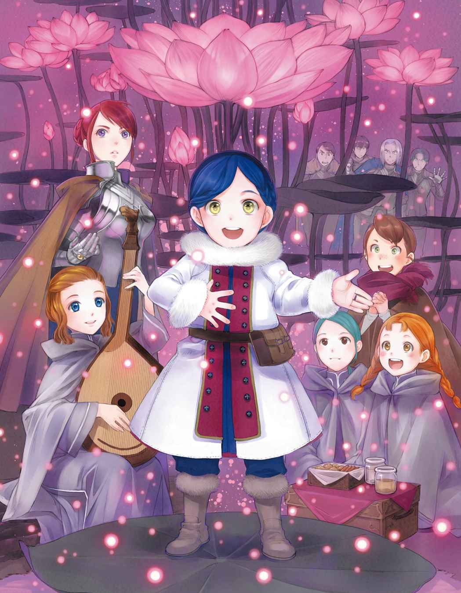
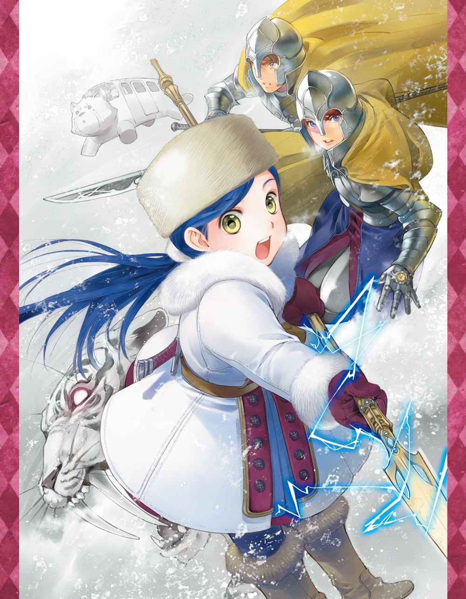
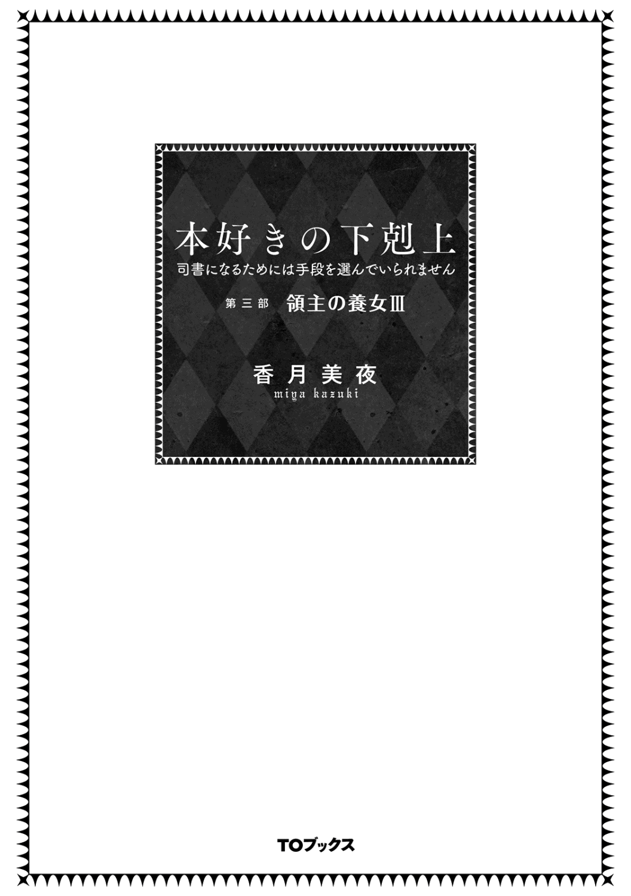
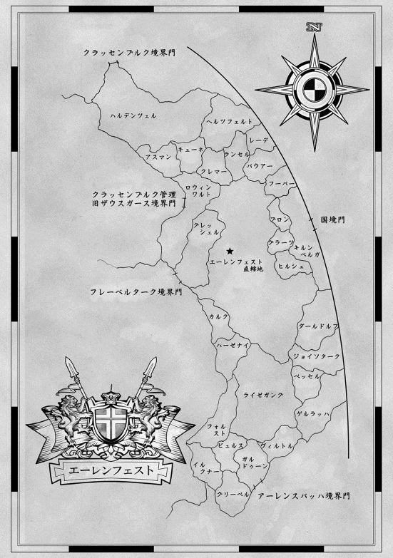
イラスト：椎名 優 You Shiina
デザイン：ヴェイア Veia

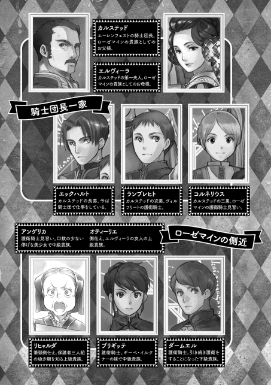
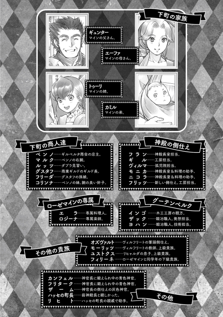
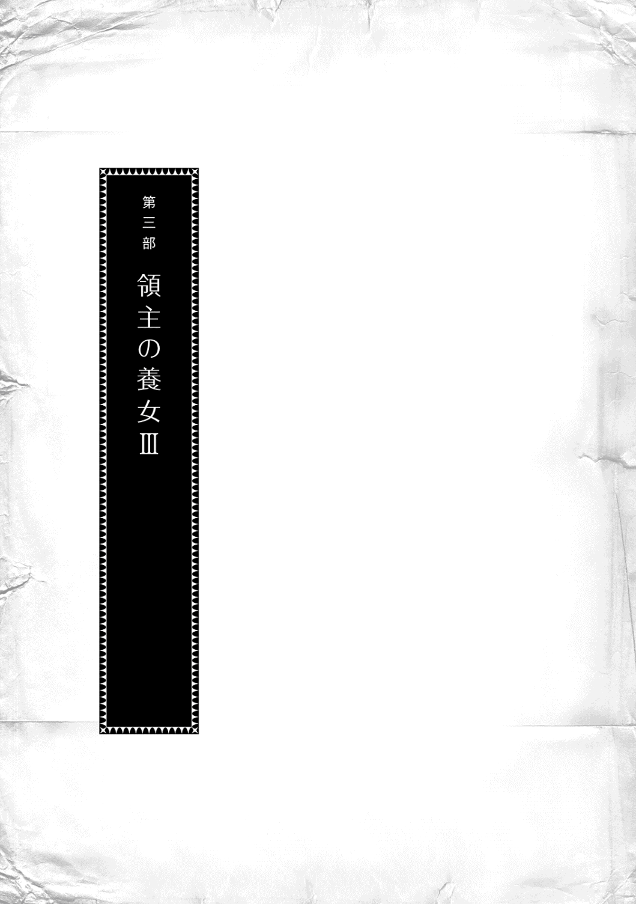
プロローグ
フランの主であるローゼマインが城から戻ってきた。平民から領主の養女になった彼女にとって城はまだ居心地の良い場所ではないようで、神殿の自室に戻ってお茶を飲むと表情が安心したように緩 む。お茶を淹 れていたフランは、主が寛 いでいる雰囲気を感じ取りながら一歩下がった。
「ねぇ、フランは側仕 えを増やすことに関してどう思いますか？」
突然問われ、フランは唇の端を少し上げて笑みの形を作りながら必死に頭を回転させた。どのような経緯や理由があって言い出したことなのかを先に把握 しなければ、この幼い主はとんでもない方向に突き進むことがある。過去に孤児院の子供達を外に出す口実が必要だという理由で、孤児全員を側仕えに召し上げようとしたことはとても忘れられない。
「ローゼマイン様、どなたがそのようなことをおっしゃったのでしょう？」
「ヴィルマが言っていたのです。孤児院長、工房長、神殿長とわたくしは肩書が多い割に側仕えが少ないのではないか、と。わたくし、それまでは神殿長の側仕えとして普通の人数だと思っていたのですけれど、仕事量を考えると一人一人の負担が大きいことに気付いたのです」
ヴィルマの言う通りだった。ローゼマインの側仕えは五人いるけれど、ニコラとモニカは料理の助手にとられることも多く、まだ側仕えとして十分な働きができているとは言えない。実質、三人でほとんどの仕事を担 っているため、全く手は足りていない。しかし、ローゼマインの懐 事情はフランが一番よく知っているし、フランの提案でデリアの代わりにニコラとモニカを増員してもらったのだ。これ以上側仕えを増やしてほしいとは、とても言えない。
「わたくし、神官長にも相談したのですよ。わたくしの側仕えを増やすことについて」
ローゼマインの言葉にフランはわずかに身を乗り出した。神官長フェルディナンドは前の主である。けれど、ローゼマインに仕えて自分に報告をするように、とフランに命じたのはフェルディナンドなので、フランにとっては今も半分くらいフェルディナンドが主だ。時と場合によってはフェルディナンドの命令や意見が優先される。ローゼマインの体調と読書に関しては特にである。
「神官長は何とおっしゃいましたか？」
「えーと......円滑 に執務が進んでいるかどうかはわたくしが判断することで、足りないならば増やせばいいし、特に問題がないならば増やす必要もないそうです。自分で稼 いでいるお金と神殿長に与えられる費用の他に、神官長が養父様 から預かっている養育費があるから、側仕えを増やすかどうかの相談はフランとしなさい、とおっしゃいました。お金の問題は解決されているので、本当にわたくしの考え一つでどうにでもできることみたいです。増やした方がいいかしら？」
フェルディナンドから許可が出ていると知り、フランはやっと安心して増員について考えることができるようになった。
「工房の管理者を増やすことには賛成いたします。今はギルが工房の管理を一手に引き受けておりますが、これから先もハッセのような工房を増やすことになれば、ギルが不在になりますよね？ でしたら、ギルと共に工房の管理ができる灰色神官が一人は必要だと思います」
工房を増やすということになればギルベルタ商会が動く。その時に「工房からも人員を」と申し出があれば、ギルベルタ商会と一番繋がりが深くて外に出ることに慣れているギルが出ることになる。すると、ギルがいない間の皺寄 せは全てフランにくる。孤児院の男子棟の地階に工房があるので、最終的な管理は女性には難しいからだ。切実に成人男性の手が欲しいところである。
「わかりました。工房で働いている灰色神官の中からギルとルッツに選んでもらいましょう。あの二人とうまくやっていける人でなければ意味がありませんから」
フランの意見を当たり前のように受け止め、工房を管理する側仕えの選別をギルとルッツに任せるとローゼマインは言った。こういうところも変わった主だとフランは思う。自分の側仕えを選ぶのに、側仕えの意見が最優先で自分の意見を後回しにするのだから。ちなみに、フェルディナンドが側仕えを選ぶ時は徹底した実力主義だった。新しい側仕えが一人必要だと思うと、目についた者を一気に十人くらい召し上げて、仕事をさせて選別し、能力が足りないと判断された者はどんどんと孤児院へ帰されていた。
「......工房の管理者は二人に選んでもらうとして、孤児院はどうかしら？」
「孤児院の管理者を増やす必要はありません。ローゼマイン様が、ヴィルマを孤児院で生活させるための理由づけとして、それから、地階に灰色巫女 がいなくなったことで幼い者に目が届かなくなったことを懸念 されて、ヴィルマを管理者に置きましたが、元々孤児院に管理者はいませんでした。側仕えとして遇 されている管理者が何人もいたら、ローゼマイン様が孤児院長を退 く時に次の孤児院長が困ると思われます」
ローゼマインが神殿業務に携 わるのは成人するまでだとフェルディナンドから言われている。これほど手厚く孤児を保護する体制が長く続くとは思えないし、次の孤児院長がその管理のために何人も側仕えを召し上げられるとは限らない。ローゼマインによって孤児院は大きく変わったけれど、他の人が引き継げない状態になるのは歓迎しがたい。
フランの言葉にローゼマインはポンと手を叩いて「そういえば、どうしてもヴィルマを側仕えにしたかったわたくしの我儘 で、孤児院に管理者を置いたのでしたね」と納得した声を出した。ヴィルマのおかげで孤児院の詳細を把握できているため、すっかり経緯を忘れていたようだ。
「では、神殿長室にはどうかしら？ 一番必要そうに思えるのですけれど」
「神官長の側仕えのように、すでに仕事ができる者を引き抜けるのであれば、ぜひお願いしたいと思いますが、これから育てなければならない側仕えは必要ありません。モニカがとても優秀で努力家なので、新しい側仕え見習いを入れるのは彼女がきちんと育ってからで良いと思っています」
自分の負担を減らそうとしてくれているのはありがたいが、今は日常業務とモニカとニコラの教育で手一杯だ、とフランは正直に現状を伝える。ローゼマインは少しだけ残念そうに微笑 んだ。
「少しでもフランの負担を減らせれば、と思ったのですけれど......」
主が自分の負担を減らしたいと考えてくれているのはフランにとって嬉しいことだ。じんわりと心の奥から湧 き上がってくる喜びを噛みしめるように味わいながら、フランは今の神殿長室の現状と、新入りの二人の教育がなかなか進まない理由を考えてみる。答えはすぐに出た。本来の側仕えの仕事ではない料理にモニカとニコラが時間を取られすぎているのだ。
......緊急で必要なのは神殿長室の側仕えではなく、料理人ですね。
「ローゼマイン様、できれば料理人を増やしていただけませんか？ 少し前まではフーゴとトッドとエラの三人で行っていた仕事を、エラ一人で行うのは無理があります。それに、ローゼマイン様がご不在の時はモニカとニコラが料理をしていますが、料理は側仕えの仕事ではありません。ローゼマイン様が城へ行っている時も神殿に残る料理人を手配していただけると助かります」
ローゼマインが冬籠 りの間、エラの助手をニコラとモニカにお願いした関係から二人が側仕えに召し上げられたという経緯があるので、当たり前のように二人は厨房 へ出入りしている。けれど、それで側仕えの仕事が疎 かになるのは本末転倒である。
フランの指摘にローゼマインは「そういえば、料理は側仕えの仕事ではありませんでしたね」とわかりやすく頭を抱えて悩み始めた。ローゼマインは頑張って貴族らしい振る舞いを身に付けてはいるけれど、時折ひょこっと隙 が出る。フランはブリギッテの視界にローゼマインの平民っぽい仕草が見えないようにそっと立ち位置を変えた。ローゼマインが平民出身であることを知っているダームエルも気が付いたようで、さりげなくブリギッテに話しかけて注意を引いたのが見える。
「フラン。料理人を増やすためにイタリアンレストランの新人をまたこちらで育てられないか、ベンノに相談してみます。それで料理人は何とかなるでしょう」
フランが予想していた通り、顔を上げた時にはローゼマインはきちんと取り繕 った表情と振る舞いになっている。それができるとわかっているので、フランは敢 えて指摘はしていない。
「料理人は増やしますけれど、ニコラはいつも楽しそうに厨房へ行くでしょう？ あの様子を見ていると、ニコラには料理人の助手の方が合っている気がするのです。料理を辞めさせるのではなく、料理の助手をさせて別の側仕えを入れることを考えた方が良いと思うのですけれど......」
いくら好きそうだからといっても、側仕え見習いを料理人助手にしようと思う者は他にいないだろう。でも、ローゼマインの金色の瞳には、すでに決めてしまっている光があるし、自分の側仕えにどのような仕事をさせるのか決めるのは自由だ。
「その辺りの采配 はローゼマイン様にお任せいたします」
「では、これから工房へ向かいます。ギルとルッツに誰が適任 か聞きたいのです」
フランは先触れとしてモニカを工房に向かわせ、ローゼマインと護衛 騎士のダームエルを先導しながら工房へ移動した。秋の終わりが近付く工房の中は、人数が多いためか回廊 に比べるとずいぶんと温かいように感じる。皆が手を真っ赤にしながら今年最後の紙作りをしていた。
「ローゼマイン様」
姿を見つけて駆け寄ってきたギルとルッツにローゼマインが工房管理のための側仕えの必要性を説明し始めた。自分の居場所を得るために努力していたギルを刺激しないように丁寧 に言葉を選んでいるのがわかって、フランは領主の養女になっても変わらない様子にフッと笑みを零す。
「これからもハッセのような工房を増やすつもりだけれど、その度にギルが不在になるでしょう？ その間工房を任せられると思う灰色神官を二人に推薦 してほしいと思っています。ギルベルタ商会と上手く付き合ってくれなければ困るし、ギルと仲が良くない人では困るのだけれど......」
ローゼマインの言葉に工房内を見回しながら少し考え込んでいたルッツとギルは、思い当たる人物があったようでそれぞれ名前を挙げた。
「フリッツかバルツが良いのではありませんか？」
「ノルトかフリッツなら任せられる......と思います」
どちらにも共通しているのがフリッツだ。フランは彼について知っていることを思い出す。貴族階級に戻ったシキコーザという青色神官に仕えていた元側仕えの灰色神官である。シキコーザがとても我儘な主で、フリッツは非常に我慢強い性格をしていると思ったことがフランにはあった。元側仕えなので立ち居振る舞いも問題はないし、工房だけではなく神殿長室の仕事もできるはずだ。
「ローゼマイン様、フリッツならば側仕えに召し上げても大丈夫だと私も思います」
「......そういう流れでニコラを料理人助手にし、部屋や生活用品など迎え入れる準備ができたら工房の管理人としてフリッツを側仕えに召し上げることになりました。ギルベルタ商会と相談の上、新しい料理人も入れることになりそうです」
フランはいつも通りに神官長室でフェルディナンドに報告をする。ニコラに料理を任せたいと言ったところでフェルディナンドが眉 をピクリと動かしたことがわかったけれど、フランは報告を続ける。全ての報告を終えることを優先させるようにフェルディナンドから教育されたからだ。
「側仕え見習いに下働きの仕事をさせるのはどうかと思う。ローゼマインが料理人助手として買い取り、地階へ移動させるわけではないのであろう？」
「側仕え待遇のまま、料理の仕事をニコラにさせるおつもりのようです。......けれど、特に問題はないでしょう。芸術に没頭 していたクリスティーネ様が詩作や音楽を側仕えの仕事にしていたように、珍しいことではありますが、料理を側仕えの仕事にしても構わないと思います」
フェルディナンドは少し驚いたようにフランを見つめて「ローゼマインにずいぶんと毒されていないか？」と真面目に心配するような口調で言った。フランは自分の手を見つめる。あまり自覚はないけれど、色々なところでローゼマインの影響を受けているのは間違いないだろう。フェルディナンドに仕えていた時と同じようにはいかないのだ。
「それにしても、話を聞く限りではフランの負担がずいぶんと大きそうだな。どうしても必要ならばここから一人移動させるか？」
「大変ありがたいお話ですが、それでは神官長のご負担が増えるでしょう」
フランが辞退すると、フェルディナンドは軽く首を横に振った。
「城の業務が減った分、こちらには少し余裕ができた。カンフェル達のように新たな側仕えを育てることもできるので、ローゼマインに願い出るように言っておきなさい」
ローゼマインが作り出した時間を彼女のために使うフェルディナンドがフランには微笑ましく思えた。本当に余裕ができたのだと実感し、嬉しく思っていると、フェルディナンドもわずかに眉間の皺を緩めた。
「ローゼマインもフランも他人のことばかりを気にするのだな。主従は似るのか？」
「......以前、ローゼマイン様も同じことをおっしゃいました」
ローゼマインは以前、真面目で堅物 で仕事人間とフランとフェルディナンドの二人を評し、「主従は似るのね」と言っていた。それを聞いて嫌そうにフェルディナンドが顔をしかめる。フランが仕えていた頃は、そんなふうに表情を崩すフェルディナンドを見ることは滅多 になかった。
......神官長もずいぶんとローゼマイン様に毒されているようですよ。
インゴと印刷機の改良
「ローゼマイン様、ギルベルタ商会の手紙をルッツから預かりました」
就寝前に行われる今日の報告で、ギルが手紙を差し出してきた。わたしはそれを受け取りながら首を傾 げる。このように改まった手紙を受け取ることは少ない。いつもはギルとルッツを通して「今度都合が良い時にベンノさんも呼んでくれると助かる」とか「旦那様が時間取ってほしいって」というように直接やり取りをすることが多いのだ。
......何かあったのかな？
カサリと手紙を広げて目を通せばギルベルタ商会からの正式な面会依頼で、印刷機の改良について隠し部屋へインゴを入れて話をしたいという内容だった。
......これは困ったね。どうしよう？
わたしの素を知る者はできるだけ少ない方が良い。わざわざ正式な面会依頼を出してくるのだから、ベンノが必要だと考えていることは伝わってくる。けれど、ルッツ達と違ってあまり馴染 みのないインゴを隠し部屋に入れて話をすることには少し躊躇 してしまう。
思わず「うーん......」という唸 り声が漏 れて、わたしは急いで口元を押さえた。笑顔で取り繕って、返事を待っているギルを見上げる。
「ギル、返事を書く前に一度詳しい話がしたい、とルッツに伝えてちょうだい」
「かしこまりました」
「ねぇ、ルッツ。どうしてインゴがわたしと話をしたいと言ったの？ 印刷機は灰色神官達と改良していく、って話じゃなかった？」
次の日、早速ギルがルッツを呼んでくれたので、わたしは孤児院長室の隠し部屋でルッツと向き合った。印刷機の改良についての話し合いをすると聞いていたけれど、問題があったのだろうか。
「インゴが工房に来てくれて、改良する話をしていたんだけどさ......」
今、工房にある印刷機は一番シンプルな形に作られている。金属活字で版を組んで組版 を固定して置く箱のような物を作ってもらっているので、版にインクを塗って紙をセットした後、その箱を圧縮盤 の下に置いてプレスするようになっている。一応圧搾機 を改造したものだが、形も何もほぼ圧搾機だ。インクや紙を置く場所は隣に台を準備しているし、本来ならば、版や紙をセットした台を押したり引いたりすることで、圧縮盤にセットできるはずなのに、それさえ手動でやっているのだから、印刷機として考えるとかなり使い勝手が悪い。そのため、灰色神官達からの改良案を聞いて少しずつ手を加えていくという話になっていた。
皆が色々と話している中、ルッツはインゴに「こんな感じで改良できないか」とわたしが口にしていた完成形の話もしてみたらしい。最初は、「ふんふん、なるほど」と相槌 を打ちながらルッツの話を聞いていたインゴだったけれど、話が終わると怖い顔で「詳しく知っている奴がいるだろう」とルッツやギルに向かって凄 んだらしい。
「改良するんだから、より良く完成された物を知っている者がいるなら意見を出させろ。無駄な試行錯誤 をさせる気かって怒鳴られてさ......。オレは平気だけど、職人の荒さに慣れていない灰色神官達は怖がるし、話し合いは進まないし、大変なことになったんだ」
工房の混乱状態を説明してルッツは「でも、インゴの気持ちもわかるんだよな」と肩を落とした。
わたしが知っている印刷機よりもっと良い物が生まれるかもしれないので、試行錯誤は無駄ではないと思うのだが、職人として参考にしたいと言われれば反論の余地はない。
「もちろんオレだって、お前は以前と違って神殿長になったからもう外には出られなくなったし、簡単に話もできなくなったとは言ったんだぞ。でもさ、下町をひょいひょいと歩く変わったお嬢様だったんだから下町の人間でも直接話をしようと思えばできるだろうって言われたんだ。現に、お前は印刷機の話をしているはずだ、と言われたら何も言い返せなかった」
平民であるルッツがわたしと印刷機について話ができるなら、実際に作る職人であるインゴとも話ができないはずはない、とずいぶん粘 られたらしい。インゴは下町を気ままに歩いてベンノやルッツと一緒にインゴの工房まで注文に行ったわたしを知っている。たとえ貴族でも下町の職人と普通に話ができるお嬢様だと認識されてしまっているようだ。それでも、貴族の危険さを知っているはずの下町の人間がそこまで食い下がるとは珍しい。
「なるべく貴族には深入りしないのが普通の職人だと思うんだけど......大丈夫なの？」
「それはそうだけどさ、お前からの注文は絶対に満足できる物に仕上げなきゃダメなんだ。この先に関わるからインゴも必死なんだよ」
ルッツによると、インゴはとても若い時にベルーフの資格を得て独立した木工工房の親方で、ベンノより少し年上の三十三歳だそうだ。血縁や婚姻 によって工房を引き継ぐならば若い親方もいるが、独立して自分の工房を持てる親方は四十歳以上が多い。インゴが三十代前半ならかなり若い部類に入る。だから、インゴは木工協会の親方の中では下っ端扱いされていて、大きな仕事がなかなか回ってこないそうだ。本物の祝福を与えられる神殿長として有名になっているわたしの専属と協会に認められれば、待遇 も全く変わってくるので必死らしい。
「......あれ？ インゴって、わたしの専属じゃなかったの？」
冬の手仕事の材料や印刷機の注文をしているので、わたしは自分の専属をインゴだと思っていたし、勝手にグーテンベルク仲間に入れていた。わたしの言葉を聞いて、ルッツが腕を組んだ。
「それが微妙なんだ。お前、神殿長としてハッセの神殿の時に旦那様とギルド長を通して木工協会に直接注文しただろ？ 完成の早さが最優先だったから仕方なかったけど、本来はお前から専属であるインゴにまず話があって、それから、インゴが采配 を振るって仕事を分けたはずなんだ」
ハッセの小神殿に関する依頼は神殿長の名前で行われた。実際に木工協会へ話を持っていったのはギルド長やベンノで、この二人はわたしの代理人という扱いになっていた。どこからどこまでを誰の専属が......と話し合う時間さえ惜しかったので、木工協会に仕事の割り振りを丸投げしたのだ。
けれど、その代表者にインゴの名前はなかった。本来ならば、わたしの専属として采配を振るうはずだったインゴは木工協会から話を聞いた時も寝耳 に水で、本当にわたしの専属なのかと木工協会に疑われたそうだ。木工協会に直接注文したのでハッセの小神殿は期限内にでき上がったけれど、今のインゴの立場はとても微妙なものになっているらしい。
「インゴは今までに神殿長の依頼を受けたことがあるけど、満足させられなかったのか、専属扱いされていない、という評価を受けているんだってさ」
それは職人生命に関わる評価だ。多少の危険を冒してでも専属を勝ち取りたいと思っても不思議はない。忙しさと効率で周りが見えていなかったためにわたしが引き起こした事態なので、インゴの名誉を回復させるのはわたしがしなければならない。
「......わかった。ここでお話をしよう。ローゼマインになった経緯 を知らないマイン時代の知り合いと交流するのはいい顔をされないけど、わたしもできれば直接話がしたいと思っていたんだよね」
どの程度の改良がされるのか、どんな風に変わるのか、わたしもインゴから話を聞きたいとは思っていたのだ。インゴに貴族と関わる覚悟があるならば話をするのは構わない。
面会依頼の手紙に返事を出し、約束した日、ベンノとルッツがインゴを連れて孤児院長室へとやってきた。貴族と会うのだから、とインゴは全身を洗われたようで、わたしの記憶にある汗臭くて、無精髭 の生えた職人の姿とはずいぶん違って見える。工房で見た時はタオルのような布を頭に巻いて、バンダナのようにしていたのでわからなかったが、髪は黄土色で目は明るい青色だ。薄汚れた作業着ではなく晴れ着を着せられているので、工房で見た親方の姿とはまるで別人だった。
ベンノが貴族に向ける長い挨拶をして、わたしもそれに返事をする。職人であり、直接貴族とやり取りすることがないため、何を言えばいいのかわからないインゴは黙って跪 いているだけだ。
「では、あちらへ参りましょうか」
「恐れ入ります」
隠し部屋へ入り、扉を閉ざすとベンノがインゴの肩を軽く叩いた。
「インゴ、ここでは喋 っても良い。ローゼマイン様が目溢 ししてくれることになっている。今日は言葉遣いにはうるさく言わんが、態度や暴言 には気を付けろ」
「それは良かった。旦那と一緒に来たものの、何の話もできねぇんじゃ、と思っていたからな」
インゴがゆっくりと息を吐いた。そして、真剣な青い目でわたしを見る。貴族に相対する緊張と不安と恐れが入り混じり、それでも、逃げ出すことはできないと決意したような強い目だ。
「嬢ちゃん、いや、神殿長か。一つ聞きたい。重要なことなんだ。俺は神殿長の専属なのか？」
「わたくしは専属だと思っています。......ハッセに関しては期限の問題があったため、木工協会に直接依頼をしてしまって、インゴにはずいぶんと大変な思いをさせてしまったようですけれど、インゴはわたくしの期待に足る仕事をしていると評価しております」
「......そうか」
ふぅっと安堵 の息を吐き、インゴの肩から力が抜けた。かなり思い詰めていたようだ。悪いことをしたな、と思っているわたしの前で、インゴはぐるりと一度肩を回して、今度は職人らしい妥協 を許さない顔でわたしに向き合った。
「じゃあ、印刷機の改良について神殿長が知っていることを全部教えてもらいたい。俺は少しでも良い物を作りたいんだ」
どうせ作るならば、より良い物を作りたい。より良い物を知っているなら、洗いざらい喋れ、と青い目が雄弁 に物語っている。麗乃 時代の知識にあるグーテンベルクが作ったブドウの圧搾機を改造した印刷機も、段々と改良が加えられて金属の物へと変化していった。今の工房にある印刷機は完全に木製で、グーテンベルクが作った印刷機にさえ機能が追い付いていない可能性が高い。
それを一体どこまで改良できるだろうか。わたしは映像で見たプランタン・モレトゥス博物館の印刷機を思い出す。現存する最古の印刷工房。できれば、あのレベルまで改良したいと思っているが、詳細な設計図を描けるほど詳しく知らないのだ。
「今は組版の箱に紙を置いて、直接圧縮盤の下に置いていますよね？ でも、できれば、こういう台を付けて、押したり引いたりして出し入れできるようにすると、すごく楽になるのです。わたくしが知っている物は、横にあるハンドルをこんな風にぐるぐると回したら、出し入れできたのですけれど......」
わたしが紙に簡単な図を描いたり、身振り手振りで訴えたりしてみても、インゴは難しい顔で唸るばかりだ。知らないものを想像するのは難しいと思う。まして、それを作るとなれば尚更 だ。
「今は圧搾機を元にしているのでネジ式ですが、『てこの原理』を利用した方が楽に印刷できるのです。ただ、どんな風にてこの原理が利用されていて、どんな風に設計されているかは知りません」
「テコノゲンリ？ 何だ、それは？」
わたしは書字板に書き込んで、支点、力点、作用点とてこの原理を説明したけれど、インゴは不可解 そうに首を傾 げるだけだった。まだ大幅な改良は難しいようだ。
「うーん、台を作って出し入れくらいは何とかなるかもしれんが、木材が重いからな。滑 らせるなら、金属が必要になるだろう？」
「はい。一部に金属を使うことで、安定度や速さが向上すると思います。わたくしの専属の鍛冶 職人に声をかけましょうか？」
強度や安定度を得るために、金属を使おうと思うのならば、ヨハンとザックにも声をかけた方が良いだろう。それに、ロウ原紙を作るためのローラーを何種類も設計してくれたザックならば、わたしの説明をできる範囲で形にしてくれるかもしれない。
「とりあえず、神殿長の頭の中にはずっとすごい改良版があることはわかった。そして、それが難しすぎて他の奴には通じないこともな。......できる範囲で形になるように、鍛冶職人とも話をしてみたい。今まで神殿長の依頼を受けてきた職人なんだろう？」
「はい。成人したての二人なのですが、色々な依頼を受けてもらっています。グーテンベルクとして印刷業を広げてもらうために必要な、わたくしの自慢の職人です」
わたしがヨハンとザックについて話をすると、インゴは興味深そうに目を輝かせた。
グーテンベルクの集い
インゴが印刷機を改良するのに金属も取り入れると決意したので、わたしはベンノに次回はヨハンとザックも一緒に連れてきてもらえるようにお願いする。
「......本当に良いのか、インゴ？」
ヨハンとザックを呼ぶのは、わたしにとって当たり前のことに思えたのだが、あり得ないことだ、とベンノが言った。本来は、木工工房に依頼された物に鍛冶工房が設計の段階から関わることはないらしい。あくまで依頼を受けるのは木工工房なので、木工工房で設計され、その上で必要な部品を鍛冶工房に頼むという形を取るそうだ。
「木しか扱っていない俺には、どんなふうにどんな金属を使えば良いかわからないからな。専門に扱っている奴に聞くのが一番だ。依頼主である神殿長が満足するのが大事なんだ」
インゴは異業種との話し合いの上で設計するという前例のないことを行う、と宣言する。
「......異業種間での意見交換は普通のことではないのですか？」
「家具や扉を作る上で、鍛冶工房に蝶番 や釘 の注文をしたことはあるが、設計の段階では異業種どころか、余所の工房と話し合うこともない」
誰が依頼を受けたのか、どこが利益を得るのかを明確にするためだ、とインゴは言った。おそらく、専属を決める制度も似たような理由でできているのではないかと思う。
「お貴族様である神殿長には職人のことはわからないか......」
仕方がないと軽く頭を振るインゴの向こうで、何でわからないんだ？ と言わんばかりにジトリとした目でわたしを見ているベンノやルッツがいる。
......生粋 のお貴族でなくてもわかりません。ごめんね。
わたしは父さんが兵士だし、母さんもトゥーリも工房で雇われているだけなので、工房を背負って立つ職人の事情にも疎 い。もしかしたら、本を作り出すことに夢中で、そういう世の中の仕組みに全く興味を持っていなかったせいかもしれない。
「では、わたくしもなるべく色々な改良点について考えてみますね」
「あぁ、頼んだ」
インゴが帰った後、わたしはなるべく印刷機について思い出しながら、改良点を書き出していく。設計ができないので言葉や図だけだが、何かの発想のきっかけになれば良いと思う。
数日後、呼び出されたヨハンとザックが辺りをきょろきょろと見回しながらやってきた。ヨハンは純粋に「今度は何をさせられるのだろう」という不安が顔に出ていて、ザックは「院長室に何か面白い物が転がっていないか」というような好奇心に溢 れた顔で部屋を見回している。
「そういうわけで、印刷機の改良に金属も使いたいと考えて二人を呼びました。協力してください」
事情を説明して協力を求めると、すぐに「わかりました」と返事したヨハンと違って、ザックは不満そうに鼻の頭に皺を刻んだ。
「協力と言われても印刷機は木工工房への依頼です。ウチの工房への依頼ではないので、こちらには何の利益にもならないじゃないですか」
「お金はもちろん払うつもりですけれど？」
わたしが首を傾げると、違う、とザックは首を振った。
「お金だけの問題じゃない。余所の仕事を手伝っても、鍛冶協会での評価は上がらないんです。だから、依頼に来る客が少なくて、他人の仕事ばかり手伝っているヨハンは技術だけあっても評価が低い。細かい仕事が得意なヨハンが手伝えば、依頼を受けた職人の評価は上がり、工房の評判にはなる。でも、ヨハン個人の評価が上がらない。俺はそういう仕事はしたくないです」
ザックの説明で、技術の割にヨハンの評価が低い理由を知った。
「ザックは評価に繋がらないと言ったけれど、金属の部分を鍛冶工房に注文すればヨハンやザックの評価に繋がるのではなくて？ わたくし、インゴにそう聞いているのですけれど？」
印刷機の注文はインゴの工房に、金属部品の注文はザックとヨハン、それぞれの工房に。そうすれば、普通の依頼と大して変わらないと思っていたのだが、わたしが間違っているのだろうか。インゴに視線を向けると、間違っていないというように一つ頷 いてくれる。
「......細かい仕事はヨハンの方が圧倒的に上手いじゃないですか」
工房の隅に置かれているロウ原紙を作るためのローラーを例に挙げてザックは悔しそうに呟いた。ヨハンが作った機械は、ザックが作った機械よりも使いやすかった。設計したのに自分では作れずに終わったザックが悔しそうに奥歯を噛んでいたことは知っている。ヨハンの技術力の高さを理解したことで生まれた苛立 ちだ。
「部品の仕事はヨハンに行くに決まっています。俺の評価には繋がらないじゃないですか」
いくら考えても結果をヨハンに取られる、とザックが灰色の目を伏 せた。以前は、できるわけがないと言いながらヨハンに自分の設計を見せたり渡したりしていたが、今は、実現してしまうヨハンの技術をザックが非常に警戒 しているのがわかった。けれど、それでは困る。お互いがお互いを警戒していては、自由な意見交換ができず、新しい発想が出てこなくなってしまう。わたしは曖昧 な説明や希望を形にしてくれるザックの発想力に期待しているのだ。
「部品を作るのはヨハンの方が確実ですけれど、発想と設計は圧倒的にザックの方が優秀ではありませんか。わたくしは印刷機の改良においてザックの発想力にこそ期待しているのです。ザックの設計図をわたくしが購入するという形では鍛冶工房の評価を取れないのですか？」
わたしがザックの発想の結晶である設計図を買い取りたいと言うと、ザックは思いもよらないことを言われたように目を丸くしてわたしを見た。
「設計図を買うだって？ 何を考えてるんだ？ 品物じゃないぞ？」
驚きのあまり素の言葉遣いになっているザックを見て、わたしはまたもやカルチャーショックを覚えた。設計図を買うという行動がここでは異常らしい。
「設計図はザックの考えた物でしょう？ それを作りたいと思うのですから、設計図には十分な価値があるではないですか。わたくしはザックの設計図を購入したいと思っています。商品が設計図だと考えれば、ザックの評価に繋がりませんか？」
「え、えぇーと、それはつまり、俺に設計図を注文して、それを買うって言うのか？......ローゼマイン様は、時々ビックリするようなことを言うな」
ザックが目を瞬 かせながら手をわたわたと動かす。どうしてそこまでビックリされるのかよくわからない。首を傾げるわたしを見ながら、ヨハンが経験者の余裕を見せてザックの肩を叩いた。
「ザック、ローゼマイン様がビックリするようなことを言うのは時々じゃない。いつもだ」
いきなりお祈りとかしないだけ今日はマシだ、と呟 くヨハンに、わたしはむぅっと唇を尖 らせる。そんなわたし達のやり取りを見ながらじっと考え込んでいたザックが灰色の目を光らせた。
「設計図はお客との話し合いで作られて、それが品物になるから設計図を売るということはないんです。以前に作った商品と同じ物が欲しけりゃ、お客の紹介で新しいお客が付くから設計図を余所 に流すこともないし......。設計図を売るなんて考えたこともなかったけど、依頼されて設計図が商品として扱われるなら、俺の評価にも繋がります」
ベンノを通して設計書の依頼をザックに出すということで、ザックは納得して印刷機の設計に協力してくれることになった。
「それで、ローゼマイン様は一体どう改良したいんですか？」
「今の印刷機は全て木製ですが、強度と印刷の正確さを向上させるために、一部を金属にしたいと考えています」
わたしは記憶にある限りの絵や説明を書き込んだ図を取り出して広げる。
「まず、印刷機にこのように動く台が欲しいです。組版を置いて、こうして紙をここにおいて、こちらの板を折りたたんで固定した後、この圧縮盤の下にグッと移動させたいのですが......」
図を示し、身振り手振りでどんなふうに動くか説明した。ザックはぶつぶつと何やら言いながら聞いていて、ヨハンは難しい顔をしている。
「最低限、金属を取り付けて滑りやすくしたいと考えています」
「あぁ、それなら......」
ヨハンがホッとしたように「できる」と言ったが、ザックは挑戦的に灰色の目をきらめかせた。
「......最低限だって？ じゃあ、最高は？」
「この台がハンドルを回すことで動くようにできると良いのですが、わかりますか？」
ハンドルを持ってぐるぐると動かすパントマイムに、ザックが腕を組んで唸る。
「ハンドルで台を動かす......？」
「糸巻きの方法を応用して台を動かす方法もありました。何かの参考になりますか？」
「ふーん、糸巻きか......なるほどなぁ」
なるほど、と言うのだから、何か思いついたのだろう。さすが発想のザック。グーテンベルクの称号に相応 しい。ザックの考えがまとまるのを待っていると、インゴが青い瞳でわたしを見据 えた。
「神殿長、他には何かないか？ 実現可能かどうかは置いておいて、どのような改良をしてほしいのか、どんな物を作ってほしいのか、思いつく限り言ってくれ」
インゴは簡単に「思いつく限り」なんて言うけれど、言ったところで理解できるとは思えない。
「思いつく限りを言っても良いのですか？ 多分、実現できないと思うのですけれど」
「できる、できないじゃない。今のザックのようにちょっとした一言で、できるようになるかもしれない。他の何かに使えることがあるかもしれない。何でもいいから思いつく限り述べてくれ」
インゴの言葉にザックが大きく頷き、期待の眼差 しでわたしを見てくる。期待されているならば、できるかできないかは関係なくどんどん無茶振 りしてみよう。
「わかりました。では、『スプリング』の利用も考えてほしいです」
「スプリング？」
「金属で作る物ですから、鍛冶工房で扱っているのではないかしら？ このような物ですけれど」
わたしが図を描いて利用方法を述べると、ヨハンはポンと手を叩いた
「あぁ、バネか。......それを印刷機のどこにどうやって使うんです？」
「存じません」
「はい!? 」
そんな目で見られても、知らないものは知らない。印刷機の改良の歴史は読んだことがあっても、詳細な設計図なんて載っていなかったし、たとえ載っていたとしても詳細に覚えているわけがない。
「圧力を加えるための圧力盤の上下運動を助けるために使われているということくらいしかわたくしは存じません。これから作る印刷機に取り入れられるのか、どのように取り入れれば有効なのかは、貴方達、職人に任せます。上手く使えば便利になるでしょうけれど、絶対に使わなければならない物ではありませんから」
改良の歴史の中から、わたしが覚えていることだけを述べているだけなので、本来はもっと小さな改良点や、わたしが知らない工夫がたくさんあるはずだ。それでも、わたしが言ったことを取り入れて、新しい印刷機を作ることができれば、印刷機の歴史が一気に百年から二百年ほど動くことになるだろう。けれど、「できたらいいな」であって、「できなければならない」とは思っていない。
「あ、でも、どうせ改良するのですから、もう一つ」
ザックが目を剥 いて「まだ改良点があるのか？」と叫んだ。思いつく限り述べろと言ったのは、ザックやインゴなのに何故そんな驚いた顔をするのか。
「これは印刷機を根本から変えることになるので、すぐにはできないと思っています。今は圧搾機を利用して作っているのでネジ式なのですけれど、いずれは『てこの原理』を使った印刷機ができれば良いと思っています」
「あぁ、テコノゲンリか......」
前回に説明を聞いていたインゴは理解できなかったことを思い出して眉を寄せ、ヨハンとザックはきょとんとした顔になった。わたしはインゴに説明したように、てこの原理について説明する。この原理も建築や石工の現場では使われているのではないか、と具体例を出しながら説明すると、皆が、あぁ、と納得の声を出した。
「原理はわかったけど、どうやって印刷に利用するのか、全くわからないな」
肩を竦 めたヨハンの言葉を、ザックは首を振って否定し、目を輝かせる。
「お前、何言ってるんだよ!? これはすげぇんだぞ。小さな力で大きなものが動かせるんだ。印刷機で一番力を使うのはこの圧縮盤を動かすことだろう？ これが小さな力でも動かせるようになれば、楽に印刷ができるってことだろう？ それに、利用方法は印刷だけに留まらないじゃねぇか」
「やっぱりザックの発想はすごいですね。ザックが言った通り、『てこの原理』もバネも他のことに応用できます。個人的にはバネを使ってベッドを作ってほしいですけれど、まずは、印刷機です。何を置いても、最初は印刷機です」
寝心地の良いマットレスよりも本の方が大事だ。印刷機さえできればバネやてこの原理をどう利用して新しい物を作り出そうと、わたしの関知するところではない。
「とりあえず、色々設計図を描いてみます。......お買い上げいただけるんですよね？」
「えぇ。印刷機の設計ということでザックの工房には依頼を出しておきますね。そして、良いと思ったものは全て買い取ります」
ザックがあれこれを考えている顔になった。色々と頭の中にアイデアが溢れているようだ。そんなザックを見ながらインゴはゆっくりと息を吐く。
「はぁ〜、若いのにすごいな。俺は神殿長が何を言っているのか、全くわからなかったぞ」
「ザックが考えてきた印刷機の中で実現可能な物を選んで、実際に作るのがヨハンとインゴの仕事ですもの。柔軟 で自由な発想が得意なザックに設計に関しては任せておけば良いのです」
適材適所 です、と胸を張るわたしにヨハンはゆっくりと息を吐きながら首を振った。
「今は絵本しか作っていないのですから、印刷機の改良を急ぐ必要はないのではありませんか？」
「絵本を作っているうちに印刷機を作っておかなければ、後で困るでしょう？ 何を言っているのですか、ヨハン？ グーテンベルクとしての自覚が足りませんよ」
ヨハンが「自覚なんてないです」と言いたげな顔でこちらを見ているが、無視だ。ヨハンはグーテンベルク。これは譲 らない。
「ザックが設計をしている間に、インゴとヨハンには別の依頼があります」
わたしは二人に設計図を差し出した。インゴには活字ケースや植字 台、それから、ステッキやインテルに関する依頼を出しておくことにした。
「活字ケースと植字台？......このステッキやインテルってどういう物だ？」
「活字ケースは使用頻度 や個数によって枠の大きさや位置を考えた、金属活字を入れるための箱です。植字台は活字ケースが納められた台で、植字を行うための作業台ですね」
ここに活字ケースが納められていて、ここに原稿を置いて、こんな風に組むと説明すると、インゴは理解できたように頷いた。
「こっちのステッキとインテルは何だ？ ケースや台に比べるとずいぶん小さいな」
「ステッキは活字を組むために使う細長い木の箱です。前にも作ってくださったでしょう？」
「言われるままに作ったが、何に使うか全くわからないんだ」
ステッキは側面がコの字だったり、Ｌ字だったりしてどこかが開いているため、厳密には箱とも言えない。一行の活字を組めなくては困るので、長さはＡ４の短辺くらいで片手で持てる五、六センチくらいの幅をしている。植字台ではこのステッキに活字を一文字ずつ並べていくのだ。
「ステッキに活字を入れるなら、このインテルは何に使うんだ？」
「インテルはステッキに最初に入れる細長い板です。たった一枚で一行の幅を決め、行間を揃 える優れものですよ」
高さは印刷に影響しないように金属活字よりやや低く、横の長さが本文の一行の長さを決めるために使われ、縦の長さは行間を決めるために使われる。一行活字を組み終わったらインテルを挟んで次の行を組むので何枚も同じインテルが必要になる。
「冬の手仕事のために同じ大きさの板を準備してくれるインゴの工房ならば、インテルも作れると思うのです。大丈夫ですよね？」
「大きさを揃えるのが意外と大変なんだよな。見習いの修行にはちょうどいいが......」
インゴはそう言いながら引き受けてくれたが、ヨハンは設計図を見て難しい顔で鳶色 の目を細めている。ヨハンには込め物の数々とセッテンを依頼したのだが、それほど難しい物はないと思う。
「ヨハン、何かわからないものがありましたか？」
「ローゼマイン様、セッテンとは何でしょう？ ずいぶんと薄い金属の板のようですが」
「あぁ、セッテンはステッキにインテルを入れた後、インテルにぴたりと添 わせて並べるのです。金属活字を滑りやすくするための物ですよ」
滑らせるために使うのだから、薄くて真っ直ぐな金属板でなければならない。ヨハンの手腕 に期待している。
「それに、このスペースというのは、すでにいくつも作ったんですが......」
「スペースは作ってもらいましたけれど、クワタとジョスはまだでしょう？ それに、文字ばかりの本を作ろうと思えば、フォルマートもいずれ必要になるのです」
スペースは文字と文字の間に挟 んで全角以下の細い空白を作る時に使われるもので、クワタは二文字以上の空白が必要となる文末に使われるため、長さの違うものがいくつも必要になる。今はスペースを使って文末を埋めているが、長い空白を作るためにはクワタがあった方が作業効率は上がるのだ。
ジョスは何行もの空白を作る時に使われる。装飾的な文字や小さなイラストを入れるための空白だったり、改ページで余白が必要だったりする時にドンと大きく入れるのだ。軽くするため、中を空洞に設計している。
フォルマートはジョスよりも大きな込め物で、大きなイラストを入れる時や見開きで二ページを一度に印刷する時にページの余白を作る時に使われる。ページとページの間を空けたり、天と地の余白を作ったりするために必要になる。
「今は絵本で本文の一ページしか印刷したことがないので必要なかったのですけれど、絵本を作り終わったら使うのです。文章が詰まった大人向けの印刷を始めようと思えば、数が必要になるので、早目に準備しておきたいと思っています。期日はたっぷりありますが、印刷機の作成も途中で入ってくるので、早目に取り掛かってくださいね」
ローゼマイン様は用意周到だ、と頭を掻 いた後でヨハンは設計図を大事そうに抱えた。
それから十日ほど経ってベンノから面会依頼が来た。ザックの設計図ができ上がったらしい。
許可を出すと、約束の日にベンノやルッツに続いて、七枚もの設計図を抱えたザックがやり切った笑顔で隠し部屋に入ってきた。インゴとヨハンも一緒だ。
「では、ザック。たくさん抱えているその設計図を見せてくださいませ」
パラパラと見ていくと、その中にわたしが思い描く印刷機にかなり近いものがあった。
「これ！ これを作ることはできますか!? わたくしが知っている物に一番近いのです！ すごいです、ザック！ まさか、あの説明だけでここまで同じような物を設計できるなんて」
わたしの絶賛にザックは得意そうに笑いながら設計図を覗 き込み、どの辺りを工夫したか、どうしてそうしようと思ったか説明してくれる。インゴやギルから聞いて、灰色神官達が言っていた改良点にも気を配ってくれたらしい。顧客が多くつくのも納得できる気配りだ。
「ちょっと待ってください、ローゼマイン様。こちらの方がてこの原理も使っていてすごいです」
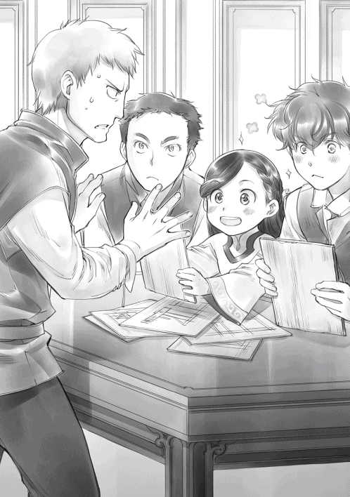
設計図を次々と睨んで見比べていたヨハンが、わたしとは別の設計図を取り上げた。
「......お前、小難しい物に挑戦したいだけじゃないのか？ 目が細かい部品しか見てないんだよ！」
ザックの指摘に一瞬だけばつが悪い顔をしたヨハンだったが、すぐに「任せてくれたら絶対にできるから。な？」と設計図を指差しながら鳶色の目を輝かせる。
「あぁ、お前達。落ち着け。ちょっと待て」
わたし達の様子を見ていたインゴが手を広げて、わたし達を止めた。目を瞬きながらインゴを見ると、インゴは「あ〜」とこめかみを掻きながら全員を見回す。
「まず、ザック。まさかこれほどたくさんの、しかも、工夫に溢れた設計ができるとは思わなかった。お前はよくやったよ。俺だけだったらこんな設計はできなかった」
「あ、いや、仕事だし......俺の得意分野だからさ」
正面から褒 められて少し照れたようにザックが笑う。インゴもそれに笑い返し、その後、わたしに少し困った顔を向けた。
「次に神殿長。自分が知っている物に一番近いから、これが良いと言ったが、他の物の利点や欠点も含めてよく検討してほしい。嬉しい気持ちはわかるが、落ち着いてくれ」
わたしがインゴに叱 られる様子を見ながらこっそり笑っているベンノとルッツを軽く睨みながら、わたしは他の設計図に手を伸ばす。
「それから、ヨハン。難しい物に挑戦したがるのは職人として大事なことだが、本当に使い勝手が良いのかどうか、客が満足できる物かどうか考えているか？ 商品を作る上でそれが一番重要だろう。自分の技術を見せつければ良い商品ができるわけじゃないんだ」
「......すみません」
インゴの言葉に、全員がもう一度設計図をよく見直すことになった。この部分を取り入れられないか、こちらをこうすればどうだ、と色々と話し合い、設計図をザックが何度か描き直し、かなり先進的な印刷機の設計図ができ上がった。印刷の歴史が二百年分くらいは進んだと思う。
「冬の大仕事だな」
印刷機を作る仕事を任された職人達は、全員挑戦的でやる気に満ち溢れた目をしていた。次の春までには完成させるぞ、と励 まし合っている。
......わたしのグーテンベルクに英知の女神メスティオノーラの祝福がありますように。
冬の社交界の始まり
冬がどんどんと近付いている気配がする。風は冷たく肌を刺すようになり、暖炉 が使われていても、朝の布団から離れるのが辛 い季節になってきた。ここ最近は貴族街へ向かう馬車が次々とやってきて神殿の門をくぐり、貴族門から貴族街へと入っていくのが窓から見える。秋の収穫祭を終えた貴族が冬の社交界のために貴族街へ移動しているのだ。去年は孤児院長室にいたので全く気付かなかったが、神殿長室の窓からは貴族門の様子がよく見えた。
「ねぇ、フラン。わたくしの冬の予定はどうなっているのかしら？ いつ城に向かうか、神官長から聞いていて？」
「ローゼマイン様が城へ居住を移すのは、冬の洗礼式が終わってからになります」
フランがそう言うと、フェルディナンドからの連絡を伝えに来ていたザームも軽く頷いた。
「雪の中、貴族街と神殿を往復するのは大変です。どうぞご自愛 ください」
ザームはフェルディナンドによる神官達の熱血指導が一段落すると、わたしの側仕えになることが決まっている。わたしがフェルディナンドに「フランが大変なので、優秀な側仕えを一人ください」とおねだりして引き抜いたのだ。後任が育ったら構わないと許可をくれた。
これまでもフェルディナンドからの伝言を持って来てくれた時に、ザームはフランの仕事を時々手伝ってくれていたようで、側仕えになってくれたら大助かりだとフランが言っている。ギルは日中ほとんど工房にいるので、女性率が高い部屋で仕事をしていたフランにとっては、ちょっと話ができる同性の同僚ができることが、殊 の外嬉しいようだ。
フェルディナンドは神殿の仕事をする傍 ら、騎士団と城に行かなくなって生まれた余暇 を青色神官と灰色神官の教育に注ぎ込んでいる。「神官長の側仕えになれば嫌でも一流になる」と灰色神官の間で噂になるような熱血指導が行われているのだ。ここ最近、薬に頼らなくなったフェルディナンドは実に生き生きとしている。次は何の課題を与えようかと、課題の作成も楽しそうで何よりだ。それに、熱血指導しているのはフェルディナンドだけではない。フェルディナンドの側仕えも一丸となって後進の教育に当たっているのだ。実に心強い。
わたしが推薦した青色神官のカンフェルとフリタークはフェルディナンドの熱血指導に涙目だが、課題達成と同時にお給料を払われているので生活費向上のために頑張っている。ついでに、彼等の側仕えも一緒に鍛 えられている。フェルディナンドという共通の敵に立ち向かうため、側仕えとの主従の絆 も深まったようで、主従一丸となって課題に取り組んでいる。その姿は微笑ましいが、微笑ましく見ていると、わたしにも課題が降りかかってくるので要注意である。
「ローゼマイン様、本日はギルベルタ商会からの納品がございます」
フランがちらりとわたしを見てそう言った。わたしは、うふふ、と笑みを漏らす。そう、今日はトゥーリと母さんが冬のお披露目 のための髪飾りを納品に来てくれる日なのだ。五の鐘が鳴るまでは冬の洗礼式の祈り言葉の練習や注意事項のおさらいをしなければならないけれど、その後は隠し部屋で納品である。今回はトゥーリやカミルへのお土産も準備したので楽しみで仕方ない。
「ローゼマイン様、孤児院長室への移動をお願いしてもよろしいですか？」
つい先日、側仕えになったフリッツが呼びに来た。フリッツは焦げ茶の髪に濃い茶色の瞳で、とても落ち着いた穏やかな容貌 をしている。数年前には、神殿にいる中でもかなり我儘な青色神官の側仕えをしていた経験があるようで、実に我慢強くて感情的になることがほとんどないらしい。ギルとルッツがちょっとした諍 いを起こしても仲裁 してくれるのがフリッツのようで、以前から工房内では縁の下の力持ちといえる存在だったそうだ。
フリッツは側仕えになったとはいえ、ギルと一緒に毎日工房へ行くので、朝と寝る前の報告の時間くらいしか、わたしは顔を合わせることがない。しかも、聖女伝説が浸透 しているタイプの灰色神官のようだ。わたしの前ではものすごく緊張するようで、笑顔も口調もぎこちない。
「モニカ、フリッツ。歩く速度にはよく気を付けてください。それから、こちらを忘れずに」
「かしこまりました、フラン」
わたしは二人と護衛騎士を連れて孤児院長室へ移動する。到着するとすぐに門へ出迎えに行っていたギルがルッツ、母さん、トゥーリの三人を連れてきた。
「お待たせいたしました、ローゼマイン様」
「お話はあちらで伺 います。モニカ、ギルに木箱を渡してください」
わたしが隠し部屋へ向かうように促 してダームエルとギルを見ると、心得たように二人が軽く頷いた。ブリギッテは一歩下がり、モニカもギルに木箱を渡すと同じようにスッと下がる。
「こちらがご注文の品でございます。どうぞお確かめください」
隠し部屋の扉が完全に閉じられた後、ルッツは丁寧な仕草でテーブルの上に木箱を置いて開けた。簪 を取り出す動作がとても丁寧になっている。もしかしたらトゥーリと練習したのだろうか。
取り出されたのは、注文した通り赤の大きめの花をレースでブーケのようにまとめて、白い鳥の羽で飾った冬の貴色 である赤と白の髪飾りだ。お披露目で着る衣装の色に合わせてもらった。
......お披露目の衣装ってサンタっぽいんだよね。
冬の貴色である赤を基調とした衣装で、温かくなるように手首や首元に白い毛皮をあしらっているデザインだ。正直なところ、「その配色はちょっと......」と思ったけれど、うきうきでデザインを選んでいたリヒャルダには何も言えなかった。どうせ言ったところで誰にもわかってもらえない。
「注文通りですね。......挿 してみてくださる？」
母さんにニコリと微笑みかけて簪を挿してもらい、「似合うかしら？」とわたしが軽く頭を振って尋ねれば、トゥーリがグッと拳を握って「もちろん！」と笑顔で答える。懐かしい空気に自然と頬 が緩んだ瞬間、コホンとダームエルが咳払 いをした。トゥーリがハッとしたように言い直す。
「......よく似合っています」
「トゥーリが作った物ですから、似合って当然ですけれどね」
わたしがニコリと笑うと、トゥーリは言葉にはせずに「そうでしょ？」と言いたそうに微笑んだ。
「ローゼマイン様、夫がハッセへの護衛に任命されたこと、とても喜んでおりました。出張費が配られるので門の兵士達の間では競争率が激しいそうです」
「神殿で食べたお料理がおいしかった、と言っていました」
ダームエルの様子を気にしながら母さんとトゥーリが話してくれる。少しの情報でも嬉しい。
「喜んでいただけてわたくしも嬉しいです。春にまた神官達をハッセへ戻すので、その時も門の兵士達に護衛を頼みたいと思っております」
父さんの話を聞いて、孤児院の子供達の話をして、自然な流れでカミルの成長に話題を変える。カミルは今つかまり立ちをしようと奮闘中らしい。わたしの記憶の中には寝ている姿と神殿の扉の向こうで抱っこされている姿しかないので、成長の早さに驚いた。でも、孤児院のディルクが先日初めて一歩目を踏み出したとヴィルマから聞いたので、カミルが成長しているのも当然だ。
「......ギル」
「これですか、ローゼマイン様」
ギルがモニカに渡されていた木箱をテーブルの上に置いて蓋 を開けた。そこに入っているのはトゥーリとカミルへのお土産だ。わたしはデリアとヴィルマと一緒に作った布のボールを取り出して、トントンと軽くテーブルに打ち付ける。鈴の音がチリンチリンと響いた。
「これは鈴が入っていて投げると音がするので赤子でも楽しめると思います。布ですからつかみやすいですし、他の方に当たっても痛くないでしょう？ ギルベルタ商会の商品にどうかしら？」
使っていないならば、まだ鈴が家に残っているはずだ。「トゥーリのお手本にどうぞ」という形でカミルに贈れば、母さんはわたしの意図を察して受け取ってくれた。
「それから、髪飾りの礼としてこちらをトゥーリに下賜 します。家で読んでください」
わたしはトゥーリに絵本の第三弾を渡した。手紙を間に挟んであるので、ちょっと厚みができている。絵本を手に取ったトゥーリも間に挟まっている物に気付いたようだ。ちょっとだけ口の端を上げて、絵本を開こうとはせずに懐かしいトートバッグに絵本と布のボールを手早く片付ける。
まだ使ってるんだな、と見ていると、わたしをじっと見つめている母さんの視線に気が付いた。伸ばしかけた手を引いた母さんが心配そうに表情を曇らせた後、ぎこちない笑みを浮かべる。
「ローゼマイン様、寒さが厳しい季節となってまいりました。熱を出したり、長く寝込んだりしないよう、体調には気を付けてくださいね」
「えぇ、貴女もご家族もどうぞご自愛くださいませ」
秋の成人式を終え、雪が積もり始めた朝に冬の洗礼式があった。カミルが風邪を引くと困るから来てはダメだと事前にわたしが言ってあったので家族の姿はなかった。けれど、カミルが布のボールを元気に振り回しているとルッツから伝言があったので、わたしは満足である。
冬の洗礼式を終え、神殿内の青色神官にはわたしとフェルディナンドが不在の間にやるべきことを通達する。カンフェルとフリタークは課題を積み上げられて、ひいぃぃっ！ と息を呑 んでいたけれど、フェルディナンドの無言の圧力には逆らえず引き受けてくれた。
そんなふうにバタバタと過ごしているうちに、城へ向かう日がやってきた。エラとロジーナが馬車に乗り込んでいく。わたしは馬車へ乗り込む前に見送りに来ている側仕えを振り返った。
「ギル、フリッツ。ヴィルマと一緒に孤児院のことをお願いします。特に冬の手仕事の印刷は全力で取り組んでくださいね」
「ローゼマイン様も、えーと、エイギョウ頑張ってください」
ギルの激励にわたしは、貴族の子供達に教材が売れるように全力を尽くすと笑顔で応える。
「ローゼマイン様は体調管理を第一に考え、無理をなさらないようにお気を付けください」
「ありがとう、フラン。貴方達も体調には気を付けてちょうだい」
わたしが自分の側仕えとやり取りしている横で、フェルディナンドも自分の側仕えに細々とした注意事項を述べていた。
「カンフェルとフリタークに奉納 の儀式の準備を任せているが、補佐は頼んだ」
「かしこまりました」
いつの間にか、フェルディナンドの側仕えの間でも書字板が使われている。ザームがフランに頼んで、ギルを通じてルッツに注文されたのが最初だったらしい。今ではウチだけではなく、フェルディナンドやカンフェルやフリタークの側仕えでも必須アイテムになっているようだ。
「では、行ってまいります」
「お早いお戻りをお待ちしております」
エーレンフェストに雪が降る中、わたしは住居を神殿から城へ移した。
「おかえりなさいませ、ローゼマイン様。ようこそいらっしゃいました、フェルディナンド様」
養父様の筆頭側仕えであるノルベルトが出迎えてくれ、北の離れに一番近い待合室へ案内された。そこにはリヒャルダが待ち構えており、ゆっくりとお茶を飲みながら、わたしとフェルディナンドに冬の予定が教えられる。
「三日後の土の日に洗礼式がございます」
冬の洗礼式は社交シーズンの始まりを告げる行事で、その後、今年一年で洗礼式を終えた子供達のお披露目がある。全ての貴族が集まる中で、貴族の仲間入りをする子供が紹介されるのだ。
「......洗礼式？ もしかして、わたくしが行うのでしょうか？」
「いや、冬の洗礼式はお披露目を兼ねている。君はお披露目に出席するので、今年は私が洗礼式を行う。来年は君が神殿長として行うので、よく見ておくように」
......神官長が神殿長代理で洗礼式を行うのか。あぁ、イラスト販売が禁止されてなかったら大儲 けできたのに......。残念。
「ローゼマイン、よからぬことを考えている顔になっているぞ」
「考えたところで実行できないのですから、意味がありませんね。ハァ」
フェシュピール演奏会の会計報告にちょっとイラストを入れようと思ったけれど、すぐさま却下 されたし、売らずに配布するならいいですかと聞けば、馬鹿者と怒られたのである。
「姫様、余計なことを考えず、こちらのお話に耳を傾けてくださいませ。お披露目ではこれまでの成長とこれからの御加護 を願って、神々へ音楽の奉納が行われます。演奏の順番は貴族の位が低い者から始まり、高い者が後と決まっております」
「では、わたくしはヴィルフリート兄様の前ですね」
貴族は序列を大事にする。領主の実子であり、跡継 ぎと目 されているヴィルフリートより上級貴族から養女になったわたしの方が扱いは下になるのだ。だからこそ、お披露目の順番はわたしが先だろう、と口に出したけれど、リヒャルダは緩く首を振った。
「いいえ、ローゼマイン様が養女となったことを皆様にお知らせするため、順番は最後になっております。姫様の夏の洗礼式にいらっしゃらなかった貴族も冬には集まりますからね」
「まぁ、その方がよかろう」
フェルディナンドがリヒャルダの言葉に頷いたのが不思議で、わたしは首を傾げた。
「何故ですか？ 順番が崩れるのはよろしくないでしょう？」
「建前上は領主の子に順位はない。本来はまだ跡継ぎなど決まっていないのだから」
「ですけれど、養女と子では違うでしょう？」
「だから、本音は別だ。養女としての紹介をするということでローゼマインを後にした方が、ヴィルフリートは見劣 りしなくて済む。そうだろう、リヒャルダ？」
フェルディナンドの視線を受けたリヒャルダは、仕方がなさそうな顔で頷いた。
「ヴィルフリート坊ちゃまも目を見張るような成長を見せていらっしゃいますが、何年も努力してきた姫様と季節一つ分も経っていない坊ちゃまでは明らかに優劣が出ますからね」
「そういうことですか。わかりました」
洗礼式やお披露目での役割や流れをリヒャルダから聞いた後は、フェルディナンドが神殿の奉納式の予定をリヒャルダに伝えた。神殿と城を行き来するので面会や子供部屋の時間は限られる。
「面会依頼も多いだろうが、ローゼマインの体調を最優先に予定を組んでくれ。采配は任せる」
「かしこまりました、フェルディナンド坊ちゃま」
話し合いを終えた後、フェルディナンドは貴族街の自宅へ帰ると席を立つ。そのまま帰るのかと思えば、わたしを見下ろしながらつらつらと注意事項を述べ始めた。
「リヒャルダに薬を預けておくが、体調管理には気を付けること。図書室へは立ち入らず、本を部屋に運ばせること。知らぬ貴族とは直接口を利かず、側仕えに対応を任せること。それから......」
「坊ちゃま、それ以上はわたくしから少しずつ言い聞かせますから、そのくらいにしてくださいませ。一度にたくさん言い過ぎても、姫様の頭に入っておりませんよ」
リヒャルダがパンパンと手を打ってお小言を止めると、フェルディナンドは「そういえば、ここには私以外にも注意する者がいるのだな」と呟いて退室していった。フェルディナンドと会うのは、次は三日後の洗礼式だ。しばらくはフェルディナンドのお小言なしで静かに過ごせそうである。
わたしはリヒャルダの提案で着替えてからヴィルフリートの様子を見に行くことになった。
「ヴィルフリート坊ちゃまも短期間でずいぶんと成長されていますが、最近は少し得意になって、また少し怠 けがちなのですよ。本当にジルヴェスター様とよく似ていらっしゃるのですから」
リヒャルダは困ったような、それでいて、懐かしそうな複雑な笑みを浮かべる。リヒャルダは面会依頼をしてあったようで、わたしはすんなりとヴィルフリートの部屋へ通された。
「ヴィルフリート兄様、ずいぶんと進んだのですって？ 課題の表を拝見 してもよろしいかしら？」
「ほら、これだ。どうだ、私はすごいだろう？」
ふふん、と得意そうに表を差し出してくる。表がほとんど塗 り潰 されているので、ずいぶんと努力したことが一目でわかった。それと同時に、ゴールが見えているため、「ここまでできればもう大丈夫だろう」という油断が透 けて見える。多分、「ここまでできれば十分でしょう」と周りも褒めたのだろう。今までのヴィルフリートを知っている者からすれば十分かもしれないが、この課題表は領主の子としては最低限だ。完全に終わっていなければ失格である。
「まぁ、本当によく頑張っていると思います。でも、あと少し間に合いませんでしたね」
塗れていない課題があと五つある。間に合うか合わないか微妙なところだ。微妙だとは言わず、わたしは間に合わなかったものとしてヴィルフリートを慰 める。
「惜しかったですけれど、あまり気を落とさないでくださいませ、ヴィルフリート兄様」
わたしの言葉に側仕え達がざわりとざわめき、ヴィルフリートがカッと目を見開いた。
「なっ!? お、惜しくないぞ！ まだお披露目までには日があるではないか！」
「......あと三日ですよ？ 本当に間に合いますか？」
「もちろんだ！ やるぞ、モーリッツ」
煽 られて、やる気に火が付いたらしい。ヴィルフリートがモーリッツを呼んで、猛然 と勉強を始める。その様子を少し見た後、わたしはリヒャルダと一緒にそっと退室した。
わたしは自室に戻ると、神殿から部屋に運ばれた荷物を片付けてもらい、リヒャルダに図書室から本を持ってきてもらって、ゆったり読書時間を楽しんだ。
夕食の席では、ヴィルフリートの課題がまた一つ塗り潰されたとオズヴァルトから報告があり、両親が褒める。ヴィルフリートが胸を張って、わたしを見た。
「どうだ、ローゼマイン。私はやればできるのだ」
「えぇ、すごいですよ。ヴィルフリート兄様のおっしゃる通り、やらなければ、何もできないのです。そこに気付かれたことが何よりの進歩ですね」
ヴィルフリートのやる気を煽っていると、ジルヴェスターが苦い顔で不満を訴えてきた。
「ローゼマイン、フェルディナンドを何とかしろ」
「......何とか、とはどういうことでしょう？」
わたしは知らなかったけれど、ジルヴェスターは今まで何度もオルドナンツで「手伝え」とフェルディナンドにＳＯＳを送ってきていたらしい。それが全て「残念ながら、神殿長の許可なく行けぬ」とすげなく断られているそうだ。
「ならば、神殿長に取り次げ、と言っているのに、神殿長は不在だ、とか、忙しい、とか理由を付けては取り次ごうとしないのだ」
......あぁ、神官長の黒い笑顔が見えるよ。
けれど、ここでフェルディナンドを城へ手伝いに出してしまえば、今までと全く変わらない。
「城には文官がたくさんいるのですから、どうにでもなるでしょう？ 元々フェルディナンド様は政治の世界に関わらないことを内外に示すために神殿に入ったのですから、フェルディナンド様が城に出入りして仕事に関わる方がおかしいではありませんか」
こっそりであっても、本来はしてはならないことだろう。
「フェルディナンド様は今、神殿で後進を育てることを嬉々 として行っているのです。大きな政変があって貴族がごっそり減った、と伺いましたけれど、ここは中立の立場で余波 が少なく、比較的平穏なのでしょう？ 今のうちに色々と育てて、力を付けておいた方が良いですよ」
フェルディナンドに頼りきりの状態では周囲でいざこざが起こればすぐに駄目になりそうだ。
「......つまり、其方 はフェルディナンドをこちらに寄越 す気はないということか？」
「あら、そのようなことはありませんよ。フェルディナンド様でなければわからない用件で、文官が神殿まで質問に来る場合はお答えするように、と伝えておきます」
よほどのことがない限り、貴族がわざわざ神殿まで足を運ぶとは思えない。神殿に嬉々として足を運びそうな人なんて、一人だけだ。
「ローゼマイン、それではジルヴェスター様が......」
「養母様、そのような心配は必要ございません。まさか領主となるために努力する息子の前で、みっともない父親の姿を見せるような真似をアウブ・エーレンフェストがするはずありませんもの」
大きな釘を打つと、ジルヴェスターがヴィルフリートと全く同じ、むっとした顔で目を逸 らした。そこにヴィルフリートが輝く目で、反論という名の追い討ちをかける。
「ローゼマイン、父上はすごいのだぞ。みっともないわけがなかろう」
......これで更にサボりにくくなったよ。ヴィルフリート兄様、でかした！
ヴィルフリートの煽り役を務めつつ、ロジーナと一緒に自分の練習にも励んでいるうちにエーレンフェスト全ての貴族が集まる宴 の当日になった。
わたしは貴族の洗礼式の日と同じように朝早くから湯浴みをさせられ、朝食を終えるとお披露目の衣装を着せられて髪を結 われた。準備が整うと北の離れから本館の大広間に近い一室へと移動する。かなり早い時間から移動するのは、わたしの移動速度と騎獣 に驚く人へ考慮 した結果だ。
お披露目の子供が集められる待合室で三の鐘まで待機である。側仕えのリヒャルダとフェシュピールを持った専属楽師 であるロジーナが一緒だ。今日の護衛はコルネリウスとアンゲリカだが、今日は二人共お揃いのマントとブローチを付けている。山吹色 とも、明るい黄土色ともいえそうな色合いのマントは、去年のトロンベ討伐 で騎士団の人達が付けていたのと同じに見えた。
「コルネリウスとアンゲリカのマントはお揃 いですね。騎士団のマントですか？」
「いえ、このマントとブローチは貴族院に入る時にアウブ・エーレンフェストから全員が賜 るのです。本日、このマントを付けている者は貴族院に属する者になります」
どうやら貴族院の制服のようなものらしい。更に詳しく聞いたところ、この色がエーレンフェストの色で、貴族院では領地ごとに色の違うマントを羽織 っているのだそうだ。
「早いな、ローゼマイン」
「おはようございます、ヴィルフリート兄様」
待合室にヴィルフリートが来て、それから、ぽつりぽつりと子供を連れた貴族が入ってくる。わたし達は待合室の奥に座らされ、対応をするのはリヒャルダとオズヴァルトの二人だ。同い年の子供がいても満足に話もできない。親との関係があるので勝手に話をするな、と言われている。
......あ、女の子もいる。
ニコリと笑って手を振ってみたが、困った顔をされてしまった。自重 した方が良さそうだ。わたしは窓の外へ視線を向ける。本館の待合室の窓からは、朝早くから騎獣が着き、馬車が着き、貴族達が続々と城に到着する様子が見えた。
待合室にやってきた子供は八人。近年の平均では十人なので、今年はちょっと少ないらしい。
「行くぞ、ローゼマイン」
三の鐘が鳴ると、小さな紳士らしくヴィルフリートが緊張した面持 ちでわたしに向かって手を差し出した。どうやらヴィルフリートにエスコートされて大広間に入場するらしい。
ヴィルフリートと歩き出したけれど、結構足が速くて小走りになりそうだ。洗礼式の時に引きずられて意識を失った時のことを思い出して、わたしはヴィルフリートの腕を少し引いた。
「ヴィルフリート兄様、あまり速く歩かないでくださいませ」
「......これで速いと思うなら、其方はフェシュピールより歩く練習が必要だったのではないか？」
「そうかもしれません。今となってはもう遅いですけれど......」
わたしが肩を竦めて見せると、緊張が解れたようにヴィルフリートが笑った。
領主の子であるわたし達を先頭に、子供達が並んで大広間の扉の前に立った。
「中に入ったら真っ直ぐに壇の前まで歩いてくださいませ」
わたしとヴィルフリートが頷くと、リヒャルダとオズヴァルトが大広間の扉を開けていく。
「新たなるエーレンフェストの子を迎えよ！」
フェルディナンドの声が大きく響くと共に、今までに見たことがないほどの数の貴族が一斉にこちらへ視線を向けた。好奇と興味に満ちたたくさんの視線に一瞬怯 む。それは多分ヴィルフリートも同じだ。息を呑みつつ、わたしはヴィルフリートの腕に乗せた手に少しだけ力を込めた。ハッとしたようにヴィルフリートがこちらを向く。
「参りましょう」
視線を合わせて軽く頷くと、共に一歩を踏み出した。
洗礼式とお披露目
星結びの儀式の時に似ているけれど、もっと人数が多い大広間の中央を、値踏 みするような好奇心に満ちた視線を浴びながらわたし達は歩いていく。楽師が奏 でる音楽に速く歩け、と急き立てられているような心地で、ヴィルフリートに遅れないようにわたしは一生懸命に足を動かした。
大広間に集まる貴族達はカルステッドと同じ騎士団の装束 とユストクスが着ている文官の装束、側仕えのお仕着せ、それから、ひらひらした貴族らしい衣装を着ている者に大別できた。
衣装の布や飾りを見る限り、出入り口に近い者が下級貴族で、舞台へ近付くほど身分が上がるようだ。騎士や文官で何となくまとまっているが、そこに必ず華 やかな装 いの女性がいて、晴れ着や貴族院のマントを付けた子供が一緒にいる。基本的には家族単位で固まっているように見えた。
......お母様やお兄様は前の方かしら？
そう思っていると、最前列の中央近くを陣取っているエルヴィーラとその後ろにエックハルトが見えた。ランプレヒトとコルネリウスがいないのは、二人が護衛任務に就 いているからだ。
舞台の中央には祭壇 が作られていて、儀式用の神官服を着たフェルディナンドが立っている。舞台に向かって左側には領主夫妻とその護衛騎士や側仕えが並んでいた。ジルヴェスターとフロレンツィアに加えて、カルステッドがこちらを見ているのに気付いて、わたしは少し笑って見せる。
舞台に向かって右側にはフェシュピールを持った楽師達とロジーナが並び、その近くに魔術具の指輪を持った貴族の姿がある。その隣にコルネリウスとアンゲリカの姿があり、ランプレヒトの顔も見えた。洗礼式を受ける子供の関係者が固まっていることがわかる。
......そっか。わたし、もう領主の養女だからお母様達は関係者の集まるところにいないんだ。
エルヴィーラとエックハルトが普通の上級貴族の位置にいて、家族枠の位置にいられないことを目の当たりにしてちょっとだけ寂しい気分になる。
......リヒャルダとオズヴァルトはどこだろう？
わたし達を大広間の扉の前まで先導してくれたリヒャルダとオズヴァルトの姿も関係者の場所に見えない。そう思って探していると、わたし達とは別の入り口から入ってきたようで、並ぶ人達を掻き分けるようにしてリヒャルダ達が出てきて、関係者のところに並んだのが見えた。
わたし達が舞台の前で一度足を止めると、フェルディナンドが上がってくるように、と手を小さく動かして指示する。その指示に従い、わたし達は舞台に上がって横一列に並んだ。
家が貴族街から遠くて誕生季に神官を招けなかった貴族の子も含めて四人の子供の洗礼式が始まる。複数の子供がいるけれど、洗礼式の流れは自分の時とほぼ同じだった。フェルディナンドがよく響く声で神話を語った後、それぞれ子供の名前を呼ぶ。
「フィリーネ」
呼ばれた女の子が前に出た。先程の待合室で困ったような顔でわたしを見た女の子だ。フィリーネはフェルディナンドに差し出された魔術具の棒を握る。わたしも洗礼式で持たされた魔力を吸い取る魔術具だ。それを握って光らせると、貴族達から拍手が送られた。この魔術具を光らせるだけの魔力がなければ、貴族としては認められないそうだ。生まれてすぐに魔力を測られ、成長してまた測られて、と何度か確認されるので、洗礼式で光らないということはまずないらしいけれど。
そして、その魔術具をメダルに押し付けて魔力の登録をする。メダルに魔力を登録したことで、その子供は正式にエーレンフェストの貴族として認められるのだ。
フィリーネの父親が舞台へ上がり、フィリーネの手に魔力を放出するための指輪を贈る。
「我が娘として、神と皆に認められたフィリーネに指輪を贈る」
「フィリーネに、土の女神ゲドゥルリーヒの祝福を」
フェルディナンドの祝福を受けたフィリーネが、小さめの魔石の指輪に魔力を込めて「恐れ入ります」とフェルディナンドへ祝福を返す。ぽわんとした小さな赤い光がふよんふよんと飛んでフェルディナンドのところへ向かった。その祝福返しで背後の貴族達からは拍手が起こった。
......え？ そんなにちょっとでよかったの？
わたしが洗礼式の時に保護者三人組にやらされた祝福の規模と全く違うではないか。あの時に集まっていた貴族は二百人程度だったけれど、わたしは出席者全員を祝福したはずだ。
......わたしの時に皆がざわめいたはずだよ！ どう考えても普通じゃない！ 一般的な貴族の洗礼式を先に見ておけば、あんなに常識から外れた真似はしなかったのに！
いくら悔やんだところでもう遅い。それに、何を言ったところで聖女伝説を作るつもりだったフェルディナンドに丸め込まれたはずだ。わたしが勝てるところが思い浮かばない。
全員分の洗礼式が終わった後は、お披露目だ。今年一年で洗礼式を迎えた貴族の子が貴族としての仲間入りをしたことを喜び、これから先の神々の御加護を願って、音楽を奉納するというものである。基本的には自分の生まれた季節の神様に捧 げる曲を奏でて歌うことになる。
舞台に並んでいたわたし達は舞台の左側へと移動させられ、領主の側仕えが動いて、舞台の中央に椅子が置かれた。
フェルディナンドが「フィリーネ」と演奏する子供の名を呼んだ。演奏の順番についてリヒャルダが言っていたことを考えると、フィリーネはこの中で最も身分が低いのだろう。フィリーネが緊張した面持ちで舞台中央の椅子に座ると、彼女の楽師がフェシュピールを持って舞台へ上がってくる。楽師からフェシュピールを手渡されたフィリーネがフェシュピールを構えた。
......あれ？ そんなに上手じゃないよ？
最初はフィリーネだけが下手なのか、と思った。けれど、その次もその次も大して上手ではない。半分の演奏が終わったところでわたしは首を傾げた。貴族としてのお披露目がこれで良いならば、わたしやヴィルフリートに課せられた課題は一体何だったのか。貴族の嗜 みのレベルが思っていたよりも低い。そう思っていたが、演奏者が半分を過ぎて段々と身分が上がるにつれて、達者になっていく。フェシュピールの音の響きが全く違うことに気付いて、あぁ、と途端に理解した。
......教育費の差だ。
なるほど、身分の低い者から弾いていかなければ、順序が逆では可哀想 だ。自宅に招くことができる楽師や教師の差、そして、楽器の差がそのまま求められる嗜みのレベルとなる。ヴィルフリートやわたしに求められるレベルが高くなる理由も同じだ。最高級の教師や楽器に囲まれて育ち、身分の低い者に負けていたら貴族社会で威厳 など保てない。上級貴族の子供はさすがに上手かった。付け焼刃 のヴィルフリートより少しだけれど。つまり、ヴィルフリートが完全に見劣りするほどの違いはない。
「......練習、しておいてよかったですね、ヴィルフリート兄様」
ヴィルフリートが緊張に顔を強張 らせて「うむ」と頷いた時、フェルディナンドが名を呼んだ。
「大丈夫ですよ。ヴィルフリート兄様は努力しましたから」
わたしがそっと背中を押し出すと、ヴィルフリートは真っ直ぐに舞台を歩いていき、中央の椅子に座った。そこにヴィルフリートの専属楽師がフェシュピールを持ってくる。ヴィルフリートが受け取って、フェシュピールを構えて弾き始めた。本番に強いのも、注目を受けても平然としていられるのもジルヴェスターの血だろうか。ヴィルフリートは大勢の中で悠然 とフェシュピールを弾いているように見える。その姿は領主の子として相応しい姿だった。
わたしがちらりと視線を向けると、フロレンツィアが目を潤 ませて微笑んでヴィルフリートを見つめているのがわかった。その母親の愛情に溢れた眼差しが眩 しくて、自分の母さんのことを思い出して、ちょっとヴィルフリートが羨 ましくなる。
ヴィルフリートの演奏は少し詰まったところもあったけれど、慌てることなくフェシュピールを弾き終えた。やり切った笑顔でヴィルフリートが舞台から降りていく。
「ローゼマイン」
フェルディナンドに呼ばれて、わたしも他の子供達がしていたように舞台の中央にある椅子に座った。すると、大広間の中にずらりと並んだ貴族達が嫌でも目に入る。貴族は全員で八百人くらいだと聞いているが、もっとたくさんいるような気がしてならない。
広間を見回すと、中央最前列にいるエルヴィーラとエックハルトの二人と目が合った。二人とも心配など全くしていなさそうな余裕の笑顔でこちらを見ている。エックハルトのすぐ側にユストクスの姿も見える。むしろ、関係者の位置にいるダームエルとブリギッテの方が心配そうな顔をしていて、コルネリウスとアンゲリカは期待に満ちた目でこちらを見ていた。リヒャルダはわたしを安心させるように笑顔でコクリと小さく頷いている。
わたしが広間を見回している間に、ジルヴェスターから貴族達へ養女になった経緯を含め、洗礼式の時より更に誇張された聖女伝説が語られ始めた。
......止めて！ 盛らないで！
心の中で絶叫しながら、わたしは笑顔を必死で保つ。視線を向けられることに耐えられなくなる寸前に恥ずかしい紹介が終わり、ロジーナがフェシュピールを持ってきてくれた。
「ローゼマイン様ならば、大丈夫ですよ」
力づけるようにロジーナが小さく笑った。笑顔と神々への感謝を忘れずに、と小さく言われて、わたしは無理やり笑みを浮かべてフェシュピールを構える。
「では、神に祈りを捧げ、音楽の奉納を」
自分の生まれた季節の神に感謝して音楽を奉納するので、わたしが弾くのは火の神ライデンシャフトに捧げる歌だ。わたしにとっては耳慣れていて弾きやすい曲だが、フェルディナンドへこっそり行った悪戯 が自分に返ってきた。
......わたし、墓穴 を掘ってしまいました。練習させられたのは神官長が少し簡単にアレンジしたアニメソングなんだよ！ 心だけは籠 めるので許してください！ 神様！
わたしは心の中で謝りながら神様に失礼がないように心を籠めて弾いた。心を籠めて歌う。その途端、祝福の祈りを口にした時のように魔力が指輪にずるっと引き出されていくのがわかった。
......な、何これ!?
歌詞に合わせて魔力が広がって祝福となっていく。慌てて魔力の流れを止めたけれど、遅かったようだ。青い光が指輪から飛び出した。祝福となって舞台の上に、大広間に降り注ぐ。
こちらを見ている皆の顔が唖然 、愕然 、茫然 としている。助けを求めてちらりと見てみると、フェルディナンドはきつく目を閉じてこめかみを押さえていた。フェルディナンドの表情から察するに、とんでもないことが起こっている気がする。しかし、ここで演奏を止めても良いものかどうかがわからない。結局、わたしは最後まで演奏を続けた。演奏が終わってからも拍手がまばらで、大半が反応に困っているような顔をしている。拍手しているのはわたしの関係者ばかりだ。
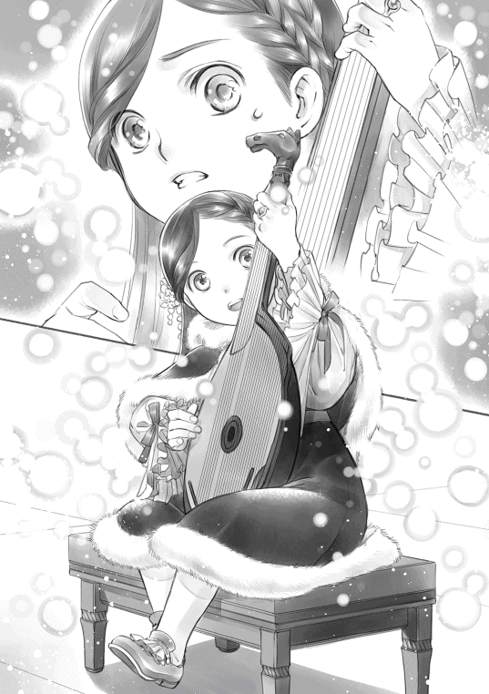
......あああぁぁぁ！ 微妙な雰囲気にしちゃってごめんなさい！ わざとじゃないの！
フェシュピールをロジーナに渡し、わたしがゆっくりと立ち上がると、フェルディナンドがつかつかと歩いてきた。何だろうかと見上げると、ぐいっとわたしを抱き上げた。
「エーレンフェストに恵 みをもたらす聖女に祝福を！」
その声に応えるように、貴族達が一斉にシュタープを掲 げた。祝福の光が上がり、「なるほど、聖女だ」という声が聞こえる。
......聖女伝説を加速させたよ、この人！
ひぃっ！ とわたしが息を呑むと同時に、「手を振れ。笑え」と短く命じられる。練習させられた優雅 な笑みで手を振れば、今度は割れんばかりの拍手が起こった。
わたしはフェルディナンドに抱えられたまま、舞台を降り、笑顔で手を振りつつ、すぐさま大広間から出される。スピードを速めて大股で歩くフェルディナンドが、彼に与えられていた控室へ入った後、やっと下ろしてもらえた。
「ローゼマイン、これを」
フェルディナンドは腰のベルトに付けられたじゃらじゃらした魔術具の中から、盗聴防止の魔術具を取り出して、わたしの手に押し付ける。ぎゅっと魔術具を握り、ハァと二人揃って疲れた溜息 を吐いた後、フェルディナンドがじろりとわたしを見た。
「ローゼマイン、あの祝福は何だ？」
「わかりません。勝手になりました」
むしろ、わたしが教えてほしい。わたしの答えにフェルディナンドが難しい顔で腕を組んだ。
「練習の時にはならなかったであろう？ 何故いきなり祝福になるのだ？」
「......だって、練習では真剣に祈らないじゃないですか」
練習中は指の動きや音階を追いかけるのに必死で、神に祈ることなんてないです、と小さく付け加えると、フェルディナンドはトントンと指先で軽くこめかみを叩き始めた。
「真剣に祈ったら、ああなった、と？」
「そうです。指輪に魔力が勝手に吸い出されていく感じで、ビックリして慌てて魔力を止めたのですけれど、ちょっと遅かったようです。今度からは指輪を外して演奏した方がいいかもしれません」
魔力が引き出されるのは魔術具の指輪をはめているからだ。わたしの提案にフェルディナンドはゆっくりと首を横に振った。
「洗礼式を終えた貴族が魔術具の指輪をはめていないなど、あり得ない。魔力を最初から止めるように意識するか、開き直って聖女となりきるか、どちらかだな」
「魔力を止めるように意識するというのも難しいですね。大体は勝手に流れてビックリするので。......それに、聖女伝説ももう十分でしょう？ これ以上は必要ないと思うのですけれど」
わたしが渋ると、フェルディナンドが少し考えた後、静かにわたしを見下ろした。
「普通と違うことには理由付けがあった方が良い。......いくら魔力が多くても領地に役立つ聖女ならば、忌避 されることはあるまい」
大きな力を持っている以上、役立つ存在でなければ排除 されたり迫害 されたりすることもあり得ると、フェルディナンドが目を伏せる。その苦い表情に何も言えず、わたしは唇を引き結んだ。
コンコンと扉がノックされ、リヒャルダが入室してくる。
「大広間は聖女のお話で盛り上がっております。とても授与式の雰囲気ではないので、先に昼食を摂 ることになりました。フェルディナンド坊ちゃまは早く着替えてくださいませ」
リヒャルダに連れられて、わたしは食堂へ移動する。その途中、「姫様はよくやりましたよ」とリヒャルダは褒めてくれた。わたしの洗礼式、星結びの儀式、ヴィルフリートへの教育の過程で、わたしが普通の子供でないことはわかっていたことだ、とリヒャルダは殊更 に軽い口調で言う。
「姫様のことを詳しく知らない貴族の方が多いので、貴族達は面食らったでしょうけれど、わたくし達にとっては今更のことですよ。......ローゼマイン姫様、魔力が多いことは貴族として誇ることで、そのような困った顔をすることではございません」
慰めるようなリヒャルダの言葉に少し心が軽くなり、わたしはホッと息を吐いた。
昼食を終えて大広間へ戻ると、この後は授与式といって貴族院の新入生へマントとブローチの授与が行われるそうだ。今年の新入生は十四人で、わたし達の同期に比べるとずいぶんと多い。
わたし達とは別の場所で昼食を摂っていたロジーナが合流してきた。ロジーナはいつもすました笑顔を浮かべているのに今は何だか表情が少しおかしい。
「ロジーナ、何かあったのかしら？」
わたしが声をかけると、ロジーナは困惑した表情を濃くして、わたしを見つめる。
「ローゼマイン様。......わたくし、先程クリスティーネ様に声をかけられました」
ロジーナがわたしの前に仕えていた芸術巫女のクリスティーネの名前に、わたしはハッとした。クリスティーネから友人のように扱われ、芸術にどっぷりと浸って生活していたロジーナは孤児院での暮らしに馴染めず、わたしの側仕えになってすぐは他の側仕えとも衝突して大変だった。クリスティーネとの再会に困惑しているロジーナを見て、わたしは不安になってくる。
「何か、言われたのですか？ 傷つけられるようなことが何か......」
ロジーナに尋ねると、ロジーナはゆっくりと首を横に振って否定する。
「いいえ。クリスティーネ様はわたくしを迎えに来てくださるおつもりだったようです」
「......え？」
思わぬ言葉にわたしは何度か目を瞬く。ロジーナは戸惑 いの中に喜びを隠しきれないような表情でもう一度言った。
「貴族院を卒業し、成人して自由に生活できるようになれば、わたくしを迎えに来てくださる予定だった、とクリスティーネ様はおっしゃいました。まさかローゼマイン様の楽師になっているとは思わなかった、と」
ロジーナの青い瞳が喜びに満ちて揺れている。幸せそうな表情にざわりと胸が揺れた。やはり、芸術に造詣 が深く、共に芸術を楽しめる主の方がロジーナは嬉しいのだろうか。
「......ロジーナは、クリスティーネのところへ戻りたいですか？」
心臓がバクバクする。戻りたいと言われたら、わたしはロジーナをクリスティーネのところへと送り出してあげた方が良いのだろうか。ぎゅっと胸元で手を握り、わたしがロジーナを見上げると、ロジーナは何度か目を瞬いてゆっくりと首を横に振った。
「わたくしは今の生活に満足しています。戻るつもりはありません。けれど、クリスティーネ様に置いていかれ、捨てられたように思っていた自分の心がとても慰められたような気がします」
「そう、良かったわ」
ロジーナの傷ついた心が慰められてよかった。ロジーナがいなくならなくて良かった。わたしがホッと安堵の息を吐くと、ロジーナが困ったような顔でわたしを見ながら小さく笑う。
「ローゼマイン様。ご心配なさらなくても、わたくしはローゼマイン様の専属楽師ですよ」
いなくなったら嫌だ、と思っていたこともロジーナにはお見通しだったようだ。クリスティーネに対する小さな嫉妬心 を見抜かれて、ちょっと恥ずかしくなったわたしは視線を逸らして舞台の方を見た。
「では、これより授与式を行う。貴族院へ向かう新入生は前へ！」
文官の声に舞台を見たものの、舞台は全く見えない。わたしの周囲は護衛騎士や側仕え、それから、フェルディナンドやエルヴィーラ達に囲まれていて、他の者が近付くことができない状態になっているのだ。そびえたつような大きい図体に囲まれて舞台が見えない。誰か肩車でもしてくれないかな、と思いながら、わたしは皆の衣装の隙間から授与式を見つめる。
舞台の中央にジルヴェスターが歩いていき、一人一人にマントとブローチを手渡し、よく学ぶように、と激励しているのがちらちらと見えた。授与式の後は、文官から貴族院への移動日の知らせがあり、コルネリウスとアンゲリカがそれぞれの日付を何度か呟く。どうやら学年ごとの移動になるようで、二人の移動日には少し違いがあった。
「フェルディナンド様、貴族院はどちらにあるのですか？」
「中央にある。冬の間、学生達はそこで生活するのだ。転移のための魔法陣は一度に多くの人数が運べない仕様 になってる。そのため、学年ごとに移動すると決まっている」
授与式が終わると同時に大広間の中がざわめき始め、そこかしこで雑談のような話が始まった。授与式の後は貴族達が情報交換を行う、文字通り、社交の場になるようだ。ここでどのように振る舞えば良いのだろうかと考えていると、フェルディナンドに軽く肩を叩かれた。
「ローゼマイン、顔色があまり良くないぞ」
「まぁ、大変。今日はもう部屋でお休みした方がよろしくてよ」
フェルディナンドとエルヴィーラがわたしの顔を覗き込むようにしてそう言った。わたしはまだ平気だったが、これ以上の面倒を起こす前に退場しろ、と遠回しに言われているのがわかり、リヒャルダや護衛騎士に囲まれて退場することにした。
その道中、ひそひそと囁 き合う声が聞こえてくる。
「聖女に相応しい魔力ですわね。ぜひ、お近付きになりたいものです」
「あら、少し魔力が多いだけで、聖女だなんてあり得ないわ」
「あの聖女は恐らく私の姪 に違いありません」
......うぐぅ、視線が痛い。
あからさまにこちらを凝視 してくることはないが、横目でちらりちらりと視線や意識がこちらに向けられていて、入場した時よりずっと注目されているのが肌でわかる。駆け出したいのを堪 えて、わたしは俯 かないようにできるだけ顔を上げて貴族らしく歩いた。
子供教室
冬の間、大人は社交を優先させる。他領との境に位置する土地を所有するギーベからは他領の情報が流れてくるし、領主会議のために中央へと赴 いている領主とその側近達からは中央の噂や話が流れてくる。貴族院の同期による横の繋がりから情報を得たり、ギーベ同士での会合で今年の収穫量や魔獣の被害などの話をしたり、女性同士の集まりで様々な噂話が行き交ったり、大人達は忙しい。
その間、洗礼式を終えた子供達は一室に集められる。これから先、貴族院へ一緒に向かうことになり、同期、先輩、後輩として共に生活をする仲間となる同じ年頃の子供達で過ごすのだ。兄弟姉妹から聞いた話を元に自分が貴族院で所属するコースを選んだり、目指すコース毎に子供が固まって少しでも交流を持ったりと、こちらも大人ほどは洗練されていなくても社交の術 を学ぶことになる。同時に、身分の上下を理解し、貴族らしい振る舞いを身に付けることが望まれるのだ。
「今年からはその場にヴィルフリート坊ちゃまとローゼマイン姫様が加わることになります」
朝食の後、リヒャルダが滔々 とこれからの行動について説明してくれる。
「子供部屋は将来の側近を選び、育てる場となります。貴族院で一緒に過ごすことで連帯感や信頼感が生まれやすいので、どうしても年の近い者から側近が選ばれることが多くなりますからね」
その側近の座を争い、子供の後ろで親が暗躍 するとリヒャルダは少し厳しい顔で言った。
「姫様、どうか子供の後ろには必ず親族が付いていることを忘れないでくださいませ」
わたしはコクリと頷いて子供が集められる部屋へ騎獣で向かう。今日は護衛騎士が四人とも付いている。貴族院に出発するまでは学生達も同じ部屋に集められるため子供の人数が多いので、学生達の移動が終わるまでは護衛騎士が多く必要なのだそうだ。
「今日は最上級生の移動日ですから、荷物が多く行き交っているでしょう？」
本館の子供が集められている子供部屋へ向かう途中で、大きな荷物をいくつも積み上げた台車が並んでいた。これらは全て貴族院へ向かう者の荷物だそうだ。荷物と一緒に貴族院の所属を示すマントとブローチを付けた者が出入りする姿がある。
「毎年、貴族院に慣れている最上級生から移動し、最後に移動するのが新入生となっています」
「マントとブローチを付けていない者もいるようですけれど？」
「側仕えでございますよ。貴族院へ連れて行ける側仕えは一人と決まっておりますから」
学生達は実家の側仕えを連れて、貴族院へ移動していくのだそうだ。更に人数が必要だと思えば、側仕えのコースを選択している者を雇ったり、護衛として騎士コースの者を雇ったり、課題をこなすために文官コースの者を雇ったりするらしい。だから、洗礼式を終えた子供達は貴族院の話を聞きたがる。自分がどのコースに向かうのか考えるための情報とするためだそうだ。
貴族院へ向かうために準備している皆がわたしのレッサーバスを見てぎょっとし、二度、三度と振り返る。その驚いた顔には慣れてきたので、わたしは特に気にせず突き進む。わたしの側近達も周囲の驚き顔に慣れたようで、何事もないように進んでいた。
「ローゼマイン姫様、こちらが冬の間、子供同士で交流を持つための子供部屋でございます。学生達が貴族院へと向かうまでは少々手狭ですが......」
わたしがレッサーバスを片付けるのを待って、リヒャルダが部屋の扉を開ける。その途端、楽しげに話をしていた皆がピタリと口を閉ざしてこちらに注目し、急いで跪き始めた。
リヒャルダはその様子を当たり前の顔で見ながら「姫様、こちらへどうぞ」と部屋の奥に準備されている椅子へ向かう。わたしがそれに座ると、リヒャルダはお茶を入れるために動き、護衛騎士達が椅子を囲むように立った。その後はずっと挨拶だ。ずらっと並んだ子供達から挨拶を受ける。
「お初にお目にかかります。レーベレヒトの息子ハルトムートと申します。ローゼマイン様、命の神エーヴィリーベの厳しき選別を受けた類稀 なる出会いに、祝福を祈ることをお許しください」
「許します」
「命の神エーヴィリーベよ 新たな出会いに 祝福を」
次から次へと名乗られたところで、とても全てを覚えるなんてできそうにない。とりあえず誰の子なのか、親の名前が共に教えられるので、前神殿長の秘密のお手紙から作成した要注意リストに載っていた人だけは覚えておく。わたし、頑張った。前神殿長のリストも役立った。
わたしへの挨拶が列をなし、その後、ヴィルフリートがやってくると、またその前に挨拶の列ができる。挨拶の列が途切れるまでは、わたし達に話しかけることもできないので挨拶を終えた子供達は少し遠巻きにしながら、貴族院の学生達に色々な質問を始めた。学生達も自分が通った道なので、機嫌よく教えてくれているのが見える。どうしてそのコースを選んだのか、どのような講義があるのか、どんな教師がいるのか、そんな質問がちらほらと聞こえてくるのがちょっと楽しい。
......気軽に話しかけちゃダメって言われてるけど、わたしもあんな感じの話がしたいな。
わたしは自分への挨拶が終わると、周囲をくるりと見回した。周りにいるのは護衛騎士だけだ。
「ダームエルはどうして騎士になろうと思ったのですか？」
「兄上が文官なので、騎士の方が役に立てると思ったからです」
情報を収集するという点でも、同じ場所に所属するよりは違う場所に所属した方が様々な情報が集まる。文官としては兄の方が優秀なので、兄の役に立てるものを選ぼうと思ったらしい。
「ブリギッテはどうしてかしら？」
「わたくしは幼い頃から体を動かす方が得意でしたし、実家のあるイルクナーは山や森が多く、小さな魔獣が多いので、それを倒す術を身に付けた者がいれば周囲の者にも喜ばれますから」
率先 して害獣となる魔獣を退治しようとするブリギッテの心意気がカッコいい。シュツェーリアの夜の奮戦する姿を思い出して、わたしは何度か頷いた。その後、コルネリウスに視線を移す。
「コルネリウスはどうして騎士になろうと思ったのですか？」
「父上も兄上も騎士なので、側仕えや文官になろうと考えたことがありませんでした」
まぁ、あの家庭環境ならそうだよね、とわたしは納得した。カルステッドは息子を鍛えることしか考えていなかったので、わたしが娘となっても何をどうすればよいのかわからない、と言っていたくらいだ。息子を騎士とするために容赦 なく鍛えたに違いない。
わたしは最後にアンゲリカに視線を移した。一番志望理由を聞きたい相手だ。アンゲリカは淡い水色の髪に深い青の瞳の小柄で細身の少女で、ブリギッテと違って側仕えならともかく、騎士には見えない。今までのちょっとした仕事振りからスピードに特化した戦い方をしていて、領主の娘の護衛騎士として抜擢 されるくらい強いというのはわかる。けれど、アンゲリカ自身がどうして騎士を目指そうとしたのか、尋ねる機会はなかった。
「アンゲリカはどうして騎士になろうと思ったのですか？」
「勉強したくなかったからです」
予想外の言葉にわたしは何度か目を瞬いた。アンゲリカは至極 真面目な顔でもう一度繰り返す。
「なるべく勉強せずにすむのが、騎士だったのです」
「そ、そうですか」
「ローゼマイン様がお勉強を好きな主で嬉しく思っています。不足を補い合うことができるのが、良い主従だと騎士団長もおっしゃいました」
自分の代わりに頭を使ってください、という言葉が聞こえたような気がした。本があまり好きではない様子から勉強が嫌いなのだろうと思っていたけれど、まさか騎士の志望理由が勉強嫌いだとは思わなかった。人は見かけによらない。
「皆、それぞれに理由があるのですね。わたくしは文官になりたいです。文官になってこの城の図書室の管理をする司書になるのです」
図書館の司書は文官の中から選ばれるのだ。貴族院へ行って、文官になって、最終的には司書になる。そのためならばどんな努力でもするつもりだ。わたしが将来設計を語りながら、図書室で過ごす自分を想像してうっとりしていると、ものすごく言いにくそうにブリギッテが口を開いた。
「ローゼマイン様は領主候補生のコースに行くことが決まっております。領主の養女ですから」
「え？ わたくし、養女ですから、領主にはなりませんよ？」
「領主の子は領主候補生です。そのためにローゼマイン様は養女となられたのではないですか？」
わたしは領主の母に守られた前神殿長と他領の貴族に対抗できる後ろ盾が必要だったから、領主の養女となったのだが、周囲への説明は強大な魔力を領地に役立てるため、アウブであるジルヴェスターが養女として取り立てたことになっている。わたしが自分の魔力をエーレンフェストのために使うことは決定事項で、異論などない。けれど、貴族院では領主候補生で、文官や司書になれないとは思っていなかった。このままならば次期領主はヴィルフリートがなるので、わたしはその補佐をしつつ、神殿図書室を好きに改造していくか、城の図書室の司書になるつもりだったのだ。
「あの......文官になれないということは、もしかして、わたくし、司書になれないのでしょうか？」
「どう、なのでしょうか？ 領主の子が司書になるという話は伺ったことがございません」
領主の補佐をし、領地のために嫁に行って関係を繋げていくのが務めで、実家に居座って司書になるのは領主の養女の仕事ではないらしい。
......そんなのってないよ！
絶望した。目の前が真っ暗になり、ふぅっと意識が遠のいていく。
「ローゼマイン様っ!? お気を確かに！」
目が覚めたら、フェルディナンドがいた。眉間 にくっきりとした皺を刻んで、不愉快 極まりない、という顔でわたしを見下ろしている。
「神官長！ わたくし、司書になれないのですか!? 」
わたしが涙目で飛び起きて尋ねると、フェルディナンドは「呼び方を間違えている」と指摘した後、面倒くさそうな顔を隠そうともせずに深々と溜息を吐いた。
「会合の途中で、顔色を変えたリヒャルダが飛び込んでくるから何事かと思えば......そんなことか」
「そんなことではありません！ わたくしの人生に関わる重大なことです！ フェルディナンド様、わたくし、司書になれないのでしょうか？ 司書になるため、本に囲まれた職場に就職するため、わたくし、本作りを始めたのです。それなのに、司書になれないなんて......」
おぅおぅ、と泣きながら訴えるわたしを静かに見下ろしていたフェルディナンドが、指先でトントンとこめかみを叩きながら口を開いた。
「ローゼマイン、落ち着きなさい。......難しいが、君が文官になる道がないわけではない」
「本当ですか!? 」
一縷 の希望にわたしは顔を上げて、救世主たるフェルディナンドをじっと見上げる。フェルディナンドはフッと笑みを浮かべた。
「領主候補生の講義を全て取りながら、文官の講義も取れば良いだけだ」
予想外の言葉にわたしはポカンと口を開ける。領主候補生としての講義を全て取った上で、文官コースの者が取る講義を全て取れ、と無茶なことを言い出したフェルディナンドを見つめる。
「そのようなこと、できるのですか？」
「前例がある。できなくはないはずだ」
「前例って......もしかして、フェルディナンド様ですか？」
領主候補生の上に文官コースまで取っていそうな人物は他に心当たりがない。わたしの言葉にフェルディナンドは何ということもなさそうに軽く頷いた。
「あぁ、私も領主候補生だったからな。文官と騎士を合わせて取った」
......どんな超人ですか!?
フェルディナンドが文官仕事もできて、騎士団にも所属していて、領主の補佐もできるという事実を甘く見ていたようだ。わたしはくらくらする頭を抱えた。
「大半の者は冬の間だけ貴族院にいるが、申請をしておけば他の季節にいられないこともない。私は呼び出されぬ限り、貴族院にいたからな」
戻ろうと思えば転移の魔法陣ですぐに戻れるし、城よりも貴族院の方が居心地よかったので、周囲に難癖 を付けられないように、空いている時間をフル活用した結果、三コース制覇 したそうだ。
「フェルディナンド様と同じ能力を期待されても困ります！ わたくし、凡人 ですから！」
「ふむ。凡人に司書は無理だ。努力する気がないならば、最初から諦 めなさい」
フェルディナンドは、話は終わりだ、と言うように手を振った。ここで話を終えられてしまったら、本当に司書への道が閉ざされることになる。それだけは嫌だ。挑戦する前から司書への道を諦めるなんて、できるわけがない。
わたしはぐっと拳を握りしめてフェルディナンドを見上げる。わたしが簡単に諦めることなどないとわかっていたように、フェルディナンドが唇の端をニッと吊 り上げた。
「わたくし、絶対に諦めません。凡人は止めて、奇人変人を目指します！」
「待ちなさい。君はすでに変人だ。目指すべき方向はそちらではない」
フェルディナンドが右手を広げて、わたしの目の前にかざし、すぐさまわたしの決意を止める。それから、疲れ切ったような声でわたしが行く道を示してくれた。
「どのように講義を取っていくか、貴族院に入った後で相談に乗るので一人で勝手に暴走しないように。君の場合、まずはユレーヴェを作ってその虚弱 な体を何とかするのが先だ。今のままでは領主候補生の講義を取るのも大変になるぞ」
「......そうですね」
どうせ貴族院に行ってからの話になるので考えるのは後回しにしろ、と言われてしまった。司書になる道が残されているなら、それでいい。安心して問題は後回しにしておく。
「印刷業の販路拡大のために、カルタや絵本を貴族の子供達の間に広げるのであろう？ 今は文官コースのことは置いておき、そちらを優先しなさい」
「はい。わかりました」
希望が見えて元気になったわたしはアンゲリカやコルネリウスも含めて貴族院へ向かう学生がいなくなった次の日、カルタを持って子供部屋へ行った。
「学生達が貴族院へ移動したため、これからはこの顔ぶれで冬を過ごすことになります。今日は皆と仲良くなれるようにカルタという玩具 を持ってまいりました。これで遊びましょう」
七歳から九歳の子供達を学年ごとに分けて、カルタ大会を始めた。わたしとヴィルフリートは経験者なので、九歳の集まりの中に交じってカルタをする。簡単に勝利した。ヴィルフリートは喜んでいるが、わたしは周囲の表情から手を抜かれていることを察してニッコリと笑顔を作る。
「しばらくは経験者であるわたくしたちの方が強いでしょうけれど、冬の間に一度もわたくし達に勝てないようでは側近はとても任せられませんものね、ヴィルフリート兄様？」
わたしの言葉にヴィルフリートが「う？」と少しばかり首を傾げ、周囲の子供達が表情を引き締める。側近となるためにわたし達の機嫌を取れ、と親に言われているに違いない子供達に接待 などさせるつもりはない。彼等に接待をさせるのではなく、わたしが彼等を教育するのだ。
「わたくし達も主として相応しくあれるように努力しますけれど、側近には優秀な者が必要です」
「うむ、そうだな」
周囲を煽ってカルタを始めたが、初心者と経験者では勝負になるはずがない。わたしとヴィルフリートの圧勝だ。ヴィルフリートもかなり強くなっていた。本気を出さなければ負けていたかもしれない。多分、次の冬には負けると思う。
......わたし、絵札を見つけるのは速くても、取りに行くためのスピードが足りないんだよね。
「再戦を楽しみにしておりますね。明日からは一番優秀だった者にお菓子を贈りましょう」
子供部屋にもお菓子は運ばれるけれど、身分毎に上から下へと下げ渡すので、わたし達が食べる量に比べて、他の子供達が食べられる量は少ない。甘くておいしいお菓子を賞品として付けたことで、子供達は目の色を変えてカルタを睨み始めた。
この日はカルタだけを持ち込んでみたけれど、次の日からは、わたし達の教育カリキュラムをそのまま子供部屋に持ち込んだ。朝食の後は騎士団との訓練で、わたしは皆が走っている時に歩く練習をする。エックハルトが専属でわたしに付いていて、倒れないように目を光らせているのだ。
三の鐘の後はお勉強だ。カルタをしたり、絵本の読み聞かせを行ったり、その子のレベルに応じた書き取りをしたりする。ヴィルフリートは基本文字を全て覚えたので、絵本の書写 をするようになった。これは七歳の上級貴族、八歳の中級から下級貴族と同程度の進度で、領主の息子として並のレベルに追い付いたといえる。わたしは一人で図書室から持ってきてもらった本を読み、その内容をまとめたり、次に作る絵本の本文を書いたりしている。至福 の時間だ。
算数では、普通の練習問題に加えて、トランプでブラックジャックのように足し算を使うゲームをする。あまり計算が得意ではない子供も多いようで、眉を寄せながら難しい顔でゲームに取り組んでいる様子が面白い。計算が得意な子供はトランプでお菓子を稼いでいた。
フェシュピールも皆で同じ時間帯に練習することにした。良い教師を招けないために伸びない子供もいる。冬の間だけでもロジーナのような領主候補生の専属楽師の教育を受ければ変わるはずだ。
領内の子供達の基礎力を上げることに関してはフロレンツィアの許可を取っているし、冬の特別手当が教師達に支払われることになっているので、教師達も嫌な顔をせずに教えてくれている。
「これほど規律正しい子供部屋は初めてです」
毎年、子供部屋の監視 を頼まれている側仕えは感心したように微笑んで、わたしやヴィルフリートのやり方を褒めてくれた。身分を振りかざす上級貴族の子供と苛 められる下級貴族の子がいて、適当なところで仲裁するのに気を遣って奔走 するのが今までの子供部屋の冬だったそうだ。
「では、書き取りが終わったら、絵本を読みましょう」
ガッツリと勉強することに慣れていない子供達が相手なので、やることは次々と変えていく。
ヴィルフリートが飽き始めたら、というのが目安であるが、モーリッツは皆に向けて絵本を読んでくれる。大きく挿絵が付き、本文は短く、わかりやすくまとめている神様のお話に子供達は目を輝かせて見入っていた。絵本の読み聞かせに一番目を輝かせているのはフィリーネだ。今年洗礼式を迎えたばかりの下級貴族の娘で、蜂蜜 色の髪に若葉のような黄緑の瞳をしている。おっとりとしていておとなしい子だが、絵本の読み聞かせになると一番前に座り、最後まで絵本を見ている。自由時間にも絵本を手に取ってニコニコとしている様子が、わたしにはとても好印象だった。
「どうだ、フィリーネ。この絵本はローゼマインが作ったのだ。すごいだろう」
......何故ヴィルフリート兄様が自慢してるのかな？
まるで自分のことのように誇らしげな顔で胸を張るヴィルフリートの姿にわたしが小さく笑っていると、フィリーネが頬を上気させて、「ローゼマイン様」と純真 さでキラキラした目で見つめてきた。胸の前で手をぎゅっと握りしめ、愛の告白でもするようにもじもじした後、一大決心をした顔で口を開いた。
「わ、わたくしも絵本を作ってみたいです！」
「フィリーネはどのような絵本が作りたいのかしら？ 何か知っているお話があって？」
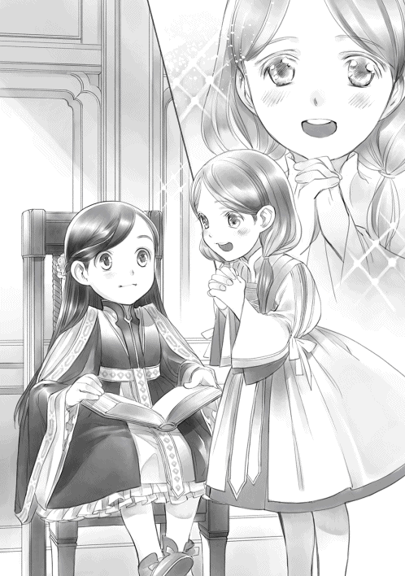
本作りに興味がある子は大歓迎だ。わたしが笑顔で歓迎すると、フィリーネは恥ずかしそうに両方の頬に手を当てて俯く。
「わたくしのお母様がお話ししてくださったことを絵本に残したいのです」
フィリーネの母が亡くなって、新しい母親が来たけれど、新しい母親は同じお話を知らないらしい。実の母親がしてくれたお話を忘れないようにしたいのだと言うフィリーネの言葉を聞いて、わたしは自分が一所懸命に書き留めてきた母さんの話を思い出す。貴族にはわからない話だから、と脇に置いていたが、物語としてまとめてトゥーリとカミルに贈りたくなった。
「では、お話をしてくださる？ フィリーネはまだ文字が書けないでしょう？ わたくしがフィリーネのお母様のお話を書き留めて差し上げます」
フィリーネの母親のお話を語らせ、わたしはそれをせっせと書き留める。母親のお話を書写するのがフィリーネの冬の課題となった。
お茶会
子供教室の時間割に子供達が馴染んできた頃、大人達の情報収集も一段落したようで、今度は交友関係を広げるための社交へと移っていく。今年は特にジルヴェスターの母親が幽閉 されて退いたことで領内の勢力図が大きく変わった。そのため、誰も彼もが新しい繋がりを求めたり、派閥 を強化したり、保身のために奔走しているそうだ。
「本日の面会依頼はこちらになっております」
リヒャルダが持ってきてくれる面会依頼の手紙に目を通すことが、ここ数日でわたしの日課に加わった。依頼の手紙には一通り目を通すが、わたしやヴィルフリートと面会できるのは、領主夫妻と筆頭側仕えが許可した者だけだ。
それでも手紙を見せられるのは、手紙を見ながら、誰が誰と繋がりがあるのか、どの派閥に注意が必要なのか、リヒャルダがわたしに教えるためである。今のところ、わたしが一番注意しなければならない相手は、生母ということになっているローゼマリーの親族だそうだ。「ローゼマインは自分の姪だ」と冬の社交で皆に言って回っているらしい。面会依頼を断られ続けているので、周囲の目は懐疑的 らしいが、どのような接触手段を取ってくるのかわからないと言われている。
「姫様が面会したいと思う者はいらっしゃいますか？」
「お母様からのお茶会のお誘いはお受けしてほしいのです。わたくし、フェシュピール演奏会の会計報告をすると、お約束をしていますから」
エルヴィーラの派閥のお茶会ならば、養母であるフロレンツィアもいるので許可は簡単に下りるはずだ。実母との交流にはリヒャルダも否は唱えない。
「かしこまりました。ジルヴェスター様に報告しておきましょう。他に、本日の面会依頼でお会いしてみたい方はいらっしゃいましたか？」
「......そうですね。ヘンリックにはお会いしたいと思っています」
わたしは少し気になる面会依頼の手紙を取り上げる。
「ダームエルのお兄様でしょう？ 用件もわたくしへのお詫びとお礼ですし......」
去年のトロンベ退治での口添 えからダームエルを護衛騎士に取り立てたことまで、文面でお詫びとお礼が綴 られているが、できれば直接会ってお礼を述べたいという内容だった。
「後は、そうですね。ブリギッテのお兄様にもお会いしてみたいです。イルクナーは林業が盛んなところなのですって。製紙業に役立つお話ができるかもしれません」
エーレンフェスト周辺とイルクナーでは木の種類にも多少の違いがあるかもしれない。新しい紙の素材があれば良いと思う。わたしがうきうきしながら語ると、リヒャルダはいくつかの手紙の中から一通の手紙を取り出した。
「姫様。それでは、アンゲリカの親族とも面会が必要になりますよ。このままでは護衛騎士の親族でアンゲリカの親族のみ、姫様との面会がなかったという事態になりますから」
エルヴィーラもヘンリックもブリギッテの兄も、それぞれに面会する理由があるのだが、傍 から見れば護衛騎士の親族ばかりだ。アンゲリカ一人だけ面会がなければ、不興 を買ったのか、信頼を得られていないのでは、という評価に繋がる可能性があるとリヒャルダが指摘した。
「......では、アンゲリカの親族とも面会しましょうか。ただ、わたくし、アンゲリカに関しては他の方より知っていることが少ないので、後に回すということになりそうですけれど」
少し情報を得てからでなければ会話もできない。わたしの言葉にリヒャルダは「かしこまりました」と頷いた。
「ねぇ、リヒャルダ。護衛騎士だけはなく、側仕えの親族との面会も必要ではないかしら？」
「わたくしの親族で嬉々として名乗りを上げるのがユストクスでしょうから、必要ございません。本当にどうでも良いことばかりを集めたがる変わり者ですからね」
情報と素材の収集に情熱を燃やすユストクスは、母親であるリヒャルダから見ると問題児らしい。他の側仕えの親族とは特に面会する必要も理由もない、というのが、リヒャルダの判断だったため、護衛騎士の親族との面会だけを行うことになった。
当然のことながら、最初に許可が下りたのは、エルヴィーラのお茶会だ。ただ、許可が下りるのは早かったけれど、エルヴィーラのお茶会は派閥全員を集める最大規模のお茶会に招待されているので日付はかなり先だ。
数日後、護衛騎士の親族との面会は全て許可が下りた。日程の調整をしつつ、最初に面会ができたのはダームエルの兄であるヘンリックだった。わたしはリヒャルダと護衛騎士のダームエルとブリギッテを連れてレッサーバスで本館へ向かう。
面会が決まった日から、ダームエルが「ローゼマイン様と兄上の面会に私が同席させられるのは、精神的に辛いものがあるのですが」と三者面談を前にした学生のようなことを言っていたが、ダームエルを護衛から外すことはできない。コルネリウスとアンゲリカの二人が貴族院に行っている今、わたしの護衛騎士はダームエルとブリギッテしかいないのだ。
「お待たせいたしました」
わたしが部屋に入ると、ヘンリックは跪いて待っていた。
「ダームエルの兄でヘンリックと申します。ローゼマイン様、命の神エーヴィリーベの厳しき選別を受けし類稀なる出会いに、祝福を祈ることをお許しください」
「許します」
挨拶を終えたヘンリックが顔を上げる。文官だと聞いていた通り、誠実でおっとりとした雰囲気の優男 だった。髪や目の色合いがダームエルより少し濃いだけで、顔立ちもよく似ている。
これから先の誼 を結ぶことを目的とした面会になるのではないか、と思っていたけれど、そんなこともなく、ただひたすらにヘンリックは去年のトロンベ討伐でのダームエルの失態 を詫び、処分に関しての口添えに感謝していた。身分を考えればダームエルがシキコーザと同じ処分を受ける確率の方が高かったようで、そうなった場合は下級貴族であるヘンリックにも累 が及ぶのは確実だったそうだ。
「ローゼマイン様に多大なご迷惑をかけたにもかかわらず、愚弟 を護衛騎士に取り立てていただいたこと、深く感謝しております」
一度処分を受けたというレッテルを剥 がすことはできないけれど、被害者であるわたしが取り立てることで、シキコーザに巻き込まれたという印象を強くすることができる。何より領主一族の護衛騎士に取り立てられるのは、下級貴族出身のダームエルでは考えられない程の出世なのだそうだ。
兄としてどれだけ感謝しているかを伝えたかった、と安堵したようにヘンリックが言った。今後とも弟をよろしく、というようなことを言われてヘンリックとの面会はあっさり終わった。
「弟思いのお兄様ですわね」
わたしがそう声をかけると、ダームエルは家族の話題を学校で出された男子のような恥ずかしそうな顔でそっぽ向いた。
ヘンリックとの面会が終わった二日後には、ブリギッテの兄であるイルクナー子爵との面会だ。部屋に入って長い挨拶を終えると、わたしは早速本題に入る。
「わたくし、ギーベ・イルクナーには木々のことを伺いたいと思っておりましたの」
イルクナー子爵は赤毛に緑の瞳で、顔立ちはブリギッテと似ている。二十代前半に見える。ブリギッテをもう少し凛々 しくした感じだ。土地持ちの貴族として生きているのだから貴族らしい面も持っているのだろうが、田舎にいる素朴な雰囲気も持っているように見えた。
「林業が盛んだとブリギッテから伺いましたけれど、イルクナーではどのような木を栽培 していらっしゃるの？ この辺りとは木の種類が違うのかしら？」
「ローゼマイン様は木に興味がおありですか？」
軽く目を瞬いた後、イルクナー子爵は少しばかり嬉しそうに表情を綻 ばせる。ブリギッテが故郷のことを話してくれた時に見せていた、自分の治める土地を誇りに思っている顔だ。
「えぇ、わたくしが始めた事業では木から紙を作りますの。より良い紙を作るためにも色々な木で試してみたいと常々考えております。珍しい魔木があれば、ぜひ試してみたいです」
「ほぉ、木から紙を作られるのですか？ それは......実に興味深いですね。確かに貴族街周辺の木々とは少し種類も違います。役に立つかどうか存じませんが、特殊な魔木もございます」
そう言っていくつか木の名前を挙げてくれたが、わたしが聞いたことのある名前は少なかった。知っていたのは家具や建材として使われる丈夫で硬い木ばかりだ。どうやらイルクナー辺りの林業が盛んな土地で切られ、川を使ってエーレンフェストへ運ばれてくるらしい。
「わたくしの知らない木ばかりです。こちらとは木の種類が違うのでしょうね。一度イルクナーへ伺って色々な木々をこの目で拝見したいです」
「姫様、思いつきを軽々しく口にしてはなりません」
リヒャルダが厳しい顔でわたしの言葉を遮った。この面会は公の場になる。ここでわたしが口にしたことは決定事項と取られても文句を言えないそうだ。
「......えぇ、リヒャルダの言うように気を付けますけれど、今回は軽々しくではないのですよ。すぐに、というわけにはいかないのですけれど、木々を確認するために林業の盛んな土地へ一度は足を運ぶつもりでしたから」
「その折にはぜひイルクナーへおいでください。心より歓迎いたします」
しばらくは忙しいので数年後になるかもしれないけれど、紙の改良のためにいつかはイルクナーを訪れることを約束して面会は終了する。
「本日はローゼマイン様の貴重なお時間をいただけたこと、感謝の念に堪えません」
「わたくしもギーベ・イルクナーとお話できて、本当に楽し......」
「おぉ、ローゼマイン様ではありませんか！」
面談を終えて部屋から出ると、廊下に見知らぬ貴族がいた。たまたま通りがかったようだが、わたし達の姿を見ると同時に近寄ってくる。
「お体が弱いと伺いましたが、すっかりお元気になられたようですな。でしたら、そのような田舎貴族とお付き合いするよりも先に交友を持つべき貴族がございます」
どこの誰だか知らないが、イルクナー子爵よりは上の立場の貴族のようだ。話の邪魔にならぬように、とイルクナー子爵が数歩下がったのを見て、わたしはそう判断する。
「あぁ、遠目で拝見した時から思っておりましたが、ローゼマイン様は私の妹であるローゼマリーに大変よく似ていらっしゃる」
......あぁ、設定上の生母様の面倒な親族か。
挨拶も名乗りもしなかった貴族からわたしは視線を逸らして、困ったわというように頬に手を当ててリヒャルダに視線を向けた。リヒャルダが一歩前に出る。
「下がりなさい、無礼者」
「リヒャルダ様。無礼と申されましたが、私はローゼマイン様の伯父です。ローゼマイン様、何か一言いただけませんか？」
野心と期待に満ちたギラギラした目で見られても困る。一言と言われても、わたしの頭に思い浮かぶのは「邪魔」以外にない。それに、紹介もされていない見知らぬ貴族と直接口を利くな、とフェルディナンドにきつく言われているのだ。
「ギーベ・イルクナー、本日は楽しい時間をありがとうございました。またお会いできる日を心待ちにしておりますね」
見知らぬ貴族を無視して、所在 なげに控えているイルクナー子爵に声をかけると、わたしは踵 を返した。身分の高い者が去らなければイルクナー子爵もこの場から動くことができない。別れの挨拶が有耶無耶 になっていたけれど、これでイルクナー子爵もこの場から退くことができるはずだ。
「ローゼマイン様！」
去っていくイルクナー子爵とレッサーバスを取り出して乗り込んだわたしを見比べて焦 ったような声を出しているが、関わり合いになってはいけない。ローゼマリーの親族は前神殿長のような面倒を引き起こすタイプだと保護者達から言われている。「生母様のことは聞いたことがないのでわかりません。わたくしのお母様はエルヴィーラ様です」という態度でいれば良いらしい。今回は紹介も挨拶もないので、それ以前の問題だけれど。
「......リヒャルダ、わたくし、知らない貴族と直接口を利いてはならないのですよね？」
「えぇ、姫様。よく覚えていらっしゃいましたね」
リヒャルダが無言の笑顔で貴族を撃退し、わたしは部屋に戻る。保護者三人組にも報告しておいた方が良いということで、オティーリエに報告してもらうことにした。
結果としては、三者三様に「関わらなければ良い」という言葉が返ってきた。洗礼式でもお披露目でも実の母親の名前を公表していないので、肯定も否定もせず関係を持たないようにだけ気を付ければよいそうだ。本当にそんな処置で大丈夫だろうか、と思ったけれど、面会依頼の手紙が毎日届くだけで、それ以上の接触はないので面倒な親族は放置することに決定した。
アンゲリカの親族と面会する日になった。面会する部屋へわたしが入室すると、アンゲリカの両親と思われる男女が跪いて待っている。そこまでは普通だった。わたしが席に着くと同時に、アンゲリカの両親が口を開いた。
「この度は、大変申し訳ございませんでした！」
「......え？」
挨拶よりも先に平身低頭して謝罪され、わたしは目を瞬いた。意味がわからない。わたしが呆然としていると、リヒャルダがずいっと進み出て、いきなり謝罪を始めた理由を聞いてくれる。
「突然どうしたのです？」
「......あの、アンゲリカが取り返しのつかない失敗をしたのではないのですか？ それ以外に私達がローゼマイン様に呼び出される理由など思いつきませんが......」
なんと、こちらにとっては護衛騎士で一人だけ親族に挨拶しないのもよくないので、ひとまず顔を合わせておこう、という程度のただの挨拶のつもりだったのだが、アンゲリカの両親にとっては、娘が失敗した上での呼び出しで、一族を巻き込んだ処分が下ると思っていたらしい。
「アンゲリカが貴族院への入学を前に、騎士になると言った時にも驚きましたが、領主の養女の護衛騎士として抜擢された時には、目の前が暗くなりました。あの娘に高貴な姫の護衛などできるはずがございません。必ずや不興を買うに違いない、と思っておりました。今回の呼び出しを受けて、やはり、と思ったのでございます」
アンゲリカは側仕えを多く輩出する家系に生まれたにもかかわらず勉強嫌いで、言われたことは仕方なくやるけれど、自分から動かなくて気が利かないという側仕えには全く適さない子供だったようだ。わたしの護衛騎士となってからは、いつ何をやらかすかと気が休まらない毎日を両親は過ごしていたらしい。
「お勉強が好きではない、とアンゲリカ本人からも伺いましたが、命令違反をするわけではございませんし、良き主従となりたいと言われております」
考えるのは任せた、と言われたようなものだが、気を回しすぎてぐったりしている両親にありのままを伝える必要はないだろう。お仕事を頑張っていますよと伝えて、面会は早目に終了した。
アンゲリカの両親との面会から更に数日が経ち、エルヴィーラの派閥が集まるお茶会に出席し、フェシュピール演奏会の会計報告をする日がやってきた。女性のお茶会は男子禁制だ。今日は護衛騎士のダームエルに休みを与え、ブリギッテが付いている。側仕えはリヒャルダとオティーリエの二人だ。オティーリエは会計報告のプリントが入った木箱を抱えている。
「皆様、ごきげんよう」
わたしはこの日のために会計報告のプリントを印刷した。フェルディナンドに何度も却下されながら作り上げた会計報告だ。これをお茶会に来ているメンバーにリヒャルダとオティーリエに配布してもらう。会計報告を印刷するには少しお金がかかったけれど、エルヴィーラの派閥に配る分だけだし、普段の半分以下の大きさの紙なのでそれほどの金額ではない。以後も寄付や印刷物の販売にご協力いただきたいのでちょっとした投資である。
「では、皆様に会計報告をさせていただきます。お配りした紙をご覧くださいませ。フェルディナンド様のフェシュピール演奏会で集まった寄付金の金額、及び、その用途が記されております。皆様のご協力のお蔭で、孤児院の子供達が仕事をするための環境が整い、冬を越すための準備を整えることができました」
報告にはあまり興味がないようだった。売り上げに驚かれはしたけれど、集めた寄付金の使い道を丁寧に報告することは少ないようで、「あら、ずいぶんと細かいのですね」というような反応だった。今日のお茶会に出席している貴婦人方は会計報告ではなく、皆が集まるのでイラストの再販があるのではないかという期待の方が大きかったようだ。配られた会計報告に数字と文字がずらずらと並んでいるのを見て、あからさまにガッカリした顔の貴婦人もいた。エルヴィーラもガッカリ顔だ。会計報告が終わって雑談が始まると、ヴィルマの美麗 イラストが欲しいと口々に訴え始める。
「ローゼマイン様、演奏会で売られていたフェルディナンド様の姿絵は本当に素敵でしたわ。わたくし、あれから毎日のように見ておりますもの」
「わたくし、今度こそ買おうと思っておりますの。いつ販売されますか？」
「もう一度演奏会を開く計画はございませんの？」
......皆、目がギラギラしてるよ。そんなに神官長のイラストが欲しいのか。
これだけの熱があればすごい儲けになりそうだ。わたしもできることならば、この大儲けの機会があと何度かあればいいなぁ、と思っている。けれど、どう考えても二度目はないだろう。
「残念ながら、姿絵がアウブ・エーレンフェストの手に渡り、それがフェルディナンド様に見つかってしまって、二度と姿絵を売ってはならない、と約束させられたのです」
イラストが再販されることはないという事実に貴婦人方が息を呑み、悲嘆 にくれる。特に悲しんでいたのはお金が少し足りなくて、泣く泣くイラスト購入を諦めた令嬢だ。
「わたくし、本当はこの会計報告にも絵を小さく入れようと思っていたのですけれど、それも反対されて、考えて、考えて、仕上がったのが、この会計報告書なのです」
「......ローゼマイン、何を仕込みましたの？」
フロレンツィアが笑いを含んだ声でそう言いながら、ちらりとわたしを見る。期待に満ちた目でエルヴィーラもわたしに向かって身を乗り出した。
「ローゼマイン様ならば、何かしてくださると思っておりましたわ」
皆が一斉にわたしに注目した。わたしはコホンと咳払いして、会計報告の紙を手にする。
「報告だけで用件が済んでしまっては、紙がもったいないと思いまして......。紙もインクも決して安い物ではございませんから」
フフッと笑いながら、わたしはパラリと紙を裏返した。そこには一見、インクの汚れのようにたくさんの線が付いている。フェルディナンドには表しか見せていないし、裏を見られてもわからないように、余計な線もたくさん付いていて、これだけではただの汚れだ。
「リヒャルダ、ナイフを」
わたしはリヒャルダからペーパーナイフを受け取ると、線を見て半分に切っていく。そして、注目を集める中で、手裏剣 の折り紙を作った。綺麗に折ることができれば、両面に表情違いのフェルディナンドの絵が完成するようになっているのだ。
「んまぁ！」
わたしが作った手裏剣を見て、エルヴィーラが華やいだ声を上げた。裏表をくるくると見返しながら、ほぅ、と溜息を吐いた。
「どのようにすればよろしいの!? 」
「教えてくださいませ！」
突如としてお茶会は折り紙教室になった。わたしは折り方を教えながら、皆をぐるりと見回す。
「これは、このお茶会に出席した方だけの物ですから、秘密でお願いいたしますね。また知られたら、今度はもう本当に、印刷自体をお許しくださらないでしょうから」
「えぇ、決して秘密を漏らしはいたしませんわ。これが漏れたら、この集まりにいらっしゃった方だとわかっておりますから、犯人の特定も容易ですものね」
この手裏剣がフェルディナンドに渡った時の犯人の処遇 の方が心配になるくらいに見事な結束力を見せ、お茶会は終わった。
奉納式
「ヴィルフリート兄様、わたくし、三日後から奉納式のため、しばらく留守に致します。戻ってきた時にはカルタでわたくしに勝てるように、練習しておいてくださいませ」
子供教室でのカルタ勝負をわたしの勝利で終えた後でそう声をかければ、悔しがって地団駄 を踏んでいたヴィルフリートがバッとこちらを振り返った。
「ぬ？ しばらく留守だと？......皆、勝機 がやってきた。今度こそローゼマインに勝つぞ！」
負けた悔しさよりも次の勝利に意識が向いたヴィルフリートの声に、数人の男の子達がつられたように意欲を燃やし、「はいっ！ 絶対に勝ちましょう！」と拳を握って返事をする。
「よぉし、作戦会議だ！ ローゼマインはあっちへ行け。聞いてはならぬ」
子供教室で競争相手ができたヴィルフリートは、生来の負けず嫌いな性格が良い方に作用して順調に成長している。この冬の目標を「わたしにカルタで勝つ」と決めた時から仲間を集めて、何やら作戦会議らしきものを繰り広げているのも、無邪気な小学生男子という感じで微笑ましい。
「ローゼマイン様はどのくらい神殿へいらっしゃるのですか？」
フィリーネの若葉のような黄緑の瞳が不安そうにわたしを見てくるが、明確な答えは返せない。前神殿長が抜けた分がどの程度影響するのか、ジルヴェスターが勝手に引き受けてしまった小聖杯 をどうするのか、今年の奉納式には不安要素がいくつもあるのだ。
「小聖杯を全て満たすのにどのくらいかかるかわかりませんから、はっきりとは申し上げられません。フィリーネは時間があれば、こちらのお話も書き写しておくと良いですよ」
わたしはフィリーネの母親が語ったお話の二作目を手渡しておく。わたしが書いた分はいずれ本にするための原稿として置いておくが、フィリーネ自身が書き写した分は最終的に糸で綴 じて、冊子にしてあげるつもりだ。
「恐れ入ります、ローゼマイン様」
顔を輝かせてフィリーネが原稿を受け取った。ふふっと笑い合っていると、横から数人の女の子が駆け寄ってくる。
「ローゼマイン様、ローゼマイン様。わたくしもお母様からお話を伺ってきたのですよ」
「神様の絵本も素敵ですけれど、わたくし、吟遊 詩人が語る騎士物語も絵本で読んでみたいです」
可愛い女の子達に取り囲まれ、彼女達が語るお話の内容を順番に書き留めながら、次に作る本の構想を練っているうちに三日が過ぎた。
「リヒャルダ、少し動きにくいです」
神殿に戻る当日の天気は猛吹雪でかなり視界が悪くなっている。雪が深すぎて馬車ではとても行き来できないので、今日は騎獣で移動することになった。わたしの体調を心配したリヒャルダが、防寒のために次々と服を重ねてくるのだが、それが窮屈 で動きにくい。
「何をおっしゃるのですか、姫様？ このような吹雪の中を騎獣で行こうとするならば、姫様の虚弱さではまだまだ足りないくらいですよ」
「わたくしの騎獣は壁も屋根もありますから、雪も風も遮断されるので特に寒くないのですよ」
どれだけリヒャルダが気を付けていても冬の生活の間に二回熱を出して寝込んだせいで、リヒャルダは過敏 になっている。冬の間に平均五回くらいは寝込むから気にしなくても大丈夫と言ったのだけれど、五回も寝込むことが問題だと逆にリヒャルダが闘志を燃やす結果になったのだ。
リヒャルダに言い包 められて着ぶくれした状態で玄関へ向かうと、ホールで騎獣を出すようにノルベルトに言われた。レッサーバスを出し、エラやロジーナ、護衛のブリギッテに乗ってもらう。
騎獣の準備ができるのを待っているフェルディナンドとダームエルは、トロンベ討伐の時と同じ全身鎧 にマントを付けていた。この吹雪の中、金属の鎧など着ていたら凍傷 になるのではないだろうか。そんなわたしの疑問をフェルディナンドが一笑に付した。
「この鎧は魔術具の一種なので、そのような心配は無用だ」
なんと一見金属にしか見えない鎧が魔術具の一種で、防寒や耐火の機能が付いているらしい。性能は元になる魔石の魔力含有量 や属性数、それから、本人の魔力量によって変動があるそうだ。
......魔力が多くて色々な魔石を持ってる神官長よりダームエルが大変ってことじゃない？
「フェルディナンド様とダームエルもレッサーバスに乗りませんか？」
「いや、周囲の警戒は必要だから、君がそれで動けるならば問題ない。では、行くぞ」
騎士団は吹雪の中に出現する魔獣を退治するために出動することも珍しくはないようで、二人とも特に問題はないらしい。騎士団は予想以上に過酷 なところのようだ。
ノルベルトの合図で扉が開かれ、フェルディナンド達が騎獣に飛び乗って駆け出していく。わたしも二人の後を追って吹雪の中へ飛び出した。
「吹雪の中を移動すると伺った時にはどうなることかと思いましたけれど、これは快適ですね」
ロジーナの言う通り、吹雪に全く当たることなく、事故を起こすことなく、無事に神殿に到着した。ただし、これは吹雪で視界が真っ白の中、先導してくれるフェルディナンドとダームエルがいてくれたおかげだ。二人の青と黄土色にはためくマントがなければ、わたしは神殿にたどり着けなかったと思う。空を駆けると方向感覚が全くなくなってしまうので危険すぎる。雪道を運転するのも怖いが、雪空を運転するのはもっと怖かった。
「おかえりなさいませ、ローゼマイン様」
「ただいま戻りました、フラン、モニカ」
わたし基準で手早くレッサーバスを片付けて、雪に足を取られて転びながら神殿へ飛び込むように駆け込むと同時に、慌てた様子でフランとモニカが出迎えに飛び出してきた。さすがにこの吹雪の中では騎獣を視認 できなかったようだ。
「ローゼマイン、神官服に着替えたら奉納式の打ち合わせのために神殿長室へ行くので、君も着替えて待っていなさい」
「わかりました」
わたしはフランとモニカの二人掛かりで雪を払ってもらっているのに、吹雪の中を騎獣で飛んでいたフェルディナンドもダームエルも雪だるまになっていない。騎士団の鎧はすごかった。
鎧から着替えるということでダームエルが先に護衛部屋で着替え、ブリギッテは全身鎧のままで護衛をしている。フランがダームエルのところにお茶を運びに行った。ブリギッテが着替えに行った時は、ニコラが護衛の部屋へお茶を持って行くことになっている。
わたしも着替えだ。騎獣から神殿までのほんの短い距離で雪にビシビシと当たったので、モニカに顔や髪も拭 ってもらい、リヒャルダから大量に重ね着させられた服を、まるで玉葱 の皮を剥くように一枚一枚脱がせてもらって神殿長の服に着替える。体が軽くなって動きやすくなった。
着替えを終えて、温かいお茶を飲みながら一息吐いていたら、鎧から神官服に着替えたフェルディナンドがやってきた。
「側仕えからの報告によると、カンフェルとフリタークは滞 りなく奉納式の準備を終えているそうだ。当初の予定通り、明日の土の日から奉納式を始める。今日はゆっくりと体を休めておくように」
「わかりました。......そういえば、前神殿長が抜けた分がどの程度影響するのか、養父様が引き受けてしまった小聖杯をどうするのかは決まったのですか？」
ただでさえ青色神官が少なくて魔力も足りない状態だ。そこにジルヴェスターが小聖杯を引き受けてきたのだが一体どうなるのか。今後のことを考えて「自分の後始末は自分で」と言ったけれど、冬の社交で忙しい領主が神殿まで魔力の奉納に来られるわけがないのは、わかりきっている。フェルディナンドが「当てはある」と言っていたけれど、何とかなったのだろうか。
「きちんと領主夫妻に責任を果たしてもらった。問題ない」
フェルディナンドはそう言いながら、腰に下げている袋の中から魔石を二つ取り出した。魔力を吸収するために使われる魔石にたっぷりと魔力が注がれているのが見えた。これだけの魔力を溜めようと思えば、かなり多くの魔力が必要なはずだ。
「......まさか領主夫妻に魔力を注いでいただいたのですか!? 」
「まさか。領地の維持に必要な魔力を注いでいる二人にそのようなことをさせるわけがなかろう」
「神官長ならやりかねないと思っただけです。自分の後始末くらいは自分でしろ、と言って、魔力をたっぷり奪ってきたのかなって......」
最悪の予想が外れてホッとしていると、フェルディナンドはゆっくりと手のひらの上で魔石を転がしながらニィッと唇の端を吊り上げる。
「今年はあの前神殿長よりよほど魔力の豊富な罪人がいるではないか。単純に神殿で扱える魔力量だけを考えれば去年より豊富だ。彼等は処分せずに長く生かしておくのが領地のためだ」
その邪悪な微笑みから察するに、「自分達が出せないならば罪人から搾 り取れ」とでも領主夫妻に交渉して幽閉中のジルヴェスターの母親やビンデバルト伯爵から魔力を奪わせたのだろう。利用できるものは徹底的に利用するフェルディナンドの姿勢は実に頼もしい。味方の時は。
「青色神官に魔石の扱いを教えて奉納式を行う。魔力量は豊富なので去年より早く終わるはずだ」
魔力が少ないため、強大な魔力の扱いに慣れていない青色神官に魔石の扱い方を教えるのが大変だろうが、後は楽だ、とフェルディナンドは言い切った。
「私は今日これからカンフェルとフリタークに魔力の扱いを教えに行くが、君はおとなしくしておくように。今日は孤児院へ行くのも禁止だ。体調を崩さないように気を付けなさい」
本当ならば、わたしは神殿長なので奉納式の最初から最後まで儀式の間にいる必要があるけれど、体調と魔力の奉納を最優先させることに決定している。今年の奉納式の全工程を見守るのは神官長であるフェルディナンドだ。
「奉納式の途中で冬の素材のための呼び出しもあるはずだ。体調だけは万全に整えておくように」
奉納式の日は朝から湯浴みをさせられ、儀式用の衣装を着せられる。去年とは違って、神殿長としての儀式用の衣装に金色のタスキのような物をかけて銀色の帯を締める。それ以外に身に付ける小物は全て赤だ。簪はお披露目で使った物と同じである。ロジーナの指示を受けつつ、着付けてくれるモニカとニコラも少しずつ慣れてきているようだ。着付けにかかる時間がかなり早くなった。
「できました。どうですか、ロジーナ？」
「えぇ、よくできているわ」
ロジーナの合格点が出たので、後は儀式の準備が整うのを待つだけだ。フランとモニカから不在の間に起こったことの報告を聞きながら待っていると、ザームがやってきた。
「ローゼマイン様、準備が整ったようです」
フランとザームに先導され、わたしは儀式の間に移動する。神殿長室が儀式の間に最も近いので、今年は移動が楽である。長い裾を踏まないように気を付けて歩いていると、儀式の間の前で待ち構えている灰色神官達がわたし達の歩みに合わせて扉を開けてくれた。
扉の向こうには、去年と同じように祭壇が設 えられ、神具が飾られ、小聖杯がずらりと並んでいた。両側の壁際には篝火 のように火が焚 かれていて、それが部屋を暖めている。
「お待たせいたしました」
去年と違って、儀式の間にいたのはフェルディナンドだけではなかった。カンフェルとフリタークも一緒だ。それぞれが魔力の詰まった魔石を持って、緊張した面持ちで待っている。
「......では、始めよう」
フェルディナンドがわたしに前へ出るように促し、自身は祭壇に向かって跪いて両手を赤い布に当てた。カンフェルとフリタークもフェルディナンドに続いて跪く。魔石が赤い布に触れるように置いて、その上にそっと両手を乗せている。わたしはフェルディナンドの横を通り、数歩前に出たところで同じように跪いた。一度祭壇を見上げた後、赤い布に手を付いて顔を伏せる。
去年はフェルディナンドに続いて復唱すればよかった祈りの言葉だが、今年はわたしの祝詞を皆が復唱するのだ。軽く息を吸って、わたしは口を開いた。
「我は世界を創り給いし神々に祈りと感謝を捧げる者なり」
わたしが祈りの言葉を口にすると、後ろの三人が復唱し、低い声が儀式の間に朗々 と響いていく。
「高く亭亭 たる大空を司 る、最高神は闇と光の夫婦神 広く浩浩 たる大地を司る、五柱の大神 水の女神フリュートレーネ、火の神ライデンシャフト、風の女神シュツェーリア、土の女神ゲドゥルリーヒ、命の神エーヴィリーベ。息づく全ての生命に恩恵 を与えし神々に敬意を表し、その尊い神力の恩恵に報 い奉 らんことを」
祈りの言葉を口にするうちに、するりと自分の中から魔力が流れ出す。魔力を吸った赤い布がキラキラと光り、魔力が光の波となって祭壇へ流れ始めた。光の波はわたしの後ろからも次々と流れてきて、その勢いに乗るように、更にわたしの魔力が引き出されていく。
「そろそろ止めよ」
フェルディナンドの声に顔を上げ、わたしは赤い布から手を離した。流れていく光の波を見つめ、満たされた小聖杯の数を数えていく。去年はフェルディナンドと二人で一度に七、八個の小聖杯を満たしたけれど、今回は一度で四十個ほどの小聖杯を満たせたようだ。
「この分ならば、明日には終わりそうですね」
「いや、魔石の魔力がほとんどなくなっている。奉納式を終えるには三日ほどかかるであろう」
フェルディナンドはカンフェルとフリタークの二人から回収した魔石を見てそう言った。確かに魔石の色がほとんど黒になっていて、魔力は残り少なくなっている。
「カンフェル、フリターク、ご苦労だった。部屋に戻って休みなさい」
「二人のおかげで助かりました。ゆっくりと休んでください」
自分では扱ったことがない大きな魔力を扱い、ぐったりと疲れている二人に声をかけて、退室を許可する。二人は口々に「恐れ入ります」「失礼いたします」と暇 を告げて退室していく。
「カンフェルとフリターク以外の青色神官を全員呼んできなさい。後は一度に終わらせる」
フェルディナンドが扉の外に控えていた灰色神官に向かって声をかけると、「かしこまりました」という返事と共にほとんど足音も立てずに灰色神官達が下がっていった。
「あと三日で終わるならば、去年に比べるとずいぶんと楽ですね」
去年はフェルディナンドと二人でほとんどの小聖杯を満たした上に、領主と神殿長に渡された余所の小聖杯まで満たさなければならなかった。あの状態で貴族の社交も行わなければならないと覚悟していたので、予想外に楽になったことに自然と笑みが浮かぶ。
「去年と違って十日以上かかることはない。冬の素材を採集する予定までには間違いなく奉納式を終えられるであろう。君が休息して、体力も魔力も回復する余裕がありそうで一安心だ」
リュエルの実に魔力を込めていくのは大変だったし、自分の魔力で染めようと思うと多くの魔力が必要になる。奉納式で魔力を使うと、あのとんでもなく苦い薬で無理やり魔力を回復させなければならなかったので、余裕があるのは素直に嬉しい。
......あの小聖杯がなかったら、もっと早く終わるんだけど。
そう思いながら、わたしはジルヴェスターが勝手に増やした小聖杯に視線を向けた。
「神官長、養父様が引き受けてきた小聖杯は一体どちらの物なのですか？」
「エーレンフェストの西、フレーベルタークの小聖杯だ」
フェルディナンドの言葉に、わたしはエーレンフェスト周辺の地図を思い浮かべた。西側の領主とエーレンフェストの領主は仲が良いと聞いたことがある。
「西の領主は仲良しなんですよね？」
「関係は良好だ。だが、フレーベルタークからの頼み事には領主夫妻が揃って弱いのが困る」
今までは自分が交渉の場に出て、こちらに有利な条件を付けたり、時と場合によっては却下したりしてきたが、これから先自分が交渉の場に赴かなければ、領主夫妻では良いようにあしらわれるだろう、とフェルディナンドは言った。
「養父様はともかく、養母様もですか？」
「フレーベルタークの領主夫妻はエーレンフェスト夫妻の兄と姉なのだ。弟妹はどうしても強く出られると弱いのであろう」
ジルヴェスターの二番目の姉がフレーベルタークへ嫁ぎ、フレーベルタークの領主の妹であるフロレンツィアがエーレンフェストへ嫁いできたらしい。フレーベルタークはエーレンフェストと違って、何年か前に中央で起こった政変にガッツリと巻き込まれた土地で、先代のアウブはそれが元で処刑され、後を継いだフロレンツィアの兄は領地の立て直しに必死なのだ、とフェルディナンドは言った。エーレンフェストよりも色々な意味で大変なのだそうだ。
「どちらも兄弟仲が良かった分、助力してやりたい気持ちがあるのだろうが、皺寄せがこちらへ来るので困っていたのだ。君のおかげで助かったぞ、ローゼマイン」
「神官長、そう言って、またわたくしを養父様との交渉の矢面に立たせるおつもりですね？」
ふんぬぅ、と睨み上げると、フェルディナンドは涼しい顔で軽く眉を上げた。
「君が神殿長で、私はしがない神官長だからな」
「神官長は、しがないの意味を調べてきた方がよろしいですよ。記憶違いだなんて珍しいこと」
ふふふふ、ほほほほ、と笑い合っているところに青色神官達がやってきた。揃って怯 んだ顔になって、入り口で足を止める彼等を見たフェルディナンドがわたしに退室を促す。
「神殿長は先に下がって休みなさい」
「では、お先に失礼します。後のことはどうぞよしなにお願いいたします」
フェルディナンドに後を任せたわたしは、青色神官に愛想 笑いを向けて自室に戻り、モニカを呼んで儀式用の服から普段使いの服に着替えた。
「フラン、奉納式が予想以上に早く終わりそうですから、城に戻る日も早まりそうです」
「いつになるかわかりますか？」
「あと三日は奉納式にかかる、と神官長はおっしゃいましたけれど、それ以上は......。あぁ、次の土の日にはわたくしも同行しなければならない素材回収があると伺いました」
わたしが予定を伝えると、フランは書字板に書き込んで少し考えるように顎に手を当てる。
「奉納式の途中で抜けて素材回収をし、戻ってきたらまだ奉納式に参加するという当初の予定よりは、ずいぶんとローゼマイン様の体調に負担が少なそうです。神官長が薬をたくさん準備していらっしゃいましたが、使う必要がなくなりそうですね」
激マズ回復薬が入った箱を見ながらそう言ったフランに、わたしは大きく頷いた。
「それに関しては、わたくしも嬉しく思っています」
「では、ローゼマイン様。神殿にいらっしゃる間にこちらの書類に目を通していただけますか？」
フランが持ってきたのは、城で滞在している間に溜まっていた手紙や書類だ。文字に目を通していくだけの簡単な仕事なので、わたしは嬉々として書類仕事を始めた。大半は「収穫祭に来てくれてありがとう。祈念式もよろしく」という儀礼的な書簡だったが、ちらほらと前神殿長への個人的な手紙が混じっている。
「......これは、あの人かしら？」
前神殿長への秘密の恋文があった。筆跡鑑定に自信はないが、筆跡が似ていると思える。「どうしてもお願いしたいことがございます。頼れるのは貴方だけ」という意味のことが書かれている。
......お願いしたいことがある、と言われてもねぇ。
すでに亡くなってしまっている前神殿長と会えるわけがない。しかも、会いたいと手紙で指定されている日付はとっくに過ぎている。差出人も宛先も書かれていない手紙を前に、わたしは腕を組んで、むーと唸った。さて、一体どうすればよいだろうか。
「とりあえず、前神殿長は亡くなりましたって返信を書いて、差出人や送付方法に関しては神官長に相談するしかないよね」
返信用の紙が同封されていたので、その紙にわたしはいつも通りに返事を書いた。前神殿長宛ての返事に書く文言は同じだ。たらたらと長ったらしい挨拶文の後、「神殿長ははるか高みへと続く階段を上がって行かれました」と書いて、締めの挨拶を書く。ハッセの町長と違って、秘密の彼女さんはお貴族様のようなので問題なく意味は通じるはずだ。
「うん。これでいいでしょう」
ひとまず、ペンを置いてインクが乾くのを待つ。すると、封筒に入るように半分に折った瞬間、指輪から魔力が紙へと流れ始めた。
「うひゃっ!? 」
受け取った書面と返信用の書面はわたしの魔力を吸い取ると、オルドナンツのような鳥の姿を取り、ひゅん、と飛び出していった。
「ローゼマイン様、大丈夫ですか？」
「えぇ。大丈夫よ、ブリギッテ。驚いただけです。魔術具だと思わなかったものですから」
あの手紙が魔術具だったとは。返信用の手紙に魔力を込めれば、差出人のところに戻るようになっているならば、差出人の名前も宛先も必要ない。
「神官長が儀式を終えたら、知らせてちょうだい。お話をしておかなければなりませんから」
冬の素材収集
フェルディナンドに報告しなければ、と身構えたわたしは奉納式が終わるのをじっと待っていた。今まで前神殿長個人宛てにきた書簡や手紙の類は、全て今まで便宜 を図ってきたらしい平民からの物で貴族から届いた物はなかったからだ。おそらくこの領地の貴族には、前神殿長と他領の貴族の拘束、及び、領主の母の幽閉がすぐに知らされたためだと思う。ただ、領主の母とその一派が捕えられたことはかなり衝撃的な事案だ。他領に漏れないように、この件に関しては前神殿長の死を含め、箝口令 が敷かれているかもしれない。その可能性に思い当たり、わたしはすぅっと青ざめていく。
......もしかして、大変なことをしでかしてしまったかもしれない。
じりじりとした焦りを抱えながら儀式の終わりを待っていると、白い鳥が入ってきた。オルドナンツに似ているけれど、少し小さめのその鳥は机の上で二通の手紙へと変わり、ひらひらと目の前に落ちてくる。わたしが手に取って見てみると、一通はわたしが書いた返信の手紙でもう一通はそれに対する返信だった。前神殿長の死に対するお悔やみの言葉と「知らせてくださってありがとう」という内容が丁寧に書かれている。「もっと詳しく教えろ」とか「なんでそんなことに！」というような取り乱した文章でなかったことに、安堵の息を吐く。返信用の手紙は入っておらず、返信は不要ということだろうと判断できた。
「ローゼマイン様、奉納式が終わったようです」
廊下を青色神官達がぞろぞろと歩いていく音がして、その後、フェルディナンドと灰色神官が今日の奉納式で魔力が満たされた小聖杯を運び込んできた。フランが小聖杯を置いておくための戸棚を開けて、数人の灰色神官が手分けしながら並べていく。その様子を見ながらわたしはフェルディナンドに手紙の一件を話してしまおうと呼びかけた。
「神官長、あの、前神殿長宛ての手紙が届いておりまして......」
疲れているのだろう。その程度のことをいちいち聞くな、と言わんばかりの投げやりな態度でフェルディナンドは軽く手を振った。
「あぁ、まだ届いているのか。いつも通りに亡くなったことを伝えなさい」
「それは伝えたのです。そうしたら、お悔やみとお礼の手紙が届いて......」
「そうか。ならば、それでよかろう」
本日の奉納式では前神殿長と仲が良かった青色神官達に煩 わされたようで、フェルディナンドの眉間に深い皺が刻まれている。今日はあまり話しかけない方が良さそうだ、と思ったけれど、自分の懸念事項を解消しておきたい。わたしはゆっくりと息を吸い込んでフェルディナンドに声をかけた。
「あの、神官長。一つだけ教えてください」
「何だ？ まだ何かあるのか？」
フェルディナンドにじろりと睨まれて、わたしは一瞬怯 みつつ、コクリと頷く。
「前神殿長が亡くなったことって、他領には漏れないように箝口令が敷かれていますか？」
「いや、特には。領主の母が処分を受けて幽閉されたことについては、他領に付け入る隙を見せることに繋がるので箝口令が敷かれている。だが、前神殿長の生死についてはない。今までも書簡に返答してきたであろう？ 今更何を言っている？」
「いえ、だったら、良いのです。お疲れのところ申し訳ありませんでした」
......セーフ。大失敗したわけではなさそう。
秘密の恋人らしき人に前神殿長の死を伝えたことは特に問題なさそうで、ホッと胸を撫 で下ろす。
......全部追及されることにならなくてよかった。
前神殿長の純愛をフェルディナンドに暴露 してしまうのは、死者に鞭 打つ行為のように思えて胸が痛むのだ。利用できるものは徹底的に利用するフェルディナンドである。文通相手の名前も知らない彼女さんが一体どのような目に遭うのか、考えただけでも恐ろしい。
今までに見たことがなかった魔術具の手紙だったので、動転してしまったけれど、フェルディナンドが言っていた通り、前神殿長への手紙は今までに何通もあった。魔術具だったけれど、彼女さんの手紙もそのうちの一つだ。そう思うと一気に気が軽くなって、わたしは肩の力を抜いた。
フェルディナンドが推測していた通り、三日間で奉納式は終わった。去年と同じように、ひどい吹雪が続く中、預かっている全ての小聖杯に魔力を込め終える。
「ローゼマインは全ての小聖杯を再度確認し、鍵をしっかりとかけておくように。カンフェルとフリタークは灰色神官達が儀式の間の祭壇を片付け、神具を礼拝室へ戻すのを監督しなさい」
「はい」
フェルディナンドに指示されるまま、わたし達は動き始める。魔力を込めた小聖杯を灰色神官達に運ばせて、神殿長室の戸棚に並べてもらった。その後、全ての小聖杯が間違いなく並んでいることを、フランやモニカと一緒に確認してしっかりと鍵をかける。これでよし、と頷いていると、扉の向こうで小さなベルの音が響いた。フェルディナンドの側仕えが使うベルの音だ。
「ローゼマイン様、神官長が入室許可を求めていらっしゃいます。いかがいたしましょうか？」
きちんと施錠 されているかどうかの確認だろう。入室の許可を出すと、長い棒状の物を持ったフェルディナンドが入ってきて、すっとわたしの前にそれを差し出した。
「ローゼマイン、これに魔力を込めなさい。できるだけ早く君の魔力で満たしておくように」
フェルディナンドが差し出したのは、礼拝室に戻されるはずの神具だった。火の神ライデンシャフトの槍を渡されたわたしはポカンとしながらも、慌ててその槍の柄 をつかむ。それと同時に、柄の部分に並んだ小魔石に魔力が流れ込んでいくのがわかった。
「あの、神官長。この神具をわたくしの魔力で満たすのですか？ 一体何のためにでしょう？」
奉納式では、それまで日常生活の間で神具に奉納されていた魔力も小聖杯へと流される。そのため、奉納式が終わったばかりの今は神具に全く魔力が残っていない空っぽの状態だ。この槍を満たすにはかなりの魔力が必要になる。できなくはないが、意味がわからない。
「この槍を君の武器にするためだ。君は武器を持っていないであろう？ 君がその神具を自分の武器として使うためには、君の魔力で満たしておく必要がある」
眉を上げたフェルディナンドが魔力を流さないようにするための革手袋を脱ぎながら、何という事もなさそうに言っているが、そういう問題ではないと思う。祭壇に飾っておくはずの神具を自分の武器として使うなんて、わたしの常識ではあり得ない。
「確かにわたくしは武器なんて持っていないですけれど、これ、神具ですよ!? ライデンシャフトの槍ですよ!? わたくしの武器にしてしまって良い物ではないでしょう!? 」
「他に君の武器にできる魔術具がないのだ。騎士団にある武器を使えるならば、私もそちらを使用させたが、君には常人としての体力や腕力さえないではないか。素材採集のためには已 むを得まい」
秋の素材採集に失敗したので、冬は絶対に成功させたいと思っている。そのために武器が必要で、フェルディナンドが知る限りライデンシャフトの槍しかないならば仕方ないのかもしれない。
「......でも、これ、神具ですよ？ 本当に良いのですか？」
「アウブの許可は取ってあるし、神殿の備品を神殿長が使うことに何の問題がある？ 武器がなければ困るのだから、文句を言わずに魔力を込めなさい」
フェルディナンドの言葉を聞いていると、わたしがつまらない我儘を言っているような気分になってきた。領主であるジルヴェスターから許可が出ているならば良いのだろう。割り切ったつもりで、わたしはライデンシャフトの槍に数時間かけて魔力を流し続ける。それでも、何となく罰当たりなことをしているような気分はどうしても消えない。
......神様、ほんの一時だけお借りいたします。必ず返すので、怒らないでくださいね！
神具の槍に魔力を込め終えると、わたしは孤児院へ向かった。奉納式を終えたらなるべく早く城に戻るという話だったので、孤児院の様子を見ておきたかったのだ。
「ギル、フリッツ。手仕事がどのくらいできているか、報告してちょうだい」
絵本の印刷やカルタやトランプの製造状況をギルとフリッツに確認する。合わせて、二人に城の子供部屋の様子を報告し、ヴィルマには孤児院の様子を報告してもらう。
「貴族の子供達の間でも、カルタとトランプが流行 り始めています。絵本も評判が良いです。ヴィルマの絵は好評でした。貴婦人方の間にも......」
手裏剣イラストをしこんだ共犯者であるヴィルマが「隠し通せると良いですね」と、小さく笑う。
「うふふ、実は次も考えているのです」
「ローゼマイン様、神官長にまた叱られますよ」
わたしが「大丈夫です。対策も練ってあります」と言ってニッと笑うと、ヴィルマは「まぁ！」と声を上げて笑った。わたしを見るヴィルマの目が完全に悪戯っ子を見るものになっている。
わたし達が話をしている向こうでは、女の子達がせっせと編み物をしていた。皆に教えているのはハッセから移動してきたノーラだ。ハッセでは編み物が冬の手仕事だったようで、幼くても編み物に慣れているマルテも隣で編んでいるデリアに教えている。わたしの視線を追ったヴィルマがニコリと笑って目を細めた。
「自分達が温かく過ごすためですから、皆、頑張っています。ノーラも教えられるばかりの立場ではなく、自分に教えられるものができてからはずいぶんと伸び伸びしてまいりました」
新しくハッセで孤児院に入った四人の中で、最初に神殿の生活に馴染んだのは一番幼いマルテで、トールとリックは森への採集や工房での紙作りを通して周囲に馴染んでいったらしい。その中で、最年長であるノーラが環境の変化に一番適応できていなかったそうだ。長年馴染んできた習慣を変えるのは難しい。それに加えて、自分よりも小さい子供達に教えられてばかりの境遇 に段々と自信をなくしてしまっていたそうだ。ここでは大勢の中で共に生活するので、弟達との交流も以前ほどではなく、ふさぎ込んでいる姿が時々見られた、とヴィルマは教えてくれる。
「自分が知っている編み物を皆に教えることで、役に立っている実感が得られて、居場所を確保できたようです。笑顔も増えてまいりました」
「そう。問題なく皆が過ごしているようで安心いたしました。これからもよろしくお願いします」
「かしこまりました、ローゼマイン様」
孤児院の様子も確認したし、言われていた通りライデンシャフトの槍に魔力も込めた。わたしは「いつでも城に移動できます」とフェルディナンドに報告し、明日にでも城へ移動しようかと話をしていた時に、白い鳥が飛び込んできた。オルドナンツは執務机に降り立って羽をたたむ。
「フェルディナンド様、至急お戻りください。冬の主が現れました。今年はシュネティルムです」
焦りを帯びたカルステッドの声で三回同じ言葉を伝えてオルドナンツは魔石に戻った。フェルディナンドはシュタープを出して軽く魔石を叩き、「オルドナンツ」と唱える。
「編制は任せる。準備しておけ。すぐに行く」
フェルディナンドがひゅっとシュタープを振れば、オルドナンツは飛んでいく。スッとシュタープを消したフェルディナンドが険しい表情でこちらへ向いた。
「喜べ、ローゼマイン。最高級の魔石が採れるかもしれぬ。すぐに準備して城へ向かうぞ。採集時の服装を基本とし、防寒を怠 らぬようにしなさい」
この魔獣退治が冬の素材の採集なのか、とわたしは青ざめながら部屋へと駆け戻り、フランにはエラに料理の手を止めて城へ向かう準備をするように伝えてもらう。ロジーナも城へ戻る準備を始めた。一緒に話を聞いていた護衛騎士も顔色を変えて動き出す。わたしが着替えている間はブリギッテが護衛をして、ダームエルは鎧に着替えるために退室していった。
わたしはモニカとニコラに着替えをさせてもらう。寒くないように防寒対策に下着を重ね着してから、採集する時のようにズボンを履き、上着を着ていく。暖かい素材の上着を着込んだ時点で動きにくいのだが、わたしは分厚い上着をもう一枚羽織った。ここ数日止む気配のない吹雪の中を素材採集に向かうのだ。防寒はいくらでもしておいた方が良い。
「......ブリギッテ、冬の主とは何ですか？」
着替えさせてもらいながら、わたしはブリギッテに尋ねた。
「毎年冬になると出現する魔獣の中で、最も強い魔獣が冬の主と呼ばれています。非常に強い魔力を持っていて、吹雪を起こす魔獣です。狩らなければ春の訪れが遅れますから、出現すると同時に、最低限の騎士を城に残してエーレンフェストの騎士団総出で狩るのです」
冬の主と呼ばれる強い魔獣は毎年出現するらしい。ただ、その種類は様々でシュネティルムという魔獣はかなり強い方に属するそうだ。魔獣の魔石を採集するということは、シュツェーリアの夜に騎士達がしていたように武器で魔物を狩らなければならないのではないだろうか。
「......その冬の主をわたくしが狩るのですか？」
「騎士団が弱らせてから、ローゼマイン様に止めを刺していただき、魔石を得るのだと思われます。皆が付いているので、それほど心配なさらなくても大丈夫ですよ」
ブリギッテが安心させるように笑いかけてくれるけれど、ちっとも安心できない。どう考えてもブリギッテやエックハルトのような働きをわたしがするなんて想像できない。
「ブリギッテ、交代だ」
ダームエルが全身を鎧で覆って戻ってくると、ブリギッテが準備のために退室していく。
わたしはモニカ達に髪をまとめてもらい、ふかふかの毛皮の帽子をかぶって、フェルディナンドから借りた革の手袋をはめる。この手袋は魔力を通すための加工がされている騎士団の見習い用の手袋だそうだ。魔術具の指輪と同じように、ひゅっと形状を変えてわたしの手にぴったりになる。
「ダームエルは冬の主をどう思いますか？ わたくしに狩れるかしら？」
「......残念ながら、私は去年見習いの身分に落とされたので、まだ冬の主の狩りに同行したことはございません。同僚から聞いただけですが、非常に強いそうです」
見習いは貴族院にいる時期の狩りなので、同行できるのは成人の騎士ばかりだ。しかし、ダームエルは騎士一年目だった去年の冬、トロンベ討伐の処分で見習いの身分に降格させられ、わたしの護衛として神殿に詰めていた。ダームエルにとっても初めての討伐になるらしい。
皆が準備を終えた。わたしは貴族門に最も近い通用口へライデンシャフトの槍を持って向かう。魔力が満たされてわたしの武器になった槍はあまり重量を感じない。少し広くなっている扉の前には、フェルディナンドの騎獣がすでに出されていた。
「フラン、ザーム。合図をしたら扉を開けてくれ。ローゼマインはここで騎獣を出して、皆を乗せなさい。ブリギッテ、同乗を頼む」
フランとザームが扉へ駆け寄って待機し、わたしはフェルディナンドに指示されるままに屋内でレッサーバスを出してエラとロジーナを乗せる。ブリギッテとわたしも乗り込んだ。
「ローゼマイン、冬の主が暴れだすと吹雪はひどくなる。視界がかなり悪いはずだ。なるべく近くを飛ぶつもりだが、見失わぬように気を付けなさい。ブリギッテ、頼んだぞ」
「はっ！」
フェルディナンドはバサリとマントを翻 し、全身を鎧で固めているとは思えない軽やかな動きで騎獣に飛び乗ると、くっと顔を上げて前を見据えた。
「扉を開けよ！」
フランとザームが取手に手をかける。ほんの少し開いた次の瞬間、ものすごい風と雪が吹き込み、バンと大きな音を立てて扉が一気に開いた。猛吹雪に立ち向かうように、フェルディナンドの騎獣が外へと飛び出す。フェルディナンドの青いマントを目がけて、わたしも騎獣を動かした。
神殿を駆け出し、貴族門を越えてすぐのところで、わたしの後ろから出発したダームエルがレッサーバスを追い越してフェルディナンドと並んだ。わたしの前に青と黄土色のマントがはためいている。わたしは二人のマントを目印にして騎獣を運転していく。どんよりと重たそうな灰色の空から白の雪がこちらにどんどんと向かってくる。視界は白一色でどの方向からも雪が飛んでくるように見えて、風向きも定かではない。二人のマントがなければいつ墜落してもおかしくない。
「ローゼマイン様、少し右へ向かってください。そろそろ城です」
助手席に座っているブリギッテのナビゲートもあるため、わたしはフェルディナンドとダームエルを見失うことなく、城へ着くことができた。フェルディナンドがオルドナンツを飛ばすのが見えた。その後、ノルベルトがすぐさま扉を開けてくれる。
「エラ、ロジーナ。すぐに降りてください！ わたくし達は騎士団の集合場所へ向かいます」
ブリギッテの言葉に大きく頷いたエラとロジーナがノルベルトの開けてくれた扉へ駆け込んだ。
玄関扉が閉まったのを確認したフェルディナンドが左腕を上下に動かし、騎獣がまた動き始める。
「騎士達はもう揃っているようで、これから騎士団の第一訓練場へ向かうようです」
フェルディナンドのサインを読み取ったブリギッテに従って、わたしは騎獣を動かした。
騎士団が訓練を行う訓練場は複数あり、どれもこれも広い。騎獣に乗って戦う練習もするのだから当然だろう。建物も周囲の雪も白なので、今はどこからどこまでが訓練場なのか、わたしには全く判別できない。その訓練場の一つにフェルディナンドの騎獣が飛び込んでいく。ダームエルが騎獣に乗ったまま目印のように扉の前で待ってくれているので、わたしが先に入った。
「待たせた」
フェルディナンドの言葉にざっと全員が跪いた。わたしもレッサーバスから降りて、フェルディナンドの隣に並ぶ。冬の主は最低限の護衛騎士を残し、総力を挙げて狩らなければならない魔獣だというのは誇張 でも何でもないようで、訓練場の中にはすでに騎士団がずらりと揃っていた。エーレンフェストに常駐している騎士は五十名ほどだと聞いているが、今日は地方を守っている騎士も集合しているため、ざっと見回しただけでも二百五十人くらいはいると思う。
「今年も冬の主が現れた。上級は冬の主の四肢を切断することに全力を挙げよ。中級は眷属 の退治、下級はローゼマインの騎獣の周囲で構え、取りこぼしを処理するように」
「はっ！」
「ブリギッテはローゼマインの騎獣に同乗し、指定位置に到着した時点で中級に合流、ダームエルは下級と行動を共にせよ」
「はっ！」
フェルディナンドの指示にダームエルが整列している騎士の方へ駆けていく。その様子を見ているとフェルディナンドがわたしを見下ろした。
「ローゼマインは私が呼びに行くまで騎獣で待機。指定した位置から絶対に動くな」
「はい。あの、フェルディナンド様。わたくし、皆様の武運をお祈りしてもよろしいですか？」
わたしにできることなど多くない。戦いの場で混戦状態になってから祈るよりは、余裕のある内に祈っておきたい。フェルディナンドは難しい顔で騎士達を見回した後、ゆっくりと頷いた。
「......できる限り魔力を温存しておいた方がよいのだが、今年は冬の主の魔石を譲ってもらうことになるのだ。まぁ、よかろう」
フェルディナンドの許可が出たので、わたしは指輪に魔力を込めていく。騎士団が総出で狩らなければならない、という強大な魔獣に勝てるように祈る。
「炎の神ライデンシャフトが眷属 武勇の神アングリーフの御加護が皆にありますように」
青の光が指輪から飛び出し、騎士団の上に降り注ぐ。人数が多いので思ったよりも魔力を使った。
「出陣準備！」
フェルディナンドの声に皆がざっと立ち上がり、騎獣を準備し始める。わたしも騎獣に乗り込もうとしたらフェルディナンドに呼び止められた。
「ローゼマイン、今かなり魔力を使ったであろう？ 戦いが始まる前にこれを飲んでおきなさい。それから、魔力温存のために騎獣の大きさを調節するように」
ブリギッテと二人で乗れるサイズに調節して、騎獣に乗り込み、わたしはフェルディナンドに渡された薬を見つめる。魔獣を退治するのに魔力は必須だ。フェルディナンド仕様で苦み調節がされていない、効率重視の激マズ回復薬を泣きたい気持ちでぐいっと飲んだ。疲労回復と魔力回復の薬だ。口の中が苦くて仕方がないけれど、体調は万全に整えておいた方が良い。
「では、出陣だ！」
先頭を駆けるのはカルステッドと上級貴族の騎士達で、上級の殿 を務めるのがフェルディナンドだ。フェルディナンドと上級に先導され、中級に囲まれる形で移動するのがわたしである。
北の方向に強い魔力を感じ、そちらに向かって騎士団が整然と移動していく。猛吹雪に立ち向かうように強い魔力の源へ騎獣を駆った。空を駆ける周囲の騎士達が時折ガシャガシャと音を立てながらこちらを見てくる。レッサーバスを見るためだろうか、鎧の兜 の部分が音を立てるのが怖い。
強い魔力に近付けば近付くほど、どんどん吹雪がひどくなっていく。吹雪が渦巻く中心に大きな影が見えた瞬間、わたしはフェルディナンドから待機を命じられた。
「ローゼマインはここで待機だ。槍を握って、いつでも飛び出せるように準備しておきなさい」
フェルディナンドの言葉を聞いたブリギッテはレッサーバスを飛び出して、自分の騎獣を出すと、それに跨 った。ブリギッテが指定されている中級騎士の位置に飛んでいき、フェルディナンドが青いマントを翻して上級騎士達の戦列へ向かう。わたしの周囲は下級騎士達に囲まれた。
シュネティルムとの戦い
わたしは雪に囚 われないようにレッサーバスを空中に浮かせたまま、周囲を騎士達に囲まれて守られていた。目を細めて渦巻く吹雪を見上げたけれど、真っ白の雪を周囲から叩きつけられているようで満足な視界が得られない。すぐ近くの騎士達の黄土のマントすら霞 んで見えるほどだ。
「ローゼマイン様、ダームエルです」
近く寄ってきた騎獣に乗っていた鎧が呼びかけてくる。
「フェルディナンド様から命令を受けました。入ってよろしいですか？」
わたしが「どうぞ」とレッサーバスの助手席側をぐにょんと開けると、ダームエルが自分の騎獣の羽の上を歩いて、レッサーバスの助手席に入ってきた。そして、騎獣を魔石に戻す。
「フェルディナンド様は何とおっしゃったの？」
ダームエルは少し視線を逸らしながらフェルディナンド様に「不安だからわたしに付いているように」と言われたことを教えてくれる。ダームエルは遠回しに言っていたが、わかりやすくまとめると「私が呼びに行くまで何もさせるな。ローゼマインが問題を起こさないように監視していろ」という内容になった。どうやら、わたしは全く信用がないようだ。
「特に魔力の温存を重視するように、とおっしゃいました。ローゼマイン様は感情や目の前の状況を最優先でお祈りをするので、それを止めるように、と」
「うぐぅ......」
フェルディナンドには完全に見抜かれている。やらないとは絶対に言えない。わたしが口ごもると、ダームエルは困ったように眉尻 を下げて情けない顔になる。
「やっと見習いから騎士に戻れたところです。私が処分対象になるような無茶はお控えください」
シキコーザのとばっちりで一年間、見習いとして頑張ったダームエルに泣きそうな顔で訴えられて、わたしは頷かざるを得なかった。それでも、「できる限り控えます」としか言えないけれど。
「......これがローゼマイン様の騎獣ですか。見た目はともかく、中はすごいですね」
助手席に座ったダームエルがあちこち触って、「うわ」とか「おぉ」と小さく声を上げている。
「うふふん、座り心地は良いでしょう？」
「はい。ブリギッテから聞いた通りです」
助手席に平然と座ってくれるので、気に入ってくれていることはわかるけれど、ブリギッテはどちらかというと口数が少ない。口元がちょっと緩んでいるのを発見するくらいで、あまり感想を教えてくれないのだ。わたしがわくわくしながら、「ブリギッテは何と言っていたのかしら？」とブリギッテの意見を聞くと、ダームエルは記憶を探るように少し視線を下げて目を伏せた。
「移動するだけならばローゼマイン様の騎獣は実に乗り心地も良いけれど、武器を持って戦うことを想定すると、騎獣に跨っている方が武器を振り回しやすい、と言っていました」
「確かに騎士は戦わなければなりませんものね。これではちょっと戦いにくいでしょう。......ですけれど、戦う時と移動する時で騎獣を使い分ければ良いのではありませんか？」
わたしは提案したが、ダームエルによると、一瞬で騎獣を出せるようにするには明確なイメージと慣れが必要なため、用途によって使い分けることは迅速 さを重視する騎士には難しいそうだ。
「ローゼマイン様は大きさを自在に変えますが、本来はそれほど簡単なことではありません」
ダームエルはそう言うけれど、わたしのイメージは常に車だ。一人用からマイクロバスまで、まとめて車だとイメージしているから、大きさを変えることに対して抵抗がないのだと思う。
「あぁ、始まりますよ。ご覧ください。あれは騎士団長とフェルディナンド様です」
吹雪の渦巻きを中心に、左右に一つずつ強い光が見える。それを指差してダームエルが言った。けれど、いくら目を凝 らしてみてもフェルディナンドもカルステッドも見えない。ただ、同じような大きさの光が見えるだけだ。
「遠目でわからないかもしれませんが、あれはシュツェーリアの夜にゴルツェを倒した攻撃です」
「あの、一発でゴルツェを倒した攻撃ですか？」
「ローゼマイン様、身構えてください！ ものすごく強い衝撃がきます！」
ダームエルの鋭い声と共に吹雪の渦巻きに向かって二つの光が叩きつけられた。光の尾を描きながら左右から光が飛んでいき、渦巻きとぶつかる。思わず耳を押さえてしまうような轟音が響いた。
渦が乱れたのは、ほんの一瞬。その一瞬に、吹雪が途切れて大剣を振り抜いた二人の姿が見えた。
フェルディナンドがゴルツェを倒した時の攻撃なら楽勝かも、と呑気 に思った次の瞬間、渦に近い位置にいた騎士達が次々と体勢を崩して吹っ飛ばされていく。波のような乱れがこちらに向かってくるのを騎士達の動きで視認できた。
......来るっ！
身構えた途端、騎獣ごと吹き飛ばされそうな衝撃が襲ってきた。わたしはぐっとハンドルをきつく握って、耐えるための魔力を注いで踏ん張る。周囲の騎士達もよろけながら何とか耐えている姿が見えた。爆心地から離れたここでもこれだけの衝撃があるのだから、中心に近いところは一体どのくらいの衝撃だったのだろうか。
衝撃をやり過ごして、わたしは辺りを見回した。シンと静まったように見える。ただ、吹雪の渦巻きは変わらずにそこにあった。
「......勝ったのですか？」
「いえ、シュネティルムはそれほど簡単な相手ではないはずです」
ダームエルがわたしの言葉を否定して前方を見据える。おおおおぉぉぉ、と地の底から響くような唸り声がして、同時に吹雪が一層強くなった。渦巻きのようだった吹雪が竜巻のように勢いを増して巨大化していく。
......こんなのに、勝てるの？
ゴクリと唾を呑み込んだ直後、竜巻のように渦巻いていた吹雪から次々と白い塊 が飛び出して周囲に飛び散っていくのが見えた。遠目には小さな白い塊に見えるけれど、騎士達の騎獣よりもやや大きいくらいのサイズだ。何だろうとよくよく目を凝らしてみると、それぞれの白い塊が動物に似た姿を取って周囲の騎士達に襲い掛かるのが見えた。豹のような物、ウサギのような物、狼のような物。大きさも種類もバラバラだが、全てが騎士達に襲い掛かり、騎士達は応戦している。
「何ですか、あれは？」
「冬の主の眷属、シュネティルムの魔力によって作られた配下です」
ダームエルは前方を見据えたまま、短く答える。あの白い動物達はシュネティルムの魔力で作られているらしい。どうやら眷属は吹雪から出ているようで、眷属が出現すると同時に渦巻いていた吹雪の勢いが弱まり、段々と中心にいた大きな魔獣の姿が見えるようになってきた。
「あれが、シュネティルム......」
薄れていく吹雪の渦巻きの中心にいたのは、シュツェーリアの夜に巨大化したゴルツェより更に大きな魔獣だった。シュネティルムの姿は、まるで雪の虎だ。ホワイトタイガーのように白に黒の縞が入っている巨大な体に、口から長く突き出た大きな牙と鋭い爪を持っている。その目はぎょろりと大きく、魔獣の特徴なのか、赤く鋭く光っているように見えた。遠くから見ても山のような巨体で、フェルディナンドやカルステッドの騎獣が周囲を飛び回って攻撃を仕掛けている様子がネコの周囲を飛び回るハエのように見える。それくらい大きさの差があった。
シュネティルムは周囲を飛び回る騎士達を視界に捉えようとあちらこちらへ視線を動かしている。巨体の割に敏捷性は高いようで、攻撃を仕掛けようとする騎士達を払いのけようと動かす前足の動きは素早い。そして、シュネティルムが暴れると同時に吹雪が起こる。唸り声を上げて、吠えると吹雪が巻き起こり眷属が生まれていく。
「本当に大丈夫でしょうか？」
フェルディナンドとカルステッド、二人がかりの攻撃でも傷一つ付いていないように見えるシュネティルムに勝てるような要素があるのだろうか。どう考えても倒せない気がする。わたしが不安に駆られてダームエルを見ると、ダームエルも厳しい表情でシュネティルムを見据えていた。
「かなりの長期戦になると思われます」
ダームエルの見立ては正しかった。シュネティルムが吠えたら吹雪が起こり、その吹雪の中から眷属であるいくつもの種類の白い魔獣が出てくる。それほど強くないのか、騎士達は比較的楽に倒しているけれど、倒された魔獣達はまた吹雪のように散ってシュネティルムへと戻っていた。
「また来ますよ」
眷属の数が減ってくれば、シュネティルムの周囲に少しずつ吹雪が増えていく。シュネティルムの姿が吹雪に隠れるよりも先に、またシュネティルムが地の底から響くような唸り声を上げて、辺り一面に響くような大きな声で吠えた。その声で次々と吹雪から眷属が生まれていく。生まれたばかりの眷属達が騎士達を襲い、中級騎士達が応戦して討ち取っていく。けれど、その戦いはきりがない。最初は有利に見えた戦いが、段々と五分五分の戦いへ移っていき、次第に騎士達が苦戦しているように見えてくる。
「ローゼマイン様の祝福があっても、これだけ苦戦するのか......」
シュツェーリアの夜にもわたしは武勇の神アングリーフの御加護を祈った。それでずいぶんと護衛騎士達の動きは変わったはずだ。今回はその加護が付いても苦戦しているように見える。
「危ないっ！......あぁ、くそっ」
中級騎士達だけでは眷属を抑えきれなくなっていて、下級騎士達がこちらへ向かってくる眷属を必死に退治している。ダームエルがすぐにでも加勢のために駆け出したそうな顔で歯噛みして、小手に包まれた手を開いたり握ったりしている。加勢したい気持ちはよくわかるし、騎士として戦いたい気持ちもわかる。けれど、ダームエルの任務はわたしの護衛だ。「行ってきてもいいよ」と言ってあげたいけれど、命令違反になるようなことは言えない。
「わたくしにも何かできることがあれば良いのですけれど......」
「武勇の神アングリーフの御加護もいただきましたし、これ以上は......。魔力を温存するように、とフェルディナンド様からも厳命 を受けております。お忘れですか？」
ダームエルは仲間の苦境を目にしながらも、魔力をこれ以上使うな、とわたしに釘を刺す。わかってはいても、見ているだけというのも辛い。じりじりとした焦りで胸が焼けるようだ。味方が苦戦しているとあれば尚更である。
「毎年、エーレンフェストの騎士団は冬の主と戦っているのです。冬の主の中でもシュネティルムは巨大な相手ですが、絶対に倒せないということはございません」
冬そのものを相手にするようなものだ。長期戦で当たり前。毎年のことだ、と言われれば、わたしが飛び出すのはただのバカな行為にしか見えないだろう。
「上級貴族の騎士達も戦っております。ローゼマイン様は魔力を温存して待機するのが役目です」
どうしても近くで戦っている騎士達に視線が向いてしまうけれど、中級や下級の騎士達が次々と生まれてくる眷属を倒している間に、上級の騎士達は巨大な雪の虎に攻撃を仕掛けていた。
巨大なシュネティルムに立ち向かっていく騎獣がいくつも見える。あちらこちらで小さな光が見え、それがシュネティルムに向かって飛んでいった。フェルディナンドやカルステッド程の威力はないようだが、同じような攻撃だろう。だが、いくつもの光が当たろうともシュネティルムの動きには全く変化がなく、攻撃が効いているように見えない。
しばらく膠着 状態が続いた。倒しても、倒しても、眷属が生まれてくる。それを必死に退治し続ける騎士達。段々と苦戦し始めたので、このまま押されてしまうのかと思った。けれど、そうはならなかった。騎士達はそれぞれが準備している薬を飲んで、体力を回復させながら、戦いを続けている。ダームエルが言った通り、長期戦を覚悟し、そのための準備は整えてあったようだ。
「......苦戦する前に回復薬を使ってほしいものですけれど」
「いつまで続く戦いになるかわかりませんから、薬も温存したいのです」
どれくらいの時間が経ったのか、わたしにはわからない。ただ、倒しても、倒しても、眷属が生まれてくる状態に違いはないけれど、シュネティルムがまとう吹雪が少し減ってきて、一度に生まれる眷属の数が減ってきたように思える。
「多少シュネティルムも弱ってきたようです」
ダームエルがそう言った時、シュネティルムの左右でまた一際強い光が生まれた。最初の攻撃に等しい強い光だ。ダームエルがその目を希望に輝かせて、やや前のめりになりながらシュネティルムの方を見つめる。
「騎士団長とフェルディナンド様だ！」
勝機を見出した目に、わたしもハンドルをつかんで前のめりになりながら目を凝らした。
二人から放たれた光がシュネティルムの右前足を集中して襲う。交差するように飛んだ光が前足を穿 ち、爆発した。シュネティルムの体内に潜 って爆発したせいか、こちらまで衝撃は届かない。二人の渾身 の力が籠っていたのだろう、シュネティルムの右前足がちぎれて落ちた。
次の瞬間、周囲の上級騎士達が一斉に左の前足を目がけて攻撃を放ち始める。一点に集中した攻撃にはかなりの効果があったようだ。シュネティルムが大声で吠えた。
今までの眷属を生み出すための唸り声とは全く違う、苦痛と怒りに満ちた唸り声を上げてシュネティルムが暴れ始める。その途端、周囲の吹雪が完全に晴れた。同時に、騎士達が戦っていた眷属の姿が突然掻き消える。
「勝った、のですか？」
「わかりません。ただ、吹雪が晴れ......駄目だ！ 傷が癒 えていく！」
今度こそ勝ったのかと思ったけれど、そうではなかった。吹雪を起こす力を、自分の傷を癒 すために使っているのだ。集中攻撃されたシュネティルムの左前足の傷がどんどんと塞 がっていく。少し時間はかかるだろうが、このままではせっかく落とした右の前足をも再生させてしまうだろう。
わたしが目を見開いてシュネティルムを見ていると、ものすごい勢いでこちらに向かって飛んでくる騎獣が目に入った。
「ローゼマイン様、フェルディナンド様がいらっしゃいます！」
邪魔にならないように外へ出ます、と叫んでダームエルはレッサーバスの外側に自分の騎獣を出し、飛び移った。わたしも即座 にライデンシャフトの槍をつかんで、フェルディナンドがやってくるのを待ち構える。
「ローゼマイン、来なさい！」
フェルディナンドがレッサーバスに向かって手を差し伸べる。来なさいと言われても、レッサーバスは宙に浮いた状態だ。ドアをみょんと開けたものの、どうすれば良いのかわからない。槍を持ったまま躊躇 っていると、フェルディナンドが舌打ちしてシュタープを取り出した。
ブンとシュタープを振ると、光の帯が飛び出して来て、わたしにぐるぐると巻きつく。え？ え？ と目を白黒させているうちに、一本釣りのように強く引かれた。わたしの体はひゅんと空を飛んでいて、気付いたらわたしはフェルディナンドの騎獣の上にいた。
「全く手間がかかる」
「......お、お手数をおかけいたしました」
自分の騎獣を魔石に戻し、フェルディナンドの騎獣で移動する。レッサーバスに乗っていた時と違い、空気は肌を刺すように痛く尖って、高速で移動すると目を開けているのも辛い。
「シュネティルムが完全に再生するまでが勝機だ。絶対に逃がすな」
「......はい」
「両手でしっかり握って、魔力を全力で込めなさい」
フェルディナンドの左腕がわたしの前に回され、落ちないように支えてくれている。わたしはライデンシャフトの槍を両手で強く握って、魔力を注ぎ込んでいく。すでに魔石の色は変わっているので、魔力は満たされているはずだ。それなのに、流し込めば魔力はまだ流れていく。
晴れ渡っていた空が曇天 へと変わっていき、また雪が降り始めた。シュネティルムの左足の傷は完全に塞がっているようで、ぶんぶんと勢いよく振り回されている。右の前足も半分ほどが再生されているように見えた。
「まだだ」
頭上でフェルディナンドの声がする。わたしはどんどんと近付いて来るシュネティルムを見据えながら槍に魔力を込めていく。フェルディナンドがぐっと騎獣を上に向けて、ひたすら上空へと上がり始めた。
「まだ足りない」
全力で魔力を流し込んでいく。飽和状態になったように、魔力がバチバチと火花を散らし始め、ライデンシャフトの槍の穂先が青く光り始めた。
「いつでも投擲 できるように右手で構えなさい」
フェルディナンドの言葉に頷き、わたしはライデンシャフトの槍を槍投げできるようにつかんで構える。フェルディナンドは「しっかり握っていなさい」と言いながら、槍に触れないように自分の右手でわたしの手首をつかんだ。手綱を握ったままのフェルディナンドの左腕が安全バーのようにしっかりとわたしのお腹に回される。
「行くぞ！」
フェルディナンドのその一言で、騎獣は真下に向かって突っ込み始めた。勢いを付けて落下するのだ。自由落下より怖い。バタバタとフェルディナンドのマントが翻る音しか聞こえない。空気に頬がバチバチと叩かれるような感触と胃の中の物がせり上がってくるような浮遊感に、涙が自然と盛り上がってくる。声にならない悲鳴を上げながら、わたしはフェルディナンドと一緒にシュネティルムに向かって突っ込んでいった。
「投げろ！」
フェルディナンドが大声を出しながら、わたしの右手首をつかんで投擲できるように動かしていく。わたしにできたのは、タイミングを合わせて青く光る槍から手を離すだけだった。
手から離れたライデンシャフトの槍が青い光を放つ流れ星のようになった。青い光が真っ直ぐにシュネティルムに向かって落ちていく。
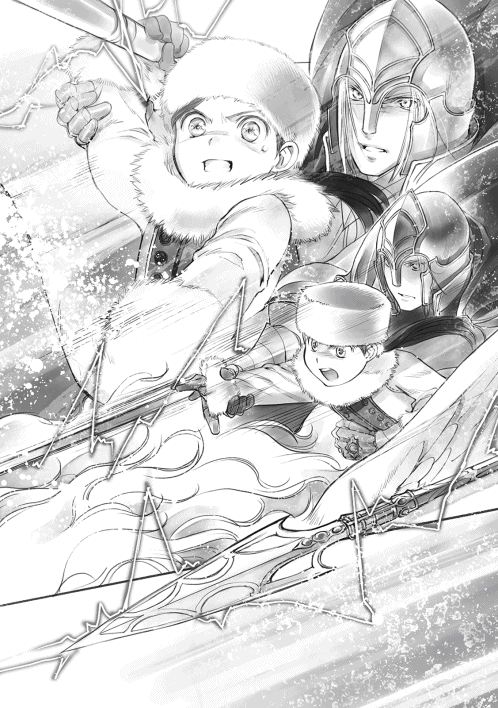
それを見届けると、フェルディナンドはすぐさま騎獣の向きを変えた。ぐっと勢いよく向きを変えられたため、体にかかる重圧の方向も変わる。予想外の重圧にわたしは「うぐっ」と呻 いた。
次の瞬間、地鳴りと共に下からものすごい衝撃が来た。フェルディナンドは騎獣を上に動かすことで衝撃をやりすごし、一度上空で止まる。お腹に回されたフェルディナンドの左腕にしがみつくことしかできないわたしと違って、フェルディナンドは身を乗り出すようにして下を見下ろした。
「討伐完了だ。魔石の回収に向かうぞ」
計画通りだというように淡々 とそう言って、フェルディナンドはシュネティルムがいた場所へと降りていく。
「しっかりしなさい、ローゼマイン。魔石の回収は君がしなければならないのだ。意識を失ったり、倒れたりするのはその後にするように」
無茶なことを言うなぁ、と思いながら、わたしはゆっくりと息を吐いた。
大きく抉 れた地面の穴にライデンシャフトの槍と魔石があった。シュネティルムの体はすでにない。ライデンシャフトの槍は傷の一つもなく、魔力を空にした状態で魔石に突き刺さっていた。フェルディナンドに言われるまま、わたしはライデンシャフトの槍を引き抜いて魔石を回収する。白い魔石がわたしの魔力でほとんど淡い黄色に染まっている。
「もう少しだな。このまま君の魔力に染めてしまいなさい。もし魔力が足りないようであれば、こちらの革袋で包んで持ち帰れば、後日魔力を込めることもできるが......」
別の魔力で染まる可能性はなるべく排除したい、とフェルディナンドが言った。せっかく最高品質の素材が目の前にあるのだ。わたしもできるだけ良い状態に仕上げたい。
「やります」
わたしは魔石を持って魔力を込め始めた。その間、騎士達は回復や癒しを行い、帰還準備をする。
「今年の討伐は予想以上に早く終わったな。ローゼマインのおかげだ」
カルステッドがわたしの頭にぽふっと手を置いてニッと笑った。ものすごく苦戦しているように見えたけれど、例年はもっとひどかったらしい。武勇の神の加護があり、わたしが全力で止めを刺したため、日程は大幅に短縮されて楽に終わった、とカルステッドは言った。
「あぁ、完全に染まったようだな」
フェルディナンドの言葉に、わたしは自分の魔力に染まった魔石を見つめる。初めて素材採集が成功したのである。ホッと安堵の息を吐いて、わたしは魔石を採集袋に入れた。
次の日は吹雪が晴れて快晴だった。城の子供達は久し振りの晴れ間に歓声を上げながら、外へ飛び出していったそうだ。スケートのような遊びやそり遊びを楽しんでいるらしい。これだけの快晴ならば孤児院の子供達はパルゥ採りに行っているだろう。
皆が楽しそうに遊んでいる間、わたしは熱を出して布団の中だ。
......あぁ、パルゥケーキが食べたいなぁ。
そんな呟きに深い頷きで答えてくれたのはダームエルだけだった。
冬の終わりへ
冬の主を討伐した後は少しずつ天気の良い日が増えてくる。もちろんまだ雪の降る日もあるし、寒さが厳しいことに違いはないのだけれど、この頃になるとちらほら貴族院から戻ってくる学生達が増えてきた。課せられた講義や課題を終わらせた者から戻ってきているらしい。
騎士見習いは騎士団の練習に参加したり、騎士団の集まりに顔を出したりするし、文官見習いは文官の業務手伝いをしたり、文官の集まりに顔を出したりする。そういう予定がない時には子供部屋に顔を出すこともあり、大きい子供達の姿が見られるようになってきた。
今は貴族院から戻ってきた学生達とヴィルフリート達がカルタの勝負中である。大して文字も読めない、と軽く見ていた弟達に惨敗 している学生達の顔色は悪い。
「......よぉし！ 勝ったぞ！」
「はい、ヴィルフリート様。兄上に勝ちました！」
軽い気持ちで相手を引き受けたものの、ほとんど絵札が取れなかった学生達は愕然とした顔をしている。経験者と初心者では全く相手にならないのだ。自分の弟や妹にボロ負けしている学生もいて、頭を抱えている姿が見えた。
「ほら、皆、お兄様やお姉様方に勝てるくらいに強くなっているでしょう？」
まだカルタの勝負でわたしは負け知らず。いくらやってもわたしに勝てない、とヴィルフリートが腐 り始めたので、自尊心 を満たせる勝負相手を準備してみたのである。
「お兄様方はすでに字が読めますから、絵札を覚えればあっという間に勝ち負けがひっくり返るかもしれませんけれど、この冬の間は負けませんよ。お兄様方も頑張ってくださいませ」
領主の息子であるヴィルフリートはともかく、弟妹 に負けたままでいるのは兄姉 の沽券 に関わるようで、戻ってきた学生達が意外と真剣にカルタに取り組み始めた。
「ローゼマイン様」
子供部屋の人の目がある場所なので、コルネリウスもわたしを様付けで呼ぶ。わたしはコルネリウスを振り返って「何かしら？」とゆるりと首を傾げた。
「このカルタは複数あるようですが、売り物ですか？ 今まで見たことがない物ですが......」
「あら？ コルネリウスはご覧になったことがございませんでしたか？ ヴィルフリート兄様が文字を覚えるための教材として秋の半ばにわたくしが城に持ち込んでいたのですけれど」
わたしの護衛騎士であるコルネリウスはヴィルフリートの部屋には入れず、部屋の外で待機していたのでカルタを目にしていなかったらしい。
「文字を覚えるための物とおっしゃいましたが、神々の名前も覚えているように見えますが？」
「えぇ、神々の名前はもちろん、どなたの眷属で何を司る神様かもわかっていると思います」
わたしは絵本とカルタを見せながら、冬の間にどのようなことをしたのか説明する。
「ローゼマイン様、これは私が来年の貴族院で学ぶ内容なのですが......」
コルネリウスの言葉に周囲を見回すと、カルタを見てガックリと肩を落としている学生が数人いた。どうやら今年の貴族院で学んだ内容が神様に関することで、記憶するのに苦労したらしい。
「では、この冬にカルタで遊んだ子供達は成績優秀になりそうですね。冬の終わりには城で販売する予定でしたが、少し予定を早めて貴族院の学生達に売って差し上げた方がよろしいかしら？」
競争相手がいなければ伸びませんから、と呟くと、コルネリウスが大きく頷いた。来年は楽をするのだ、と拳を握っている。その様子は微笑ましくも頼もしいけれど、わたしは不意に勉強が嫌いで騎士になったと言っていたアンゲリカが心配になった。
教材の販売の許可申請をするため、わたしはリヒャルダに頼んでジルヴェスターに面会依頼を出してもらった。こちらも話があると言われて、すぐに予定が決まる。
「あぁ、ローゼマイン。よく来たな」
ジルヴェスターと顔を合わせるのも久し振りだ。冬の間、昼食はもちろんのこと、夕食でさえも貴族達の会食や宴に招かれているらしく、顔を合わせることがほとんどなかった。
ジルヴェスターの後ろにカルステッドが控え、フェルディナンドの後ろにはエックハルトが立っている。エックハルトが城の中でフェルディナンドの護衛騎士の仕事をしている姿も初めて見た。込み入った話をするので、わたしの護衛はダームエルだ。
「其方、冬の主の討伐ではずいぶんと活躍したらしいな。カルステッドから聞いたぞ」
「わたくしではなく、フェルディナンド様や騎士団が活躍したのです。わたくしにできたことは神具に魔力を込めるだけでしたもの」
わたしはレッサーバスで待機して、騎士の皆に守ってもらっていただけだ。神具に魔力を込めるのも魔石が必要だったからだし、弱らせてもらった魔獣にフェルディナンドの補助付きで止めを刺しただけだ。胸を張って「わたし、活躍しました」なんて言えない。
「いや、武勇の神アングリーフの御加護ももらったし、あれで仕留めてくれたからな。騎士団への被害も必要経費もかなり少なくて済んだ」
カラカラとカルステッドが笑い、フェルディナンドは満足そうに頷いた。
「他の素材を犠牲にした甲斐がある。冬の素材としては最高品質の魔石が手に入ったからな」
本来ならば皆でじわじわと弱らせていくので、魔獣が瀕死状態になると解体して素材を回収し始めるらしい。魔石を取ってしまうと他がどろりと溶けてなくなるので、魔石を取らないように気を付けながら、毛皮や肉、骨など、利用できる物はすべて剥ぎ取るのだそうだ。
今回は薬の素材としての品質を重視して異なる魔力が混じらないように魔石を取ることを目的にしたので、わたしの魔石以外に収穫がなかったらしい。素材を売ったお金が騎士団の貴重な収入になるので、今回はわたしが補償 することになった。魔石代や護衛代だと思えば惜しくない。
「では、ローゼマインの話を聞こうか。教材や絵本の販売だったか？」
「そうです。すでに報告している通り、今年の冬は、子供部屋でカルタや絵本、トランプを使って、就学前の子供達が全員わたくし達と同じカリキュラムで勉強しました」
領地の子供達全員の底上げをしたい、ということで始めた子供教室の結果をジルヴェスターが「それでどうなった？」と身を乗り出して聞く。
「結果として、下級貴族も含めて全員が基本文字を全て書けるようになり、カルタで神々の名前や属性を暗記し、一桁 の足し算引き算はできるようになりました。良い教師を招くことができず、親に教えてもらっていた下級貴族達のフェシュピールもかなり上達しています」
この時しか良い教師に学べる機会がないとわかっている下級貴族の子供達は必死にフェシュピールを練習していた。その姿を見て、下級貴族に負けるわけにはいかないと中級貴族や上級貴族の子供達も必死に練習する。その結果、全体のレベルがかなり上がった。
「コルネリウス兄様から伺いましたが、貴族院では神々の名前を覚える講義があるそうです」
「あぁ、あるな。面倒で大変でせっかく覚えても使うのは一度きりで、自分にあまり関わりがない神についてはどんどんと忘れていくのだ」
講義をクリアするための暗記になりがちだそうだ。ジルヴェスターが遠回しにそう言って肩を竦めた。同じような笑みを浮かべているカルステッドやエックハルトも身に覚えがあるらしい。
「その講義を受けた学生より、今ではヴィルフリート兄様の方が神々についてよく知っています」
「......何だと？ ヴィルフリートが？」
大きく目を見開いたジルヴェスターが驚愕の表情になった。驚くのも当然だろう。秋の初めには基本文字が半分も書けなかったヴィルフリートが今では貴族院の学生より神々に詳しいなど、一体誰が信じるだろうか。
「貴族院から戻ってきた学生達が今ヴィルフリート兄様達に勝とうと頑張っています。弟妹に負けるわけにはいかないと必死です。競争相手がたくさんいる時の方が皆の学ぶ力は大きく伸びるので、早い内にカルタや絵本の販売をしたいと考えています。城内での販売許可をいただけますか？」
子供達で遊べるように、とわたしが持ち込んだカルタは三つ。今は競争率が激しく取り合いがひどい。そんな取り合いになった時に勝つのはやはり兄姉なのだ。
「わかった。許可する。その教材の販売は子供部屋で行うので問題はないか？」
「はい。さすがにわたくしが直接貴族達に販売するわけにはまいりませんから、わたくしの御用商人としてギルベルタ商会を入れる許可もいただきたいです」
フェシュピール演奏会では側仕えを総動員して売り子をしてもらったけれど、本来の側仕えの仕事ではないし、客人が多くて仕事が多い冬に余計な仕事を増やすわけにはいかない。
「ギルベルタ商会か......。まぁ、よかろう。日取りや段取りに関しては子供部屋の世話係と話し合うように。きっちり決まれば報告しろ。広く売るためには貴族達への周知が必要だろう？」
「養父様に報告はしますが、周知は必要ありません。今回はお子様がいらっしゃる貴族の方限定で販売させていただきますから、子供達の口から伝われば十分だと考えています」
ジルヴェスターはもちろん、フェルディナンドやカルステッドも不思議そうにわたしを見る。
「何故だ？ 例の絵のように広く売りたいのではないのか？」
「多くの方に買っていただきたいとは思っていますが、手作業で作っている物ですから数に限りがございます。わたくしとの繋がりを求める貴族達に一度に押しかけられても困るのです」
子供の数よりは多く作成しているけれど、全ての貴族が購入できるほどの数の商品は準備できていない。繋がりのために購入されて、本当に必要な人が購入できないようでは意味がない。
「ふむ。子供達の教育で其方は実績を作った。ならば、任せる。思った通りにして構わぬ」
「恐れ入ります、養父様」
販売許可が得られたので、一度神殿に戻って商品を持って来なければならないだろう。ついでにギルベルタ商会にも連絡を取らなければ。書字板にメモをすると、わたしは視線を上げる。
「わたくしからのお話は以上ですけれど、養父様からのお話は何でしょう？」
「あぁ、其方のレシピがずいぶんと評判が良くてな......」
「では、冬の間に貴族達を驚かせることには成功したわけですね」
わたしやヴィルフリートは接する貴族を厳しく制限されているので、貴族との会食には顔を出していない。だから、料理を食べた貴族の反応はよくわからないけれど、会食に招かれた貴族達はずいぶんと料理に関心を寄せているらしい。領主の母親の失脚 と料理が相まって、例年より会食に招待されたがる人が多かったようだ。
「レシピをぜひ知りたいと望む者が実に多い」
多分料理のレシピをネタに色々な取引で有利な立場を取ったのだろう。レシピを広げていく方法を考えてほしいとジルヴェスターは言った。
「おいしい料理は生活の基本ですものね。いっそレシピ本でも作りましょうか？......養父様やお父様の料理人に教えたのと同じレシピが載ったレシピ集を大金貨二枚で」
三十のレシピで大金貨三枚を支払ったジルヴェスターが目を吊り上げた。
「ローゼマイン、我々が買った時より安いではないか」
「それはそうですよ。他の誰もが持っていない情報と、すでに他の人が知っている情報では価値が違いますもの。それに、レシピ集を売るだけです。教えに来てくれる料理人がいないのですから」
まだ納得できないというような顔をしているジルヴェスターにわたしは肩を竦めて見せた。
「わたくしのレシピは調理方法が今までと違ったり、下拵 えの手順が多かったり面倒なのです。レシピだけがあっても、全く同じ物が作れるとは思えません。レシピ集を販売しても数年は、料理人にきちんとした手順を覚えさせた養父様達が羨望 と賞賛 を浴びることができますし、もっとわかりやすい賞賛を集めるために新しいレシピが必要でしたら、今後もお売りいたしますよ」
また私から金を取る気か、とジルヴェスターは眉を上げたけれど、それは当然だ。お金はしっかりいただく。わたしは騎士団に支払う魔石の金額を稼がなくてはならないのだから。
「どちらにせよ、すぐにできる物ではありませんから、レシピ集を作って販売するのは来年の冬の話です。取引材料にするならば、できるだけ価値を吊り上げた方が良いかもしれませんね。いっそ、大金貨二枚ではなく、先着百名の限定販売にして値段を吊り上げてみましょうか？」
プレミア感をつけるのは良いかもしれない。それ以外の人は更に次の年までレシピが手に入らない、となればもう少し値段を上げることができるかもしれない。うーん、とレシピ集の値段について考えていると、ジルヴェスターがじっとりとした眼差しでフェルディナンドを見た。
「......フェルディナンド、これも其方の教育か？」
「ギルベルタ商会の教育だろう。商売に関して私は専門外だ」
フェルディナンドは「何もかもを私の責任にするな」とジルヴェスターを睨んで、フンと鼻を鳴らした。睨まれても「あぁ、悪い、悪い」と全く悪いことをしたとは思っていないような顔で軽く手を振ったジルヴェスターが、不意に顔を引き締めてわたしを見つめる。
「ローゼマイン、もう一つ話し合っておかなければならないのはハッセのことだ。フェルディナンドから一応の報告を受けているが、其方はハッセをどのように動かすつもりだ？」
わたしは背筋を伸ばして一度フェルディナンドを見た後、ジルヴェスターに視線を向けた。
「ハッセがどのような結論を出すのか、ということが一番重要なのですけれど、神殿襲撃の責任を町長派に被せて、貴族への態度を改めさせます。貴族への対応をどのようにしなければならないのかについては、ギルベルタ商会を使って噂や体験談を交えて情報を流してもらっています」
「ふむ。だが、小神殿への襲撃をたった一度の罰で済ませるつもりか？ 神官を派遣しないのは農民にとっては苦しいが、一度だけならば大した苦労でもない」
領主一族への襲撃の罰としては軽すぎる、とジルヴェスターがわたしを静かに見据えた。
「町を取りまとめる者が失敗すれば、それは共同体の責任になる。たった一回祈念式に神官を派遣しない程度で済ますにはあまりにも罪が重すぎるぞ」
デリアへの罰を考えさせられた時のような圧迫感と緊張感に、わたしはコクリと息を呑んだ。領主一族への襲撃は重罪だ。それを周囲にもわからせて、尚且 つ、ジルヴェスターが納得する罰が何かあるだろうか。わたしは必死に頭を動かす。
「......で、では、十年ほど税率を上げるというのはいかがでしょう？ 税収のために農民は必要ですもの。ハッセを一つ潰すくらいのこと、養父様には簡単でしょうけれど、後々を考えると細く長く搾り取る方が良いのではありませんか？」
大量の人が反逆罪で処分されるより、お金で解決できる方がよほどマシだと思う。実に穏便 な罰だと思ったが、ジルヴェスターはわずかに顔を引きつらせた。
「......其方は甘いのか、厳しいのか、わからぬな。じわじわとなぶるより、いっそ一思いに殺してやった方が親切ではないか。後々の面倒も少ないぞ」
あまりにも物騒な提案をされて、わたしはぶるぶると頭を振った。貴族の立場から考えれば、後腐れがないように消してしまった方が面倒が少なくて早いのかもしれないが、死ねば終了だ。
「まぁ、税収が上がるのは歓迎だ。ハッセは町長派の処分と十年間の増税で決着をつけよう」
「では、祈念式に行ってもよろしいですか？ 収穫がなければ増税もできませんもの」
「いや、今年は派遣しない。これは決定だ」
ジルヴェスターの深緑の目が有無を言わせないようにきらりと光った。わたしは了承 する。領主の決定を覆 すことはわたしにはできないし、これ以上ハッセの罰が緩和されることはないだろう。
「ハッセには其方が赴き、罰の公表をしてくるが良い。聖女の慈悲 により罰が軽減されたと宣伝してこい。ただし、ハッセの者が今回の罪を理解していなかった時は......わかっているな？」
理解できていなかった時は完全に潰すということだろう。ついでに、自分で自分を慈悲深い聖女だと宣伝してくることが、ハッセに対して甘い処分を下そうとしたわたしへの罰であるらしい。フェルディナンドがいい気味だ、と言わんばかりに唇を歪 めてわたしを見下ろしている。
「あと一つ。祈念式のことだが......其方が直接祝福を行った土地と小聖杯を渡しただけの土地で収穫量に違いがあったらしい」
ジルヴェスターがいくつかの木札を並べていく。収穫量と徴収した物を控えた徴税人の資料のようだ。見てみたけれど、それほどの違いがあるようには見えない。
「......ギーベの土地と直轄地でそれほど変わりがあるようには見えませんけれど？」
「他と変わらないというところが違うのだ。ここ数年は神官や巫女が減り、他と比べて直轄地の収穫量は目に見えて少なかった。だが、今年はギーベの土地と変わらぬほどの収穫が得られた」
小聖杯の魔力に加えて、ギーベ達は自分の治める土地が豊かであるように自分の魔力を注ぐため、青色神官の質が落ちたここ数年は、貴族の土地と直轄地であからさまな差があったそうだ。
「......ローゼマイン。悪いが、今年の祈念式も其方にエーレンフェストを回ってもらいたい」
わたしが以前に多忙であることを訴えたためだろう。ジルヴェスターはひどく言いにくそうな顔で口を開いた。神官長であるフェルディナンドを貴族として城の業務でこき使うのは拒否できても、領地のために必要だと領主が決めた神殿長への依頼を断ることはできない。また過酷な回復薬漬けの日々が始まることを考えると憂鬱 な気分になるが、仕方ないことだ。
わたしが「わかりました」と了承の返事をすると、フェルディナンドがわたしを庇 うように前に進み出てきて「ジルヴェスター」と溜息混じりに呼びかけた。
「ローゼマインが回るのは直轄地だけだ。小聖杯をギーベの土地に持って行くのは他の青色神官に任せるぞ。そうしなければ青色神官の仕事を奪うことになるし、春の素材の採集にも差 し障 る」
「あぁ、直轄地だけで構わぬ。それで頼む。こちらの話は以上だ」
ジルヴェスターの了承を得ると、フェルディナンドがトントンと軽くこめかみを叩き始めた。おそらく祈念式の日程を頭の中で組み立てているに違いない。
「ローゼマイン、其方はもう退室しても構わぬぞ」
「では、ギルベルタ商会の商品を販売する時に、お預かりしていた小聖杯も持って参りますね」
まだ色々と話し合いが続きそうなジルヴェスターやフェルディナンドに挨拶して退室すると、わたしはレッサーバスで子供部屋へ移動した。
「皆様、アウブ・エーレンフェストから許可をいただきました。カルタと絵本とトランプをこの部屋で販売いたします。欲しい方はご両親にご相談してみてくださいませ」
わたしは子供部屋で遊んでいる子供達に声をかけた。パァッと喜びに顔を輝かせた子供達がピッと背筋を伸ばして、こちらへと向かって歩いてくる。
「では、カルタを買えば、夏の館に戻ってもできるのですか？」
「えぇ、来年の冬までにしっかり練習してくださいませ」
初めて兄に勝つことができた少年はやる気に満ちた笑顔で返事をした。「カルタを買って練習すれば、すぐに私が勝つさ」と少年の兄がニィッと笑う。
「ローゼマイン様、絵本は全て販売されますの？」
「もちろんです」
むしろ、絵本の普及 こそがわたしの第一目的だ。できれば新しい絵本を販売したいと思っているくらいである。本文はできているし、ヴィルマの絵もほとんどできていたはずだ。急 かしたら新作絵本として売れるかもしれない。
......販売の日程に少し余裕を持たせて、子供の数だけでも先に本を作ってもらおうかしら？
そんなことを考えていると、コルネリウスと同い年くらいの女の子が躊躇いがちに尋ねてきた。
「ローゼマイン様、わたくし、来年の講義の前に神々について覚えようと考えております。秋や冬の眷属の絵本はございませんか？」
「......それが、まだ準備できていないのです。秋の眷属の絵本は工房の皆にお願いすれば......皆様がお帰りになられる頃にはできるでしょうけれど、冬の眷属の絵本は来年ですね」
ルッツやギルに一応お願いしてみるけれど、販売までに新しい絵本ができるかどうかはわからない。わからないことは約束しない方が良い。
「とてもよくできている絵本ですから、欲しかったのですけれど......」
「そのように楽しみにしてくださって嬉しいです。そうですね、星結びの儀式の頃にはできていると思いますから、星結びの儀式でこちらにいらっしゃる貴族へ販売できないか、アウブ・エーレンフェストに相談してみましょう。そうすれば、冬の貴族院には間に合います」
星結びの儀式自体は成人の祭りだが、その辺りに販売日を設定すれば、騎獣を持っている学生ならば買いに来られるはずだ。
楽しみにしております、と淑 やかな笑みを浮かべた令嬢が下がっていき、代わりに、別の令嬢が全て購入できるように親におねだりしなくては、と弾 んだ声を上げた。皆がどれを買ってもらうのか、と楽しげに話をする。それを横目で見ながら、わたしは子供部屋に付いている世話係の側仕え達と教材販売の日時について話し合う。ふと、浮かない表情のフィリーネが目に付いた。
教材販売
わたしは神殿に戻ると、ベンノと連絡を取ってもらえるようにギルに頼んだ。雪の降っていない日を見計らって、店へ手紙を届けてもらう。冬は仕事が少ないようで、午後から面会したいというベンノの走り書きの返事を持ってギルが戻ってきた。
「では、午後から孤児院長室でお話ができるようにします。ルッツに伝えてください」
「かしこまりました」
昼食に戻るルッツが伝言を持って帰ってくれたようで、五の鐘にはギルベルタ商会の面々がやってきた。ベンノとマルクとルッツだ。さっさと隠し部屋に入って、わたしはルッツに飛びつく。冬の間、ほとんど会えなかった寂しさを補充 しつつ、ベンノに城での教材販売の話をした。
「城で販売だと!? ちょっと待て！」
「え？ あんまり待てませんよ。早目に売らなきゃいけないので」
「そうじゃない！ 今ウチには城へ連れて行けるような店員が育っていないんだ」
取引相手は下級貴族が中心で、少しずつ中級や上級貴族へ販路を伸ばしているのがギルベルタ商会だ。わたしとの繋がりで一足飛びにエルヴィーラという上客を得たが、商品を持って行けるのがベンノとマルクしかいない現状からもわかるように、城に上げられるような立ち居振る舞いができる店員はまだまだ少ないらしい。イタリアンレストランの給仕 をさせるために、急いで礼儀作法を叩き込んだ者はいるけれど、彼等にしても城に上げるには少し不安が残るそうだ。
「......店員ですか。それらしい服を着せて、わたしの側仕えや教育の行き届いた灰色神官を数人連れて行きますか？ 今回は注文を取るわけではなくで、できている商品を売るだけですから、立ち居振る舞いに問題がなくて、計算ができれば大丈夫だと思いますけれど」
貴族との取引は注文を受けてから作るオーダーメイドが基本だ。植物紙のような消耗品でもない限り、商品をそのまま持って行って売ることはない。最近のリンシャンも上級貴族向けはオーダーメイドだ。季節によって採れる油の種類やスクラブにできる素材を元に、いくつかのサンプルを持っていった後、好みの組み合わせで注文を受けている。わたしは組み合わせ例として持ってきてもらったサンプルからそのまま買っているけれど、上級貴族の体裁を整えるため、オーダーしたように見せるための注文票を出している。
「冬の手仕事で作った物をそのまま売るのか？ 城で貴族達相手に注文を取るのではなく？」
ベンノが目を丸くしているが、わたしはコクリと頷いた。
「そのまま売ります。すぐに必要なのですよ。受け取りが来年になってもいいから凝った物が欲しい、という貴族にはベンノさんやマルクさんが対応すればいいですけれど、すぐに必要だと考える方には商品をそのまま売るので、計算ができる灰色神官を使っても問題ないと思います」
「......わかった。ウチからは俺とマルクとレオンが行く。それから、二人ほど成人している灰色神官を選んでほしい。城へ連れて行くならば服を見繕わなければならないだろう？」
さすがに灰色神官の服で城へ連れて行くわけにはいかない。ギルベルタ商会の面々と一緒に城へ行くならばきっちりとした服が必要になる。
「ギル、誰が良いかしら？ フランには小聖杯も運んでもらうから決定しているのだけれど」
「フリッツは青色神官に仕えていたから大丈夫だと思います」
「では、フランとフリッツにお願いしましょう」
連れて行く人員が決まると、次は値段や量の確認である。
「金額は絵本が小金貨一枚、カルタが大銀貨五枚、トランプは黒一色の物が大銀貨三枚で、色インクを使った物は小金貨一枚ですね」
最初期に売り出した富豪向けの絵本に比べると、植物紙やインクの値段を下げることに成功しているので、原価が少し下がった分、安くなっている。カルタの絵はさすがにヴィルマに全て描いてもらうわけにもいかないので、ガリ版印刷を利用している。カルタは板を使っているので、紙よりも原価が安いのだ。トランプはカルタよりも枚数が少ないことで更に安くなる。ただ、希少 な色インクを使うと、とても綺麗だけれど値段が跳ね上がる。他と差別化したい上級貴族向けだ。
「量はひとまず百ずつ準備しましょう。子供の数を考えても、それくらいで十分だと思います」
「了解。百ずつ、木箱に詰めていく」
販売方法についても色々と話し合いをする。相手が貴族なので、平民に売るのと同じようにはできないのが一番大きな問題点だ。どのように売るのかを話し合うと、マルクは「早速準備に取り掛かります」と一人で帰っていった。ベンノはフランとフリッツに協力を求め、二人の服の寸法 を測ると、売り子教育を始める。ギルとルッツは工房へ行って商品の確認と箱詰めの開始だ。
慌ただしいギルベルタ商会の様子を、ダームエルが唇を引き結び、無言でやや俯きがちに見ていた。視線を少し落とした浮かない表情が、子供部屋のフィリーネの表情と重なって見える。
「ダームエル、どうかして？ 何か気付いたことがあるなら教えてくださいね。わたくし達ではわからないことがあるかもしれませんから」
わたしの場合は全てにおいて常識知らずで、ベンノは貴族と商売上の取引はあっても平民で、商売するために城へ入るのは初めてだ。貴族であるダームエルの目から見て何か問題点があるならば教えてもらわないと当日にとんでもない失敗をすることになるかもしれない。
「気付いたことと言いますか......ローゼマイン様の絵本が素晴らしいことはわかりますし、他の本を購入するよりは安価ですが、下級貴族にとっては簡単に買える値段ではありません。差を感じて悔しい思いをする子供がいるのではないかと心配になったのです」
ダームエルが「私も裕福な貴族ではございませんから」と付け加えた。下級貴族の中でも貧しい方の貴族は、平民の富豪層よりもお金がない。そんな簡単なことをすぐに思いつかなかった自分に歯噛みした。わかりやすくて学びやすい本は、優秀な教師を雇うことができない彼等にこそ必要だが、ここでもお金の有無が大きく影響する。
「貴族だからといって誰もが買えるとは限りません。......ですが、これ以上の値下げは無理です」
ベンノがじろりとわたしを見た。貴族に向けに売る物から利益を減らすようなことをベンノが許すわけもないし、これから先のことを考えると、最初からいきなり安売りをするわけにもいかない。
「これでも一応値下げした方ですからね。けれど、欲しい人が本を手に取れるように少し考えた方が良さそうです。何か良い方法がないかしら？ ルッツ、どう思いますか？」
「買えない物は借りるしかないと思います」
本は高価だ。個人で所有するのが富の証になるほど高価だ。買うことはもちろん、借りることさえ実は容易ではない。神殿図書室は神殿関係者でなければ入れない仕様になっているし、神殿関係者でも青色神官や青色巫女でなければ本を借りることはできない。神殿長や神官長の許可がいる。城の図書室では身分証明が求められ、保証金を準備しなければ本を借りることができない。汚損 や破損した時の弁償金となるため、その保証金が高い。図書館無料の原則などあり得ないのだ。
「今、簡単に借りられないならば、これからは簡単に借りられるようにするにはどうすればいいのか、考えてみてはどうですか？」
「......保証金が高くて借りられないなら、保証金を安くすれば良いということかしら？」
レンタル料は安くして、汚損や破損した時の弁償をきっちりしてもらうために親から一筆もらっておく。権力の乱用かもしれないが、領主の養女であるわたしの本を貸し出すという形態から始めれば、本を丁寧に扱うこと、何かあった時に弁償することを徹底させられると思う。
「借りるために必要なお金も、新しいお話一話と交換という形にすれば何とかならないかしら？」
フィリーネや他の少女達からいくつかお話を聞かせてもらった。あれに原稿料ということでお金を支払えば、購入費には足りないけれど本や教材のレンタル料にならないだろうか。
「一話じゃなくて文字数を考えた方がいいと思います。話によって長さが全然違いますから」
「そうね。原稿料を払う時はそうするつもりです」
文字数で原稿料を計算して子供達のアルバイトにすれば、わたしは新しいお話が手に入って嬉しい。字が綺麗ではない子供達も文字の勉強にもなるし、お小遣い稼ぎもできるし、一石二鳥ではないだろうか。わたしが一人で盛り上がっていると、ベンノがひくっと頬を引きつらせた。
「ローゼマイン様、金銭が関わるのです。思いつきで急に色々と変えるのはどうかと思います。神官長と話し合い、根回し、下準備が終わってから実行してください」
ベンノの赤褐色 の目が怒っていた。「くそ忙しい時に余計なことを考えるな」と言っている。これはあれだ。雷が落ちる五秒前に違いない。わたしが領主の養女でなければとっくに落ちている。
「原稿料はもう少し考えた方が良さそうですね。今回は低料金での貸し出しを試してみましょうか」
ほほほ、と笑ってベンノの怒りを回避しつつ、わたしは心の書字板に書き込んだ。貸本屋や低料金で利用できる私設図書館の基礎として、下級貴族への教材の貸し出しを少し考えてみよう。
あっという間に販売日当日になった。わたしは神殿の正面玄関にレッサーバスを出し、皆が荷物を運び込むのを見つめる。絵本とトランプとカルタが百ずつ準備され、木箱に詰められていた。
フランとフリッツはギルベルタ商会の商人の扱いで一緒に行くことになっているので、マルクやレオンと同じような服をベンノに与えられて着ている。下町に出るために神官服以外の服を着慣れていたフランと違って、フリッツは服が馴染まないようでどことなく落ち着かないように見える。
「ローゼマイン、本気でこれにギルベルタ商会の者を乗せるのか？」
フェルディナンドがレッサーバスを見て、少しばかり嫌そうな顔になった。
「この雪の中ですよ？ 馬車では途中で立ち往生 してしまうかもしれないでしょう？」
わたしが深く積もっている雪を示すと、フェルディナンドが腕を組んで雪と商人達を見比べる。
「君の言い分は理解できるが、商人や商品を同乗させて城へ運ぶ貴族など他にいないぞ」
「大丈夫です。わたくし、前例になる覚悟はできています」
「後に続こうと思う貴族などいない。君だけだ」
フェルディナンドは溜息混じりにそう言うと、視線をわたしから周囲へ向けた。
「フラン、フリッツ。主の我儘に振り回されて大変であろうが、頑張りなさい。それから、ベンノ。心労は多いと思われるが、この先もローゼマインと付き合う以上、類似の案件は何度も出てくるであろう。自分で拾った縁だ。諦めなさい」
フェルディナンドの言葉を聞いた皆がちらりとわたしを見て、神妙な顔で頷いた。
......諦めろって言葉も、全員が揃って同意するのもちょっとひどくない？
皆の反応に、むぅっと頬を膨 らませながら、わたしはレッサーバスの出入り口を大きく開ける。
「準備が終わったのでしたら乗ってくださいませ」
乗り慣れているフランが一番に乗り込み、ベンノが不気味な物を見るような顔で乗り込む。マルクはいつもの微笑で、レオンは色々なところに触っては「うわっ」と声を上げながら入っていった。フリッツが怖々と乗り込んで、出入り口をみょんと閉めると、「おわっ」と驚きの声が上がる。
「シートベルトを締めてください。フラン、締め方を教えてあげてください」
フランが「かしこまりました」と返事をしてシートベルトの締め方を教えている間に、助手席にブリギッテが乗り込んだ。今日のように商人が乗り込むならば護衛は必須だそうだ。
レッサーバスが空を駆け始めると、後部座席の方は騒然となった。空を飛ぶなんて平民にはあり得ない経験なので当たり前だけれど、「眩暈 がする」とか、「気分が悪くなりそうだ」という意見が大半だった。空を駆けるレッサーバスに大喜びしていたギルやニコラの反応から考えると、今日のお客様は年を取っているせいか頭が固いと思う。
「おかえりなさいませ、ローゼマイン様」
わたしの騎獣からぞろぞろと人が出てくることにノルベルトが目を丸くした。やはりわたしの騎獣から平民が次々と出てくると驚くようだ。荷物の木箱を下ろしていく彼等を見て、ノルベルトは困惑した顔で一度目を閉じて、ゆっくりと息を吐いた。
「ローゼマイン様、彼等はギルベルタ商会の者でしょうか？」
「そうです。こちらがアウブ・エーレンフェストからいただいている許可証です。ノルベルト、このまま子供部屋に向かいます。案内してちょうだい」
「......かしこまりました。では、どうぞ」
ノルベルトがほんの一瞬の躊躇いを見せた後、ニコリと笑う。同時に騎獣を片付けたフェルディナンドがこめかみに手を当てて深い溜息を吐いた。
「ローゼマイン、本来、平民である商人は別の入り口から入るのだ」
領主一家が出入りするための玄関と商人が出入りする場所は全く違うと指摘されたわたしは「あ」と気付いてしょぼんと項垂 れる。よく考えなくてもわかっていなければならないことだった。商人と領主の養女では貴族街に入るための門も違えば、城に入るための門も違う。商人は下働き達が使う平民用の出入り口から入ってくることになっているらしい。
「あの......。ごめんなさい。わたくし......」
困ったわ、と首を傾げて見上げると、フェルディナンドが軽く首を振った。
「すまぬ、ノルベルト。私も出発の準備をしているところを見るまで、まさかローゼマインが騎獣で商人達を運ぶつもりだと気付かなかったのだ。気付いてから馬車を準備させるには時間がなかったため、この状態になった。ローゼマイン、ここに降ろされる商人などいないから今回は仕方ないが、以後気を付けるように。ノルベルト、悪いが、今回はこちらから連れていってほしい」
「かしこまりました。フェルディナンド様」
わたしは一人乗りのレッサーバスに乗ってノルベルトとフェルディナンドについていく。わたし達の後ろに商品の木箱を抱えたギルベルタ商会の面々が続いた。
「ローゼマイン様、おはようございます」
「おはようございます、皆様。こちらの準備ができるまで遊んでいてもよろしくてよ」
子供達の期待の眼差しはいつも通りで、こちらに視線を向けている親の姿も今日は多い。わたしとの誼を結ぶ絶好の機会だと捉えているのだろう。
「遅いぞ、ローゼマイン」
どーんと仁王立 ちで出迎えてくれたのはヴィルフリートだ。今日は販売のお手伝いを頼んでいるのである。初めて任される仕事に張り切りすぎていて、やや鼻息が荒くなっていた。
「ヴィルフリート兄様はそちらで皆とカルタをして、集まっている大人の皆様にどのように遊ぶ物か見せて差し上げてください。使い方を知った方が購入しやすいので、これは重要な任務です」
「うむ。では、一勝負するぞ」
この冬にできたヴィルフリートの取り巻き達が「はいっ！」と元気に返事をしてカルタを並べ始めた。男の子達が率先して行うカルタのデモンストレーションに興味深そうな顔をした貴族達が集まっていく。女の子達が手持無沙汰 にしているのを見つけて、わたしは彼女達にも声をかけた。
「貴女達はお父様やお母様に絵本を読んで差し上げてくださいませ。どれだけ文字を覚えたのか、ご両親にもよくわかるでしょう」
「はい、ローゼマイン様」
きゃあきゃあと弾んだ声を上げながら女の子達は絵本を抱えて親達のところへ駆け寄ると、読み聞かせを始めた。いつも自分達がしてもらっている通りに、今日は自分が読むのを聞いてもらうのだ。本を読み始めた声が少しだけ緊張しているのがわかる。
「コルネリウスはお友達とトランプの勝負をお願いいたしますね」
わたしがポンとトランプを渡すと、コルネリウスは「私はローゼマイン様の護衛なのですが」と不服そうにトランプを見た。でも、わたしの側近で学生達に働きかけられるのは一人だけだ。
「アンゲリカがいない今、学生はコルネリウスだけですもの。よろしくお願いいたしますね」
「......なるほど。それが理由でしたら私が適任でしょう。仰 せの通りに」
アンゲリカはまだ貴族院から戻っていないので頼みようがない。学生達を引きつれて、トランプでブラックジャックのような遊びを始めたコルネリウスにも貴族達が分散して群がっていく。
貴族達の視線をデモンストレーションに向けさせると、わたしはすぐさまギルベルタ商会に視線で合図して販売の準備に取り掛かった。打ち合わせした通りに子供部屋の一角に準備されている台を見て、わたしは子供部屋のお世話係達に労 いの言葉をかける。
「台の準備はできているのですね。ありがとう。では、ベンノ。商品を並べてちょうだい」
「かしこまりました、ローゼマイン様」
事前に話し合った通りに商品が並べられ、会計がしやすいようにおつりの準備がされる。商品の置かれた台の前には二つの椅子とテーブルがあり、わたしとヴィルフリートが商品の購入をする貴族達と接するための席になっている。
そして、部屋全体を見回せる位置には今回の教材販売の監視役であるフェルディナンドの席が準備されていた。貴族達がどのように動くのか、ギルベルタ商会が以後城に出入りするのに相応しい動きができるのか、わたしが馬鹿な失敗をしないか、目を光らせることになっている。準備中、フェルディナンドは興味深そうに全てのデモンストレーションを一つ一つ覗き込んでいた。
貴族と商談ができるベンノとマルクはどのようにでも対応できるようにわたしとヴィルフリートの席の両脇に、レオンがトランプ、フランが絵本、フリッツがカルタのところに立った。
「ローゼマイン様、準備が整いました」
ベンノの言葉にコクリと頷き、わたしはヴィルフリートが勝利するのを待って、皆に声をかける。
「お待たせいたしました。これからギルベルタ商会による教材の販売を行います」
ヴィルフリートはカルタの片付けを隣の少年に押し付けると、駆け寄ってきて椅子に座った。
「購入をご検討されていらっしゃる方はこちらにいらしてください。今回は教材ですから、お子様をお連れの方を優先させていただきます」
わたしがニコリと笑うと、子供を連れた貴族が前に進み出てきて跪いた。子供達からの挨拶は受けたけれど、親からの挨拶は受けていないため、ずらずらと続く長い挨拶を交わす。もちろんこの順番は身分順だ。この挨拶が長くて一人で対応するには無理があるため、ヴィルフリートに応援を頼んだのである。どちらかというと男の子はヴィルフリートの前に並び、女の子がわたしの前に並ぶ感じになっている。やはり、側近となるためには同性の方を優先するのだろう。
長ったらしい挨拶を終えると、わたしは二人に立ち上がるように言って、注文票を差し出した。
「ギーベ・グレッシェルは何がご入り用かしら？」
「ローゼマイン様の絵本は素晴らしく、カルタやトランプは妹も興味を示すだろうから全て欲しい、とねだられまして......。可愛い娘の頼みです。全ていただきましょう」
グレッシェル伯爵はペンを手に取ると、穏やかな笑みを浮かべて、自分の隣で注文票を見つめる娘を見下ろした。深紅の髪が印象的な少女がうふふっ、と得意そうに笑う。
「ローゼマイン様の絵本はとても読みやすいのですもの。お父様もご覧になってもよろしくてよ」
本を褒めてくれる少女に相好 を崩しながら注文票を確認して、自分の脇に控えるベンノに渡す。
「こちらに準備できております」
グレッシェル伯爵の側仕えとベンノが注文票通りにお金と品物の交換をすれば売買は終了だ。
「お勉強にぜひ役立ててくださいませ」
「はい、ローゼマイン様」
グレッシェル伯爵が去ると、次の貴族がやってくる。また挨拶だ。ちらりと横を見ると、堂々とした態度でヴィルフリートが貴族に応対していた。書いてもらった注文票をマルクに渡している。
「ギーベ・キルンベルガ、これはとても勉強に役立つのだ。私もこれで文字や神々の名前を覚えた。其方等も励め」
「恐れ入ります、ヴィルフリート様」
長い行列をわたしとヴィルフリートの二人で捌 いていく。全ての教材を購入できるのは、やはり余裕がある上級貴族だけだった。中級貴族になると、兄弟が皆で使えるカルタとトランプを購入する者が多く、一冊一冊が高い絵本を全て購入する者は減ってきた。カルタの読み札で神々のことが出てくるので絵本よりもカルタを優先させることになるようだ。下級貴族になると、一つを選んで買うのがやっと、という感じになるらしい。
それでも、「来年は勝つんだ」と買ってもらえたカルタやトランプを持って、意欲を燃やしている子達はまだ良い。何も持たず、羨ましそうに見ている子供達が数人いた。購入ができない、と最初からわかっているのか親が来ていない。その中に浮かない顔をしたフィリーネもいる。
「フィリーネ、ご両親はいらっしゃらないのかしら？」
「......はい。今日は所用がございまして」
言いにくそうにフィリーネが作り笑いをする隣で、話題を向けられたくないと言うように、親が来ていない他の子がそっと目を逸らした。
「そう。では、冬の終わりには今使っている絵本やカルタを貸し出しすることも考えていますから、貸してほしい方はご両親に相談してみてくださいませ」
「ローゼマイン様、お気持ちはありがたいのですが......」
お金が、と声にならず、唇だけが小さく動いた。
「わたくしの教材を貸し出しする時に必要なのは、お金ではございません」
え？ と皆が揃って顔を上げて、ポカンとした表情でわたしを見た。予想通りの反応に小さく笑いながら、わたしは口元に手を当てて内緒話をするように少し声を潜 める。
「わたくしが欲しいのは、わたくしが知らないお話です。色々なお話を集めてきてくださいませ」
「あの、それは、わたくしのお母様が教えてくださったようなお話ですか？」
「えぇ、フィリーネはもう三つも教えてくださったもの。絵本を三冊、貸し出しできます」
フィリーネを始めとした下級貴族の子供達の顔がパァッと輝いた。
「ローゼマイン様、私も知っているお話をすれば、カルタを借りることができますか？」
「えぇ。わたくしの知らないお話でしたら、カルタをお貸しします。けれど、汚したり壊したりしないように大事に使ってください。何かあった場合は弁償していただくことになりますから」
「はい！」
大切に使うこと、汚損したり、破損したりした場合は弁償してもらうことに関して、親の一筆をもらう。わたしが知らないお話と引き換えに、春から次の冬まで教材を貸し出すことになった。
春の訪れとアンゲリカ
教材販売は上手くいった。終わり際にエルヴィーラもやってきて、コルネリウスのために全てを購入してくれた。ついでに、ベンノに向かってニコリと笑って「そろそろリンシャンがなくなるから注文を取りにいらっしゃい」というようなことを遠回しに告げる。上級貴族であるエルヴィーラが声をかけたことで、ギルベルタ商会の注目度は嫌でも上がった。ベンノはにっこりと笑って了承しているけれど、その目が少し泳いでいるように見える。城で貴族から一斉に注目されるのだ。視線の重圧感と緊張感はすごいだろう。洗礼式やお披露目で注目されたわたしにはよくわかる。
......が、頑張れ、ベンノさん！
教材を売り終わった後は、リンシャン目当ての奥様に何人か声をかけられ、ベンノとマルクがそれに対応して商談が始まった。
「フェルディナンド様、教材の販売が終わったという報告と例の物をお渡しするためにアウブ・エーレンフェストに面会したいのですけれど......」
「あぁ、私が行ってくる。君はここにいなさい」
フェルディナンドがベンノとマルクを見ながらそう言うと、小聖杯の入った木箱を近くにいた側仕えに持たせて、ジルヴェスターの執務室へ向かう。フランとフリッツとレオンは残った教材の片付けとお金の管理をしていた。
販売や商談が終わると、ギルベルタ商会の面々、フランとフリッツを神殿に連れて帰る。わたしは神殿に一泊しただけで城へとんぼ返りだ。売り上げに関しては後日報告を受けることになった。
次の日は子供部屋で自分の教材を抱えた子供達に、なくさないように教材には各自の名前を書くように告げた。同じ物を皆が持っているのだ。名前書きは基本だろう。
「トランプはこの辺り、カルタはこの辺り、絵本はここに、自分の名前か家名を書いてくださいね。同じ物ですから間違えないようにしなければなりません」
兄弟で手分けをして家名を書き込む子もいれば、全て買ってもらった自分の教材を見てこれだけ書くのか、と溜息を吐いた子もいる。わたしが見かねて「今日使う分だけ書いて、後は家の方に手伝ってもらっても良いですよ」と言うと、上級貴族の子供達はあからさまに胸を撫で下ろした。
「今日は絵本しか使わないので、名前を書くのは絵本だけにします」
わたしは子供部屋の様子を見ながら、下級貴族の子供達から新しいお話を聞いて書き留めていく。今まで女の子ばかりからお話を聞いていたので、男の子からお話を聞くのは初めてだ。途中で止まって「あれ？」となったり、明らかに「貴方が今即興 で作りましたね」と笑いたくなるような脈絡 のない取り繕 いをしていたり、なかなか楽しい。
春が近付いているのが目に見えるようで、雪が舞う中にも晴れた日が増えてきた。当然、子供達は外で遊ぶ日も増えてくる。わたしも体力作りのために外に出た。貴族達の騎獣の発着場の辺りは、集めて固めた雪山があり、そりのような物で滑り降りる遊びができる状態になっている。わたしはそり遊びと雪合戦に参加するつもりだった。
「参りましょう、ローゼマイン様」
張り切って駆け出したものの、雪の中を数歩走ってはボテッと転び、数歩歩いては尻餅 をつく状態のため、子供達にはどんどんと置いていかれる。何度か挑戦したけれど、結局、一度も雪山に到着することができなかった。息切れでそり遊びは断念したし、雪玉を丸めようとしゃがみ込んでいるところに雪玉をぶつけられて意識を失ったし、熱を出したし、雪遊びになる手前で終わった。
......でも、雪中行軍という感じでちょっと体力が付いた気がするよ。
そうこうしているうちに冬は終わりに近付く。貴族院の卒業式と成人式があるため、卒業生の両親や領主夫妻、講義を終えて戻っていた学生達が貴族院へ向かった。式が終わると、貴族院から一斉に帰ってくる。皆が帰ってくると、貴族全員で春を寿 ぐ宴があって、冬の社交界は終わりだ。貴族達はそれぞれが所有する土地へ帰っていくことになる。
その春を寿ぐ宴の前、学生達が次々と貴族院から戻ってくる中にアンゲリカの両親から平身低頭といった内容の面会依頼が届いた。あれほど恐縮 していた彼等の方から面会を求めてくるとは思わなかったため、わたしは首を傾げながらも了承して面会室で会談の手はずを整える。
面会日、わたしが部屋に入った時にはアンゲリカとその両親が跪いて待ち構えていた。両親がアンゲリカを挟んで並び、跪いて首を垂れている。部屋に入って、リヒャルダが扉を閉めると同時に両親の口から「この度は大変申し訳ございません！」と悲鳴のような声が上がった。
「......え？ な、何事でしょうか？」
「私共の教育が至らないばかりにローゼマイン様にご迷惑を......」
前回の面会よりも悲痛な響きの謝罪にわたしは目を瞬いた。唐突な謝罪だが、全く意味がわからない。アンゲリカの両親が胃の辺りを押さえながら今にも死にそうな真っ青な顔で始めた説明によると、アンゲリカはなんと貴族院で今年の講義に合格できなかったらしい。
......春からの補講が決定して、しばらく護衛任務に就くことができないんだって。
両親はアンゲリカをわたしの護衛騎士から外してほしい、と震える声で願った。これ以上の失態を演じる前に、ということらしい。けれど、わたしの護衛騎士から外すということはアンゲリカの将来にはかなり影響が大きいはずだ。領主の養女の護衛騎士に任命されるのは名誉なことだが、成績不良を理由に外されるのは貴族として大きな失点になる。
「リヒャルダ、こういう場合はどうすればいいのかしら？ わたくし、春は祈念式でしばらく城を不在にするので、アンゲリカが春の間に補講を終えればそれほど困らないのですけれど......」
「姫様のお好きになさればよろしいですよ」
リヒャルダは出来の悪い子として切り捨てても、見所があるからと存続 させても良いと言った。主であるわたしが好きに選んで構わないようだ。
「アンゲリカはどうしたいのかしら？」
「......わたくしがこのまま仕えてもよろしいのですか？」
きょとんとした顔でアンゲリカが尋ねた。わたしはコクリと頷く。
「努力して、夏までに戻ってきてくれるならば、このまま仕えてほしいと思っています」
わたしの言葉に、アンゲリカの両親は二人で顔を見合わせて何とも困った表情になった。
「ローゼマイン様が慈悲深く、お優しいことは存じておりますが、アンゲリカを側に置くのはローゼマイン様のためになりません。主の評判を下げるような側近は必要ございません。どうぞお考え直しくださいませ」
その両親の言葉は、領主一族に仕える側仕えらしい発言だと思う。できない者は切り捨てて、一族を盛り立てていかなければならない貴族らしい言葉だ。けれど、わたしにとっては悲しい言葉だった。わたしがどれほど虚弱で役立たずでも大事にしてくれた家族のことを思うと、その違いに気分が沈む。わたしのことを考えてくれるのはありがたいけれど、アンゲリカのことも考えてあげてほしい。貴族の思考に染まり切れない自分の我儘だとわかっていても、そう思う。あれだけひどい状態だったヴィルフリートの側仕えや護衛騎士にも更生の機会を与えたのだ。わたしはアンゲリカにもチャンスを与えてあげたい。
「貴方達の忠告も胸に刻みますが、わたくしは夏までの状況を見て、アンゲリカを解任するかどうか、決めたいのです」
わたしはゆっくりと首を横に振って、アンゲリカの両親の訴えを退けた。アンゲリカの両親は諦めの表情となって、アンゲリカとわたしを見ると、「かしこまりました」と顔を伏せる。
「冬の間に子供部屋の子供達が神々の名を暗記できたのですもの。アンゲリカにもきっとできます」
わたしはそう言って立ち上がると、アンゲリカの両親に退室を促した。
「では、今からアンゲリカがどのような講義を受けていて、どこで詰まっているのか、何がわからないのか、話し合いましょう」
アンゲリカの両親が退室するのを見届けた後、わたしはその場ですぐさま「アンゲリカの成績を上げ隊」を結成した。強制的にメンバーに入ったのは護衛騎士の皆だ。騎士でなければ講義内容もわからないので側仕えや文官は必要ない。わたしの部屋には男性が入れないので、ひとまずこのまま作戦会議である。
「アンゲリカはどのような講義で引っかかっているのですか？」
貴族院では成績が口頭で伝えられ、成績表は配布されないようなので、わたしにはアンゲリカの得意不得意もわからない。不得意なところを重点的に鍛えなければ、と思ったわたしの質問にアンゲリカが深い青の瞳をきらりと輝かせ、ハキハキと答えた。
「座学はほとんど全てです」
次の瞬間、全員が絶句した。ブリギッテはきつく目を閉じ、ダームエルはポカンと口を開ける。
「......アンゲリカ、それは、あまりにも......」
「座学など、それほど難しくはないだろう？」
ダームエルは兄が文官だったため、騎士になることを決意したが、得意不得意でいうと文官寄りだったそうだ。下級貴族で魔力が少ないので、座学より実技に苦労していたらしい。
「あの、アンゲリカ。では、一体どのような講義を受けているのですか？」
「......よくわかりません」
こてりと首を傾げたアンゲリカの答えに、コルネリウスが目を吊り上げた。
「神々の名を覚えたり、兵法の基本を理解したりするのだろう!? 本当に講義を受けたのか!? 」
アンゲリカは貴族院の三年生である。その三年生の講義内容について当人であるアンゲリカが講義内容を一番わかっていない。来年のために情報を仕入れているコルネリウスの方がよく知っているくらいだ。フェルディナンドではないが、こめかみを押さえたくなった。
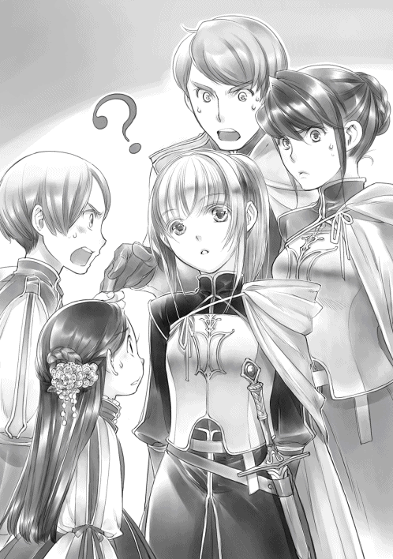
「ダームエル、ブリギッテ、コルネリウス。講義内容を詳しく教えていただいてよろしいかしら？」
「もちろんです」
アンゲリカに質問するのは時間の無駄だと悟ったわたしは、他の三人から話を聞くことにした。ブリギッテやダームエルの記憶やコルネリウスの集めた情報を聞いた方が確実だ。
「えーと、皆の言葉をまとめると、神々の名前と司る事柄について覚えて、自分と相性の良い神様の加護を得るというのが共通の課題で、兵法の基本と武器の特性を知り、活用できるようにするというのが騎士の課題ということで間違いありませんか？」
「講義として細かく分ければたくさんありますが、その辺りを押さえておけば、どの講義でも落第点を取ることはありません」
実技では苦労したようだが、座学では比較的優秀だったらしいダームエルが「何故落第点を取るのかわからない」と首を傾げる。ブリギッテもダームエルに同意して頷く。ブリギッテは全てにおいてほぼ平均だったらしい。何に関してもあまり苦労したことがないと言った。
アンゲリカに一番近いのはコルネリウスだろうか。魔力と実技に頼りがちで、座学はどちらかというと苦手らしい。それでも、上級貴族として恥ずかしくない程度の成績は維持しているそうだ。
「落第点ということは試験があるのですか？」
「はい。最初にどのような内容の講義なのか説明と試験があります。その試験で不合格だった者には講義があります。そして、講義の最後に試験があるのです」
ダームエルの説明にブリギッテがダームエルを睨みながら軽く肩を竦めた。
「最後に試験があると言いながら、ダームエルは講義の最後までいたことがないではありませんか」
「どういうことでしょう？」
わたしが首を傾げると、ダームエルが説明してくれる。
「講義がすでに知っている内容であるならば、講義以外の時間に先生に予約を取り、試験を受けに行くことが可能なのです。余った時間を私は実技に注ぎ込んでいました。座学が早く終わっても冬の終わりまで貴族院から出られませんでしたよ」
兄や姉がいたり、貴族院での寮生活の間に先輩から教えてもらったり、試験に合格する自信がある者はさっさと講義を終えることができるらしい。これで城へ戻ってくる学生達の時期がバラバラである理由がわかった。
「空いた時間ができれば、魔術具の作り方を学んだり、自分の武器を強化したり、趣味の講義を取る方もいますし、他領の方との交流を深める方もいらっしゃいます」
フェルディナンドはきっと鬼のような勢いで講義を取っていたのだろう。次々と試験を受けて一発合格を重ねて、褒め称えられている姿が目に浮かぶようだ。それなのに、本人は周囲の賞賛など目に入っておらず、ひたすら次の講義へと向かっていたに違いない。
「......補講を受けて、試験に合格すればよいのですね？ では、アンゲリカとコルネリウス、二人まとめてお勉強いたしましょう。ここで一緒にしておけばコルネリウスも来年は楽勝ですもの」
別にいいけれど、と言いながら、コルネリウスがアンゲリカを心配そうに見る。
「ローゼマイン様、神々の名を覚えるために、あのカルタを使うのですか？」
「えぇ、そうです。コルネリウス、持って来てくださる？」
「かしこまりました」
子供部屋で子供達が遊んでいるのを見ていたけれど、参加したことがない護衛騎士達にコルネリウス所有のカルタをさせた。初心者ばかりの勝負で勝ったのはダームエルだった。コルネリウスは悔しがっているけれど、アンゲリカは負けてもあまり悔しそうではない。もう少し向上心を持ってもらわなければ成長するはずがない。
「......子供達にも付けていたように、何かご褒美 がある方がやる気になるかもしれませんわね。アンゲリカは何か欲しいものがあって？」
アンゲリカがその言葉に目を見張った後、初めて見るくらい真剣な顔で悩み始めた。時折、腰に下げている短剣の柄に触れながら眉を寄せる。
「他の皆もわたくしにできる範囲で何かあれば伺います。これは本来の業務ではありませんから、お給料の上乗せでも、何でもよろしくてよ」
わたしは「アンゲリカの成績を上げ隊」として、協力してもらう護衛騎士を見回した。
「では、私は給料の上乗せでお願いいたします」
ダームエルは軽く笑ってそう言ったけれど、ブリギッテは頬に手を当てて首を傾げる。
「わたくしはイルクナーのためになることが良いのですが、具体的には思いつきません」
婚約を解消した流れが噂になって政略結婚もできない身の上なので、せめて、兄の役に立ちたいけれど、とブリギッテが言った。その諦観 の入った表情にわたしは、むぅっと唇を尖らせる。ブリギッテはすごく良い人だから、できることならば良い人を見つけて結婚してほしい。
......でも、おせっかいできるほど人脈もコミュニケーション能力もないんだけどね。
コルネリウスは「新しいお菓子か料理がいい」とグッと拳を握った。騎士の集まりや貴族院の同期の集まりに持って行きたいらしい。新しい料理レシピを握っているカルステッドの息子として、流行の発信をしたいそうだ。上級貴族らしい、と言うべきなのか、食いしん坊さんめ、と言うべきなのか微妙なところだ。
「わかりました。では、ダームエルには大銀貨五枚。コルネリウスには他の誰も食べていない新しいお菓子を差し上げることにしましょう。ブリギッテには同程度の価値のあることをもう少し考えてみますね」
「恐れ入ります」
軽く微笑むダームエルからも、「妥当 なところだ」と呟くコルネリウスからも、大したやる気は引き出せていない。もう少し成功報酬を上乗せしなければならないようだ。わたしは少し考える。
「先程わたくしが言ったのは、アンゲリカが失敗した場合に払う分です。もし、アンゲリカを試験に合格させることができた場合は、ダームエルには小金貨一枚。コルネリウスには現物ではなく、誰にも渡していないレシピを一つ差し上げます。ブリギッテにも相応の物を差し上げましょう」
軽く目を見張ったダームエルとコルネリウスの目が、獲物を見つけた肉食獣のようにギラリと光ってアンゲリカを見た。ブリギッテは具体的な褒美が提示されているわけではないので冷静だ。
「アンゲリカ、欲しい物は決まったかしら？」
振り向くと、アンゲリカはわたしの前に跪き、短剣の柄を撫でつつ、躊躇いがちに口を開いた。
「ローゼマイン様、何でもよろしいのですか？」
「わたくしにできる範囲であれば構いませんよ」
一度俯いたアンゲリカが決意を秘めた目で顔を上げる。
「わたくし、ローゼマイン様の魔力をいただきたいです」
意味がわからなくて、わたしが「......魔力、ですか？」と首を傾げると、アンゲリカはずっと触っていた短剣の柄に視線を向けた。
「今、この剣を育てているところなのです。ですから、ローゼマイン様の魔力をいただきたいです」
「......ごめんなさい、アンゲリカ。よく意味がわからないのですけれど？」
説明下手なアンゲリカと武器や魔力に関してよくわかっていないわたしの間ではどうにも意志疎通 がうまくいかないようで、二人して首を傾げて見つめ合う。
「ローゼマイン様、少し説明させていただいてもよろしいですか？」
ブリギッテが見かねて、わたし達の間に割って入ってくれた。
「アンゲリカが持っている剣は魔力を得て成長する魔剣と呼ばれる武器です。持ち主の魔力はもちろん、他の様々な魔力を得ることで多様性が出ます。アンゲリカは魔剣の成長のために自分以外の魔力を欲しているのです」
自分の魔力を注ぎつつ、狩った魔獣の魔石に含まれている魔力を注ぎ込んだり、他人に何かと交換に魔力を注いでもらったりして魔剣を育てなければならないらしい。ほぅほぅ、とわたしが頷いていると、アンゲリカがハッとしたような顔で口を開いた。
「あの、ローゼマイン様。わたくしは速さを重視した戦いをします。そのために戦闘中は魔力のほとんどを身体能力の強化に当てているのです」
せっかく説明を加えてくれたようだけれど、やはりアンゲリカは少し言葉足らずというか、意味がわからない。首を傾げるわたしにダームエルが通訳してくれた。
「ローゼマイン様は騎士団の戦いをご覧になったことがあるでしょう？ シュタープを変形させて戦う者が多いのですが、変形させるにも維持するにも魔力が必要です。アンゲリカは身体能力の強化に魔力を使うため、シュタープではなく魔力を蓄積 して育てることができる魔剣を使用しています。少しでも有利に戦うためには魔剣を育てることが大事なのです」
「騎士団の皆に協力してもらえば良いのではありませんか？」
そうすればあっという間に魔剣が育ちそうだ。わたしの言葉にダームエルが首を振った。
「自分の魔力をそう簡単に他人へ渡す者はいませんよ」
緊急で呼び出されて戦うにも、自分の魔力で染めた魔石を作るにも、回復薬を作るにも魔力は必須だ。下級貴族で他よりも魔力が少ないダームエルはもちろん、中級貴族のブリギッテも他人に渡すような魔力の無駄遣いはしないらしい。魔力はかなり価値の高い物であるようだ。
「わたくしはアンゲリカに魔力をあげても構わないのですけれど、わたしが魔力を注ぐ上で何か注意点や気を付けなければならないことがあるかしら？」
「アンゲリカがこれまでに注いだ魔力を越えなければ大丈夫ですが、本当によろしいのですか!? 」
「ただし、アンゲリカは成功報酬です。夏までに全ての座学の試験に合格しなければなりません」
あまり何にも興味を示していなかったアンゲリカの深い青の瞳が、初めて生き生きとした光を浮かべた。強い決意を秘めた目でわたしを見て、短剣の柄をきゅっと握る。
「わたくし、絶対に試験に合格して、この剣のためにもローゼマイン様の魔力をいただきます」
「アンゲリカがやる気になったなら話は早い」
神々の名前や属性に関してはカルタを通して覚え、兵法の基本についてはダームエルの兄ヘンリックが書き写した本を元に、ゲヴィンネンという魔力を使うチェスもどきの駒を使って覚えていくことになった。座学をクリアするための短期集中カリキュラムを組んだのはダームエルだ。
「貴族院が閉ざされる土の日は勉強会にします。皆、良いですか？」
ダームエルが何故かやる気になっている。小金貨一枚はかなり魅力的だったようだ。コルネリウスもやる気に満ちている。
「私のカルタを貸してやるから、死ぬ気で覚えるんだ、アンゲリカ」
「助かります、コルネリウス、ダームエル」
こうして、「アンゲリカの成績上げ隊」の真剣勝負が始まった。
祈念式に向かって
護衛騎士達によるアンゲリカの勉強会が始まった。春を寿ぐ宴が終わると、アンゲリカは貴族院へ補講のために戻らなくてはならないため、今のうちに、と騎士寮で見習い達と一緒にカルタの猛特訓をしているらしい。覚えた絵札を取る時はシュンと素早く手が動いて取るのだ、とコルネリウスが教えてくれた。
兵法の基本については、わたしが洗礼式の直後に寝込んだ時、ランプレヒトが持って来てくれた本の内容が中心になっていた。本を読んだ時には、魔力を使うせいもあって、全く意味がわからなかったけれど、ゲヴィンネンという魔力を使うチェスもどきの駒を使ってダームエルに解説してもらうと、わたしも何となくわかったような気がした。
「では、ダームエル。この場合はこちらへ動かせば良いということかしら？」
「はい、ローゼマイン様。他にはこのように動かすのが定石です」
ダームエルが駒を動かしながら、本に載っている兵法の定石をいくつか教えてくれる。実際に駒を動かして解説されると、すんなりと頭に入るようでアンゲリカは感心しきりだ。
「この文章はこういうことだったのですか。講義でもゲヴィンネンを使ってくだされば......」
魔力と力技で、上に言われた通りに動くだけだったらしいアンゲリカとコルネリウスの二人も兵法に関して少しは興味が出てきたらしい。本を見ながらゲヴィンネンの駒を動かしている。二人の様子を見ていたブリギッテがちらりとダームエルを見た。
「ダームエルはこうして兵法を覚えていたのですか？」
「兄上が教えてくださったので、兵法に関してはほとんどゲヴィンネンを使っていました」
ゲヴィンネンは騎士団の中でよく遊ばれるゲームであるが、遊ぶにも魔力が必要なため、どちらかというと中級から上級貴族の遊びになっている。下級貴族であるダームエルが持っていて、当たり前のように使っているところがブリギッテにはやや不思議に思えるらしい。
「兄上が貴族院に在籍した頃は寮でゲヴィンネンが大流行していたそうです。領地対抗の魔獣狩りやディッターという競技でもゲヴィンネンを使って、フェルディナンド様が作戦を立て、説明していたと聞きました。兵法は講義を聴かずとも、皆が知っているような状態だったようです」
ダームエルがフェルディナンドに憧れや尊敬を向けているのは、そういう兄の話の割合が多いのかもしれない。
......それにしても、知れば知るほど神官長ってマジ万能。
「ローゼマイン様が貴族院に行く頃には、おそらくカルタや絵本が大流行するのではないですか？ これだけの効果があるのです。他領にはもっと高く売りつけても良いと思いますよ？ 新しい流行を発することでエーレンフェストの立場を強めることができます」
ブリギッテがカルタと絵本を見ながらそう言った。
「わたくし、領地外のことはまだ習っていないのですが、エーレンフェストは弱いのですか？」
「エーレンフェストは政変の折、中立を保ったので今の順位は真ん中辺りでしょうか」
他領に比べて政変の余波が少なくて比較的安定しているため、今は真ん中辺りだけれど、それまでは二十五あった領地の中でも下から数えた方が早い位置にいたらしい。
「順位が上がったとはいっても、政変に負けたことで失脚した領地の影響力が下がっただけです。エーレンフェスト自体が影響力を持っているわけではありません」
「そうなのですか。では、教材に関しては他領の者にはなるべく秘密にしておいて、しばらくはエーレンフェストの学力を上げることを目標にしましょう」
わたしはジルヴェスターとフェルディナンドに、教材と学力向上とエーレンフェストの影響力についてブリギッテから聞いた話をした。情勢がガタガタしている今のうちにエーレンフェストの影響力を強めていくのは領主にとって願ってもないことだったようだ。
春を寿ぐ宴でエーレンフェストの子供達の学力が冬の間に大幅に上がったこと、ギルベルタ商会の教材に関しては他領に伏せておくことをジルヴェスターから宣言してもらい、貴族院へ持ち込んだ時も決して寮から出さぬように、と厳命してもらった。
春を寿ぐ宴を終えると、別れを惜しむ子供達と話をしながら下級貴族の親に一筆書かせて、子供達に教材を大事に使うことを約束させる。貸し出された絵本やカルタを嬉しそうに抱えている子供達の笑顔に、わたしはホッと安堵の息を吐いた。
「ローゼマイン様、次の冬までにはもっとたくさんのお話を集めておきますね」
「えぇ、フィリーネ。わたくしも新しい絵本を準備して楽しみにしています。ぜひ、自分で書いて、文字の練習もしてみてくださいな」
ギーベやギーベの土地に住んでいる貴族達はそれぞれの土地へ戻っていく。それと同時にアンゲリカは貴族院へ戻らなければならない。この数日で明らかな進歩が見られるので、このまま頑張ってほしいものである。
「土の日には戻ってきます」
「しっかり講義を聴いて、カルタとゲヴィンネンの練習をしてきてくださいね」
アンゲリカは両親に買ってもらった自分用のカルタと絵本とゲヴィンネンを抱えて、貴族院へと戻っていった。アンゲリカが勉強に関する物を欲しがるなんて、と彼女の両親は目を剥いて驚いていたけれど、すぐに購入してくれて目を潤ませるほど感謝された。
貴族達が次々と減っていくのに合わせて、わたしとフェルディナンドも神殿に戻り、冬の成人式と春の洗礼式を行った。その次の日には祈念式に向かうための青色神官達との会議があり、誰をどこに派遣するか、フェルディナンドが決めた案を発表する。直轄地はわたしとフェルディナンドが手分けして回ることになっていた。
会議が終わった後は、フェルディナンドから祈念式と採集について詳細なお話がある。わたしは自分の部屋でニコラが入れてくれたお茶を飲みながら一息吐いていた。お菓子を持って来てくれたニコラがそっとわたしの前に皿を置く。
「ローゼマイン様は大忙しですね。体調は大丈夫ですか？」
「わたくしはまだ大丈夫です。祈念式はニコラ達にも同行してもらうもの。馬車で移動する忙しい毎日になります。大変でしょうけれど、お願いね」
「はい！」
扉の向こうでベルの音がして、フェルディナンドと資料を抱えたザームが入ってきた。
「フラン、ザーム。この地図を広げてくれ。去年の祈念式と同じように我々は騎獣で午前と午後に冬の館を回る予定だ。今年は直轄地だけなので、多少余裕が持てると思われる」
フェルディナンドは領地の地図をフランとザームに広げさせると、今回の祈念式で回る順番を示し始めた。会議の時は一応半分に分けられていたはずだが、今の説明では全てわたしが回ることになっている。
「あの、神官長。会議では神官長がこの辺りを回ることになっていたと思うのですけれど？」
わたしが首を傾げると、フェルディナンドは呆 れたような眼差しでわたしを見た。
「私と君が一緒に行動するから全て回ることになる。そのくらい察しなさい。大体、君は領主直々に直轄地を回るように頼まれたであろう。忘れたのか？」
「覚えていますけれど、お祈りで魔力をたくさん捧げれば良いのでしょう？ 神官長でもできることではないですか。手分けできるならした方が良いのではありませんか？」
全てを回った去年の祈念式は、薬で無理やり体力や魔力を回復させていて、本当に過酷な旅だったのだ。しかし、フェルディナンドはわたしの言葉を鼻息一つで吹き飛ばした。
「君が頼まれて引き受けたことだ。君の仕事だろう。私は君の監視役だ」
あくまで、祈念式はわたしの仕事らしい。フェルディナンドは補佐なのだそうだ。フェルディナンドは、「それに」と言葉を続ける。
「祈念式の道中で春の素材の採集を行う予定だが、秋のような不測の事態が起こる可能性もある。心配しながら知らせを待ったり、突然オルドナンツで呼び出されたりするくらいならば、最初から共に行動する方が私の心理的に負担は少ない」
「あぅ......。その節は大変助かりました。今回もよろしくお願いいたします」
シュツェーリアの夜のことを思い出したわたしはフェルディナンドに同行をお願いする。フェルディナンドがいるといないでは、安心と安全度に大きな違いがあるのだ。
「ローゼマイン、祈念式にエックハルトが同行したいと言っていたのだが、構わぬか？」
「エックハルト兄様は神官長の護衛騎士なのですから、わたくしはどちらでも構いませんけれど？」
「いや、原則的に神官として行動する私が護衛騎士を連れるわけにはいかない。領主の養女である君に臨時で付けられた護衛騎士という体裁で連れて行くことになるのだ」
貴族街を出て領地内を巡る娘を心配したカルステッドが、騎士団長の権限 で領主の養女に護衛騎士を付けるという話になっているらしい。
「春の素材もまた戦いになるのでしたら、戦力は多い方が良いのではございませんか？」
「あぁ。だから、君が構わないのであればエックハルトを連れて行こうと思う。それと、ハッセの顛末 を見届けるための文官を同行させなければならないのだが、ユストクスで良いか？」
自分で言い出したのに、フェルディナンドは眉間の皺を増やして非常に嫌そうな顔をしている。
「わたくしは見知ったユストクスで安心ですけれど、どうして神官長はそのような顔をされていらっしゃるのでしょう？」
「ユストクスがやる気になっている時は碌 なことがないのだ」
フェルディナンドの溜息と共に話し合いは終了し、祈念式に同行するメンバーが決定した。
「今日はギルベルタ商会との会合ですが、招いている人数がずいぶんと多いですね」
孤児院長室へと向かう道中のフランの言葉にわたしは小さく笑う。今日はベンノ、マルク、ルッツに加えて、コリンナとトゥーリを呼んでいるのだ。
「まとめて終わらせておかなければならないことがたくさんあるのです」
わたしが孤児院長室に着くと、すでにギルベルタ商会の皆が到着していた。ベンノが代表として挨拶を交わす。その後、わたしはコリンナとトゥーリに視線を向けた。
「コリンナに衣装を仕立ててほしいのです。星結びの儀式までにお願いしたいの」
「......ローゼマイン様はまだ成人されていらっしゃいませんけれど、どなたの衣装でしょう？」
コリンナが何度か瞬きした。わたしはニコリと笑ってブリギッテを手招きする。
「こちらにいるわたくしの護衛騎士、ブリギッテの衣装です」
「わ、わたくしですか？」
「ブリギッテが一番美しく見える衣装を仕立てます。それがわたくしからの報酬です」
たじろぐブリギッテをわたしは隠し部屋へと誘導 する。今まで入ったことがない隠し部屋にブリギッテはどぎまぎした様子で足を踏み入れた。コリンナと助手としてのトゥーリも招き入れる。
「フラン、ハッセに向かう神官達についての話をしておいてくださいませ」
「かしこまりました」
フランに後を任せると、わたしはモニカを連れて隠し部屋の扉を閉めた。
「去年の星結びの儀式でブリギッテを見て、衣装があまり似合っていないと思ったのです。そして、考えました。ブリギッテのような長身の女性に似合う衣装を」
わたしはモニカに持たせていたデザイン画をテーブルに並べて、ブリギッテに見てもらう。
「これは『アメリカンスリーブ』という形の衣装で、首から脇のところまで大きく斜めに切られていて肩を露出するのが特徴です。そして、肘の上にリボンを結んで、袖だけを付けます」
ホルター・ネックラインと違って、布やストラップなどで吊るすのではなく、後ろにも前と同じ形の身頃 が付いているので、背中を大きく露出させることはない。
「腰のところまでは体にぴたりと添わせ、スカート部分はたっぷりと布を使ってひだを作りますから、華やかさは十分だと思います」
本当はマーメイドラインでシンプルにスタイルの良さを強調したかったのだが、布をたっぷりと使うのが貴族の衣装だ。ブリギッテの巨乳と引き締まった背中から腰までのラインを綺麗に見せることを重視して、腰の辺りからは布をたっぷりと使うことにした。一応貴族女性が着る衣装として、タブーを避けてデザインしてみたのだ。
「珍しい形の衣装ですね」
「今の流行では肩がふんわりとしていて、横に広がった感じに見えてしまうでしょう？ 小柄だったり、細身の女性ならば可愛らしく見えるかもしれませんけれど、ブリギッテは長身ですから、縦の線を強調した方が綺麗に見えるのです。......どうかしら？ ブリギッテが気に入らなければ、作る必要はないのですけれど」
わたしがちらりとブリギッテを見ると、ブリギッテは表情を緩めて微笑んだ。
「いえ、これでお願いいたします。ローゼマイン様がわたくしのために考えてくださった衣装ですし、今の流行がわたくしや女性の騎士に似合っていないことはわかっていたのです。わたくし達は流行を追わなければなりませんから、似合わぬ衣装でも身にまといます。けれど、領主の養女であるローゼマイン様が作ってくださった衣装ならば、それを流行にすることができるのです」
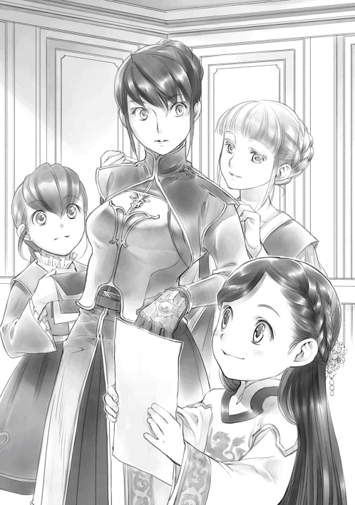
自分だけではなく、同じような体つきの女性騎士が着られる衣装として、ブリギッテはわたしの提案を受け入れてくれた。
「コリンナ、トゥーリ。ブリギッテの採寸 と布や色の取り決めをお願いいたします。ブリギッテ、わたくしから出せるのは大銀貨五枚。アンゲリカが合格すれば小金貨一枚です。それを念頭に置いて、予算を考えて衣装を作ってちょうだい」
コリンナの前に紙とインクを並べて、自由に使ってもらうように伝えると、わたしは小槌 のような魔術具をモニカに渡す。
「モニカ、採寸と話し合いが終わったら、ここをこれで叩いてちょうだい。外の魔石が光ってわかるようになっています。わたくしはベンノ達と話をしてきますから」
「かしこまりました」
ブリギッテの採寸をコリンナとトゥーリに任せると、わたしは隠し部屋から出た。外では教材販売の会計報告を終え、神官達をハッセへと送る段取りについての話し合いもほぼ終わっていた。すでに何度も行き来しているので、打ち合わせもスムーズに終わったようだ。
「ローゼマイン様。先日、ハッセの様子を見てまいりました」
雪解けを機にハッセの様子を見に行ってくれたマルクの説明によると、冬の間にかなり話し合いがされたようで完全に町長派が孤立していたらしい。
「農民にとって祈念式が行われないのは、領主に見放されたのと同じことですからね。新しい神殿長が領主の娘で何とか領主に取り成している、と聞けば、新神殿長派に傾くのは当然のことです」
ハッセ周辺の農民達は町長の浅慮 を責 め、領主の娘である神殿長に取り成しを頼むべきだという意見で固まったらしい。前神殿長がすでに亡くなっていること、カントーナが担当から外れていること、小神殿への攻撃が領主一族への攻撃と見做 されることなどを一度に知らされたハッセの町民は閉ざされた冬の館で大混乱だったようだ。
「どうやら町の者は、小神殿を新しい神殿長が勝手に作った神殿だと思っていたようで、白の建物が領主一族によって作られているということを知らなかったようです。領主に攻撃する意図はなかった、町長に命令された、としきりに言っていました。責任を取る者が必要であることを我々が噂で流しておいたため、町長は小さくなって生きているようですよ」
エーレンフェストでは白の建物は貴族の住まう場所で、決して触れてはならない場所だと誰もが知っているらしい。家から外に出ることがなかったわたしは知らなかったけれど、常識だそうだ。
「わざわざ調べてくれてありがとう、マルク」
「お役に立てて光栄です。責任者を捕うために春になれば正式に領主から命を受けた文官や騎士が来るだろう、と噂を流しておきましたので、彼等はおそらく精神的に追い詰められた気分で過ごしていると思われます」
マルクの黒い笑顔に、忠誠 心も強すぎると怖いと思いながら、わたしはそっと視線を逸らしてフランを見た。フランもまたひんやりとした笑みを浮かべている。
「危険を避けるためにもハッセまでの護衛をまた門の兵士に頼んでほしいと思っています。ルッツ、これを東門の士長に渡してください」
わたしはルッツに護衛依頼の手紙を渡す。トゥーリに渡すことも考えたけれど、皆の前でわたしがトゥーリに護衛の兵士を依頼する手紙を渡すのはおかしいだろう。
「確かに承りました」
その時、隠し部屋の前の魔石が光って、ブリギッテの採寸が終わったことを知らせてくれた。隠し部屋を開けて四人を出す。出てきたブリギッテからどのような布や色を注文したのか、報告を受けながら、ちらりとトゥーリを見た。目が合ってニコリと笑い合うけれど、針子の助手であるトゥーリには声をかける用件がない。わたしは一生懸命に考えてトゥーリに話しかけられる用件を探す。
「これで注文することに決まりました」
「そう、気に入ってもらえてよかったわ。では、コリンナ。珍しい衣装ですから大変でしょうけれど、貴女の腕に期待しています。......それから、トゥーリ」
トゥーリが弾かれたように顔を上げた。わたしはふふっと笑って髪飾りの注文をする。
「ブリギッテの髪の色と衣装の色や雰囲気に合わせた髪飾りを考えてみてください。祈念式から戻った後、コリンナとトゥーリの二人をまた呼びますから」
祈念式前のバタバタした雰囲気ではなく、もっと落ち着いたところでゆっくりと話がしたい。わたしの真意が通じたのか、トゥーリが小さく笑う。その後で木箱を一つ、そっと取り出した。
「ローゼマイン様、春の髪飾りは必要ございませんか？ 祈念式に向かうローゼマイン様のために、冬の間に作ったのですけれど」
「もちろんいただきます」
わたしに否 があろうか。木箱から取り出された髪飾りは、クロッカスによく似た春を告げるレンフールの白い花を黄緑から深緑まで様々な色合いの緑が包み込んでいるデザインだった。
髪飾りをトゥーリに挿してもらい、わたしは軽く頭を揺らした。髪飾りから垂れている蔦 に似た葉っぱの飾りがゆらゆらと揺れる。
「とてもよくお似合いです」
トゥーリが満足そうに笑った。新しい髪飾りとトゥーリの笑顔にわたしも大満足だ。
ハッセへの罰
わたし達が祈念式に出発するより先に、ハッセに向かう神官達がギルベルタ商会の馬車で兵士達に守られて出発する。父さんだけが毎回指名されるのは最初にわざわざ神殿まで迎えに行ったからだ、という話が流れたそうで、今回は護衛の兵士達が神殿の裏門に勢揃いしていた。
「ギュンター、今回もよろしくお願いいたします」
わたしが笑みを深めて声をかけると、父さんは取り繕った真面目な顔で跪く。
「お任せください。何事もなくハッセに皆を送り届けます」
「信頼しています。後日、ハッセでお会いしましょう」
わたしが兵士達にお願いする横では、すっかり仲良くなったらしいマルテとデリアが別れを惜しんでいた。トール達はハッセに戻れるのが嬉しくて堪らないという顔になっている。新しく小神殿に赴任する神官達は、エーレンフェストから出たことがないので緊張気味だった。
ギルベルタ商会の面々と神官達をハッセへ送り出した二日後の朝、わたしやフェルディナンド達の側仕えや料理人を乗せた馬車がハッセの小神殿に向かって出発した。ベンノ達と側仕えの出発に二日のずれがあるのは、ハッセの町長宛ての手紙をベンノに届けてもらうためだ。
手紙には反逆者の処分のためにハッセを訪れる日時が書かれている。この手紙の返事を待つ必要はない。わたしが日付を書き込んだけれど、領主の印章が押された命令書なのだ。
わたしは五の鐘に向けて騎獣でハッセに向かうのだが、手紙はもう届いているだろう。今頃ハッセの者は昼食も喉を通らないような緊張と不安の中にいると思う。罪状を伝えて、町長を断罪 しなければならないわたしも正直気が重い。ハッセのこれからを考えながら、わたしはペンを置いた。書き終えた紙をひとまとめにしてフリッツに差し出す。
「フリッツ、これが冬の絵本の本文です。ヴィルマに渡して、わたくしが祈念式に行っている間にイラストを描いてもらえるように頼んでちょうだい」
フリッツとギルには、夏の半ばにある星結びの儀式までに秋の眷属と冬の眷属の絵本を作るように頼んである。秋の眷属の絵本はイラストもほとんど完成しているので、ほぼ印刷するだけという状態になっているが、冬の眷属の絵本はやっと本文ができたところだ。
朝早くに側仕え達を送り出したわたしの部屋に残っている側仕えは、工房の管理をするフリッツと、騎獣に乗って一緒に行動することになっているフランだ。
二人に加えて、今、わたしの部屋の中には普段工房で働いている灰色神官が数人いる。青色神官に仕えていた経験がある灰色神官ばかり集めて手伝ってもらっているのは、専属料理人をハッセに向けて送り出し、側仕えもほとんどいないフェルディナンドを今日の昼食にお招きしているからだ。
「ねぇ、フラン。料理の方は大丈夫かしら？ フーゴに任せておけば大丈夫だと思うのだけれど」
エラが祈念式に出発してしまった今日の昼食は、ギルド長とフリーダに頼んでフーゴともう一人の助手を借りた。イタリアンレストランの料理人の後継者が育ってきたようで、フーゴは領主の養女であるわたしと繋がりを作りたいと考えたらしく、今日の依頼も二つ返事で承知してくれた。
「慣れない厨房とはいえ、孤児院長室の厨房とそれほど物の配置も違いませんから、問題なく料理をしています。神官長もご満足くださるでしょう」
「エックハルト兄様とユストクスも、ね」
昼食を終えて一休みしてから五の鐘に合わせて騎獣で向かうつもりなので、エックハルトとユストクスを昼食に招く必要はなかった。けれど、ものすごく期待していると述べるオルドナンツが飛んできてしまい、招かざるを得なくなったのだ。
「それよりも、ローゼマイン様。早く書かなければ神官長がいらっしゃいますが......」
フランに指摘されて、わたしはフーゴからフリーダへ届けてもらう手紙を書いていく。フーゴ達を貸してくれたお礼とイタリアンレストランで使えそうな季節のメニューに「祈念式が終わったらまた食べに行きます」と書き添える。封をしてフリッツに渡す。
「出張費を支払う時にフーゴに預けてください。フリーダへ届けてほしいと言付けて」
扉の向こうで来客を知らせるベルが小さく鳴った。神官長のベルだ。フランが扉を開けると、ザームを連れたフェルディナンド、その後ろにエックハルトとユストクスがいる。
「ローゼマイン、昼食を任せてしまってすまぬ」
「いいえ。ハッセまで騎獣で移動したいというわたくしの我儘を聞いてくださったのですもの。神官長には感謝しています」
「我々の分まで準備してもらってすまないな、ローゼマイン」
続いてエックハルトがイイ笑顔で入ってきた。カルステッドと同じくガッツリ食べる健啖家 には少しでいいからすまなそうな顔をしてほしいと思うのは、わたしが狭量 だからだろうか。
久し振りのフーゴの昼食を終えると、フランが入れてくれたお茶を飲みながら、これから向かうハッセについての話し合いである。エックハルトとユストクスにハッセの現状を説明しなければならない。フェルディナンドに差し出された盗聴防止の魔術具を皆が手にしたことを確認して、わたしは話を始める。領地に印刷業を広げ、わたしが出入りしやすいように神殿付きの孤児院兼工房が欲しい、と言ったのが全ての始まりだった。
「わたくしは無知だったのです」
あの当時、わたしは洗礼式直後で、まだ貴族についてほとんど何も知らなかった。だから、下町の建築関係の工房に頼んで、孤児院や工房を建ててもらうつもりだった。実際、孤児院と工房だけならば下町に頼んでも問題はなかったのだ。けれど、わたしは神殿が欲しいと言ってしまった。神殿は貴族の血を引く青色神官が出入りするところなので、この発言の時点で、白の建物を作ることが決定してしまったのだ。
「わたくしが貴族について知っていれば、小神殿が欲しいなどと言いませんでしたし、食事にお招きした席でそのような要求を口にはしなかったでしょう」
「ジルヴェスターも料理に満足して気が大きくなっていなければ、すぐさま飛び出すようなことはなかっただろう。私もローゼマインが貴族の常識を知らぬことをよく考えるべきだったのだ」
いつもならばわたしやジルヴェスターを止めるはずのフェルディナンドでさえ、わたしが料理でジルヴェスターやフェルディナンドを持て成して、自分に有利な立場で要求を通そうとしていると考えた。「ローゼマインもずいぶんと貴族らしいことができるようになったものだ」とフェルディナンドは内心喜んでいたらしいので、意識と常識のすれ違いとは恐ろしいものである。
「結果として、その日のうちにハッセに小神殿が建ってしまいました」
驚きの裏事情に目を見張るエックハルトと違って、ユストクスは楽しそうに目を輝かせた。
「ほほぉ。真実とは、常に驚きに満ちていますね。だからこそ、情報を得るのは面白い。それで、どのような問題が起こったのです？ さぁ、教えてください」
下町の職人達を総動員してハッセの小神殿を人が住めるように整え、孤児達を迎えに行くことになった。孤児を引き取ろうとしたのも、最初は面倒を見ているハッセの負担が減るだろうと考えていたからだし、可哀想な扱いの孤児達を助けてあげるつもりだった。
「売られそうな女の子とその兄弟を助けてあげることはできました。けれど、わたくしの行動でハッセの町は窮地 に陥 りました。わたくしはハッセの孤児達が共有財産のような扱いになっていることを、ギルベルタ商会の者に指摘されるまで知らなかったのです」
「孤児の扱いなんて知らなくて当然ではありませんか？ エーレンフェストでは洗礼式を終えた子は職場が面倒を見るものだそうですから」
ユストクスの言葉にエックハルトが「そうなのか」と呟く。エーレンフェストの平民の孤児の扱いを知っているユストクスは、どう考えても普通の貴族ではない。
「神殿のことならば、前神殿長に頼めば何とかなると思ったのでしょう。町長は強力な後ろ盾があると信じ込んで、女の子達を取り戻そうと小神殿に攻撃を仕掛けてきました」
「待て！ 小神殿はフェルディナンド様の造られた白の建物ではないか！」
エックハルトが目を剥いて声を荒げる。わたしはコクリと頷いた。貴族の住まう白の建物は領主の許可を得た領主一族にしか建設できない物で、それに攻撃を仕掛けることは領主一族への攻撃と見做される。わたしも知らなかったけれど、知らなかったではすまない。
「小神殿の守りにより何の被害もありませんでしたが、ハッセは反逆者の町となりました」
「すぐに討伐を！」
いきなりシュタープを取り出したエックハルトをフェルディナンドが溜息一つで止める。
「エックハルト、落ち着け。ハッセはローゼマインの教材だ。勝手に壊されると困る」
「......教材ですか？」
「あぁ、そうだ。反逆の罪を犯したハッセはどのようになっても構わぬ町だ。ローゼマインが人を動かすことを覚えるため、自分の望んだ結末を得るため、犯罪者を裁くことを知るため、そして、自分の行動がどのような影響を及ぼすのか考えるための教材として扱っている。ローゼマインがハッセを消すのは嫌だと言うから、消さずに済むように反町長派を作り、反逆者である町長を孤立させるという課題を出した。今回はその町長とその一派を処分するのだ。手を出すことは許さぬ」
フッと笑ったフェルディナンドの言葉にエックハルトが不可解そうな顔でわたしを見た。
「白の建物に攻撃を加えるような平民はただの害悪ではないか。取り除くのが正しいであろう？ ローゼマインは一体何が嫌なのだ？」
エックハルトの言葉からもわかるように、わたしと貴族では常識が全く違う。うーん、とわたしは首を捻 りつつ、共感してもらえるとは思えないけれど自分の常識を述べてみた。
「わたくしの知る常識では領主は民を守るためにいるのです。自分達が守るべき町の一つを、多くの民を簡単に消してしまうという考え方はどうにも理解できません。二度と取り戻すことのできない命を消すよりも、反省させ、生かした方が良いではありませんか」
「生かす？ 一体何のために？」
本気で理解できないと言うようにエックハルトはぐっときつく眉を寄せる。
「貴族にとって平民は税の担い手なのでしょう？ でしたら、税を納めてもらえば良いと思ったのです。わたくしが養父様に提案したハッセへの罰は十年間の増税です」
「......ふぅむ。平民と貴族では根本が全く違うのだな」
わたしが兵士の娘だったことを知っているエックハルトは、考え方の違いを貴族と平民の常識の違いだと思ったようで、ゆっくりと顎を撫でながら納得の声を出す。
「確かにローゼマインの言う通り、領主は民を守っている。魔力を満たし、生きる場所を与えているのだからな。税を納めることで平民を領民と認め、居住を許可しているが、守るべきは従順 な民だけだ。領主の恩恵も知らぬ反逆者など、生かしておく必要もないではないか」
領主は魔力を与えて土地を活性化させて、人が生きるための環境を作り、保っている。領地に住んで領主や貴族の魔力の恩恵を受けておきながら反逆の罪を犯す平民は消されても当然らしい。
「ですが、ハッセ周辺の農村の者を含めれば千人以上の住民がいます。直接関わっていない農村の者を除外するにしても、ハッセの町民だけでも二百人近くいるのです。ハッセを潰してしまえば、税収が減って、結局領主も貴族も困るのではありませんか？」
人情で攻めても無駄だし、階級による常識の違いも通じるわけがない。だからこそ、税収という方向で攻めてみる。しかし、わたしの言葉は全く効果がなかった。
「今は困らぬ」
「大して困らないと思います」
フェルディナンドとユストクスから即座に返されて、わたしの方が目を瞬いた。眉間に深い皺を刻みながら、フェルディナンドが不愉快そうに口を開く。
「貴族が不足し、神官が不足し、土地を満たす魔力が全体的に足りていない。今存在する者を生かすために、ギリギリまで魔力を薄めている状態だ。君が神殿に入って各地を回る祈念式を行うことで魔力にほんの少し余裕ができたが、魔力を供給する貴族に対して消費する平民の方がまだ多い。町の一つ分、減ったところで痛くも痒くもない。むしろ、助かる」
「ちょ、ちょっと待ってください！」
思いもしなかった言葉にわたしが思わず立ち上がると、フェルディナンドは「急に立ち上がるのではない。はしたない」と注意した後、じろりとわたしを睨んだ。
「私は君の言葉を聞き入れて、無礼で愚 かな町長をその場で処分することもなく、町長以外の町民をなるべく助けたいという君にとっての最適解 が出るように、こうして待っているではないか」
フェルディナンドのことを意地悪だとか、鬼畜 だとか、色々思っていたけれど、どうやら、わたしはフェルディナンドから最大限の譲歩 をされていたらしい。しかし、そのフェルディナンドの姿が煮えきらないように思えたのか、エックハルトは不満そうにわたしを睨んだ。
「ローゼマイン、恩恵を受けておきながら、領主一族に武器を向けるような愚か者はいない方が良い。面倒な真似をして残さなくても、さっさと消してしまえば良いではないか」
「いや、エックハルト。私は姫様の細く長く搾り取るという案に賛成だ。税金を納められる年頃に育つまでには時間がかかるから、平民が減りすぎても困る。平民はちょっとした病気が流行ればすぐに死ぬのだぞ。ある程度の予備は必要だ」
徴税官をしているユストクスらしい意見に、わたしは肩を落とした。やはり、貴族の考え方にはどうにも馴染めない。
「そろそろハッセに向かうとしよう。今回は町長派を反逆者として処分する。ローゼマインの策がどれほどの人間を動かしたのか見せてもらおう。君の望み通り、反町長派が増えていると良いが」
フェルディナンドが唇の端を上げる。キリキリと心臓が締め付けられる気がした。
神殿の正面玄関に騎獣を出す。わたしのレッサーバスに乗るのはフランとザームだ。それと、護衛のためにブリギッテが助手席に乗る。助手席はブリギッテの指定席となっていた。
「姫様、こちらの荷物を姫様の騎獣に置かせていただいてよろしいですか？」
ユストクスが大きな箱を灰色神官に運ばせてくる。厳重 に鍵がかけられている大きな箱だ。大人の男ならば何とか一人で運べるくらいの大きさで、わたしにはちょうどいい椅子の大きさだ。
騎獣で運ぶには難しい大きさなので、わたしはすぐに了承する。
「えぇ、構いません。どうぞ」
灰色神官が運んできた箱をフランとザームがレッサーバスに乗せる。わたしがレッサーバスに乗り込もうとしたところで、ユストクスがニコリと笑った。
「私もこの騎獣に乗せてください、ローゼマイン姫様」
「ユストクス！」
即座にフェルディナンドの雷が落ちた。収穫祭の時と同じ展開になった。もしかしてユストクスは学習能力がないのか、とわたしが少し項垂れた直後、ユストクスがフッと笑みを深めた。
「この箱の管理者は私ですから、離れるわけにはまいりません。フェルディナンド様もこれの重要性はご存知でしょう？ 文官が離れても構わないとおっしゃいますか？」
どうだ、と言わんばかりに胸を張るユストクスと、怒鳴りつけたいのを堪えて凶悪 な顔になったフェルディナンドがしばし睨み合う。十秒後、フェルディナンドがわたしに視線を向けた。
「ローゼマイン、くれぐれもユストクスの話には耳を貸すな。気を取られて落ちるぞ」
「フェルディナンド様のお許しが出ました。さぁ、乗せてください、姫様」
「え？ え？ 今のは、お許し、だったのですか？」
まごつくわたしに背を向けて、さっさと自分の騎獣を出したフェルディナンドと、「さぁ、さぁ」と催促 するユストクスを見比べて、わたしは仕方なくレッサーバスの入り口を開ける。
「フラン、シートベルトの締め方を教えて差し上げてください」
「かしこまりました」
はしゃぐユストクスをレッサーバスに乗せて出発したけれど、「姫様、これは何ですか？ どのように使うのですか？」と質問に質問を重ねるユストクスがうるさい。最初は丁寧に相手をしていたけれど、フェルディナンドが「気を取られて落ちる」と言った発言が本当になりそうで怖い。
「ユストクス、気が散ります。本当に黙ってくださいませ」
「姫様、では、最後の質問です。どのようにしてこの騎獣を作ったのですか？」
「どのように、と言われても......。こういう物だと思って作ったので説明は難しいです」
「それは残念です。同じような物が欲しかったのですが......」
ハッセまでの空のドライブはそれほどの時間は必要ない。わたし達はほどなくハッセに到着した。
収穫祭の時と同じように広場に降り立とうとすると、ザッと人々がその場を退いて場所を空けてくれる。収穫祭の時と違って、場所を空けると同時に皆が跪いた。深く頭を垂れているその横顔は、どれもこれも沈痛 なものばかりだった。子供達もその雰囲気を察しているようで、騒いでいる子供はいない。不安そうな顔で親にしがみついているか、大人と同じように跪いている。
現状を皆が認識しているのだろうとわかる重い雰囲気に、わたしはきゅっと唇を引き結んだ。本当に町長だけの処分で終わるだろうか。先を歩くフェルディナンドを見上げてみるけれど、フェルディナンドの真意はつかめない。
「......ギルベルタ商会から手紙を預かり、お待ちしておりました」
舞台の上にはリヒトを中心に、おそらく周辺の農村の村長と思われる数人が跪いて待ち構えていた。町長が断罪されることになり、リヒトが代表として冬の館を取りまとめたのだと思われる。町長ではなく、リヒトが代表として挨拶を始めた。
「神殿長、神官長。ようこそハッセにお越しくださいました。水の女神フリュートレーネの巡り合わせに心からの感謝を捧げます」
貴族に向けた丁寧な挨拶を受け、わたし達は軽く頷いた。跪いたリヒトが顔を上げると、わたしと目が合う高さになる。
「神殿長、その、ハッセは......」
「ごめんなさい、リヒト。ハッセの処分はお手紙に書いた通りです。わたくしがいくら養父様にお願いしても、それだけは変わりません」
わたしはリヒトにそう言うと、広場に集まる民に向かって呼びかける。フェシュピール演奏会の時に使った、声を増幅させる魔術具を持って。
「ハッセの皆様、小神殿への攻撃は領主一族への反逆罪です。わたくしがいくら養父様にお願いしても、それだけは変わりません。反逆罪は貴族であっても処罰を受けるほどの重罪です。町長の指示による襲撃であり、多くの町民が参加したハッセの場合は、領主に敵意を抱く危険な町として、町を丸ごと潰されるくらいの罪なのです」
ざわりと広場がざわめく。「町長は何てことをしたんだ」「農村の俺達には全く関係がないじゃないか」「完全なとばっちりだ」と恨めしそうな声が目の前から聞こえてくる。
「けれど、ここには普段農村で過ごす農民もいます。町長に脅 されたり、騙 されたりした方もいるでしょう。わたくしは、連帯責任でハッセを丸ごと潰すというのはお考え直しくださいと、精一杯お願いし、処罰の内容は考え直していただきました」
おぉ、と驚愕の声が上がり、皆の顔色が喜色に塗り替えられていく。わたしは期待度が膨れ上がる前に急いで付け足した。
「内容を考え直していただいただけです。何の罰もないわけではございません。ハッセへの罰は、今年の祈念式への神官の派遣の禁止と十年間の増税です。住民達の命を救うことはできましたが、ハッセに課せられた罰は決して軽くありません。力の及ばなかったわたくしを許してください」
喜びの声が湧き上がる。胸を撫で下ろしたり、抱き合って喜んだりしている民の姿が見える。
「連帯責任を免 れることができただけでも十分です。ありがとうございます、神殿長」
広場が盛り上がる中、フェルディナンドが静かに進み出て、わたしの手から声を増幅させる魔術具を取り上げた。その魔術具を手に、冷ややかな声を出す。
「反逆者を出せ。処分する」
広場が一瞬で静まった。ゴクリと息を呑む音が聞こえるほどの静寂 がその場を支配する。リヒトが一度きつく目を閉じ、「かしこまりました」と頷いた。
選別の扉
フェルディナンドの言葉にリヒトが「御前、失礼いたします」と言って、一度退場していく。
数人の男達に脇を固められる形で町長が舞台の上へ連れてこられた。やつれているし、ボロボロの服をまとっているので哀れな様子に見えるけれど、平民ならば普通の格好だ。動きが何だかよろよろとしているけれど、殴られたり、蹴られたりした傷はパッと見た感じでは見当たらない。冬の間、それほどひどい扱いはされていなかったようだ。
わたしの前に跪かされた町長が少しだけ顔を上げて、ほんの一瞬わたしを見て、再び顔を伏せる。そのほんの一瞬に見せた目が、妙にぎらついていた。わずかに細められた目からは明確な侮 りを感じる。慈悲深いと言われている幼い子供ならば、どうにでも言い包 められるという感じの嘲 りが視線に含まれていた。
......前のわたしなら、町長の侮った視線に気付かなかったね。
ここ一年くらい貴族社会で揉 まれて、表情変化の少ないフェルディナンドや、穏やかな笑顔で本心を悟らせないフロレンツィアの顔色を少しでも読み取れるように見ていたことで、多少なりとも成長しているようだ。こんなことで成長を実感するのはあまり嬉しいことではないが、気付かないままに流すことにならなくてよかったとは思う。
「神殿長、私は知らなかったのです」
顔を伏せたまま、町長が悲痛な声を出して自己弁護を始めた。小神殿を攻撃することが反逆罪になるとは知らなかった、と長々語る。全く知らなかったというのは嘘だ。収穫祭の時にフランがリヒトに小神殿の襲撃についての話をすると、リヒトは顔色を変えたと言った。補佐する立場だったリヒトが知っていることを町長が知らないはずがない。前神殿長に揉み消してもらうつもりだっただけだ。「まずいことだ」と知っているから町長はリヒトの不在時に襲撃したのだ。
わたしは知らず知らずのうちに不快感が募っていくのを感じていた。おそらくわたしの一歩後ろでフェルディナンドはもっと凶悪な顔になっていると思う。首筋がぞわぞわとする。
「しきりに知らなかったと言うが、それが何だ？」
フェルディナンドが町長の自己弁護をバッサリと切り捨てた。町長は上を見上げてうっと一瞬言葉に詰まった後、フェルディナンドよりもわたしの方が取り込みやすいと考えたのか、視線をわたしに固定した。フェルディナンドの方を見ようとせずに、わたしに向かって言葉を重ねる。
「ハッセを窮地から救ってくださったお優しい神殿長、全ては、ただただ町を守るためであったのです。無知であったことは重々承知の上ですが、どうか私の行動にお慈悲を......」
町長は一応人をまとめる立場にいただけあって、声の発声や民を動かす言葉選びを知っているのだろう。広場の人々も「神殿長、できればお慈悲を」と嘆願 し始めた。
......まずいな。
そう思った。わたしは、できることならば町長一人の犠牲で他のハッセの民を全て救いたいのだ。下手に町長の味方をする者が増えたら、処分対象が増えてしまう。
「貴女は孤児にさえ憐 れみの心を向けるではありませんか！」
町長はそこからわたしがハッセの孤児を憐れみ、慈悲の心を向けたことをつらつらと語り、孤児に向ける慈悲を自分にも向けてほしいと懇願 し始めた。リヒトが「もう黙れ」と言いたげな顔で、町長に向かってわずかに体を動かす。町長を止めるのかと思ったけれど、リヒトが上を見上げて真っ青な顔になり、その手を止めた。多分、フェルディナンドに睨まれたのだと思う。
次の瞬間、誰かの指先に軽く背中を叩かれた。すいっと振り返って見上げると、フェルディナンドの目が冴 え冴 えと厳しい光を放ちつつ、口元だけを笑みの形に歪めている。「さっさと終わらせろ」という無言の圧力がかかってきて、わたしはひくっと口元を引きつらせた。
......さて、どうしよう？
わたしは先程作り上げた聖女らしさを残しつつ、町長を処分するのが妥当だという方向に持っていかなければならない。口だけでなく、手振り身振りを加えて訴え始めた町長をしばらく見つめ、わたしはそっと視線を伏せた。
「......町長、わたくしの慈悲を、とおっしゃいますけれど、貴方は日常的に孤児達へ暴力を振るっていらっしゃいましたよね？ わたくしが引き取った時、トールもリックも傷だらけでした」
売り物にする予定だったノーラやマルテは比較的栄養状態も良かったけれど、トールとリックは栄養状態も悪く、日常的に暴力を受けている傷やあざがいたるところにあった。「弱者に暴力を振るう貴方に、わたくしの慈悲が必要でしょうか？」と問いかけると、町長は目に見えて焦り始めた。何とか丸め込み、わたしから譲歩を引き出そうと躍起 になって言葉を重ねてくる。
「あれは、その、仕置きです。悪いことをしなければ、私もそのようなことはいたしません。悪いことをすれば罰を受けるものでしょう」
「暴力を振るって仕置きしなければならないような悪いことが、わたくしにはよくわからないのです。......例えば、トールやリックが貴方の家族に攻撃を仕掛けるのは悪いことになるのですか？」
わたしが頬に手を当てて、殊更おっとりと首を傾げてみると、世間知らずの子供を言い包めようと、揉み手をするような勢いで町長が何度も頷いた。じりじりと膝でいざり寄りながら、訴えてくるギラギラとした目が少し怖い。
「それは明らかに悪いことです。孤児が私の家族に暴力を振るえば、一体何をしているのか、と怒りますし、暴力を振るって罰を与えるのは当然のことです。誰も私を責めませんし、孤児達には養われているという自分の立場をわからせなければなりません」
町長の向こうでリヒトがきつく目を閉じて、ガックリと項垂れた。リヒトの周囲に跪いたままの農村の村長達も苦い顔になっている。わたしは真っ直ぐに町長を見たまま、最後の問いかけをした。
「それは、二人が、貴方の家族だとは知らなかったと言っても、ですか？」
「二人が私の家族を知らぬはずがありません。そのような嘘は通用いたしませんよ」
わたしはゆっくりと息を吐き、「残念です」と呟きながら、フェルディナンドを振り返るようにして見上げた。
「神官長、これが町長の言い分です」
冷たい笑みで目を細め、唇の端を上げたフェルディナンドが「なるほど。よくわかった」と言いながら一歩前に出て、わたしと並んだ。フェルディナンドが一歩前に出たことで、わたしは逆に一歩下がって、発言権をフェルディナンドに譲る。
「其方の言い分によると、領主が、娘である神殿長のために作った小神殿に攻撃を仕掛けた者を罰するのは当然だということだな。白の建物は貴族の住まうところで、領主の力によって作られる物。それを知らぬ者はおらぬ」
「いえ、私は本当に知らなくて......」
相手をするのがフェルディナンドだとわかった途端、町長は後ずさりを始めた。顔色が悪くなっていて、先程のような饒舌 さはなくなっている。一歩下がったわたしに、視線を向けて必死で助けを求めているが、わたしはそれに応えない。じりじりと下がる町長を、フェルディナンドは一歩動いて更に追い詰める。
「町長という、貴族と接するはずの立場にいて知らぬはずがないのだ。其方が知らなかったのは、自分達の罪を隠し、取り繕ってくれるはずの前神殿長が亡くなってしまったということだけだ。其方は知っていて、町の者に小神殿を襲わせた」
ぎょっとしたように町長が目を見開いた。「そんなことは......」と言い逃れようとするけれど、町長の助命を嘆願していた広場の人達の目が冷たいものになっている。もしかすると、ハッセの者には「知らなかった」としか言っていなかったのだろうか。
「まぁ、知っていようといなかろうと関係はない。ハッセの民が行ったのは、領主一族への攻撃であり、反逆。それは罰せられるべきであり、罰を決めた領主を責めることは誰もしない。平民は貴族に養われ、生かされている存在だと叩き込まねばならぬ。其方の言い分の通りだ」
「ですが......」
「嘘で固められた言い訳は聞くに堪えぬ。これ以上口を開くな」
ぴしゃりと反論を封じると、フェルディナンドはくるりと振り向いてわたしの隣まで戻る。そして、今度は町長を見下ろしていた厳しい眼差しのまま、わたしをじろりと見下ろした。
「ローゼマイン」
怒られる、と察したわたしは背筋を伸ばして顎を引く。そんなわたしを見て、わざとらしいほどの溜息を吐き、フェルディナンドは悪役にピッタリの顔でひやりとするような声を出した。
「君はハッセの民が己のしでかした事の重大さを理解し、深く反省していると領主に減刑を懇願した。......けれど、全く理解しているようには見えぬ」
フェルディナンドの視線が、わたしから町長へ向けられ、最終的には広場全体へ巡らされていく。フェルディナンドの視線を受けると同時に、皆が口を引き結んで黙り込む。
「ローゼマイン、ハッセの者にエーレンフェストの聖女と呼ばれる君の慈悲が必要か？」
わたしが発表した連帯責任の軽減さえ、簡単に取り消されそうな雰囲気に広場が凍りつき、水を打ったように静まり返った。次にフェルディナンドが何を言うのか、誰もが身動きするのさえ躊躇うほどの重い沈黙がその場を支配する。息を呑むことさえ困難に思えるほどの重圧感を覚える雰囲気の中、ぐぐっとリヒトが重い頭を持ち上げるようにゆっくりと顔を上げた。
「神官長、神殿長。できれば、私の発言をお許しください」
震える声で許可を求めるリヒトの顔色は真っ青になっている。緊張のあまりの脂汗だろうか。髪の生え際がじっとりしているように見えた。
「許す」
フェルディナンドの許可に「恐れ入ります」と礼を述べ、リヒトが口を開いた。
「神官長、町長に命じられて我々が犯してしまった事の重大さは、住民一同よく理解しております。本来ならば、町ごと消されていたかもしれなかったところを救ってくださった聖女の慈悲も身に染みています。......その、町長がわかっていなかっただけで、住民はよくわかっているのです」
リヒトがフェルディナンドの圧力に震えながら、必死にハッセの民を庇う。その様子にジーンと胸を打たれていたわたしはトンと背中を押された。隣に立ち、同じようにリヒトを真面目な顔で見下ろしているフェルディナンドを見上げると、「君の役は何だ？」と問うような視線が降ってくる。
......そうだ。わたし、聖女だった。
リヒトの言動に感動している場合ではない。わたしはくるりと身を翻し、フェルディナンドに対抗するように向かい合うと、急いでリヒトをフェルディナンドから庇うように両手を広げた。
「神官長、リヒトもこう申しております。住民はわかっているはずです」
「......神殿長」
ものすごく感動したような声が背後のリヒトや村長達と広場の両方から上がった。尊敬と感動の視線に罪悪感を刺激される。居た堪れない。「わたしには聖女の役なんて無理」と叫んで、この場から逃げ出したい。しかし、魔王のような顔をしたフェルディナンドと向き合いながら、逃げ出すわけにはいかない。これはわたしの課題でもあるのだから。
向き合うわたしにフェルディナンドはゆっくりと首を振った。
「ローゼマイン、優しさは時に甘さとなる。反逆の芽は早々に摘 んでおきなさい」
「神官長、ハッセの民は反逆など考えていません。大丈夫です。そうですよね、皆様？」
わたしが振り返るようにして、背後のリヒト達や広場の者に呼びかけると、「もちろんです」とすぐさまリヒトの声が上がった。広場からも賛同の声が上がり、わぁっと声が湧き上がってくる。
「皆、このように申しております。ですから......」
このまま話を丸く収めようとした瞬間、フェルディナンドがすぅっと右手を肩の高さに上げる。
「では、それを証明してもらおう」
「え？」
......すみません。展開が読めません。わたし、何をすればいいですか？
どうすれば正解なのかわからなくて、内心おろおろしながらフェルディナンドを見上げると、フェルディナンドはシュタープを取り出した。
「この際、反逆の芽は徹底的に摘んでおく」
そう宣言したフェルディナンドが「ゲッティルト」と呟き、シュタープを大きく動かす。
舞台のすぐ下、広場では一番前に当たる居場所に、向こうが透けて見える琥珀 が出現した。
......シュツェーリアの盾？
自分が祈って作るシュツェーリアの盾と同じ模様が付いている。ただ、わたしが作り出すシュツェーリアの盾は円いけれど、フェルディナンドが出した物は厚みのない薄い四角で、ちょうど大人が二人ほど並んで通れるくらいの扉のように見えた。
「これを潜 り抜けよ。真実反省しているならば、この選別の扉を潜り抜けられるはずだ」
リヒトが困惑したように視線をわたしに向ける。シュツェーリアの盾ならば、害意や悪意を抱いていなければ通れるはずだ。わたしはリヒトの目を見て、一度ゆっくりと頷いた。
「リヒトならば大丈夫です」
わたしの言葉に、リヒトは目に強い光を浮かべながら足を踏み出した。舞台を降り、琥珀の四角形の前に立つ。
少し遠巻きにしながらも、一体何がどうなるのか、と固唾 を呑んで見守っている広場の者達の前でリヒトは盾に向かって歩き出す。怖々とした表情だったが、何事もなくスッと通り過ぎた。
「ほら、神官長。大丈夫でしょう？」
「ふむ、リヒトは信用できそうだが、これはどうか？」
フェルディナンドはそう言って、冷ややかな目で町長を見下ろす。リヒトは町長を村長達と数人がかりで舞台下へと連れて行き、選別の扉を通そうとした。
「うわっ!? 」
わたしにとっては予想通りだったが、町長は通り抜けられず、強い風によって弾き飛ばされた。次の瞬間、エックハルトのシュタープから出た光の帯が町長を縛り上げる。
「フェルディナンド様、反逆者を捕獲いたしました」
「ご苦労」
広場に集まった人々が息を呑んだ音が聞こえた。リヒトが通り抜けられたけれど、町長は通れなかった選別の扉を怖々とした目で見つめる。おそらく小神殿を襲った町民達には、同じような力が働いていることがわかったはずだ。明らかに顔色の悪い者もいる。
「リヒト、ハッセの民、全員に潜らせろ。この際、危険人物は全て処分する」
「神官長」
そこまでしなくても、とわたしがフェルディナンドの袖を軽く引いたけれど、フェルディナンドは厳しい目で広場に集う者と光の帯に拘束されて転がっている町長を見比べた。
「......この中にどれだけあのような者がいるかわからぬ。ハッセ全員をまとめて処分したくないならば選別は必要だろう？」
「わ、わたくしはハッセの民を信じています。選別など......」
必要ありません、と言うより先にフェルディナンドがニヤリと笑う。
「ならば、選別されたところで問題なかろう」
畳 みかけるフェルディナンドに反論できず、わたしは「問題ありません。ねぇ、リヒト？」と丸投げするしかできない。けれど、リヒトは拒否するどころか、笑顔で選別を受け入れた。
「はい、神殿長。何も問題ございません。......仮に、町長と同じように弾かれる者がいれば、排除しなければ、その者のためにハッセはまた窮地に陥るかもしれません。我々はこれ以上、領主から疑いの目を向けられるわけにはいかないのです」
反逆に繋がるかもしれない危険人物を選別することにリヒトは何の忌避感も示さなかった。これ以上、領主一族の不興を買うわけにはいかない。ハッセ全体が潰されることは回避しなければならないと、むしろ、乗り気だった。
「エーレンフェストの聖女の慈悲を受けられる者の選別だ。この通り、私は潜り抜けた。反逆者として処分されたくなければ、これを潜り抜けるのだ！」
リヒトはそう言って、広場に集う者全員に選別の扉を潜らせていく。村長を初めとした農村単位で通っていくのだが、農村の者は町長からの影響も少なければ、襲撃に関わっているわけでもないので、呆気 ないほどに何事もなく通り過ぎていった。問題は小神殿の襲撃に参加した町民だった。町長と同じように弾かれるのではないか、と選別の門を潜るのを躊躇う者がいたのだ。
「通らなくても問題ない。町長と同じように縛り上げておけ」
「はっ！」
フェルディナンドの言葉にエックハルトがシュタープを取り出す。それを見て、悲鳴を上げながら慌てた様子で町民達は選別の門へと駆け出した。
「あわっ!? 」
「ぎゃあっ!? 」
皆が通り過ぎる中、数人が門に弾かれた。すぐさまエックハルトの光の帯が彼等を拘束する。
全員が選別を受けた後、選別の扉は消され、拘束された六人が舞台の上へ連れてこられた。
処分
「門に弾かれた者は我等に害意を抱く者だ。この場で処分する」
「構いません。彼等は根強い町長派でした。弁護のしようもございません。むしろ、選別の扉により、我々の潔白 を証明してくださった神官長に感謝しております」
リヒトはそう言って、フェルディナンドとわたしの前に跪いた。
わたしの心臓がドクンと音を立てた。ここでこれから処分が行われるという現実に、血の気が引いていく。フェルディナンドは最初から町長を処分すると言っていたから、処分が行われるのはわかっていたことだ。それでも、心臓が嫌な音を立てていて、背中を冷たい汗が伝う。
「ローゼマイン、きちんと見ておけ」
「......はい」
リヒトはもちろん、広場に集った者も、自分達を窮地に陥れた者の処分に何も感じていないように見えた。何も感じていないのではない。嫌悪感や忌避感が見られないと言った方が正しいだろうか。反逆者の汚名を被 る羽目になった被害者と加害者という図で、加害者が処分されるのは当然だというような雰囲気になっている。
「ユストクス」
「かしこまりました、フェルディナンド様」
フェルディナンドに指名されたユストクスが舞台に持ち込んでいた大きな箱へと手を伸ばし、カチリと音を立てて鍵を開けた。パタリと側面が前に倒れてきたことで箱の中が見えた。まるで書類ケースのように浅い引き出しが五段ほどあるように見える。けれど、引き出しの中に何が入っているのか、わたしの位置からでは見えない。
「神官長、あの箱は何ですか？」
「ハッセの登録証が入っている」
登録証というのは、洗礼式の時に血判 を押して領民登録するメダルのことらしい。エーレンフェストの平民の分は、登録も婚姻も葬式による削除も全て神殿が請け負っているので神殿に保管されているけれど、それ以外の直轄地では秋の収穫祭で全ての登録を行い、町長から削除の連絡を受ける。神官と徴税官 からの報告に従って、城で文官が登録証の処理を行っているのだそうだ。
「今日はどれだけの処分が行われるかわからなかったのでハッセに全て持ち込んだが、本来は城から出す物ではない」
......役所から戸籍簿 を持ち出しているようなものかな？
であれば、管理する文官が側を離れるわけにいかないし、厳重に守らなければならないだろう。
ユストクスはするりと一枚の紙を取り出すと、エックハルトに声をかけた。
「エックハルト、誰も近付けぬようにしっかり見張っていてくれ」
ユストクスに頼まれたエックハルトがシュタープを取り出し、剣の形へと変化させて構える。近付く者は切り捨てる、というような構えに、その箱がどれほど重要な物なのかがわかる。
「始めろ、ユストクス」
「かしこまりました、フェルディナンド様」
ユストクスがシュタープを握ると、「メッサー」と唱えた。シュタープがナイフの形に変わる。そのナイフと一枚の紙を手に、反逆者となった者の前に進み出た。
光の帯に巻かれたまま、舞台に転がっている反逆者がユストクスの動きを注視する。近付いてくるユストクスの足の動きを見て、恐怖に引きつった顔で小さく「助けてくれ」と掠 れた声を漏らした。しかし、その声に応える者はなく、スタスタと歩いたユストクスが一番手前に転がっている男の側にナイフを持って「血判を押させてもらう」としゃがみ込む。
ユストクスは光の帯からわずかに出ている男の指にナイフを押し当てると、スッと軽く動かして傷を付けた。膨れ上がる血を見ながら、持っていた紙に押し付ける。べったりと赤い丸が付いた。
......痛い、痛い！
他人の指とはいえ、ナイフで切られて血を流すところを見ると、自分の指が痛い気がしてくる。わたしは自分の指を押さえながら、なるべく赤い血を意識しなくて済むように、少し焦点 をずらす。
指紋の付いた血判がしっかりと押されたことを確認すると、ユストクスは軽い動作でブンと一度ナイフを振った。ナイフにわずかに付いていた赤い筋が消えている気がする。
......ナイフが、綺麗になった？
ユストクスは一度血判を押した紙を、確認させるように広場に向かって見せる。わっと広場で声が上がり、フェルディナンドが一度頷いた。ユストクスはその隣に転がる男のところへと向かい、同じように血判を押していく。そして、また広場に向かって見せる。その繰り返しだ。
「神官長、ユストクスは一体何をしているのですか？」
「登録証の選別を行うのだ。登録証を扱うのは神官か文官の役目だからな」
洗礼式を受けた年の順に並べられている登録証は、貴族の分は魔力の登録がされているけれど、平民の登録は血だけで登録されている。それはマインの洗礼式で登録したので覚えている。白くて平べったい石のような登録証に血を押し付けるだけだ。名前も聞かれなかったので、登録証には当然書かれていない。洗礼式を受けた年代順に保管されているらしいけれど、それではどれが誰の分なのかわからない。そのため、登録証の選別もまた、基本的に血で行うらしい。例えば、葬式の時も死体の上に登録証を置いて、本人の登録証で間違いないのか確認するそうだ。わたしはマインの葬式に必要になる登録証を探すために、フェルディナンドに血を取られたらしい。
......倒れて意識がなかったから、わたしは知らなかったけどね。
エーレンフェスト以外で行われる葬式の時は死者の血を木札に取っておいて、秋の収穫祭で文官に報告される。文官は木札を徴税の品物と一緒に城に送り、それぞれの登録証が引っ付いた木札が送り返されてくるそうだ。それを墓標に付けるらしい。
登録証の説明を聞いているうちに、ユストクスは最後の一人のところへ向かっていた。
「こんなことになるなんて......」
反逆者となった六人の内、最後の一人は女性だった。町長の奥さんが光の帯に縛られていて、涙を流しながら敵意を剥き出しにした目をこちらに向けている。
......怖い。
感情を剥き出しにした強い視線で正面から睨み上げられ、ひくりと喉が動いた。二の腕に鳥肌が立って、指先が小さく震える。後ろに下がってフェルディナンドの陰に隠れたい。せめて、視線を逸らしたいと思った。けれど、わたしはフェルディナンドから、この処分を見届けるように、と言われているのだ。目を逸らすことは、してはならない。
グッと奥歯を噛みしめて、わたしは自分の指を組んで、震えないように強く握り込んだ。わたしが奥さんと睨み合っている間に、ユストクスは表情一つ変えずに血判を押させて作業を終える。
全員の血判を取り終えたユストクスが、何やら言いながらナイフを軽く振ってシュタープに戻した。シュタープを振りながら、「アオスヴァール」と唱える。すると、血判を押した紙が契約魔術のような金色の炎に包まれ始め、燃えながらエックハルトが守る箱の上へ飛んでいった。金色の尾を引くように箱の上に飛んだ紙は、光の粉を撒 くように燃えて消える。
直後、誰も触っていないのに、引き出しがガタガタと動き始めた。一番上、二番目、と勝手に引き出しが飛び出したり、戻ったりと不思議な動きをして、中から六個の登録証が飛び出してくる。
「おおぉぉ！」
広場から興奮した声が上がる中、領民としての登録をされている白いメダルのような登録証がヒュンと飛んでユストクスの手の中へ納まる。六つの登録証を手にしたユストクスが、自分の手の中を確認した後、フェルディナンドの前に流れるような足取りで歩いていき跪いた。
「フェルディナンド様、こちらになります」
ユストクスが丁寧に捧げ持っている登録証をフェルディナンドは「ご苦労」と受け取る。その労いの言葉を聞くとユストクスは丁寧に礼をして立ち上がり、すぐさま登録証が入った箱のところへと戻った。丁寧な手つきで厳重に鍵をかけ直し、箱を守るように前に立つ。
「ローゼマイン、ユストクスのところまで下がりなさい」
フェルディナンドが左手で登録証を握り、右手を軽く振ってシュタープを出す。何らかの魔術を行使するつもりであることがわかって、わたしは言われた通りにユストクスの隣に移動した。
舞台の中央にいるのはフェルディナンドだけになった。
周囲との距離を確認するように辺りを見回したフェルディナンドが、するりとシュタープを上げて動かした。魔力がシュタープの先から流れ出し、光のような文字と複雑な模様を描かれていく。
「おぉ、初めてだ......」
隣のユストクスが興奮したような声を出し、茶色の瞳を嬉しそうに輝かせた。目を軽く見張った状態でやや前のめりになり、フェルディナンドの描き出す魔法陣を見つめている。
「ユストクス、何が起こるのですか？」
「領主に反逆した者に対する処刑ですよ、姫様。領主候補生のみに教えられるものなので、行使する時はこうして他の者を側に寄せないのです」
呪文を唱える声が聞こえたり、複雑な模様を描く魔法陣の細かいところが見えたりしないように、周囲に人を寄せ付けず行われるのだ、とユストクスは教えてくれる。
「反逆者を処刑するための魔術があることは知っていても今まで見たことがありませんでした」
領主に反逆するような者は普通いないので、このような処刑が行われるのはとても珍しいそうだ。
「あぁ、フェルディナンド様と担当者に無理を言ってハッセに来てよかった」
拳を握って、万感の籠る声でしみじみと「この処刑が見たかったのだ」という変わり者の言葉に、わたしはユストクスを同行させることにものすごく嫌そうな顔をしたフェルディナンドの心情がよくわかった。そっと一歩ユストクスから離れる。
「姫様もいずれ覚えることになるでしょう。使用する機会があれば、ぜひお声をかけてください」
「......そんな機会がないことを神に祈っておきます」
あっても呼ばないよ、と心の中で呟きながら、わたしはフェルディナンドへと視線を向けた。
舞台の中央でフェルディナンドがシュタープを振る。魔力で描いた魔法陣が完成したのか、黒い靄 が炎のように揺らめきながら魔法陣から出てきた。闇の神に関する魔術なのかもしれない。わたしは魔法陣から出てきた黒い靄が、去年の祈念式で襲撃を受けた時に見た魔力を吸い取る黒い靄に似ていることから、何となく見当を付ける。
魔法陣をじっと見つめたまま、何か唱えているようにフェルディナンドの唇が動いている。黒く揺らめく、不気味な魔法陣にフェルディナンドが登録証を投げ込んだ。魔法陣にピタリとくっつくように登録証が宙に止まり、黒い靄に包み込まれていく。
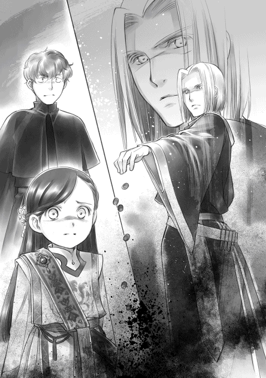
「エックハルト、戒 めを解け！」
「はっ！」
フェルディナンドの声に応えて、エックハルトが時を移さずシュタープを振って、六人を縛り付けていた光の帯を消す。縛りつけていた光の帯が一瞬で消えた。
突然戒めを解かれた彼等の反応は様々だった。何が起こっているのか、わからないように目を瞬いて、そのまま動かなかった者。悲鳴を上げて逃げ出そうとした者。一矢報いようとしたのか、フェルディナンドに向かって駆け出した者......。
「神官長!? 」
ただ一人、舞台の中央に向かって駆け出した町長の奥さんの姿を見て、思わず「危ない」と叫んだわたしに、フェルディナンドは眉一つ、視線一つ動かさなかった。動いた者達を一瞥 もせず、視線は魔法陣に固定されたまま、口を開く。
「案ずるな。問題ない」
彼等が動けたのは、ほんの一瞬のこと。
やにわに立ち上がり、逃げようと動き出した町長も、フェルディナンドに襲い掛かろうとした町長の奥さんも、数歩足を動かしたところでつんのめった。そのままその場にバタリと倒れる。立ち上がろうとしているようだが、腕を動かしてもがいても、足が全く動いていない。
「足が、私の足がっ！」
悲痛な叫びが響いた。「嫌だ」「助けてくれ」「悪かった」と口々に声が上がる。わたしが眉を寄せてよく見てみると、六人の足が薄い灰色に染まっていくのが見えた。最初はお揃いの灰色の靴でも履いているのかと思ったけれど、そうではなかった。足が、衣服の先がどんどんと灰色に染まっていき、それと同時に動く部分が減っていくようだった。
「......まるで足が石になっているように見えるのですけれど」
「おそらくあれが全身に広がるのだと思われます」
わくわくしているという表情を隠しもせずに、ユストクスは食い入るように彼等を見ている。
わたしはとてもそのような楽しい気分にはなれない。時折こちらへと向けられるフェルディナンドの厳しい視線さえなければ、彼等の悲鳴を聞きたくなくて、もがく姿を見たくなくて、すぐにでも耳を塞いで目を閉じていただろう。
黒い靄が炎で燃やすように登録証を蝕 んでいく。まるで紙が燃えるように、白い登録証はじりじりと下の方から形を失っていった。登録証が半分ほど形を失った時には、彼等は腰の辺りまで固まっていた。見る見るうちに胸まで固まり、首の辺りまで固まると声さえ出なくなる。
登録証が完全に形を失った時には、彼等の全身は石像のように固まっていた。すいっとフェルディナンドがシュタープを動かすと、魔法陣がふっと掻き消えた。
次の瞬間、六体の石像が呆気なく崩れ始める。はじめに、ピキリと大きなひびが入った。そこから割れて、ゴトリと重そうな音を立てて落ちる。落ちた衝撃で大きな塊がいくつもの破片へと砕けた。破片はまるで砂の細工だったかのようにサラリと崩れ始める。最終的には灰のような軽さになってしまったようだ。まだ冷たさの残る春の風にさらわれて散ってしまった。それは、墓標とするべき登録証もない、遺体も残らない。埋葬さえ、弔 いさえ許されない反逆者の末路だった。
......気持ち悪い。
恐怖と絶望に固まった表情が離れない。耳の奥に彼等の絶叫がこびりつき、目には最期 まで苦しみもがいていた姿が焼き付いている。それが石像のようになり、灰のようになって崩れ、消え去ってしまった。これは人の死に様ではない。
「見事だ。そう思われませんか、姫様」
ユストクスは興奮した声音で言ったが、わたしには愛想笑いを浮かべて頷くことさえ億劫 でできなかった。人の尊厳 を奪うような死を前に、何故そんなに興奮した声が出せるのか理解できない。
......気持ち悪い。
手足が異様に冷たく感じる。胃の中がぐるぐると回っているような感じで、不快感が止まらない。このままいっそ気を失って倒れてしまえば楽になれるだろう。けれど、体力を消耗したわけでもなく、魔力を消耗したわけでもないわたしは、意識を飛ばしたくても飛ばせず、目を閉じることも許されないまま、ただ舞台の端に立っていた。
シンと静まった広場には、明らかに貴族に対する恐れと怯 えが広がっていた。強大な貴族の力を目の当たりにし、自分達の命など簡単に奪える存在だと深く刻み込まれたのだろう。ハッセの民の顔が恐怖に強張っているのがわかる。そんな中、わたしとは反対側の舞台の端で跪いていたリヒトが立ち上がり、広場の民達を見回して大きな声で呼びかけた。
「皆、これで反逆者は消えた。彼等はこの町全体を陥れた反逆者だった。彼等のために、我々は反逆者の汚名を着せられた。我々は汚名を返上するため、洗礼式を終えた子供が成人しても続くほどの長い間、償 いを続けなければならない。全員が反逆者として処分されるところを救ってくださったエーレンフェストの聖女の慈悲に報いることができるように、協力し合わなければならない」
これからが大変なのだ、とリヒトが皆に語りかける。リヒトの顔にも強張りが見える。それでも、彼はハッセを何とか立て直そうと必死だった。これで終わりではない。領主一族に対する償 いの始まりで、このままハッセ全体を潰すわけにはいかない、とあがく姿に目を奪われる。
......まだ終わってない。リヒトだけじゃなくて、わたしの聖女としての役割も。
わたしは深呼吸して呼吸を少し整える。
耳の奥でまだ彼等の悲鳴が響いているが、それに引きずられているわけにはいかない。町長の処分が終わった後のハッセをどうするのかも課題のうちだ。リヒトにできるだけの協力をして、ハッセをまとめておかなければならない。
わたしはできるだけ優雅に落ち着いて見えるようにゆっくりと舞台の中央へ足を進めた。体が揺れると酸っぱい物が奥の方から込み上げてくるような心地の中、フェルディナンドの隣へ進み出る。広場の者の視線はもちろん、舞台にいる者達の視線も、全てが自分に向けられていた。
一度目を閉じた。彼等の恐怖にもがく姿がくっきりと浮かび上がる。頭を何度か振って、グッと足を踏ん張って、俯かないように顔を上げた。
「ローゼマイン、これを」
フェルディナンドがわたしの手に声を響かせるための魔術具を渡して一歩下がる。わたしは魔術具を握りしめて口元へ持って行くと、すぅっとゆっくり息を吸い込んだ。
「ハッセの民よ」
声が震えた。一度唾 を呑み込んで、もう一度ゆっくりと息を吸う。
「ハッセの民よ、一年、耐えてください」
今度はもう少しマシな声が出た。それに安堵して、わたしは言葉を続ける。強大な魔力で恐怖のどん底に突き落とすのも貴族だが、強大な力で民を救うことができるのも貴族なのだ。聖女の役割を与えられているならば、少しはハッセの民に希望を与えたい。
「来年の祈念式が行われるか否か、この一年間のハッセの行いを領主が吟味 して決定します。わたくしもお願いするつもりですが、重要なのはハッセの行いです」
一年頑張れば、次の年には祈念式が行われるだろう。その言葉を聞いた農民達が顔を上げた。「一年ならば、何とかなる」「何とかしよう」そんな声が上がり始める。こちらを見上げてくる顔が前を向き始めたことに、少しだけ肩の力が抜けた。
「ここに反逆の心を持つ者はいないと証明されています。償いの心があることを、皆の行いで示してください。わたくしは、来年、ここで祈念式を行い、ハッセに祝福と祈りを捧げたいのです」
沸 き上がった大歓声の中、わたしはフェルディナンドの指示に従って、騎獣に乗って小神殿へ向かった。大きな箱とユストクス、フランとザーム、ブリギッテも同乗している。
「ローゼマイン様、大変素晴らしかったです」
「ありがとう存じます、ブリギッテ」
何とか笑ってみせるものの、頭の芯がぐらんぐらんしている。胸がむかむかする。この気持ち悪さを吐き出したい。完全に現実逃避して本の世界に没頭したい。せめて、何も考えずに眠りたい。
小神殿の扉の前で騎獣から降りると、小神殿の中から次々と灰色神官やギルベルタ商会の面々、それぞれの側仕え達が出てきた。彼等がザッと並んで跪く。
「ユストクス、エックハルト、ダームエル、ブリギッテ。礼拝室に各自部屋を作って整えよ」
フェルディナンドが赤い魔石をそれぞれに渡せば、四人とその側仕えが一斉に動き始めた。ユストクスは自分の側仕えに命じて、わたしの騎獣から出した大事な箱を運ばせる。
全員が降りたので、わたしは騎獣を片付けた。気分だけではなく、心まで重くなった気がして俯いた途端、酸っぱい味がせり上がってくる。皆がいるこの場で嘔吐 するわけにはいかない。必死に飲み下して、込み上げてきた涙を素早く袖で拭った。
「ローゼマインは......顔色が悪い。休んだ方が良かろう。其方等、休めるように整えてきなさい」
フェルディナンドの言葉に、わたしの側仕え達が慌てた様子で立ち上がって中に入っていく。わたしは先行部隊として小神殿に向かったギルに隠し部屋を開けるための魔術具を渡してあったので、ある程度の準備はできているはずだが、すぐに休むとなれば色々と整えることがある。
ぼんやりと側仕えを見送って、何となく視線を周囲に向ければ、出迎えてくれている人達の中に父さんの姿を見つけた。心配で仕方がなさそうな顔で、何かできることがないかと考えておろおろしているのが一目でわかる。駆け出して「父さん」と呼びかけて、しがみついて泣きつきたい。
「ローゼマイン」
「......あ」
フェルディナンドに肩を押さえられて、ハッと我に返った。そんなことが許されるはずはなかった。わたしは上げかけた手を下ろし、踏み出しかけた足を元の位置に戻す。
フェルディナンドに促されて歩き始めると、父さんが自分のマントを差し出してきた。
「ローゼマイン様、よろしければこちらをどうぞ。......ずいぶんと寒そうに見えます」
わたしは父さんの差し出すマントとフェルディナンドを見比べた。フェルディナンドが父さんを睨んだが、父さんはマントを差し出したまま、静かにフェルディナンドを見返している。
しばらく目を細めて見下ろしていたフェルディナンドが眉間にぐぐっと皺を刻んだ後、「其方は寒いのか、ローゼマイン？」と質問した。
「寒いです。......すごく寒かったのです。ギュンター、ありがとう存じます」
わたしは父さんのマントを受け取って、抱きしめるように抱える。少し埃っぽい匂いと一緒に父さんの匂いがしてホッとすると同時に、涙も込み上げてきた。わたしは咄嗟 にマントに顔を埋めた。
「神殿長、まだ寒ければどうぞ」
「いや、こちらの方が温かいですよ」
思わぬ言葉に一瞬で涙が引っ込んだ。顔を上げれば、五人の兵士が次々とマントを差し出してくれている。目の前にずらりと並んだ兵士達のマントを前に、わたしは思わず小さく笑ってしまった。それだけで心が少し軽くなる。
「これ以上は持って歩けませんから、お心だけいただきますね。皆様の優しさに感謝いたします」
父さんのマントを抱えたまま隠し部屋へ行くと、わたしが眠れるように側仕え達がバタバタと準備をしてくれている。皆の邪魔にならないように、わたしは父さんのマントを羽織って包まろうと部屋の隅でマントを広げた。
「ローゼマイン、それを貸しなさい」
「嫌です」
手を差し出したフェルディナンドからマントを守ろうと、わたしはぎゅっと抱え込む。こめかみに手を当てたフェルディナンドがガシッと片手でマントをつかんだ。
「そのままでは寝台に上げられないだろう。洗浄するだけだ。貸しなさい」
わたしが「......洗浄？」と首を傾げている間に、父さんのマントは取り上げられた。フェルディナンドはその場でシュタープを出して何やら唱える。どこからか出てきた丸い水の玉がマントを包み込んだかと思うと、じきに水がまたどこかへ消えていった。
「何ですか、この魔術？」
「だから、洗浄だ」
魔獣退治に出れば、数日間外で過ごすこともある騎士には必須の魔術らしい。自分の身を清め、道具を清めるのだそうだ。
「......そんな便利な魔術があったのですか。初めて聞きましたよ」
「側仕えも下働きもいる君には必要ないからな」
外で過ごさなければならず、側仕えもいない。そんなどうしようもない場合だけ使うもので、普段は誰かに任せれば済む洗浄に魔力の無駄遣いなどしないらしい。
「今回は特別だ。あのまま寝台に持ち込まれれば後が大変だし、これから洗うには時間がない」
そう言いながらフェルディナンドは埃っぽい匂いが消えて綺麗になったマントをわたしの頭にバサリとかけた。
「ギルベルタ商会には私から説明しておくので、今日はよく休むように」
フェルディナンドはそう言い残すと、用件は済んだとばかりに部屋を出て行く。
わたしがマントの匂いを嗅 いでいると、湯を運んでいたフランがギルに「これで十分です」と声をかけているのが聞こえた。フランとギルをモニカが部屋から追い出す。
「ローゼマイン様、湯浴みの準備ができました。さぁ、殿方 は一度出ていらして」
その日、わたしは父さんのマントに頭からすっぽりと包まって眠った。
気持ち悪さは遠のき、嫌な夢は見なかった。
春の素材と祈念式のお話し合い
よく眠れた。
すっきりと目覚めたわたしは父さんのマントからのっそりと這 い出すと、大きく伸びをする。その後、寝台の上にマントを大きく広げた。本当は側仕えに任せなければならないことなのだが、自分の手でしたかったのだ。手のひらでなるべく皺を伸ばしながら、わたしは丁寧にマントを畳む。
「よし、完璧」
わたしはフランにマントを持ってもらって、朝食のために食堂へ向かった。貴族が先に食べなければ側仕えや平民が食べられないので、小神殿では護衛騎士も含めて貴族階級の者は一度に食事を摂ることになっている。フェルディナンドがいる時はさすがに無礼講 にはできない。
わたしが食堂に到着した時には他の皆は起きていて食事をしていた。
「おはようございます、皆様」
「おはようございます、ローゼマイン様」
食べ始めたばかりらしいブリギッテやダームエル、側仕えに叩き起こされて仕方なく起きてきたというのが一目でわかるユストクスと違って、フェルディナンドは一番早く起きたのか、そろそろ食事を終えるところだった。
「おはよう、ローゼマイン。よく眠れたようだな」
「はい。とても温かかったからでしょうね」
わたしはモニカとギルが食事の準備をしているうちに、フランに父さんを呼んでもらって、マントを返すことにした。本当は自分で手渡ししたいが、それができないのがお貴族様だ。フランに渡してもらって、わたしは礼を述べるだけになる。
「こちらをお返しいたします、ギュンター。とても暖かく夜を過ごせました」
跪いた父さんにわたしが声をかけると、父さんは少し顔を上げた。わたしを見て、安心したように薄い茶色の目をわずかに細めて微笑んだ。
「お力になれたようで何よりです。......ローゼマイン様はこれから祈念式のために農村を回ると伺っております。くれぐれもご自愛ください」
「ありがとう存じます、ギュンター。貴方のご家族にもよろしくお伝えくださいませ」
「恐れ入ります」
交わされるのは本当に短いものだが、ほんの少しの会話でも嬉しい。心がほわっと温かくなる。
「ローゼマイン様はあの兵士とずいぶん親しいのですね」
父さんが兵士達の輪の方へ去っていく背中を見送っていると、ブリギッテが不思議そうにアメジストの目を瞬いた。この場にいる貴族の中で、わたしが父さんの実子だと知らないのはブリギッテだけだ。フェルディナンドとダームエルはもちろん、マインについて調べていたユストクスもその補佐をしていたエックハルトもわたしの素性 を知っている。わたしはニコリと笑って、準備されている設定をそのままブリギッテに説明した。
「ギュンターはギルベルタ商会と縁が深いのです。わたくし、洗礼前からギルベルタ商会に髪飾りを注文しているのですけれど、わたくしの髪飾りを一手に引き受けてくれているエーファとトゥーリという親子がいるでしょう？」
「孤児院長室で何度か見かけたことがございますね。トゥーリはわたくしの採寸の時にも助手として来ていた少女でしょう？ ローゼマイン様のお気に入りと伺っております」
ブリギッテは髪飾りを持って出入りし、自分の衣装の採寸をしていたトゥーリを覚えていたようだ。わたしは「そうです」と頷いて、先を続ける。
「ギュンターはトゥーリの父親で、ブリギッテの衣装を任せたコリンナの夫の上司でもあるのです。洗礼式前にわたくしが孤児院の工房の関係で下町へ出入りしていた時や孤児院の子供達が森へ向かう時に、ギュンターが護衛騎士の代わりによく伴 をしてくれていたのですよ」
ブリギッテが「そういう繋がりでしたか」と納得したように頷いた。そういう繋がりだったことになっているのだ。わかってもらえて何よりである。
「ローゼマイン、今日は一日休んで、明日から祈念式に向かうことになる。話をする必要があるので、午後はそちらの部屋に向かう」
先に食事を終えたフェルディナンドは本日の予定を告げると、自室へ下がっていった。わたしは「わかりました」と答え、急いで朝食に手を付ける。ギルベルタ商会や兵士は今日の午前中にエーレンフェストに戻ると聞いている。早く交代してあげなければ出発が遅くなってしまう。わたしは優雅に見えるように気を付けながら、できるだけ早く食べた。
朝食を終えると、わたしは皆の邪魔にならないように自室に戻った。椅子に座って少し目を閉じると、昨日のハッセでの出来事がまざまざと蘇 ってきて、陰鬱 な気分に落ちていく。
「ローゼマイン様。皆様、食事を終えて、出発の準備をしています。お声をかけられますか？」
フランの声にハッとして、わたしは軽く頭を振って立ち上がった。部屋を出て正面玄関へ向かうと、荷物を積み終えた馬車が連なっているのが見えた。一つだけ、まだ荷物を積み終わっていない馬車があるようで、兵士と灰色神官達が積み込みを手伝っている。
「準備は整いましたか？」
荷物を積み終えた馬車の前で話し合っていたギルベルタ商会の面々に声をかけると、皆が一斉にこちらを向いた。ベンノが一歩進み出て跪くと、マルクとルッツがそれに続く。
「ローゼマイン様、ハッセの件は片付いたとフェルディナンド様よりお話がありました。大層 ご立派な姿であったと聞き及んでおります」
「ギルベルタ商会の協力があってのことです。本当に助かりました。感謝しています」
ベンノ達が助言をくれて、商人の繋がりを使って平民同士の間で情報を回し、何度もハッセに出入りして状況をよく見て、こちらに都合が良いように誘導してくれた。
「ギルベルタ商会のおかげで、ハッセには冬の間にじっくりと話し合い、考える時間が与えられました。だからこそ、ハッセの民に今回の結果が受け入れられた部分が大きいとわたくしは思っています。何が起こったのか、自分達が何をしたのか詳しい情報もなく、自分達で考えて出した結論もないままに町長の処分を貴族から急に知らされたのでは反発が大きかったことでしょう」
貴族の常識に疎 いわたしでは、上手く文官を使えたとは思えない。これから貴族のやり方をどんどんと学んでいくことになるのだろうが、今は本当に何も知らない状態なのだ。ベンノやマルクがいなかったら、もっと処分対象者は多かったと思う。
「ローゼマイン様のお役に立てたようで何よりです。我々も今回の騒動を通じ、ローゼマイン様からの信頼厚い商会ということで、エーレンフェストやハッセではずいぶんと商売がしやすくなりました。これからも何か御用がございましたら、いつでも声をおかけください」
ベンノの言葉の前半は素直に受け取っても間違いなさそうだが、後半では「報連相 はちゃんとやれ」と釘を刺されているのがわかった。ギルベルタ商会に向けて何か言っておくことがあったかな、と記憶を探り、わたしはポンと手を打った。
「あぁ、一つ、伝えておくことを思い出しました。今すぐのことではありませんが、新しい紙の素材を探すためにイルクナーを訪ねたいと考えています。その時には相談に乗ってくださいませ」
わたしは思い出したことを伝えただけなのに、ベンノは一瞬遠い目をして、マルクは一度目を伏せて、ルッツは息を吐いて肩を落とした。首を傾げたわたしをベンノが笑顔で見返してくる。その赤褐色の目が笑っていない。ここが孤児院長室の隠し部屋だったら、雷が落ちていそうな目だ。
「......かしこまりました。ローゼマイン様が祈念式を終えて戻られるのを心待ちにしております。ぜひ、詳しくお話をお聞かせください。こちらからもローゼマイン様のお声掛けで貴族の方々とのお付き合いが増えたお礼と、コリンナが引き受けた衣装のお話もさせていただきたいです」
ふふふ、と愛想よく笑いながらベンノがそう言った。けれど、わたしには「貴族に呼び出されまくって忙しい時に、余計な仕事を作るな、このたわけ！」という怒鳴り声が聞こえた気がした。
......のおおぉぉっ！ 祈念式が終わるのが怖い！
心の叫びは表に出さず、表面上は和やかにギルベルタ商会との話を終えた。
出発の準備が全て整って皆が馬車に乗り込むと、わたしはベンノに準備してもらっていたお金をフランから受け取って兵士達に小銀貨を手渡ししていく。
「エーレンフェストからハッセまでの護衛は大変でしょうけれど、ユストクスとギルベルタ商会をよろしくお願いいたしますね」
「かしこまりました」
「お任せください」
兵士達は手渡される小銀貨を見て、口元をわずかに綻ばせる。護衛の役目はすでに争奪戦になっているようなので、報いがあったことに満足しているのだろう。父さんだけには大銀貨を渡しているが、これで皆に「お疲れ様」とお酒を奢 っているようなので、手元にはほとんど残っていないらしい。判読の難しい手紙にトゥーリがそんなことを書いていた。
皆の出発準備が整ったというのに、まだ馬車に乗っていない者が一人いる。ユストクスだ。
「本当に残念でなりません。私はこの先もぜひお伴したいと思っていたのですが......」
ユストクスはなるべく早く登録証の箱を城に返さなければならないので、ここでお別れである。ユストクスの騎獣には大きな箱が載せられないため、馬車で貴族街へ戻らなければならない。ユストクスの側仕えも一緒だ。貴族の中では一人だけ帰る支度を整えたユストクスが、未練がましい目でわたしとフェルディナンドを交互に見るけれど、フェルディナンドは呆れた声でさっさと馬車に乗れというように軽く手を振った。
「祈念式は神官の行事だ。ハッセの案件が終わった以上、文官である其方に用はない。担当者から仕事を奪ってまでここへやってきたのだ。十分に満足したであろう？」
「ハッセに関しては満足しましたが、姫様といたら面白そうな物が見られる気がするのです」
「気のせいだ」
フェルディナンドはじろりとユストクスを睨んでスパッと話を打ち切った。「其方のせいでいつまでたっても出発できぬではないか」と急き立てて、ユストクスに馬車へ乗るように命じる。
仕方なさそうにユストクスが馬車に乗り込むと、やっと出発だ。馬車は先頭からゆっくりと動き出す。それに合わせて護衛の兵士も馬車の脇を歩き始めた。護衛の殿 を務める父さんは、動き出す先頭の馬車を見ている。わたしは父さんに声をかけた。
「ギュンター、道中、お気を付けて」
「ローゼマイン様も体調にはお気を付けください」
フッと父さんが笑った頃には最後の馬車が動き始める。父さんが馬車に合わせて歩き出した。
昨夜、わたしが包まって眠ったマントがぶわりと揺れる。小さくなっていくマントを見送って、わたしはまた小神殿へ戻った。
一気に人数が減って、神殿の中が静かになった。昼食を終えて一休みしていると、フェルディナンドとエックハルトが話をするために部屋へやってきた。
「側仕えはフランが居ればよい。他の者を下げなさい」
「では、フランを除いて、皆、下がってくださいませ」
わたしの言葉にフラン以外の側仕えが退室していく。残ったのは、フランと護衛騎士の二人だ。
フランは皆にお茶を入れると、きっちりと閉ざした戸口に控える。神殿の神殿長室にあるのと同じように長方形のテーブルがあり、わたしとフェルディナンドが向かい合って座る。フェルディナンドの隣にエックハルトが、わたしを挟んで左右にダームエルとブリギッテが立っていた。
「まず、祈念式の途中で採集に向かう素材について話をしておきたい」
フェルディナンドがそう切り出したことで護衛騎士の顔がすっと引き締まった。雰囲気が急に硬くなったことに気付いて、わたしも一緒に背筋を伸ばす。
「護衛騎士を集めて話をするということは、また魔獣が出るのですか？」
「魔力が豊富なところには魔物が集まりやすいから、おそらく少なくない数がいるであろう。ユストクスからの情報ではタルクロッシュがいると聞いている」
名前を聞いたところで、わたしには一体どんな魔物なのか全くわからない。けれど、騎士の皆はすぐにわかったようだ。ブリギッテが一瞬嫌そうに顔をしかめたので、もしかしたら女の子が嫌いなタイプの魔物ではないかと見当をつける。
......うぅ、昆虫系は嫌だな。
「ただ、シュツェーリアの夜に起こった状態から考えると、フリュートレーネの夜もあまり楽観視しない方が良いと思われる。強大なのか、多数なのか、どうなるのかわからぬ」
「でしたら、騎士の人数を増やせば良いのではございませんか？ せめて、わたくしの護衛騎士であるコルネリウス兄様を増やす、とか」
なるべく秘密裏に薬を作るということになっているが、コルネリウスのような身内ならば、協力してもらっても良いと思う。けれど、フェルディナンドは首を振って却下した。
「それはできぬ。コルネリウスは未成年の見習いだ。街の外に出る任務はさせられぬ」
「この小神殿を造る時は、ハッセまでいらっしゃったような記憶があるのですけれど......」
誰かを騎獣に乗せて飛んでいたのはわたしの記憶違いだろうか。わたしが首を傾げると、フェルディナンドとエックハルトが苦い顔になった。
「......ローゼマイン、あれは例外だ。本来、街の外に出る予定はなかったからな」
確かにイタリアンレストランの試食会でハッセに小神殿が建つ予定はわたしにもなかった。
「これ以上人数が増えないということですけれど、本当に大丈夫でしょうか？」
「フェルディナンド様がいらっしゃれば大抵の魔物は問題ない。案ずるな、ローゼマイン」
エックハルトはフェルディナンドに全幅 の信頼を置いているようだ。ついでに、フェルディナンドの護衛騎士ができるのが嬉しいのか、どこか浮かれている様子も見てとれる。確かにフェルディナンドがいれば大抵のことは何とかなるだろう。安全管理に関してはフェルディナンドに丸投げして、わたしは素材についての情報を得ることにした。書字板を取り出して鉄筆 を構える。
「神官長、春の素材はどのような物なのですか？」
「あぁ、女神の愛した花と言われているライレーネの蜜 だ」
春の女神の水浴場といわれるほど、春になると魔力の満ちる泉へ向かうらしい。泉の中に咲くライレーネの蜜が今回採取する素材だそうだ。
「夜の間は花が閉じ、ゆっくりと蜜を蓄 える。夜明けと共に花が開くのだが、他の魔力に触れぬよう、魔物に奪われぬように夜明けと共に採集する。そのため、夜明け前に出発し、状況を整えて夜明けを待つ形になる」
フェルディナンドの言葉をわたしは書字板に書き留めていく。
「神官長はその泉に行ったことはあるのですか？」
「いや、私は貴族院の周辺ではよく採集をしていたが、卒業してエーレンフェストに戻ってからはそのような余裕がなかったからな。騎士団で討伐しなければならない凶暴で危険な魔物に関しては知っているが、大した害もない魔物や素材に関してはそれほど詳しくもない」
エーレンフェストにおける素材に関してはユストクスの情報が頼りだ、とフェルディナンドは言った。ユストクスは紛 うことなき変人だが、その情報量は膨大 で、フットワークが軽くて自分で素材採集に行くため、エーレンフェスト内の素材に関する情報はかなり信用がおけるらしい。
「採集に必要な道具は準備してあるので、また貸し出す」
「ありがとう存じます」
ライレーネの蜜に関する話やユストクスが遭遇 したタルクロッシュに関する情報のやりとりを終えると、フェルディナンドは護衛騎士とフランにも退室するように命じた。
「これから、ローゼマインとハッセについての話をする。皆、席を外せ」
「はっ！」
フランがお茶を入れ直してから退室すると、ダームエルとブリギッテもそれに続いて部屋を出た。エックハルトは護衛騎士として残りたそうだったけれど、フェルディナンドが許さなかった。
フランが入れ直してくれたお茶を飲み、コトとテーブルに置くと、フェルディナンドが薄い金色の瞳で静かにわたしを見据えた。二人きりで向き合えば、それはお小言やお説教開始の合図だ。わたしは膝の上に手を重ねて姿勢を正す。
「ローゼマイン、今回のハッセの件で何を学んだのか教えてもらおうか」
フェルディナンドの切り出しに、わたしは一度軽く目を閉じた。昨日の情景を思い出し、グッと手を握る。フェルディナンドを真っ直ぐに見て、できるだけ感情的にならないように口を開いた。
「......まず、貴族の常識をできるだけ早く身に付けなければならないと痛感いたしました」
貴族の持て成しについて、白の建物について、平民と貴族の考え方や常識の違いについて、わたしが無知だったことが全ての始まりだった。同じことが起こらないように、わたしは早急に貴族の常識を覚えなければならない。
「そうだな。君が他の貴族の子供のように、親の庇護 下から出ずに成長するならば成長に合わせて徐々に常識を身に付けていけばよい。けれど、君は工房を経営するため、印刷業を領地内で広げるため、大人の世界ですでに活動している」
他の貴族の子供ではあり得ない行動をしているから、わたしは早急に勉強が必要なのだ。もうわたしは平民ではない。商人ではなく、貴族として活動するための指針 がいる。
「平民の商人の常識を振りかざしたところで貴族は動かない。ハッセはまだ孤児院を増やして、工房を作っただけだ。根回しもなく、唐突に行動したが、領主の直轄地の平民が相手だったので、大事 にはならずに終わった」
「かなり大事だったと思いますけれど......」
あれだけの処刑者が出て大事でなければ一体何が大事だと言うのか。わたしが思わず反論すると、フェルディナンドはフンと鼻を鳴らした。
「それは、君が反逆者となってしまったハッセを残したい、救いたいと考えたからだ。普通は全て消して終了なので、時間もかからぬし、後に残る問題も少ない」
「え？ 絶対に少なくないですよ」
「意識の違いだな。私にとってはハッセを潰さず、残す方がよほど面倒で手間がかかる」
人の命の重さが違う。平民と貴族の間の隔 たりが大きすぎる。わたしはゆっくりと頭 を振った。
「わたくしの常識がこの世界に馴染まないのはわかっているのですが、そう簡単に人の命を奪うということには馴染めないのですよ」
「......君の場合は平民の家族がいるからな。貴族の意識に染まるのは難しいかもしれないが、なるべく呑み込みなさい」
説明されたり、教えられたりすれば、呑み込めるように努力しようと思う。けれど、理解したつもりでも、ふとした拍子 に考えることやその基準は麗乃時代の常識が元になる。完全に上書きするのはなかなか難しい。
「生活習慣くらいならば、見様見真似で何とか真似て覚えることができますけれど、思考回路はなかなか変わらないのです。全ての考え方の中心にあるものがずれているので、自分がこの世界でどれだけずれているのかわからないですし、擦 り合わせるのも容易ではありません」
「だが、この先、領主の養女として領地内に印刷業を広げていこうとするならば、その相手は貴族だ。貴族の常識を知らなければ、問題が起こった時はハッセと違って収拾 するのは大変なことになる。領主の権力だけではどうしようもない事態になるのだ」
平民との間に問題が起こってもこれだけ大変だったのだ。貴族との間に面倒が起こったら、この程度のことでは済まない。慎重 に、丁寧に事を進める必要がある。
「言質 をとられないように婉曲 に、失敗しないように慎重に、物事を進めなくてはならないのですね。わたくしの性急 さをまず改善しなければならないということですか？」
フェルディナンドは望んでいた答えを引き出せたように、わずかに唇の端を上げながら頷いた。
「何よりも本を望み、本しか見ていない君の気持ちはとても理解できないが、どれほど欲しいと思っているかは見ていればわかる。だが、君ほど本を必要とする者は多分いない。印刷業を広げるために、強引に性急に事を進めるところを改めなければならぬ」
つまり、他から求められるまでは、広げないようにしろということだろうか。今ある工房をフル稼働して本を作りながら、営業と改良に力を注いでいけば良いのかもしれない。
「では、印刷業を広げるのは反発が起こらないように時間をかけてじっくりと進めることにして、紙の改良や識字率 の向上に力を入れましょう」
貴族の子の教育に力を注いだ後は、平民の識字率も上げていきたい。そうして顧客を作り出さなければ、と計画を述べると、フェルディナンドがわたしの前で軽く手を広げて計画を止めた。
「待ちなさい。何を言っているのだ、君は？」
「広げるのではなく、深みを出そうかと考えたのですけれど？」
わたしがそう言うと、フェルディナンドが「前半はうまく進んでいたのに、何故そうなった？」と頭を抱えてしまった。おかしい。
「えーと、前半はうまく進んでいたなら、印刷業ではなくハッセの反省に話を戻しましょうか。わたくしは今回平民と貴族の意識や常識の違いも軽視 できないと思いました。特に、町長や村長のような立場の人には貴族の考え方を教えなければならないでしょう」
「何のために、だ？」
フェルディナンドは、平民に貴族の考え方を教える意味がわからないと言うけれど、貴族と接する立場の平民だから知っておかなければならないと思う。
「神官や貴族相手でも、お金や女やお酒さえ出しておけば要求が通ると町長が思い込んでいたから、ハッセはあのようなことになったのです。あの前神殿長が仲良くしていた直轄地には、絶対に他にも勘違いしているお偉いさんがいると思います。もう今までと同じようにはいかないと改めて話をしておいた方が良いと思います」
わたしがそう言うと、フェルディナンドはあからさまに嫌な顔になった。
「そのようなことを私がいちいち説明して回るのか？」
「だって、わたくしは子供ですから大人ばかりの夜のお話には招かれませんもの」
わたしには話をする機会がないし、子供が言ってみたところでどこまでわかってもらえるかわからない。真面目で頑固 で堅物 と一目でわかるフェルディナンドから言ってもらえれば、きっと心に刻み込まれて一度で理解してもらえると思う。けれど、フェルディナンドは首を横に振った。
「接する相手が変われば対応を変えるのは当然であろう？ その程度もできぬ能無しのために、何故こちらが面倒な説明をしなければならない？」
「......祈念式や収穫祭で回った時にちょっとお話をするだけじゃないですか。説明を渋って厄介事 が起こって、町を潰したり、処刑して回ったりする方がよっぽど大変で面倒ですよ。効率を考えたら、説明する方が穏便で手っ取り早いですって」
フェルディナンドはトントンと指先でテーブルを叩きながら「なるほど。君の言い分にも一理ある」と言い、わたしを見た。
「どうしても説明したいならば、君がしなさい。夜に泊まるところだけに話をするならば、結局、聞いているところと聞いていないところに差ができてしまう。祈念式の前に君が神殿長として話をすればよい。面倒な事を私に回そうとするな」
「......はぁい」
そして、次の日からわたしは祈念式のために午前と午後に訪れた冬の館で、出迎えてくれた町長や村長に向かって、ハッセの町で起こったことをかいつまんで説明した。「まさか同じことがここで起こるとは思いませんけれど、前神殿長の影響がどこまで浸透しているのかわからなくて不安なのです」と聖女らしい演技付きで心配しておいた。
あちらこちらにちょっと目が泳いでいた町長がいたので、多少の危険回避にはなったと思う。
女神の水浴場
前神殿長が回っていた地域は本当に直轄地の中でもエーレンフェストに近い部分だけだったようだ。ある部分を境に町長や村長の態度が明らかに変わった。
「こういうの、領主の立場では気付かないものなのですか？」
「......なまじ後ろ盾の影響力が強かったせいで長期間神殿長の地位に就いていたし、自分で都合の良い徴税官の指定もしていた。下級貴族の文官より影響力が強かったのだ。税がきちんと納められていれば、平民との関係は特に追及されなかったのであろう」
フェルディナンドは「今は亡き父上もジルヴェスターの母親には弱かった。......私を引き取ったことが一番大きな原因だ」と付け加えて苦い笑みを浮かべた。
「ジルヴェスターもアウブ・エーレンフェストとなってまだ数年だ。何十年も神殿長として君臨 してきた自分の叔父を、ひいては、自分の母親を排するには力と大義名分 が足りなかった。とかく、貴族とは面倒なものだ。正しいことを行うにも反発はある。力を蓄えたり、根回しをしたりする時間が必要になることも多い。性急に正したら別のところが歪む可能性もある。多少不愉快でも放置して様子見ができるようになりなさい」
内心、不愉快なことを敢えて見過ごすのは難しいな、と思いながら一応頷く。すると、フェルディナンドに「わかっていないであろう？」と睨まれた。
「......本と自分の身内が絡まないなら、様子見できるように努力します」
絡んだ時点で多分様子見なんて悠長 なことはしていられないと思う。わたしの言葉にフェルディナンドは殊更苦い顔になってこめかみを押さえた。
冬の館の町長や村長にちょっとした釘差しのお話をする以外、祈念式自体は去年と同じなので、特に問題なく進んでいた。もちろん去年と比べると色々と違いはある。去年わたしが祝福したことで収穫量が上がったため、今年はどこの冬の館に行ってもずいぶんと熱狂的に歓迎されるようになった。青色巫女見習いから神殿長になっているので、去年以上の期待がかけられているのが視線と熱気でわかる。それに、午前と午後で一つずつ冬の館を回るという余裕のある旅程になっている。去年のように薬漬けの強行軍ではない。
午前に冬の館へ到着して、祈念式を行う。有力者とお話をしながら昼食を摂って、午後からは次の冬の館へ移動して祈念式。その後は夕食を有力者と摂るという毎日だ。食事を町や村の有力者と共に摂ることになるので気を使って疲れる。領主の養女で神殿長として参加しているのだ。それなりに取り繕わなければならない。食事が終わった後、まだ幼いことを理由にさっさと部屋に下がることができるだけフェルディナンドよりマシだけれど。
昼食時に「ぜひ、もう少しお話を......」と引き留められるのを、「わたくしもできる限りゆっくりしたいとは思うのですけれど、少しでも多くの土地に祝福を与えたいのです」と聖女笑顔で振りきるのにも慣れてきた。
側仕え達は朝、馬車に乗って、宿泊予定の冬の館に向かうが、わたしは騎獣に乗って移動する。レッサーバスで一緒に移動する側仕えはフランとザームだ。神具の管理を任されているため、そして、昼食の給仕をするためである。
昼食は自分達の専属料理人、わたしの場合はエラがお弁当を作ってくれている。冬を越して残っている食料が少なくなっている冬の館に負担をかけられない、という表向きの理由が一つ。専属料理人の食事の方が毒見をする必要がないという理由もある。一番大きな理由は「自分の口に合う食事が良い」とフェルディナンドが譲らなかったのだ。「たまに、のことであれば庶民の食事も我慢して食べるが、毎日続くのは嫌だ」とのことである。その意見にはわたしも反対できない。ご飯はおいしい方が良い。農村付近で春に取れる山菜や少し硬いレタスのような生野菜と、神殿から持ってきている穀物 を交換したり、買い取ったりしながら祈念式の旅は続いていた。
「ここが女神の水浴場に一番近い村だ」
フォンテドルフの冬の館に到着した時にフェルディナンドがそう言った。
午後の祈念式を終えると、いつも通り村の有力者達から夕食に招かれる。夕食を食べながら、わたしは村長を初めとした有力者に女神の水浴場についての話を聞いた。
「ほぉ、女神の水浴場ですか？ あそこの水はちょっとした病や傷に効果があります。山中はまだ雪が残っているので今は旅人はいませんが、夏には水を求めて少し遠くからも人が訪れていますよ」
「泉の水に効力があるのですか？ 水の女神フリュートレーネの泉なのかしら？ それとも、癒しの女神ルングシュメールかしら？」
わたしが癒しを司る女神の名前を挙げると、有力者が「女神様のお姿を実際に見た者はおりませんが、春の女神達が集う場所だと言われております」と、聞きたがりの孫に教える好々爺 の顔で泉に伝わるお話をしてくれた。
「わたくし、フリュートレーネの夜がとても楽しみになってまいりました」
「え？ もしや、フリュートレーネの夜に泉へ到着していなければならないのですか？ それでは間に合わないと思われます。近いとはいっても、ここから距離がある山の中ですから......」
慌てたように村長がわたしとフェルディナンドを見比べた。女神の水浴場と呼ばれる泉は、人里を離れた小高い山となっている森の奥にあるそうだ。今は雪が残っているので泉には馬で向かっても数日必要になるらしい。今からではどれほど急いでも間に合わないだろう、と村長は言う。
しかし、フェルディナンドは緩く首を振った。
「案ずるな。我々は騎獣で移動するので、日数は必要ないし、雪は関係ない」
「あ......あぁ、そうか。そうですか。空を駆ける騎獣があれば問題ないですな」
安堵したように胸を撫で下ろした村長と同じように、数人が安堵の息を吐く。しかし、そのうちの一人が心配そうな顔で腕を組んだ。
「泉のタルクロッシュがずいぶんと力を付けているはずです。騎士様がご一緒ならば、我々の心配など無用だ、と思われるかもしれませんが、十分にお気を付けください」
「お心遣いありがとう存じます」
タルクロッシュは泉から出てくることがないので、村に害がないため放置されているそうだ。その分かなり大きくなっているはずなので、泉に用があるならば気を付けた方が良いらしい。
「我々は泉まで向かうのに、それほど時間はかからぬが、明るいうちにタルクロッシュを退治しておきたいからな。余裕を持って向かうとしよう」
フェルディナンドの言葉により、森の中でキャンプを行うことが決定した。タルクロッシュを狩るついでに、その辺りの魔物も合わせて退治するそうだ。
「これから畑を耕すのに害獣を退治するところから始めなければならなかったので、森の魔獣を退治していただけるのは非常に助かります」
村長が目元の皺を深めて嬉しそうに笑った。今は食糧豊富な森にいる小型の魔獣が畑を始める頃になると、農村の方へやってくるのだそうだ。騎士団を呼ぶほどではない小さな魔物は村人達で退治するが、農作業と並行で行うとなれば、なかなか骨の折れる仕事になるらしい。
「魔獣退治は情報料のようなものだと思ってくれれば良い」
フェルディナンドに感謝しつつ、「では、もう一つ情報を」一人のおじいさんがポンと手を打った。
「女神の水浴場に向かうのでしたら、甘い物を持って行くと良いですよ」
「甘い物ですか？」
わたしが首を傾げると、おじいさんは「騎獣で空から向かうならば必要ないかと思われますが」と言いながら甘い物の使い方を教えてくれる。
「どうやらあの泉にいらっしゃる女神様は、蜂蜜、ミルク、木の実など甘みのあるものがお好きなようで、森の入り口にある女神の像にお供えしておくと迷うことなく泉に到着できるのです」
「そうなのですか。では、甘い物を準備します。有益な情報をありがとう存じます」
魔力を込めた神頼みが魔法になる世界だ。お供えで道中が楽になるなら、たっぷり準備していっぱいお供えしておいた方が良いだろう。
「甘味の準備はローゼマインに任せる。明日は出発準備を整えなさい」
フォンテドルフの冬の館に大半の側仕え達を残し、女神の水浴場には少数精鋭で向かうことになる。騎士達は自分の面倒を自分で見られるので、側仕えなし。人数を乗せることができるわたしの騎獣には、わたしの面倒を見られるように、わたしの側仕えを一緒に乗せていくことになった。
連れて行く人員は、フラン、モニカ、ニコラ、エラ、ロジーナである。わたしの身の回りの世話をする者に加えて、「料理人を連れて行けば、満足なご飯が食べられるだろう」とフェルディナンドが言ったためだ。専属楽師であるロジーナは残っていても良かったのだが、「一人だけ残れない」と言うので、連れて行くことにした。ニコラとモニカが料理の助手もすることになるので、ロジーナには指を痛めない程度で側仕えの仕事をしてもらうつもりだ。
わたしは給仕をしていたフランと共に自室に戻り、ニコラとモニカに声をかける。
「ニコラ、モニカ。森の中で数日間過ごせるように準備をしてほしいのです。それをエラとロジーナにも伝えてちょうだい」
「女神の水浴場に向かうための水と食料と着替え、薬等の準備ですね？」
モニカが了承すると、フランも軽く頷いた。
「ローゼマイン様、準備は我々にお任せください。必要な物は神官長より伺っております」
「荷物は全てわたくしの騎獣に積み込みますから、食料は護衛騎士の分も考えて準備してください」
わたしは指示を出しながら側仕えの顔を見回し、ニコラのところで視線を止めた。
「ニコラ、エラに蜂蜜かジャムのような甘い物を準備してもらえるように伝えてちょうだい」
食べ物関連の話に一番に食いつくのはニコラだ。甘味の準備はニコラに任せておけば問題ないだろう。エラの助手を嬉々として行うニコラはエラと一番仲が良い。
「女神様へのお供え用です。甘い物を捧げると、迷うことなく泉に着けるのですって」
わたしが村のおじいさんに聞いた話をすると、ニコラが楽しそうに顔を輝かせた。
「ローゼマイン様、甘い物がお好きならば蜂蜜だけではなく、お菓子もお供えしてみましょう。食べたことがないお菓子ならば、女神様はもっとお喜びになるかもしれません」
「そうね。では、ニコラからエラに頼んでちょうだい」
ニコラはオレンジに近い赤毛のおさげを大きく揺らして「はい！」と大きく返事をした後、ちろりとわたしの様子を窺 う。
「......ローゼマイン様、女神様にお供えする以外のお菓子はどういたしましょう？」
「泉へ持って行って、皆のおやつにしましょうか」
「はい！」
手軽につまめるお菓子ということで、クッキーを焼いてもらった。オーブンがなく、エラが持参しているフライパンしか焼くための道具がなかったので、味はクッキーだが、見た目は一口サイズのホットケーキのように見えるお菓子が完成した。一つ味見してみたけれど、味に問題はない。
午前中に準備を終えたわたし達は、昼食を食べた後、フォンテドルフにフェルディナンドや護衛騎士の側仕え達を置いて、騎獣で女神の水浴場を目指した。畑の間を細く続く道をたどるように上空を駆けながら森へ向かう。馬で数日の距離だと聞いていたので、少し時間はかかったけれど、五の鐘が鳴る時間より早く、女神の水浴場がある小高い山と森が広がる場所の上空にたどり着いた。山の中腹から上はまだ雪が残っていて白く、裾野 には若い色合いの緑が見え始めて春がやってきているのがわかる。
森の入り口へ一度降り立つと、フェルディナンドが護衛騎士達に指示を出し始めた。
「エックハルト、ダームエル、上空から泉を探せ。ブリギッテとローゼマインはここで待機だ」
女神の水浴場と呼ばれる泉を探すため、三人がまた騎獣に乗って駆け上がっていく。
森の入り口で待機と言われたわたし達は一度騎獣から出て、体を伸ばした。馬車より乗り心地が良いけれど、ずっと運転していると疲れるのだ。わたしと同じように側仕え達も外に出て、まだ冷たい空気を吸い込み、体を伸ばしている。そんな中、モニカが森の方を指差した。
「あ！ ローゼマイン様、あれはお供えするための女神様の像ではないですか？」
フォンテドルフから続く道から森に入ってすぐのところに、枯れた植物に絡まれ、冬の間放置されて汚れている女神の像が見えた。長い年月そこにあったのだろう。顔や装飾の細かいところが削れたようになっていて、目を凝らしてまじまじと見ても、どの女神の像なのかわからない。
「ローゼマイン様、お掃除してもよろしいですか？」
「女神様がこのように汚れているのは落ち着きません」
神殿育ちのわたしの側仕え達が揃って眉を下げた。常に神の像を清めている彼等にとって、汚れた女神の像は見過ごせないものだったようだ。
「枯草を払って少し綺麗にするくらいならば構いませんけれど、神官長達が戻ってくるまであまり時間があるわけではないので手早くね」
ザッと一斉に動き出して、フランとモニカとニコラが手早く女神の像を掃除し始める。枯葉や枯草を払って、お供え物を置く場所を乾いた布で綺麗にしただけだが、とてもすっきりとして見えた。
「エラ、お供えする物を準備してちょうだい」
エラが大事に抱えていた木箱から蜂蜜、ミルク、干した果実、クッキーを取り出してニコラに渡すと、ニコラがわたしのところへ運んできてくれる。わたしはニコラが持って来てくれたお供え物に合わせて、近くに咲いていた春の訪れを告げる白い花レンフールを数輪捧げた。
「女神の水浴場まで無事にたどり着けますように」
願い事をする時にパンパンとつい柏手 を打ってしまうのは染み付いた癖だ。周囲の何とも言えない視線を受けてハッとしたわたしは慌てて正しいお祈りをする。
「神に祈りを！」
両手を上げて左足を上げたわたしに続いて、「神に祈りを！」と復唱した側仕えが祈りを捧げる。
ビシッと祈りを捧げた後は早々に騎獣へ乗り込んだ。春の花が咲き始めているとはいえ、まだまだ寒い。騎獣の中で余分に持って来ていた干し果実を食べながら皆でフェルディナンド達の帰りを待つことにした。
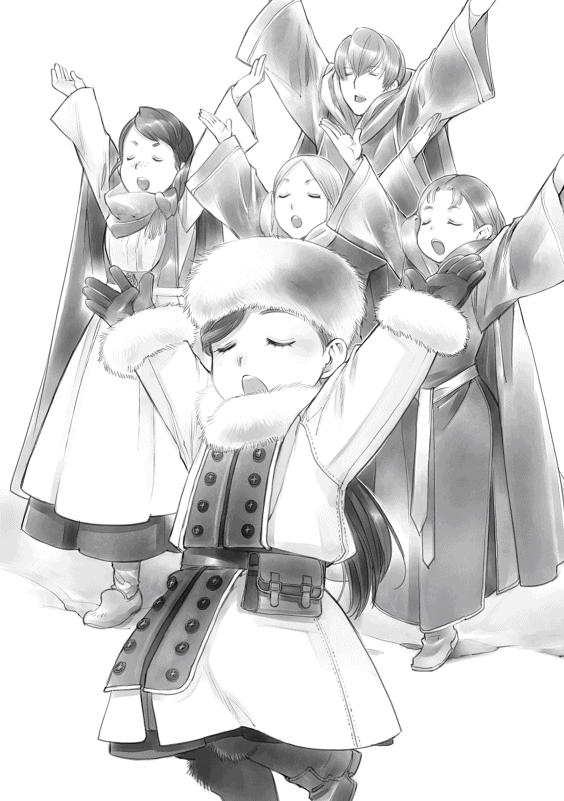
「待たせたな」
フェルディナンドを先頭に三頭の騎獣が舞い降りてきた。わたしは慌てて手を拭うと、一度騎獣から降りて皆を出迎える。
「おかえりなさいませ、皆様。女神の水浴場は見つかりまして？」
「残念ながら上空からでは見当たらなかった。不自然なほど水の流れも木々の切れ目もない。魔力で目隠しをされていて、おそらく上空からでは到達できないようになっているのだと思われる。ユストクスが夏場に訪れた時には上空から簡単に泉まで到達できたと言っていた。フリュートレーネの夜が近付き、魔力が最も満ちる今の時期がやはり特別なのかもしれぬ」
シュツェーリアの夜と同じように魔力が高まる特別な期間ということは、それだけ事前に得ていた情報が役に立たないということでもある。何事も準備万端に行うフェルディナンドは不測の事態というのがあまり好きではないのだろう。何かを警戒するように腕を組んだフェルディナンドが、周囲を見回しながら女神の像がある入り口に視線を止めた。
「......ここから森に入るしかなさそうだな」
わたしも同じように女神の像へ目を向け、お供え物が並んでいるのを確認して大きく頷いた。
「大丈夫です。わたくし達が少し清めてお供えをしましたし、女神様にお祈りも終えました。ですから、無事に泉までたどり着けると思いますよ」
「君は驚くほど楽観的だな。......まぁ、よかろう。先頭は私、次にブリギッテ、ローゼマイン、ダームエル、最後にエックハルトで進む。付いてきなさい」
フェルディナンドが騎獣を動かして森の中へと分け入っていった。普段は大きく広げられている騎獣の羽が畳まれ、地面からほんの少し浮いたところを駆けていく。ブリギッテがフェルディナンドに続いて騎獣を駆り、わたしはレッサーバスでブリギッテのマントを追いかけた。フェルディナンドや護衛騎士の騎獣がわずかに浮いた状態で駆けているので、わたしのレッサーバスも同じように少し浮いた状態だ。わたしもやればできるのである。
森の入り口付近にはもう見当たらなかったけれど、少し奥に入っていくとまだ雪がたくさん残っている。それに、高い木々が並んでいて日が当たりにくいせいか、森の中は薄暗い。
「ダームエル、ザンツェが来たぞ！」
「はっ！」
エックハルトの声にダームエルが騎獣を駆ってネコっぽい魔獣を狩った。すぐに戻ってきたけれど、「一撃で魔石をやれ」とか「狙いが甘い」とかエックハルトに注意を受ける。
「ダームエル、アイフィントだ。行け！」
今度はリスのような形で、大きさはネコくらいある魔獣だった。小さい角が二本にょきっと短く生えているのが見える。かなりすばしこい魔獣で、身軽に枝から枝へと飛び移って逃げていくのをダームエルが追いかけていった。わたし達はダームエルが魔石を回収して戻ってくるまで待機だ。
「ダームエルはまだ動きが遅いな。魔力が少ないので、なるべく魔力を使わずに戦おうとする姿勢が完全に染みついているのではないか？」
「身体能力を向上させるのはもちろん、魔力を使って戦う訓練を重点的に行う必要がありますね」
フェルディナンドとエックハルトがダームエルの動きを見ながらこれから先の教育方法について話し合っている。どうやら、騎士団でのダームエルを叩いて伸ばそう期間はまだ続いているようだ。
わたし達の前に現れる魔獣は小さいし、少ないので、あっという間に狩りは終わる。ダームエル一人が奮闘して進むうちに、野営地として使われているのか、少しだけ開けた場所があった。そこで立ち止まることなく通り抜け、奥の泉を目指す。
「......どこに向かって進めばいいのだ？」
魔獣を倒しながらいくつかの野営地を通って更に奥へ進もうとしたが、道が途切れてなくなった。正確には雪に閉ざされて見えなくなっている。フェルディナンドが周囲を見回している姿を見て、わたしもフェルディナンドの真似をして周囲を見回した。同じように木々に囲まれているように見えるけれど、一カ所だけ光が差し込んでいる部分がある。
「神官長、あそこではありませんか？ 薄らと光が見えます」
「どこだ？」
わたしが「ここです」とレッサーバスを動かすと、木々がザザッと動いて道を作ってくれる。思いもしなかった木々の動きに目を瞬きながら、わたしはフェルディナンドを見た。
「お、お供えの効果でしょうか？」
「......そうかもしれぬし、それだけではないかもしれぬ」
フェルディナンドが苦い顔でそう呟きながら、開けた道へ騎獣を進めていく。ブリギッテに続き、わたしも新しくできた道に入っていった。
急カーブになっている細い道を進むと、段々と道が明るくなって突然視界が開けた。木々に囲まれ薄暗い印象だった森の中から、明るく日が差し込む広い場所へ目の前の風景が変わる。
「......これが、女神の水浴場でしょうか？ なんて、綺麗......」
驚くことにそこだけは完全に春だった。それまで雪に埋もれた道を駆けてきたとは思えないくらいにさんさんと眩しい光が降り注ぎ、澄み切った水が湧き出る泉があった。泉の周囲には雪の代わりに、春の訪れを告げる白い花レンフールが咲き乱れ、鳥の鳴き声が聞こえてくる。
水面が優しい風に吹かれて、キラキラと反射し、湧き上がる清水が流れ出し、更に奥に向かって清流を作っていた。青とも緑とも言えない泉の中心には、薄いピンクの花が咲いている。一見しただけならば睡蓮 の花にしか見えない。
「あれが女神の愛した花といわれているライレーネだ」
「あの蜜を採るのですか？」
「そうだ。だが、今はそれ以上進むな。魔物の気配がある。おそらくタルクロッシュであろう。今は非戦闘員が多すぎる。一旦、野営地に下がるぞ」
フェルディナンドの言葉に、今度は来た時と反対の順番で一番近い野営地へ戻った。美しい春の光景を見た後に、雪が残る野営地に戻ると何とも薄暗くて陰鬱な感じだ。
「ローゼマイン、少し下がれ」
わたしがブリギッテと共に木々に近いところへ下がると、フェルディナンドとエックハルトが広く開けた野営地にピッと指で弾くようにして何かを投げていった。
次の瞬間、その辺りの雪が見る見るうちに解けてなくなっていく。呆然と目の前の現象を見ていると、フェルディナンドが騎獣を寄せてきた。
「ローゼマイン、この魔術具を騎獣の中に置いておきなさい。君がいなくても騎獣が消えずに残る」
フェルディナンドに言われた通り、レッサーバスに魔術具を置き、わたしがいなくても消えないようにして外へ出てみる。周囲に雪があるせいか、あるいは背の高い木々に囲まれて日が届きにくいせいか、空気は非常に冷たくて肌を刺すように感じられる。
「ローゼマインの従者は食事の準備だ。我々はタルクロッシュの討伐に向かう。ローゼマインは採集の準備をしてブリギッテと同乗せよ。討伐後、ライレーネの蜜の採集の仕方を教える」
フェルディナンドがわたしの専属や側仕えに食事の支度をするように命じ、他の者にもそれぞれの役目を与える。わたしはフェルディナンドに借りている採集セットに忘れ物がないかどうかを確認すると、ブリギッテの騎獣に乗せてもらった。
「では、皆。食事の支度を頼みますね」
「お気を付けて。お早いお戻りをお待ちしています」
フリュートレーネの夜
わたしはブリギッテに乗せてもらって再度女神の水浴場に向かった。木々が作ってくれる急カーブの道を通り抜け、明るく日が差し込む泉の前へ進んでいく。先頭のフェルディナンドが泉へと騎獣を駆っていくと、ずもももっと泉の表面が膨れ上がり始めた。
「タルクロッシュだ！ ローゼマイン、祝福を！」
先頭で突っ込んでいくフェルディナンドからの指示に、わたしは指輪に魔力を込めていく。もう何度も武勇の神の祝福は祈っているので慣れてきた。
「炎の神ライデンシャフトが眷属 武勇の神アングリーフの御加護が皆にありますように」
青い光が指輪から飛び出し、皆に降り注ぐ。戦力としては最底辺で、体力の無さからも足を引っ張るしかできないわたしが唯一役に立てることだ。
「ダームエルとブリギッテはローゼマインと共に待機！ エックハルト、行くぞ」
「はっ！」
泉のほぼ中央付近にぶわっと影が現れる。三つ、いや、四つほどの影が泉から大きく跳ねて、飛び出してきた。タルクロッシュは大人が両手を広げたくらいの大きさがあるガマガエルだった。秋の採集で戦ったゴルツェや冬の主だったシュネティルムに比べるとずいぶんと小さく感じる。見た目の気持ち悪さでは、他の追随 を許さないけれど。
「どうしてわたくしの敵として立ちはだかるのは『ガマガエル』ばっかりなのでしょうね」
ハァ、とわたしが思わず溜息を吐くと、ブリギッテとダームエルがよくわからないというように「......ガマガエル、とは？」とわたしを見た。
「タルクロッシュによく似ている生き物です。ダームエルにはわかるでしょう？ ビンデバルト伯爵そっくりだと思いません？ 神官長に討伐されるところまで......」
ダームエルが吹き出す。ガシャっと音をさせて鎧の手で口元を押さえて前を向いたけれど、小刻みに妙な動きをしているのでツボにはまったようだ。ブリギッテは直接ビンデバルト伯爵を見たことがないようで、「タルクロッシュと似ている人物ですか。近寄りたくはないですね」と呟いた。
「合体するぞ」
エックハルトの声に振り向くと、一番大きいタルクロッシュが長い舌を出して、すぐ隣にいたやや小さ目のタルクロッシュを絡めとると、ごくんと呑み込んだ。呑み込むと同時にタルクロッシュが、ぐぐぐっと巨大化していく。ある程度大きくなると、またもや舌をしゅるんと出して小さい方のタルクロッシュを次々と呑み込んでいった。
「わわわっ！」
「落ち着いてくださいませ、ローゼマイン様。タルクロッシュごとき、恐れるほどのものではございません。......気持ちが悪いだけです」
ブリギッテはタルクロッシュが気持ち悪くて嫌いらしい。気持ちはよくわかる。わたしを抱えておくための左手には普段よりも力が籠っている。
フェルディナンドとエックハルトはシュタープを剣の形に変形させて、タルクロッシュを睨み上げながら、魔力を込めていった。どんどんと仲間を呑み込んで大きくなっていくタルクロッシュのぼわっと膨らんだお腹を目がけて、攻撃しようと二人が剣を振り上げる。
次の瞬間、タルクロッシュから長い、長い舌が高速で飛び出してきた。何が起こったのか、わからない程のスピードでブリギッテの騎獣ごと絡めとられて、わたし達は空中を飛んでいく。
「なっ!? 」
「うひゃっ!? 」
ブリギッテがシュタープを取り出して変形させるよりも早く、わたし達はタルクロッシュの大きく開いた口の中に飛び込んでいった。
舌が縮んでいき、口が閉じられると、そこは光も差さない真っ暗で、生温かく生臭い場所になった。口の中で解放されると同時にブリギッテが騎獣を消して、シュタープを薙刀 のような身長よりも長い武器へ変形させた。魔力のせいか、ほんのりと武器の周辺が光って見える。
「ローゼマイン様、お怪我は？」
タルクロッシュがわたし達を嚥下 しようとしたら、武器が口内に刺さる状態にして、ブリギッテはわたしの無事をまず確認する。
ブリギッテに抱きしめられていたわたしは怪我など全くしていない。鎧の強度を変えないままに抱きしめられていたので、柔らかな胸でやや窒息 しそうだっただけだ。
「あちらこちらがベタベタねばねばするだけで、怪我はありません」
「では、採集用のナイフに魔力を込めて、これの舌を刺してくださいませんか？ わたくしの武器は今動かせないのです」
嚥下されないように構えた武器を持つ右手に力を入れながら、ブリギッテは左手でわたしを小脇に抱えるようにしてしゃがんだ。わたしをタルクロッシュの舌の上に降ろしてくれるけれど、ブリギッテの手はわたしのお腹から離れない。足の裏と膝に感じる生温かくて弾力のある柔らかな足元にお互いが顔を引きつらせた。
「やります」
わたしがナイフを取り出して魔力を込めていくと、お腹に回されているブリギッテの左手に力が籠る。何が何でも守る、というブリギッテの意思を感じながら、わたしはたっぷりと魔力を込めた採取用のナイフでタルクロッシュの舌を力一杯突き刺した。
「......あ、あれ？」
何も変化がなかった。悲鳴も上がらなければ、口が開けられることもない。まさかここまで変化がないとは思わなくて、わたしは冷汗を垂らしながら魔力を込めて何度もナイフを突き刺す。
「えい、えい、えい！」
突如、真っ暗だった視界に眩しい光が差し込んできて、わたしは思わず目を閉じる。ぐらんと足元が揺れて、体が急に斜めになったのがわかった。ナイフをつかんだまま、わたしはバランスを崩した。斜めになった足元に合わせてブリギッテと共にゴロンゴロンと転がる。お腹に回されたままのブリギッテの腕に力が籠り、ブリギッテがわたしを抱えて飛んだような感触がする。
明るくなったのはタルクロッシュがカパッと口を開けたせいだ、と気付いた時には、ブリギッテに抱えられたまま、わたしは再び空中に放り出されていた。
生臭さが消えて周囲の空気が綺麗になった。色々な音が聞こえるようになった。ビシビシと肌を空気に叩かれるような感触がする。
「そのまま泉に飛び込め！」
フェルディナンドの怒鳴り声が聞こえ、ブリギッテは自由落下のスピードで泉に向かって落ちていく。水面に直撃する衝撃を覚悟してわたしはきつく目を閉じて、ブリギッテにしがみついた。
ものすごい音と共に泉へ落ちる。しかし、水は予想以上に柔らかくわたし達を受け入れてくれた。硬くも痛くもなく、わたし達は泉の中にいた。
不思議な感覚だった。本来ならば泉の水は雪解け水で、落ちた途端にわたしなんて心臓麻痺 で死んでもおかしくないくらいの温度のはずだ。けれど、水は冷たくも熱くもなかった。何故か息苦しさも感じない。目を開ければゆらゆらと揺らぐ水面が見え、こぽこぽと自分の口から吐き出される空気の泡が上がっていく。
光が降り注ぐ青い空に大きな影があり、それに向かって眩い光が飛んでいくのが見える。フェルディナンドとエックハルトの攻撃がタルクロッシュに向かって飛んだようだ。タルクロッシュは二人の攻撃で空中へ打ち上げられて爆発した。
「ぷはぁ......」
わたしとブリギッテが浮かび上がって、水面に顔を出した時には、二人の攻撃による余波が収まろうとしているところだった。
「......終わりましたね」
わたしがホッと息を吐いたのとは逆に、ブリギッテは上を向いて、「いいえ、来ます！」と緊張感に満ちた険しい声を出した。再度シュタープを構え始めたブリギッテにつられてわたしも上を見上げる。何かが降ってくるのが見えた。爆散 したタルクロッシュの内臓か何かだろうか、と眉を寄せた瞬間、降ってくる大量のカエルの一匹と目が合った。
「うひぃっ!? 」
指先ほどの小さいのから大人の拳サイズまで様々な大きさのカエル、いや、タルクロッシュが降ってくる。わたしの頭に、顔に、肩に、次々とタルクロッシュが落ちてきて貼りつく。ぬるっとした感触が自分の頬の上で動いた瞬間、ぞわわわっと背筋が震えた。
「......ひぎゃあああぁぁぁ！ 取って、取って、取ってぇ！」
「ローゼマイン、叫んでいないでさっさと剥がして倒せ！ 君のナイフでも倒せるはずだ。放置しておくとすぐに合体するぞ」
フェルディナンドは無情にもわたしを見捨てて、周囲のタルクロッシュを潰して回っている。エックハルトも同様だ。タルクロッシュは攻撃しても分裂するだけで、最小の状態にならなければ倒せないため面倒なのだそうだ。ブリギッテは自分の周囲のタルクロッシュに対応するだけで手いっぱいになっている。誰も助けてくれないとわかったわたしはバタバタと手足と頭を振って振り解こうとするが、飛ばされたくないタルクロッシュはびったりと貼りついて離れない。顔の上をぬめっと移動されたわたしはお嬢様らしさを取り繕うこともできずに泣き叫んだ。
「無理、無理、無理！ せめて、鼻の上のだけでも取って！ 誰かぁ！」
「ローゼマイン様、こちらへ！ 私が取りますから！」
「ダームエルが最高にカッコよく見えます！」
騎獣に乗ったダームエルが水面でじたばたと暴れているわたしをブリギッテから受け取って、引き上げてくれる。ダームエルにタルクロッシュを取ってもらい、わたしは涙と鼻水を拭 いた。
「もう嫌です！ 二度とこの泉には参りません！」
「馬鹿者。明日の夜明けに蜜を採るための討伐をしているのだ。来ないわけがなかろう」
即座にフェルディナンドから叱責 と冷たい視線が飛んでくる。
「タルクロッシュは倒した。これで、明日は安全に採集ができるはずだ」
「絶対ですね？」
「しつこい！ フリュートレーネの夜である今夜は早く寝て、夜明けに備えるぞ」
わたしは野営地に戻るとすぐさまレッサーバスの窓を半分以上閉めた状態にして、外から見えない状態を作ると、モニカとロジーナに手伝ってもらって着替えをする。
「この季節に泉に落ちるなんて、健康な人でも下手したら死んでしまいますよ。ローゼマイン様はそれでなくてもお体が弱いのに、体調は大丈夫ですか？ 神官長は何とおっしゃいました？」
「明日、お熱を出したら採集ができなくなってしまいます。お気を付け下さいませ」
モニカとニコラにお説教されながら、濡れた服を脱がしてもらって、全身をお湯に浸したタオルで拭ってもらう。着替えはブリギッテも一緒だ。
「ローゼマイン様の騎獣は素晴らしいですね。拠点からも遠い地での任務中にこのようにゆったりと着替えることができるとは思っていませんでした」
わたしのレッサーバスがなかったら、ブリギッテは木々の間にマントを張って、雪の中で着替えるつもりだったらしい。いくら魔石の鎧を解除するだけとはいえ、貴族の令嬢がすることではないと思う。ブリギッテによると、未成年は貴族街から出る任務には付けず、成人すると比較的さっさと結婚するため、女性騎士は拠点もない討伐や採集に赴くことがないらしいけれど。
側仕え達が準備してくれていた食事を摂って、フェルディナンドから蜜の採集の仕方を教えてもらう。花の中央に溜まっている蜜を瓶に入れるのだが、必ず持っていく金属製のスプーンですくうこと、と言われた。
「これは魔力の影響を受けないようにするためのスプーンだ。蜜は必ずこれですくって瓶に入れていくように。シュツェーリアの夜に採れたリュエルの花も実も、他の季節の物とは全く違う性質を持っていた。今回のライレーネの蜜も他の季節とは違う性質があるかもしれぬ」
フェルディナンドの顔がマッドサイエンティストの顔になっている。趣味に没頭する時間ができてよかったですね、と素直に言えないのは、わたしが自分の読書時間が確保できないせいだろう。心が狭いと言われようと、フェルディナンドはずるいと思う。
「蜜はいくつかの瓶に分けて入れなさい。君の魔力を含んだ蜜とそれ以外の差も研究してみたい」
フェルディナンドが素材の研究をするのは別に構わないのだけれど、わたしの素材採集という目的から少し外れているような気がするのは、わたしだけだろうか。
そのような話をした後、わたし達は早目の睡眠を取ることになった。わたしは早速レッサーバスの座席を後ろに倒し、足を伸ばして寝られるようにする。いくつか積み込んでいた毛布を側仕え達が敷いているのを見て、フェルディナンドが呆れた顔になった。
「君の騎獣は実に非常識だ」
「便利だから良いのです。『キャンピングカー』にしなかっただけ、理性的だと思います」
「まったく......。これだけの広さがあるのだ。ここは女性全員の寝床として使うと良い。フランはこちらに来なさい」
フェルディナンドの言葉により、レッサーバスは女の子の寝場所として使われることになった。ブリギッテが入ってきて、フランは女性ばかりの騎獣から少しばかりホッとした顔で出て行く。
その夜、レッサーバスがゆらりゆらりと揺れるような不思議な感覚で目が覚めた。のっそりと体を起こすと、窓から女神の水浴場が見える。
......野営地にいたはずなのに、どうして？
夢かと思いながら、わたしは外を見つめる。夜の泉は昼と全く違う姿を見せていた。フリュートレーネの夜だからだろうか。濃いピンクにも見えるような赤い月が水面に映っていた。
......泉が光ってる。
月に照らされて光っているだけではなく、泉から少しずつ大きさの違う泡のような小さな丸い物が飛び出してくるのだ。蛍よりももっと明るい、キラキラとした不思議な丸い光が泉から次々と出てきては、その辺りをふよふよと飛び回るせいで幻想的 な光景になっていた。
「わぁ、素敵ですね。ピカピカしてます」
突然ニコラの声がして思わず振り向くと、ニコラは寝ぼけているのか起きているのかわからないような、ほにゃっとした顔で窓の外を見ていた。そのニコラの声に飛び起きたのはブリギッテだった。即座にシュタープを構えて外の様子を窺う。しばらくして困ったようにわたしを見た。
「......ローゼマイン様、これは何でしょう？ とても魔力が満ちているのを感じます」
「わかりません。けれど、とても綺麗ですし、敵意はないようです」
光が泉から飛び出す瞬間、シャランと澄んだ音がする。それがいくつも重なると音の連なりとなって不思議な音楽になっていた。ロジーナが寝言で音階を口ずさみ始めたかと思うと、不意に飛び起きて「フェシュピールはどこですか？」と寝ぼけた顔のままで楽器を探して手を動かす。
「ロジーナ、落ち着いて」
その頃にはさすがにエラもモニカも起き始めた。皆が同じように外を見て目を瞬く。
「一体何が起こっているのでしょう？」
泉から光が浮かび上がることで発せられる音楽にロジーナの手がそわそわとし始める。荷物として当たり前に乗せられているフェシュピールへ視線が向かうのがわかった。
「皆、起きてしまったし、このままでは眠れませんから少し弾いても良いですよ？」
「ありがとう存じます」
ロジーナはいそいそとフェシュピールを取り出すと、泉から零れてくる音楽に合わせて弾き始めた。泉からの高い音に合わせて、ロジーナがフェシュピールを奏でる。
「ローゼマイン様の楽師は本当に腕が良いですね」
泉とロジーナの競演にうっとりと聞き惚 れていると、レッサーバスの周辺にキラキラが次々とやってきた。まるでそれぞれの意思があるように窓のところへ飛んできては入ってこようとする。
「この光はロジーナの音楽が好きなのかもしれませんね」
「せっかくだから、外に出て聴かせてあげたらいかがです？」
モニカとニコラがくすくす笑いながらそう言うと、賛成するように光が点滅した。
「では、音楽の奉納に参りましょう。春の女神様方は音楽がお好きですもの。フリュートレーネの夜に奉納すれば、お喜びになるかもしれません」
「ローゼマイン様、こちらの泉にいらっしゃる女神様は甘い物もお好きなのですよ。残っているクッキーも持って行って捧げましょう」
ニコラの提案にエラが笑いながら賛成した。エラとニコラが甘い物が詰まった木箱を持って、ロジーナがフェシュピールを持って、ブリギッテはさり気なく辺りを警戒しながら、モニカは仕方なさそうにレッサーバスから出て行く。
わたしは夜中のピクニック気分で外に飛び出した。全く寒さを感じない不思議な空間に、泉からはまだキラキラとした光が生まれ出している。高く響く音も綺麗で心が浮き立つ感じだ。
光っている泉を覗き込むとまだまだ奥から次々と不思議な光が出てきている。その光を数匹のタルクロッシュが食べているのを見つけた。
「ブリギッテ、タルクロッシュが......」
わたしが泉を指差すと、ブリギッテが即座にシュタープを取り出して、タルクロッシュを狩っていく。泉から飛び出してきた光がブリギッテに懐 くように取り囲む。タルクロッシュを倒したことを感謝しているようだ。
わたしがくるりと辺りを見回すと、全体的にふよふよとしていた光が今は三つに分かれて集っているのが見えた。ロジーナのフェシュピール、エラとニコラとモニカがいるお菓子の周辺、タルクロッシュを討ったブリギッテの周りを点滅しながら飛び回っている。この光は音楽が好きなようで、ロジーナのフェシュピールに合わせて点滅を繰り返している。中でも、麗乃時代の曲をアレンジしたものがお気に入りなのか、拍手するように点滅を繰り返しているのがわかった。
「ローゼマイン様の作られた曲がお好きなようですよ。お歌を奉納されてはいかがですか？」
「......では、せっかくですから、新しい歌を奉納しましょう」
わたしのフェシュピールは持ってきていないけれど、歌だけならば何とかなる。初めて聴く音楽が好きなようなので、麗乃時代の歌を一つ披露 することにした。フェルディナンドに何かお願いする時のために、歌詞をこちらの言葉に直していた春の歌だ。
泉の前に立ち、ゆっくりと息を吸い込む。
「春の水は〜......」
わたしが歌い始めると同時に、指輪が勝手に魔力を吸い取り、歌と共にわたしの魔力が辺りに広がっていった。泉のキラキラが更に増えて、辺りがどんどんと眩しくなっていく。それと同時に、水の中からライレーネの花の蕾 がするすると伸びてきた。無数の蕾が伸び始め、絡み合っていく。まるで巨大な木のように泉の中心で成長していき、花が開き始めた。
「女神様、ライレーネの蜜をいただいてもよろしいでしょうか？」
歌を終えて、お伺いを立てると、中心にあった葉っぱが大きく広がり、わたしの前へ伸びてきた。
光に押されるようにしてわたしが足を乗せると、葉っぱは更に大きくなる。わたしが葉っぱの上に完全に乗ると、今度はゆっくりと高く上に向かって伸び始めた。
「わぁ！」
葉っぱが動き、咲いているライレーネの前まで連れて来てくれたので、わたしは腰に付けたままの採集道具から、フェルディナンドに言われた通りにスプーンを取り出して蜜を採集し始めた。
複数持たされている瓶の全てに蜜を入れて蓋をする。
「これでよし。完璧じゃない？」
高く、高く上がった葉っぱの上だったので、森の向こうの空が白み、朝日が昇るのが見えた。
その朝日と共に泉の周辺を飛び回っていた光がどんどんと薄れて消えていく。
「ん？」
高く伸びていた花がするすると縮んでいって、水面の方へ戻り始めた。同時に、わたしが足場にしていた大きな葉もどんどん小さくなっていく。わたしの体重を支えられなくなった茎 が、ポキリと音を立てて折れた。
祈念式終了
「ひわっ!? 」
ガクンとバランスを崩し、わたしは斜めになった葉っぱの上を滑るようにして、空中へと飛び出す。「ローゼマイン様!? 」と叫ぶ皆の声と騎獣を出すブリギッテの姿が見えた。
ブリギッテの騎獣よりも速く、木々の向こうから何かが飛び出してきた。空中で重い頭の方が下がって視界がぐるんと回る中、残像のように見えた何かがこちらに向かって突っ込んでくる。
重力に囚 われて頭から真っ逆さまに落ち始めたわたしの体が何かにガシッとつかまれた。次の瞬間、ぶわっと上昇する感覚に内臓が刺激され、うぐ、と呻き声が出る。一体何が起こったのか、と目を瞬きながら視線を巡らせると、何故かフェルディナンドの怖い顔が間近にあった。眉間の皺が普段の五割増しくらい深い。
「......神官長？ どうしてここに？」
「落下する君を回収するためだが？ 気に入らなかったならば、もう一度落としてやろうか？」
不機嫌そのものの薄い金の瞳で睨まれて、わたしはここで振り落とされないように、「助かりました。ありがとう存じます」と慌ててフェルディナンドの腕にしがみつく。落下からは助かったけれど、あまり助かった気がしないのは、この後にお説教がくるのを確信できるからだ。不機嫌極まりないフェルディナンドの様子にブルブル震えているうちに、わたしはレッサーバスの前に下ろされた。
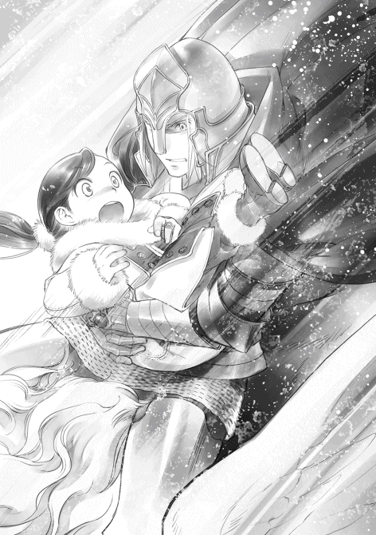
「ローゼマイン様、ご無事ですか!? 」
フランが心配顔で駆け寄ってくる。わたしが「神官長に助けていただきましたし、大丈夫です」と答えると、フランはホッとしたように体の力を抜いた。
「さて、ローゼマイン」
騎獣を片付けたフェルディナンドの低い呼びかけに、すわ、お説教開始か、と身構えたけれど、疲れたような声で「採集はできたのか？」と尋ねただけだった。少しばかり肩透 かしを食らった気分になりながらも、わたしは頷いてライレーネの蜜を詰めた瓶をフェルディナンドに見せる。
「はい、無事にライレーネの蜜は採集できたのですから、褒めてください」
わたしが差し出した瓶を手に取ると、フェルディナンドは瓶の蓋を開け、ほんの少しだけ蜜を手のひらに零した。色や匂いを確認し、蜜に魔力を流し込んだ後、顔をしかめる。
「......予想していたが、これは完全に君の魔力に染まっているようだな。魔力が通らぬ」
「え？ そんなはずは......。だって、神官長に言われた通り、これですくいましたよ？」
採集方法は間違っていなかったはずだ。わたしが採集道具のスプーンを取り出して、「これが不良品だったのではないですか？」とむくれると、フェルディナンドは緩く首を横に振った。
「そうではない。君の魔力で成長したライレーネだ。花自体が君の魔力に染まったのであろう」
「う......。もしかして......わたくし、失敗してしまいました？」
せっかくタルクロッシュをやっつけて、女神様にお願いしてライレーネの蜜をもらったのに、失敗してしまったのだろうか。フェルディナンドはもちろん同行してくれた皆に申し訳ない気持ちで尋ねると、フェルディナンドは蜜の付いた手を魔術で洗浄して軽く振った。
「いや、失敗ではない。君の素材採集という点から見れば問題ないのだ。問題はないが......ハァ。とにかく、なるべく早くフォンテドルフの冬の館に戻るぞ」
フェルディナンドだけではなく、フランもエックハルトもダームエルも、男性陣は何故か全員疲労の色が濃い。顔色が悪くて、疲れ切ったような息を吐いている。
「何かあったのですか？」
「色々とあったが、そういう森や泉に関する不思議な話は明日にする。今は早く帰って休む方が先であろう。君達も碌に寝ていないはずではないか？」
詳しい話は明日だと言われて、話は打ち切られてしまったけれど、フェルディナンド達も森の不思議に振り回されて大変だったらしい。何があったのだろうか、と首を傾げながら、さっさと帰り支度を始める男性陣をわたしは呼び止める。
「もう少し待っていてくださいませ。ここの泉の水を少し汲 んで帰りたいです。ちょっとした傷や病に効く癒しの水なのですよね？ 孤児院で病気の子が出た時に使えるし、数日間お世話になっているのだから、フォンテドルフの村長にも少し分けてあげれば喜ぶと思うのですけれど」
「好きにしなさい」
幸いにも道中の水を運ぶためにレッサーバスに乗せられていた樽 がある。数リットルが入るくらいの大きさの樽で、すでに二つが空になっている。昨夜の食事とわたしとブリギッテが体を拭うために使ったせいだ。わたしは側仕え達に泉の水を汲んでもらい、レッサーバスに乗せてもらう。
「せっかくですから、飲み水も補給いたしましょう」
各自、飲み水用の皮袋に泉の水を補給してからフォンテドルフの冬の館に戻った。疲労の色が濃い男性陣はもちろん、楽しかったとはいえ、夜中にはしゃいだ女性陣も寝不足だ。皆が欠伸 を噛み殺し、目を時折擦 っている。疲れているため、一日しっかりと休息を取ることになった。
「ローゼマイン、寝る前にこれを飲んでおきなさい」
湯浴みをして、すっきりした後、わたしはフェルディナンドに手渡された疲労回復の薬を飲んで寝台に潜り込んだ。
「それで、神官長達は一体どのような不思議な体験をしたのですか？」
次の日の朝食後、わたしは食後のお茶を飲みながら、フェルディナンドに尋ねた。わくわくしながら問いかけたわたしと違って、フェルディナンドとエックハルトとダームエルが揃って顔をしかめる。どうやら楽しい思い出ではないようだ。
「......端的に説明すると、女神の嫌がらせを受けていた」
「え？ 嫌がらせですか？」
わたし達がキラキラと光る不思議な光と遊んでいたフリュートレーネの夜は、男性陣にとっては大変な夜だったそうだ。
「ローゼマイン、夜の間、我々は交代で見張りをしていただろう？」
エックハルトの言葉にわたしは頷く。訓練で慣れているブリギッテ、エックハルト、フェルディナンド、ダームエルが、その順番で起きて見張りをすることになっていた。
事が起こったのは、フェルディナンドが見張りをしていた時間帯だったらしい。
「突然ざわざわと木が動き出した。最初は風かと思ったのだが、風は吹いておらず、ただ、木々がざわめき始めた。私が警戒しながら周囲を見回していると、突然木々が意思を持ったように動き出し、君の騎獣を枝から枝へと受け渡し始めた」
フェルディナンドの説明から、わたしは木々にバケツリレーのように運ばれるレッサーバスを想像して、そのシュールさに思わず口をポカンと開ける。
「君が信じられないのも無理はない。実際に見ていた私でも自分の目を疑った。木々が意思を持って協力し合うように君の騎獣を運んでいくのだからな。あり得ない光景だった」
レッサーバスがバケツリレーされるのを見たフェルディナンドは、即座に全員を叩き起こして追跡し、レッサーバスを取り返そうと木々に攻撃を仕掛けたらしい。しかし、わたし達が乗っているというのに直接攻撃を当てるわけにもいかない。フェルディナンド達は連れ去られるレッサーバスを追いかけて騎獣を駆った。
「......神官長やエックハルト兄様の全力で攻撃されなくてホッとしました」
木々が立ち塞がり、邪魔されてどんどん距離が離されていく。フェルディナンド達が攻めあぐねている間にレッサーバスは女神の水浴場へと連れさられたらしい。邪魔する木々を打ち払いながら何とか泉の前へ到達したものの、今度は分厚い魔力の壁に阻まれて入れなかったそうだ。
「泉の周辺だけが雪もなく、寒さも感じなかったであろう？ あの場に満ちていた魔力が関係しているのはタルクロッシュの討伐の時からわかっていたが、まさか自分達が弾き出されるほど強い魔力に満ちているとは思わなかった」
魔力が豊富で、ほとんどの魔力の壁は突破してきたらしいフェルディナンドは、苦い顔でそう言った。木の間から泉とレッサーバスが見えているのに、その場に入ろうとしても入れないという非常に腹立たしい状態だったそうだ。魔力に満ちた光が飛び回り、レッサーバスへと群がっている時には一体何が起こるのかとハラハラし、レッサーバスからわたし達が出てきて遊び始めた時には「この馬鹿者！」と思わず怒鳴ったらしい。
......そんなの、全く聞こえなかったけどね。
「とにかく、あのような魔力の塊が大量にうごめく危険な場所にふらふらと出て行くような考えなしの行動を二度としないように望む」
騎獣の中はわたしの魔力で満たされているので中にいる限りは安全だ、とフェルディナンドは言った。魔力を持つ相手が敵かどうかも判別しないまま、外に出るのは危険行為だったそうだ。
「あのキラキラに敵意は全く感じませんでしたよ」
「......最初に敵意を感じなくても、途中で機嫌を損 ねた場合、どうなっていたかわからぬぞ」
「あぁ、そういう可能性もありましたね」
魔力の壁に隔てられた先で、フェルディナンドを始めとして、フランもダームエルもエックハルトもわたしの達の行動には頭の痛い思いをしていたらしい。いくら呼びかけても誰も聞いていない。多分、聞こえていない。見守っている方の心情も知らず、楽師はフェシュピールを弾き始め、料理人達と側仕えはお菓子を広げてピクニックを始める。
「泉の中を覗き込み、タルクロッシュを狩るくらいならば、私達がいないことに気付くべきだ」
フェルディナンドに睨まれて、わたしはブリギッテと顔を見合わせる。そう言われてみると、何故か男性陣がいないことに気付かなかった。不思議だが、あの時は全く思い浮かばなかった。
「周囲の光景があまりにも現実味が薄くて、夢の世界みたいだと思っていたせいかしら？」
「わたくしも騎獣の中では連絡を取らなくてはと思っていたのですが、騎獣から出た瞬間に忘れました。あの時は本当に人数が足りないことが意識に上りませんでした」
ブリギッテはレッサーバスから出る時にはオルドナンツを飛ばすつもりで魔石を握って外に出たらしい。けれど、外に出た途端、何のために魔石を持っているのかわからなくなったそうだ。
君達にも魔力の影響があったのかもしれないな、とフェルディナンドが眉間を押さえた。
「そのうち、君が泉に向かって歌いだした。歌に合わせて魔力が広がり、花が育ち始める。あの時の我々の焦りが君にわかるか？」
ライレーネの蜜を採ることが本当にできるのか。花が開き始めているのに、まだ悠長に歌っているわたしを見て、非常にやきもきしていたらしい。エックハルトも肩を竦める。
「ローゼマインは葉に乗って蜜を採りに向かっただろう？ 本当に驚いたのだよ」
「足場がしっかりしない葉に乗るようなことを普通の人はしない。何のために騎獣があるのか、私が君に騎獣を与えたのか、よく考えなさい」
フェルディナンドに言われて、わたしはポンと手を打った。なるほど。騎獣で採集に向かえば、朝日が当たって葉っぱが小さくなっても落ちなかったに違いない。
「普通の人は賢いですね」
「違う。君が愚かなのだ」
風が吹いたら落ちそうな葉っぱの上でせっせと採集するわたしの様子は、胃がキリキリするほど危険そうに見えたらしい。
「いつ落ちるか、とハラハラしながら見ていたら、空が明るくなるにつれて魔力の壁が薄くなった」
朝の光に光の塊が消えていく。同時に不思議な光景は消えていき、自分達が知る泉の姿を取り戻し始めた。全てが元に戻り、足元の葉がみるみる小さくなっているのに、わたしはまだぼんやりと空を見ていたらしい。あまりの情景にフランが悲鳴を上げたそうだ。
「私が騎獣を出し、薄くなった魔力の壁を破って駆け始めたら、案の定、茎が折れた」
茎が折れるより先にフェルディナンドが騎獣で駆け出していたから、わたしが空中に投げ出されてもすぐに受け止めることができたようだ。
「そう聞くと、かなり危険だったのですね。神官長には本当にお世話になりました。作れる物ならば、わたくしが神官長に胃薬を作ってあげたいくらいです」
「そのような危険な物は飲まぬ。気持ちだけで良いので、あまり危険なことをしてくれるな」
「......善処 します」
受け止めた後のことはわかるだろう、と言われて、わたしはハァと息を吐いた。
「まさか殿方がそれほど大変だったとは思いませんでした」
わたし達は夢心地でとても楽しかったので、男性陣がそこまで苦労して胃の痛い思いをしているなんて全く考えていなかった。
「それにしても、どうして殿方は入れなかったのでしょう？ 甘味のお供えはフランもしたのに」
「泉の女神様は殿方が苦手なのかもしれませんし、女神の水浴場と呼ばれるくらいです。もしかしたら、フリュートレーネの夜は男子禁制なのかもしれません」
わたしとブリギッテが考えてみても男性と女性の差がわからない。もしかしたら、レッサーバスの中のお菓子を狙っていただけかもしれない。色々と答えを考えてはみたが、結局誰にも正解なんてわかるはずがなかった。
「ひとまず、ライレーネの蜜は収穫できた。当初の予定は果たせたので明日からは祈念式だ」
「はい」
春の素材も収穫できたので、フォンテドルフを出発して、わたし達は祈念式の行程へ戻る。フォンテドルフを出発する前に、当初の予定通り泉の水を分けてあげた。
「しばらくお世話になりました。これは泉の水です。怪我人や病気の方が出た時に使ってください」
「恐れ入ります」
「おそらく、他の水よりも効力が高いはずだ。エーレンフェストの聖女が汲んできたからな」
フェルディナンドが村長に向かってそう言うと、村長は驚いたように息を呑み、わたしと密閉 できる容器に入った水を交互に見つめる。
「なんと!? そのような貴重な水を頂けるとは......」
「神官長!? 」
わたしがじろりとフェルディナンドを睨むと、フェルディナンドは「そういうことにしておけ」と小声で言った。春の泉は魔力が高いと知られるのは、色々と不都合なことがあるらしい。それを隠すためにフェルディナンドが妙なことを言ったせいで、わたしが渡した水は癒しの聖水として丁重に扱われることになってしまった。
......まぁ、大事に使ってくれるなら、それでいいけど。
無事に残りの祈念式を終えて神殿へ戻った数日後、わたしは興奮気味のフェルディナンドから呼び出しを受けた。
「何の御用ですか？ 本日はギルベルタ商会との面会があるのですけれど......」
「いいから来なさい」
フェルディナンドの工房となっている隠し部屋に引っ張り込まれ、今回採集したライレーネの蜜について話をされた。フェルディナンドが興奮気味に早口で説明してくれたけれど、専門用語が多すぎてよくわからない。
「......つまり、どういうことですか？ 専門用語抜きでもうちょっと簡単にお願いします。それか、専門用語がわかる本をわたしにください。今すぐに読みますから」
簡単にしてくれた説明によると、採集したライレーネの蜜はわたしの魔力を帯びているけれど、完全にわたしの魔力に染まっているわけではないらしい。意味がわからない。
「この蜜に完全に魔力を込めると結晶になる。君の薬に使う分をこのように結晶化しなさい」
きちんと魔力を込めると、緑の魔石のような結晶になるそうだ。フェルディナンドの魔力で染めてできた結晶を見せられ、わたしは瓶を一つ渡された。瓶に魔力を注ぎながら、わたしはフェルディナンドの話を聞く。
「君が採集した蜜は君の魔力で育った花から採集したため、最初から君の魔力を多く含んでいる。魔力をたくさん含んでいて、水の属性の純度が非常に高い素材だ」
「わたしの魔力に染まっていると、他の人は使えないのですよね？」
「普通はそうだ。だが、このライレーネの蜜は他の者の魔力で染め上げることもできるのだ。君の魔力があるので、染めるためには反発が大きいが、染める価値がある」
フェルディナンドは愉 しそうに手のひらで緑の結晶を転がしながらそう言った。
「このようなことができるのはフリュートレーネの夜に採れたライレーネの蜜だからか、他の素材でも同じことができるのか非常に気になる。ローゼマイン、色々な魔木 を育ててみないか？」
フェルディナンドの許可の下、魔木を育てて紙作りの研究に活かせるならば、わたしはぜひやりたい。けれど、それには大きな不安があるのだ。
「紙の研究にもなりそうなので、魔木を育てるのは構わないのですけれど......わたくしの魔力を魔木の成長と実験に費やせるほど、エーレンフェストに魔力の余裕があるのですか？」
トロンベをこっそりと育てていることは胸に秘めて、わたしは首を傾げてみせる。フェルディナンドは軽く目を見張った後、眉間にくっきりと皺を刻んで苦渋 の表情で首を横に振った。
「......ないな」
「ですよね？」
魔木栽培計画はすぐさま頓挫 したけれど、フェルディナンドは諦めが悪かった。
「ローゼマイン、十年後くらいになって、領地の魔力に多少の余裕ができたり、君が成長して魔力が増えたりしてから実験してみないか？」
新しい素材だか、魔術に関する新説だか知らないけれど、フェルディナンドはやる気に満ちている。まさかの十年計画だ。
「わたくしの魔力は高いですよ？」
フフンと笑って胸を張ると、フェルディナンドは馬鹿にするようにフンと鼻を鳴らした。
「何が欲しい？ 金ならば準備するぞ？」
「神官長、わたくしがお金を欲しがると思いますか？」
わたしがニィッと笑うとフェルディナンドが少しばかり警戒した顔になった。警戒はしても、やっぱり止めた、とは口にしない以上、実験のためにわたしの魔力はどうしても必要らしい。ずいぶんと価値を高く見積もってくれているようなので、できるだけ高くふっかけておくことにする。
「十年後でも結構です。わたくしの魔力と引き換えに、わたくしに図書館をくださいな」
フェルディナンドは眉間に皺を刻み、明確な返答を避けた。
エピローグ
「これもローゼマインのレシピなのですか？ 祈念式の道中で食べた物と風味が違うように思えますが......」
エックハルトはフェルディナンドの館で供 されたクッキーというお菓子を食べながら問いかける。
「道中は道具が足りなかったようだ。それに、今回は味付けにお茶の葉が使われているからな」
お茶の葉が入ったクッキーをフェルディナンドが好んでいるため、ローゼマインが神殿で専属料理人にクッキーを作らせた時はお裾分けがされるそうだ。
「今日はこちらの館でカルステッドと会うと言ったら、持っていけといくつかのお菓子を押し付けられたのだ。ローゼマインが作らせるお菓子は何に関しても数種類の味があり、相手の好みに合わせることが可能らしい。こちらのカトルカールには酒漬けの果実が入っていてカルステッドが最も好んでいる味だそうだ。甘さが控えめで酒の風味が強いので、私も時折食べている」
自分が知らない父親の好みについて教えられ、エックハルトは不思議な気分になった。ローゼマインは元々平民の身食いで、魔力と新しい印刷という事業をエーレンフェストにもたらすためにエックハルトの同腹の妹として洗礼式を行い、アウブ夫妻と養子縁組した。
「ローゼマインは神殿育ちのため、実の親子という設定でも父上と接した回数はそれほど多くないはずです。それなのに、好みを把握しているというのが不思議でなりません」
「ローゼマインは女性のお茶会用にエルヴィーラへお菓子のレシピを売り込んでいるからな。お茶会で情報のやり取りがあるのではないか？ 顧客の好みを把握して、欲しい物を売るのが当たり前だと言っていた。貴族というより商人の思考だが、交渉相手の好みを把握するのは貴族でも必要な技量だ。私にも高価なレシピをあの手でこの手で売りつけようとしてくるぞ」
フェルディナンドが素っ気ない口調でさらっと言うので、他の者が聞いてもそうは思わないかもしれないが、言っている内容は「ローゼマインには交渉相手の好みを把握する技量がある」というものだ。付き合いが長いエックハルトには基本的に採点の厳しいフェルディナンドがずいぶんとローゼマインを褒めているように聞こえた。
「レシピといえば、祈念式の道中の昼食をフェルディナンド様がローゼマインの専属料理人に全て任せるとは思いませんでした」
「別に全てを任せたわけではない。ローゼマインの専属だけに負担をかけるつもりはなかったので、私の料理人にも手伝わせようと申し出たが、レシピを無料で持っていく気か？ とローゼマインに断られたのだ。仕方がないので材料の提供に留めただけだ」
不服そうにフェルディナンドがクッキーをつまみながらそう言ったが、エックハルトが言いたかったのは金銭やレシピのことではない。
「......いえ、フェルディナンド様が毒殺を全く疑っていないことが不思議なのです」
貴族はよほどのことがない限り、毒の混入を警戒して専属料理人を共有することは少ない。警戒心が強いフェルディナンドは食事には殊更気を張っていたはずだ。そんなフェルディナンドの行動としては考えられないくらいにローゼマインを信用している。ローゼマインが先に食べて見せてはいたが、まさかフェルディナンドが自分の側近による改めての毒見もなく、ローゼマインに出された食事を口に運ぶなど、エックハルトは考えてもみなかった。
今回のお菓子にしてもそうだ。他人から持っていけと押し付けられた物をそのまま持ってくるのも、自分で準備したお菓子と共に並べて客に対して自らが毒見として先に食べてみせるのも今までのフェルディナンドの言動から考えるとあり得ない。
「フェルディナンド様がローゼマインを信用する根拠がわからないので少々混乱しています」
エックハルトが信用されるためにはかなり時間がかかった。簡単にフェルディナンドから信用を勝ち得たローゼマインが少々妬 ましくもある。ローゼマインのどこを信用したのか、自分達と何が違うのか。祈念式の道中、エックハルトは考えてみたけれどわからなかった。ハッセの件といい、虚弱すぎる体といい、素材採集の度に起こる面倒事といい、ローゼマインはフェルディナンドに負担ばかりかけているようにしか見えない。
けれど、フェルディナンドはローゼマインが引き起こす数々を「面倒」だの「厄介」だの顔をしかめて言う割には楽しんでいるように見える。その証拠に、フェルディナンドはまるで貴重な薬草でも観察するようにこまめにローゼマインの様子を確認していた。甲斐甲斐 しく体調を確認して、貴重な薬を惜しみなく与えている様子は庇護者として見れば普通のことのようにも思えるが、フェルディナンドの行動として見れば驚きの塊である。少なくともエックハルトの知るフェルディナンドとはずいぶん違って見えた。
「私がローゼマインを信用する根拠か......。あれは神殿育ちで生粋 の貴族ではない。最大の理由がそれだ。それに加えて、この目で確認したことがいくつかある。其方にも言えぬが......」
フェルディナンドは「神殿育ちで」とぼかして言ったけれど、ローゼマインが平民出身で貴族ではないから信用できたということだろう。自分とローゼマインの明確な違いを述べられて、エックハルトは納得した。
「フェルディナンド様、カルステッド様がいらっしゃいました」
側仕えのラザファムが到着したカルステッドを連れてやってきた。エックハルトが結婚して家を出た後は、呼びつけられることがない限り実家へ行くこともないため、騎士団以外の場所で父親と顔を合わせるのも久し振りだ。
フェルディナンドと挨拶を交わし、席を勧められたカルステッドはエックハルトへ視線を移し、「エックハルト、今回も助かった」と祈念式の護衛を労 ってくれる。
「いいえ、私はフェルディナンド様と共に行動できる機会を与えてくださったことを感謝しています。これから先もご指名ください」
これは本音だ。フェルディナンドが神殿へ入ったため、エックハルトは護衛騎士の任を解かれ、付き従うことを禁じられた。城で公的に活動する時に少しだけ同行が許されるくらいで、それさえも領主の母親のヴェローニカがいる前では離れているように、と言われていたのである。ヴェローニカが捕らえられ、ローゼマインの庇護者としてフェルディナンドが城へ堂々と出入りできる機会が増えたけれど、神殿への出入りはローゼマインに関係する理由がない限りは許されない。祈念式という神殿の行事に、心配した父親が兄を護衛として付けるという建前であっても、フェルディナンドに同行できることはエックハルトの喜びである。
「二人とも、これを......」
フェルディナンドが盗聴防止の魔術具を取り出し、コトリとテーブルの上に置いた。ローゼマインの素材採集は秘密裏に行っていることだ。フェルディナンドの館の中でも魔術具を使って話をする内容なのである。
「ローゼマインの採集は冬に引き続き、春も成功したのか？」
「あぁ。こちらにとってはとんでもない体験だったが、採集自体は大成功だったといえる」
フェルディナンドはフリュートレーネの夜の不思議で不愉快な体験をカルステッドに述べる。前日に行ったタルクロッシュの討伐、深夜に起こったローゼマインの騎獣の拉致 、男性を通さない魔力障壁、赤い月光の中に漂っていた魔力の塊の光、ローゼマインの歌の奉納と成長し始めたライレーネ、蜜の採集と朝日と共に消える不思議な力......。
エックハルトは、見る見るうちに葉が小さくなっているのに空を見上げていたローゼマインと落下した妹を危機一髪で何とか騎獣で受け止めたフェルディナンドの活躍について語る。フェルディナンドが嫌そうに顔をしかめて「今になって思えば、あのように急いでローゼマインを助ける必要はなかった」と言い出した。小さくなっていく葉に血相 を変えて、薄くなっている魔力障壁に何度も魔力を打ち込んで破り、騎獣を駆っていたフェルディナンドの言葉とは思えない。エックハルトが目を瞬いていると、フェルディナンドは不機嫌そうに眉間に深い皺を刻んでお茶を飲んだ。
「ローゼマインが泉に落ちたところで怪我はしなかったはずなのだ。前日にタルクロッシュを討伐した時にもローゼマインは泉へ落ちた。息苦しくもならなくて冷たくもない不思議な泉だと言っていたであろう？ 泉に落ちたところで死にはしない。そういう泉なのだと思う」
その言葉を聞いてエックハルトはフェルディナンドの不機嫌そうな表情の理由を悟った。騎獣を使え、とローゼマインを叱った後なので少々バツが悪いのだろう。
「あの高さから泉に落ちて、ローゼマインが本当に無事だったかどうかはわからないので、フェルディナンド様に救われて良かったと思います」
フェルディナンドとエックハルトの話を聞いていたカルステッドは、「何というか......わけがわからぬな」と難しい顔になって腕を組んだ。
「そうだ。常識では判別できないような夜だった。おまけに、採集できたのはローゼマインの魔力で成長したライレーネの蜜だ。これが予想外に不思議な性質を持っていて......」
そこからフェルディナンドが採集した蜜について詳しく語り始めた。フリュートレーネの夜以外の時にユストクスが集めていた蜜と比較すると大きな違いがあったらしい。
「フリュートレーネの夜であれだけの魔力の塊が浮いていた泉のライレーネだったことが理由だと思われるが、普段の物と魔力含有量が全く違う。ユストクスが所持していた蜜から私が想定していたよりもずいぶんと多かった。水の属性の純度も極めて高く、他の属性がほとんど感じられないくらいだ」
おまけに、普通は他人の魔力で染まった素材は自分で染められないので使えないが、ローゼマインの魔力の影響を受けたライレーネの蜜はフェルディナンドの魔力で染め直しが可能だったらしい。貴族院で習った常識を覆すような発見をフェルディナンドがやや興奮気味に語っている。
研究者としての一面が強いフェルディナンドと違って、根っからの騎士であるカルステッドは素材の不思議談義にはあまり興味を引かれないらしい。とりえずフェルディナンドの説明に相槌は打っているけれど、どうでもよさそうな雰囲気が滲 み出ている。親子だな、とエックハルトは心の中だけでそう思う。フェルディナンドが楽しそうなので止めないが、エックハルトも素材の研究についてはあまり興味がない。ユストクスならば身を乗り出して聞いていただろうが。
「フリュートレーネの夜に採れたライレーネの蜜だからか、ローゼマインが魔力を撒き散らせば他の素材でも同じことができるのか非常に気になる。できることならフリュートレーネの夜に関しても詳しく調べてみたいが、男性は拒まれる上に何らかの精神的な干渉 も受けるらしい」
とても残念そうにフェルディナンドが「研究には向かぬようだ」と結論付けたことで、ようやく研究関連の話に終わりが見えた。カルステッドがエックハルトを見た。エックハルトは頷く。ここで話題を変えておきたいというエックハルトの思いはしっかりと伝わったようだ。カルステッドは「なるほど」とフェルディナンドの言葉に同意を示しつつ、話題を変えていく。
「報告を聞く度に思うが、ローゼマインの採集はいつも驚きの連続だな。私はシュネティルムの討伐でライデンシャフトの槍を使ったことに驚かされた。いくら騎士団にはローゼマインに持てる武器がないとはいえ、まさか神殿の飾り物があのように使えるとも思わなかったし、あれほどの威力を出すとは考えてもみなかったからな」
カルステッドは髭 を触りながら冬の主の討伐について話を始めた。もちろん騎士団全員に向けて与えられた武勇の神アングリーフの祝福にも驚いたが、ローゼマインの祝福はすでに何度か受けたことがあるエックハルトにとってはライデンシャフトの槍の方が印象深い。
視界が真っ白になるほどの吹雪の中、暴れるシュネティルム。騎士団が一斉に攻撃して弱らせていく中、青く光って上空から降ってきた一筋の光。それだけでシュネティルムが爆散したのである。
「私もあの青く光る槍には目を奪われました。神殿にある神具が実用に耐えうる物だとフェルディナンド様はご存じだったのですか？」
「各領地の神殿にある神具は魔術具であり、実際に使われていたという記述が古い資料にあった。魔術具ならば、自分の魔力で染めれば使えるので、シュタープを使えぬローゼマインにはちょうど良いと思ったのだ」
やたら色々な本を読み漁っているフェルディナンドでなければ知らないことだろう。カルステッドも感心したように頷いている。
「たった一度の攻撃でシュネティルムの討伐ができたことから、ライデンシャフトの槍が強い武器のように思えるかもしれぬが、神具は決して使い勝手の良い武器ではない。かなり魔力を籠めなければ自分の武器としては使えぬ。それに、馬鹿のように魔力が必要になるので攻撃できるのは一度限りだと考えた方がいい。シュタープを変形させれば使える自前の武器とは比べ物にならぬ」
ものすごく魔力を食う武器だとフェルディナンドはあっさりと言うが、それはつまりローゼマインがそれだけの魔力を持っているということである。洗礼式まで生き延びた平民の身食いがよくそれだけの魔力を持っているものだ。ローゼマインは存在自体がおかしい。
「そういえば、シュネティルムの魔石の代金が必要だから、とローゼマインが何やら阿漕 な商売をしているという話が耳に入ってきたが、ローゼマインの予算はどうしたのだ？」
城と神殿を移動し、どちらかというと神殿にいる方が多いローゼマインに与えられている予算は、神殿にいるフェルディナンドが管理している。騎士団への補償はそこから出ることになっていたが、ローゼマインは金策に奔走しているそうだ。
「ローゼマインの頭にはどうやらお金が必要だと言われれば、自力で稼ぐという選択肢しか浮かばないのであろう。側近を増やすことになった時にこちらで養父や実父から予算を預かっていると言ってあるにもかかわらず、この有様だ」
父親達から預かった予算から出すとフェルディナンドが言えば、「補充するためにお金を稼がなければ」と奮起 するらしい。平民だからだろうか、金銭感覚も変な妹だとエックハルトは思う。
「やたら自力で稼ぎたがるし、自力で稼げる金額で生活すべきだという考えが身に沁 みついている。根っから自分で稼ぐことが好きなのかもしれぬな。......今のところ、エーレンフェストの経済を回し、派閥に変化をもたらすので、他人の肖像を売り捌 くような真似をしない限りは放置してある」
「......あれか」
カルステッドが髭を撫でながら苦笑した。エルヴィーラもユストクスもエックハルト自身も三種類全て持っている例の肖像画である。素晴らしい絵師によって描かれたフェルディナンドの絵が、これから先に出ないのは残念だ、とエックハルトはエルヴィーラと嘆き合った。
「これからは絵ではなく、本の作成に力を費やすと思われる。ローゼマインが元々望んでいたのは本で、それが貴族の子供達に受け入れられたからな」
フェルディナンドは「絵より本を作る」と安心したようにそう言った直後、こめかみを軽く叩きながら嫌な顔になった。
「どうかされましたか、フェルディナンド様？」
「嫌な予感がする。教材が買える子供の数には限りがあるし、一つ買えば兄弟で使い回すことは可能だ。これから先も子供は生まれるだろうが、それほど販売対象者の数は多くない。新しい商品の開発に乗り出すか、販路拡大のために突拍子 もないことを始めるか......。何かしでかすに違いない」
「何か、とは？」
「それがわかれば苦労せぬ。あれの思考回路の突飛 さは予測が難しいのだ」
フェルディナンドはそう言いながらもローゼマインの言動や繋がりから何か手掛かりがないか記憶を探っている。
「グーテンベルクに印刷機の改良を頼んだと言っていたが、他に何かあったか？ 紙の研究をしたいと言っていた。そういえば、冬にギーベ・イルクナーと面会をしていたな。何年かしたらイルクナーを訪れたいと言っていたとリヒャルダから報告があった......。イルクナーか？」
よく覚えているものだとエックハルトが感心していると、カルステッドが首を横に振った。
「先に考えなければならないのは夏の採集ではないか？ どの採集も予想外のことが起こっている。夏の採集が平穏に終わるとは思えぬが、ローエンベルクの山とバルシュミーデの山、どちらへ向かうのか決まったのか？」
カルステッドの問いにフェルディナンドが眉間に深い皺を刻んで難しい顔になる。
「危険が少ないのはバルシュミーデの山だが、これまで採れた素材と品質を合わせるためにはローエンベルクの山であろう。リーズファルケの卵を得るつもりだ」
......ローエンベルクの山か。
リーズファルケは火の神ライデンシャフトの怒りを鎮 める鳥と言われている白い大きな鳥型の魔物だ。かなり強く、卵を取るのは時間との勝負になる。動きの鈍いローゼマインに取れるだろうか。時間との勝負に加え、ローエンベルクの魔物はなるべく殺さぬようにしなければライデンシャフトの怒りが爆発する。過去にフェルディナンドがいくつもの貴重な魔石を使ったことで事なきを得たけれど、ユストクスが卵を取りすぎて大変なことになりかけたのだ。
......次の採集も何事もなく穏便には終わらないだろうな。
それだけはエックハルトにもわかった。
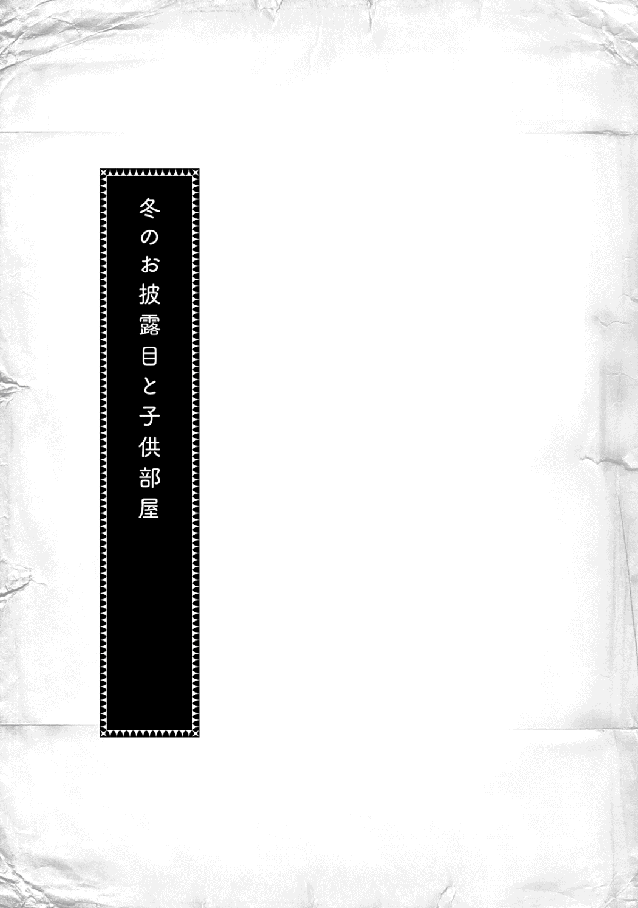
冬の社交界は、冬の洗礼式とお披露目から始まる。
私の主であるヴィルフリート様は、父親であるアウブ・エーレンフェストから「お披露目までに基本文字と数字を覚え、フェシュピールを弾けるようにならなければ廃嫡 だ」と言われた。それからは生活を一変させ、逃げ出さずに努力を重ねて課題をこなし、壇上で今フェシュピールを奏でて歌っている。領主の子として相応しい姿を集まる貴族達に見せていた。
「ヴィルフリート様、何とご立派な......」
筆頭側仕えであるオズヴァルトが壇上を見上げながら感嘆 の声を漏らした。オズヴァルトが感動に咽 ぶのもわかる。アウブから条件を付けられたこの一月 と少しの期間、ヴィルフリート様の側近達は本当に大変だったのだ。ヴィルフリート様が廃嫡にならないように必死に勉強する中、オズヴァルトは次々と辞めさせられていく側近達をまとめ上げるのに必死だった。逃げ出すヴィルフリート様を追いかける仕事が減った護衛騎士の私と違い、オズヴァルトは格段に仕事が増えていた。
......ヴェローニカ様によって多くの側近が付けられていたが、半分以上が辞めたからな。
側近は辞めさせられた者が多かったが、新しく付けられた者はいない。フロレンツィア様は入れ替えで増員することを望んでいらっしゃったが、ヴィルフリート様の教育が間に合わずに廃嫡になれば、新しく側近になった者はたった一月程度のことで経歴に傷が付いてしまう。それはあまりにも可哀想だ、とオズヴァルトが主張したため、増員は冬のお披露目が終わってからということになった。
......必死に努力して疲弊 しているヴィルフリート様が見慣れない者との生活で気疲れしないように、というのがオズヴァルトにとっては一番の理由だったようだが。
廃嫡の危機にある主を支えるために努力した側近達にとって、壇上でフェシュピールを披露する今のヴィルフリート様の姿は非常に誇らしいものだ。
「ヴィルフリート様がここまで成長されたのは実に感慨深いな、オズヴァルト」
逃げ出したり、悪さをしたりするヴィルフリート様を護衛騎士として追いかける毎日を送っていた私も、生活を改めて課題を成し遂げ、領主の子としてお披露目をこなす幼い主の立派な姿を見ていると胸が熱くなってくる。
......ヴィルフリート様は本当に努力された。これでアウブも他の貴族達もローゼマインも、ヴィルフリート様が次期アウブとして遇されても不満はないだろう。
たまにふらりと城へやってきてヴィルフリート様の様子を見ていくローゼマインは「まだまだ努力が足りません」「少し課題が進んだからといって気が緩んでいるのではありませんか？」「側近が甘やかしすぎていると思います」と側近達を辞めさせたり、周囲の様子はお構いなしで「ヴィルフリート兄様はその程度ですか？」と煽ったりしていた。フロレンツィア様の許可が出ているとはいえ、口を出しすぎるローゼマインの姿には辞めさせられる貴族達から反感を買うのでハラハラしたものだ。
......コルネリウスに注意したら、差し出口だと言われたが。
「今日ばかりはヴィルフリート様を全力で褒めても、ローゼマインも文句は言わないだろう」
「えぇ、ランプレヒト。これから先も努力の継続が必要であることはわかっていますが、リヒャルダも目を光らせて怒ることはないと思います」
私がオズヴァルトと視線を交わしてクッと小さく笑っていると、演奏を終えたヴィルフリート様が専属楽師と共に壇から降りてきた。
「ヴィルフリート様、おめでとうございます。お披露目は成功いたしました。壇上での堂々とした振る舞いには、私の胸も熱くなりました。ランプレヒトも感動していましたよ」
オズヴァルトを始め、側近達が口々に褒めて誇らしく思った気持ちを述べる。自分の側近に囲まれたヴィルフリート様は声を潜めて、こっそりと質問してきた。
「フェシュピールを少し間違ってしまったが、本当に成功だと思うか？」
「アウブ夫妻も誇らしそうなお顔でした。ヴィルフリート様は大変努力されました」
側仕えであるリンハルトの言葉に、認められたことが嬉しくて仕方がないような少し照れた顔でヴィルフリート様が笑う。自分の努力で勝ち取ったという達成感に満ちた笑顔はヴェローニカ様から庇われ、甘やかされていた頃には見られなかったものだ。
「これより先のヴィルフリート様のご健闘 を心よりお祈り申し上げます」
「うむ。私も領主の子としてこれからも取り組んでいきたいと思う」
胸を張って堂々とした姿でお披露目を終えた主を誇らしく思い、側近である自分達の立場が保証されたことに安堵した。その直後、他ならぬ私の妹によって側近達の安心感は打ち砕かれることになる。
「ローゼマイン」
名を呼ばれてゆっくりとした優雅な歩みで壇上を進み、夜空のような色合いの髪に珍しい花の髪飾りをつけて中央にある椅子に座ったのは、私の妹であり、領主の養女となったローゼマインだ。
アウブの口から「領主の養女となるに相応しい魔力を持ち、孤児達を救おうとする慈悲の心と、新しい産業を作り出す優秀な子供で、エーレンフェストの聖女である」と貴族達に向けて紹介されたが、他に紹介の仕方はなかったのだろうか。貴族達の間には疑わしげな空気が漂っているし、「エーレンフェストの聖女」という看板を背負って生きていくのは、ローゼマイン本人にとっても重荷でしかないと思う。
けれど、ローゼマインは狼狽 えることもなく、その紹介を当然のものというように楚々 とした笑みを浮かべている。神殿で接した様子を見れば、内心では慌てていると思うのだが、顔には出ていない。
エックハルト兄上が「フェルディナンド様の教育を受けたローゼマインと、ヴェローニカ様に甘やかされた子供を比較する意味があるのか？」と言っていたが、本当によく教育されていると思う。次々と課題をこなしていくヴィルフリート様を褒める私に、「甘やかしすぎです」と注意していた様子を見れば、ローゼマインは一体どんな教育を受けていたのだろうかと可哀想になるくらいだ。
ピィンと高い音が響く。
ローゼマインが楽師に手渡されたフェシュピールを奏で始めた。幼い手で弾かれるその曲はそれまでの子供達に比べると、段違いに難度が高くて美しい旋律だ。しかも、新しい曲のようでローゼマインの練習以外では聴いたことがなかった。そこにローゼマインの幼い歌声が加わった。
「ほぅ、これはすごい。貴族院に入った後で課題として出されるような難度の曲だぞ」
「確かにとても優秀であることに間違いはないようだな」
......頑張れ、ローゼマイン。
ヴィルフリート様に、そして、私にも成長の機会を与えてくれた妹のお披露目だ。護衛騎士になったコルネリウスほどは接する時間がないけれど、私は親しみを感じている。
しかし、私の妹はフェシュピールも素晴らしい技量だな、と悠然と構えて見ていられたのは、ほんの少しの間のことだった。
「......何だ？」
突然ローゼマインの手元が青く光った。洗礼式に父親から贈られた指輪が光っているように見える。初対面の挨拶で祝福をする時でもなければ使わない指輪が何故光っているのか。答えは一つしかなかった。ローゼマインが祝福を行っているからだ。
フェシュピールを奏でる一音一音と共に指輪から青い祝福の光が溢れ、大広間へ広がっていく。これほど大規模な祝福の光を見るのはローゼマインの洗礼式の時以来だ。あの時も二百名以上いた招待客に向けて祝福を贈ったことに驚いたけれど、今日はエーレンフェストの貴族全員である。
......何故このようなことを？
驚嘆と共に胸に湧き上がってきたのは不安だ。素晴らしいと思うより、嫌な予感に鼓動 が早くなってきた。
「洗礼式の時もすごいと思ったが、今回はまた派手だな」
青い祝福の光を見上げて感心したように言っているのはヴィルフリート様だった。けれど、ヴィルフリート様の側近達は感心するどころではない。お披露目が成功したらヴィルフリート様が次期アウブとして認められるのではなかったのか。これでは完全にローゼマインの引き立て役ではないか、という焦りと苛立ちが透けて見える。
洗礼式の時は保護者三人から「招待客全員に祝福を返すように」とローゼマインは言われて、その通りにしたらしい。今回もまた強要されたのだろうか。少しでもローゼマインに見劣りしないように、と必死になって努力してきたヴィルフリート様や自分達の努力を踏みにじられたような気がしてならなかった。
......ローゼマインだけではなく、ヴィルフリート様のお披露目でもある場で一体何をさせているのですか!?
私は思わずアウブと父上とフェルディナンド様に睨むような視線を向けた。視線の先ではアウブ夫妻も、私の両親も、兄弟も軽く目を見張って青い祝福の光を見つめている。どうやら最初から決まっていたことではなく、突発的で予想外の出来事らしい。
......何をしているのだ、ローゼマイン!?
もう止めておけ、と言いたいのを堪えながら青い光を見ているうちにローゼマインの演奏は終わる。貴族達も大規模な祝福にどのような反応をすれば良いのかわからないようで、拍手はまばらだ。
「エーレンフェストに恵みをもたらす聖女に祝福を！」
演奏を終えて戸惑った顔をしているローゼマインを抱き上げて、フェルディナンド様が騎士団に向けて命じる時のような声を出す。どのように反応すれば良いのかわからなかった貴族達は、命じられるままに皆がシュタープを出して光らせた。
フェルディナンド様が至極冷静な顔をしていたので、大規模な祝福は独断でローゼマインに命じたことかと一瞬疑った。けれど、ローゼマインに手を振らせながら足早に大広間から立ち去る姿を見れば、フェルディナンド様にとっても予想外のことだったとわかる。
ローゼマインが退場し、ざわめく貴族達を抑えるためにアウブが壇の中央に立った。
「魔力が豊富で、神々に愛されていることは誰の目にも明らかであろう。ローゼマインは新しい産業をエーレンフェストにもたらすエーレンフェストの聖女だ」
取り繕うためとはいえ、アウブが言葉を重ねたことで貴族達の間で「エーレンフェストの聖女」という大層な呼び名が「大袈裟 な」から「確かに」へと変わっていくのが目に見えてわかる。
「素晴らしい！ さすが私の孫娘！」
「ボニファティウス様のおっしゃる通りです。ライゼガングの血を継ぐ領主候補生の誕生を心より嬉しく思います。一族挙げて後援 しなければなりません」
ローゼマインの祝福は保護者全員にとって想定外のことだったようだ。けれど、ここにいる貴族達はそのようには考えないだろう。長くヴェローニカ様から冷遇 されていたライゼガング系の貴族達は、自分達が戴く領主候補生としてローゼマインを褒め称えている。母上やエックハルト兄上は「ローゼマイン様はアウブを望んでいません」とライゼガング系の貴族に向かって否定しているが、それが受け入れられているようには思えない。
「今日は新しい料理が数多くある。楽しみにしている者も多かろう。これから先のエーレンフェストの大きな武器となる料理を存分に堪能するがいい。授与式は昼食後に行う」
アウブが予定を変更し、「先に昼食を」と言ったことからも、打ち合わせや調整が必要な事態が起こっていることは想像に難 くない。
私は保護者達に対する苛立ちが抜ける代わりに、周囲の貴族達の反応に不安でいっぱいになってきた。「ローゼマインを次期アウブにするつもりはない」とアウブ・エーレンフェストや父上は言っていたが、ヴェローニカ様が失脚し、これまで冷遇されてきたライゼガング系貴族の台頭が見えるこの時世で、本当にヴィルフリート様が次期アウブになることは許されるのだろうか。
明らかにローゼマインは魔力量が群を抜いていて、領主の養女となるのに相応しく、立ち居振る舞いや教育も問題ないことを見せつけている。ローゼマイン本人が望む、望まないに関係なく、次期アウブとして祭り上げられる未来が見えるようだった。
側近達は全員が同じ思いを抱いているのだろう。複雑な表情で顔を見合わせている。そんな中、昼食のために食堂へ移動していたヴィルフリート様がニコリと笑った。
「お披露目に成功して安心したらお腹が空いてきた。昼食が早くなって私は嬉しいぞ。今日はローゼマインが考案した新しい料理ばかりだそうだ。ランプレヒトも好きであろう？」
ヴィルフリート様の言葉にフッと体の力が抜けた。そうだ。お披露目は成功した。廃嫡は免 れたのだ。今日はそれを喜び、いかにしてヴィルフリート様を盛り立てていくか考えよう。
「ローゼマインの料理はおいしいですからね。私も楽しみです」
昼食中に側近達の間で一つの命令が行き交った。「宴の間に情報収集を行え」と。
宴の間に情報収集を行い、ヴィルフリート様が就寝された後でこれから先について話し合う。今も尚残っているヴィルフリート様の側近の中で、私は唯一のライゼガング系貴族でローゼマインの実兄だ。両親からローゼマインが向かう方向を尋ね、ライゼガングの動きを仕入れてくる役目は私にしかできないことだった。
不寝番 をヴィルフリート様の部屋に残し、それ以外の側近がオズヴァルトの部屋に集まった。暗がりの中で口火を切ったのは、オズヴァルトだ。
「廃嫡は免れた。ならば、この後はアウブのお言葉を信じて進むしかあるまい」
「あぁ。ヴィルフリート様を本当の次期アウブにするために我々は進むだけだ」
「ライゼガング系の貴族がローゼマイン様を次期アウブに、と盛り上がっているが、ヴィルフリート様はヴェローニカ派の貴族を取り込むことも可能ではないか」
「そうだな。ヴェローニカ派の貴族達はヴィルフリート様を支持してくれるであろう。ライゼガング系の貴族よりも数が多くなっているのだから、これは心強い味方だ」
様々な意見が出る。けれど、ヴィルフリート様の側近達は元々ヴェローニカ様によって集められた者達が多いので、どうしても意見はヴェローニカ様がいらっしゃった頃と同じ感じになっていく。私は思わず歯止めをかけた。
「いや、待て。そのような思い込みは危険だ」
「どういうことだ、ランプレヒト？」
「今はヴェローニカ様とその側近が捕らえられただけで済んでいるが、周囲の貴族達がどのような扱いになるのか未だに明確にはされていない。慌てて旧ヴェローニカ派の貴族達を取り込んだところで、今のヴィルフリート様の基盤は盤石 とは言えぬ。しばらくは慎重に貴族達との距離を測り、中立派から取り込んでいくべきではないか？」
オズヴァルトが少し考え込んだ後、私の意見に同意してくれた。
「ランプレヒトの言う通りですね。アウブがヴェローニカ派の貴族をどのように扱うおつもりなのか判明した後でも取り込みは可能でしょう。今はヴィルフリート様に次期アウブとしての教育を施 し、子供部屋でできるだけ優秀な側近をヴィルフリート様に得てもらうことを最優先にした方が良いと思います」
大人の事情はもう少し時流 を読んでからにして、貴族院で側に侍 ることになる同年代の子供から取り込みを開始したい、とオズヴァルトは言った。
「来年にはシャルロッテ様が洗礼式を行いますから、貴族院における側近を三人で取り合う形になることが予想されます。ローゼマイン様は今年のうちにできるだけ女性の側近を得ようとするでしょうから、男性の側近をできるだけヴィルフリート様に集めたいと思います」
貴族院の寮にある自室は基本的に異性を入れない習慣になっている以上、集めるのはどうしても同性が優先される。文官や騎士は異性でも問題ないが、生活に最も深く関わる側仕えは同性でなければならない。
「子供部屋でヴィルフリート様ができるだけローゼマイン様に見劣りしないようにしなければなりません」
オズヴァルトの意見はわかるが、どう考えても無理がある。廃嫡になってもおかしくなかったヴィルフリート様の教育計画を立てたのはローゼマインだ。褒めたり、煽ったりしながらやる気を引き出していたのも、褒めることに慣れていても叱ることに慣れていない私達よりローゼマインの方が上手かった。あの勢いで子供部屋を握られれば、ヴィルフリート様に太刀打 ちできるとは思えない。
「オズヴァルトの言いたいことはわかるが、兄の贔屓目 だけではなく、ヴィルフリート様がローゼマインに見劣りするのはどうしようもないと思う。子供達はあのフェシュピールの演奏を聴き、祝福を見て子供部屋にやってくるのだぞ」
側近達は揃って言葉に詰まる。無理なことを言っているのは、自分でもわかっているのだろう。
「だからといって、ヴィルフリート様を盛り立てるために何もしないというわけにはいかないでしょう。何か良い案があるのですか？ このままではローゼマイン様に次期アウブの座を奪われてしまいます」
「ランプレヒトはローゼマイン様の実兄ではありませんか。何か弱点を知っているのでは？」
ローゼマインに次期アウブの座を奪われることを警戒して敵対姿勢を見せるリンハルトの姿に、「これが本来の在り方だ」と感じながら私は小さく笑った。今までのようにヴィルフリート様が次期アウブと定められていて何も考えなくてもよかった方がおかしかったのだ。
「別にローゼマインと敵対する必要はない。ローゼマインが持たぬものやヴィルフリート様が勝る部分を前面に押し出すようにすれば十分だと思う」
私の言葉に側近達は嫌な顔で「ヴィルフリート様の方が勝るところとは？」と問う。どうやらローゼマインの優秀さばかりに目が向いていて気付いていないようだが、ローゼマインはアウブには向かない。どうしようもない欠点があるのだ。
「ローゼマインにはなくて、ヴィルフリート様がお持ちのもの。それは健康で丈夫な体だ。館の中で図書室へ行くために興奮して意識を失ったり、最後まで宴に参加できなかったりするローゼマインの虚弱さは、いくら優秀でもアウブになるには致命的 ではないか。私は宴の間に両親やフェルディナンド様から話を伺ったが、保護者達はローゼマインがいくら優秀でも次期アウブにするつもりはないらしい。次期アウブを支えるための養子縁組だそうだ」
ざわりとした後、側近達がお互いに顔を見合わせる。あれほど優秀でも次期アウブの候補にはなれないのか、と安堵とも落胆ともつかない声が漏れていた。自分達の仕えるヴィルフリート様にアウブになってほしいが、魔力豊富で優秀な次期アウブがエーレンフェストには必要だというのも本音なのだ。
「ローゼマイン様を後見する者がそのような意見なのであれば、ヴェローニカ様に対抗するため、フロレンツィア様に養育されたシャルロッテ様の方が脅威 になるかもしれません」
オズヴァルトの言葉に私は軽く目を見張った。そんなことは意識になかったのだ。側近を得る上ではローゼマインとシャルロッテ様が女性側近を取り合う形になるだろうと予想していたが、シャルロッテ様を次期アウブという枠では見ていなかった。
「今まではヴェローニカ様が絶対に許さなかったでしょうし、女性の領主候補生という枠で見ればローゼマイン様の方が圧倒的に優位です。ですが、ローゼマイン様が次期アウブに名乗りを上げないのであれば、シャルロッテ様が......」
「シャルロッテ様は女性の領主候補生だ。男性であるヴィルフリート様の方が有利ではないか」
側近達は頷き合っている。このままヴィルフリート様が領主候補生として努力を続ければ、シャルロッテ様が性差を覆すのは難しくなるはずだ。それはジルヴェスター様とその姉上達の関係からも明らかである。つまり、性差を易々 と覆 すローゼマインの存在が強烈なのだ。
「では、ローゼマイン様とは敵対するのではなく、協力して事に当たるようにヴィルフリート様を指導していきましょう。協力体制を築き、将来的にローゼマイン様とヴィルフリート様を結婚させることができればライゼガング系の貴族を容易に取り込むこともできるはずです」
オズヴァルトが拳を握る。その主張に反対する者はいなかった。ローゼマインがライゼガング系の貴族をまとめ上げ、ヴィルフリート様がヴェローニカ様の築いた政治基盤をそのまま受け継ぐことができれば、これ以上はない。
......虚弱なローゼマインを次期アウブにするよりは現実的だし、次期アウブを支えるためにローゼマインを養子縁組させたのであれば、父上達の視野にはヴィルフリート様との結婚が入っているであろう。
翌日からは子供部屋へ向かうことになる。私達は朝食の席でヴィルフリート様に子供部屋で行うことについて説明した。お披露目を成功させるのが優先だったので、その後のことについて話をするような余裕はこれまでなかったのである。
「初日には挨拶が行われる。私は椅子に座って挨拶を受けるだけで良いのだな？ その後は子供部屋の様子を見ながら側近を選ばねばならないということで間違いないか？」
「その通りです。側近は今日すぐに選ぶのではありません。ヴィルフリート様が貴族院へ入学する三年後までにじっくりと時間をかけてお選びください」
「貴族院に入学してから冬の間ずっと一緒に過ごすことになる側近です。優秀さはもちろんのことですが、自分と感覚が合う者でなければお互いに不快な思いをすることになります」
仕える気がない者を側近にするのは危険だ。主に危険をもたらす可能性は高くなるし、解雇 されると側近側はその先の出世が望めなくなる。自分と感覚の合う者は自分で見極めるしかない。
「子供部屋を統率する技量によって貴族達からは次期アウブとしての資質を問われることになります。ローゼマイン様と協力して子供達を統率してください」
オズヴァルトの言葉にヴィルフリート様が少しばかり不安そうな顔になった。
「それほど心配しなくても、体を動かす場面でヴィルフリート様が積極的に動けば問題ありません」
「虚弱なローゼマイン様には難しい部分もあるでしょう」
側近達から次々と言われたヴィルフリート様はむむっと腕を組んで考え込んでいたが、「わかった」と頷いた。
「確かにローゼマインは歩くことに練習が必要なくらいだからな。体を動かすところは私が率先して行うことにしよう」
たくさんの学生達が集まっている子供部屋では、皆がローゼマインやヴィルフリート様の言動に注目している。初対面の挨拶が長い列をなしていて、挨拶の終わった学生達は入学前の子供達と話をしている姿があった。
例年ならば上級貴族が下級貴族に威張り散らしたり、洗礼式を終えた直後の子供達を自分達の派閥に入れようと躍起 になったりする姿が見られていたが、それがない。学生達は自分達の優秀さを示すように、幼い者達へ貴族院の様子を教えたり、自分達が学んでいる内容についてやや大きめの声で話をしたりしながら、ヴィルフリート様とローゼマインの様子を窺っている。いつもは中級や下級の貴族が自分を庇護してくれる上級貴族を見つける時間が非常に穏やかなものに感じられた。
「今年はずいぶんと学生達がおとなしいではないか」
「当然だ。領主候補生がやってくるのだ。側近に取り立てられるのが出世の早道だからな。側近として取り立てられるためには彼等がどのような性格で、どのような言動を好んでいるのか知ることから始める必要がある。しばらくはおとなしいだろう」
リンハルトの言う通りだ。確かに領主候補生の前でいきなりそのようなことはできない。特に、ローゼマインは孤児達にも慈悲を施すと言われている。権力を笠 に着た横暴 は慎 んだ方が良いと判断されているようだ。ヴェローニカ様が失脚して一年と経っていないせいもあるだろうし、大人の派閥の力関係が落ち着いていないせいもあるだろう。派閥争いもそれほど顕著 には見えない。
私は部屋の中の子供達を見回しながら、ヴィルフリート様と同時期に貴族院へ進む者の様子を静かに見つめる。「ランプレヒトにはできるだけライゼガング系の貴族を取り込めないか、橋渡しをしてもらいたい」とオズヴァルトに言われている。
......貴族院の成績が出た後で、アレクシスやハルトムート辺りに声をかけてみるか。いや、コルネリウスがローゼマインの側近候補として貴族院で先に声をかけるかもしれぬな。
虚弱な妹が主なので非常に過保護 だと言われているコルネリウスならば、ローゼマインの側近候補もすでに吟味 しているだろう。貴族院の期間にコルネリウスが打診してしまうと、後から声をかけても意味がなくなってしまう。
コルネリウスが貴族院へ向かう前日、自宅に戻った私は貴族院への出発準備をしている弟に尋ねてみた。
「コルネリウス、其方はローゼマインの側近について何か考えているのか？」
しかし、過保護と噂のコルネリウスは少し首を傾げただけだった。
「特には考えていません。神殿へ出入りし、領主の養女でありながら保護者が次期アウブにはさせられないと言い切る微妙な立場ですから。ローゼマインに心酔 している者やよほど事情を持った者でなければ難しいと思いますよ」
コルネリウス自身は積極的にローゼマインの側近を打診するつもりはないようだ。ヴィルフリート様のために側近候補に声をかけていこうと思っていた自分の方が主に対して少し過保護だったように感じていると、コルネリウスが少し躊躇った後で口を開いた。
「父上や母上にも釘を刺されましたし......」
なんとコルネリウスは「側近として近くに居続けて、自分の推薦した側近と主の仲立ちをする気もないならばローゼマインの側近選びに口を出すな」と両親に叱られたらしい。
「コルネリウス、其方は護衛騎士を辞めるつもりだったのか？」
「ローゼマインが自分で側近を選ぶようになれば辞めても良いという条件で護衛騎士になったのです。実は、まだ自分がローゼマインの側近を続けていくかどうかも私は決めかねています。ローゼマインが困った主というわけではないのだけれど......」
コルネリウスがポツリと悩みを吐露 する。
「ダームエルは処分と償いのため、ブリギッテは故郷であるイルクナーのためにローゼマインに仕えています。アンゲリカは騎士団長に打診されたから断ることは考えもしなかったそうです。私は、自分が一人の主に仕えるという感覚をまだつかめていません」
ローゼマインに仕え続けるのも悪くはないけれど、それに足る理由がない。私も似たような悩みを抱いた時があったので、何となくコルネリウスの焦りがわかる。
......そういう状態ではローゼマインの側近候補を見繕っている場合ではないだろう。
「ランプレヒト兄上は何故ヴィルフリート様に仕え続けることを選んだのですか？ 逃げることもできたのに......」
ヴィルフリート様の側近が次々と辞めさせられていく中で、「辞めても良い」とオズヴァルトは言った。母上に無理を言っていたヴェローニカ様が失脚され、実妹のローゼマインが領主の養女となったのだから、もう私がヴィルフリート様の側近でいる必要はない、と。
私は思い詰めている顔をしたコルネリウスを見下ろす。母上と話をした時、私もこのような顔をしていたのだろうか。
「強いて答えを挙げるならば、ヴィルフリート様に自分が必要だと思ったからだ。それに、ヴィルフリート様の側近として満足に仕事をしていないまま、他の者に仕えられる気がしなかった。共に成長できると思ったのだ。......だが、こういうことに明確な答えはない。自分で答えを出すしかないぞ」
ポンポンと軽くコルネリウスの頭を叩きながらそう言うと、コルネリウスは何とも言えない顔で私を見上げた。
「自分が満足できる仕事をしていなかったから......？ そのような理由でヴィルフリート様を主に選んだのですか？ エックハルト兄上とずいぶん違いますが......」
「エックハルト兄上は特殊だ。参考にならぬ。あの基準では仕えられる主などできるわけがない」
何よりも自分の主を優先させるような仕え方をするエックハルト兄上と比べられて、私は少し遠い目になった。あのように心酔して、たとえ解任されても唯一の主だと心に決めて仕える相手を選ぶ者はそう多くない。情勢によって仕える主を変える者の方が一般的である。
「騎士団長としてアウブに仕える父上、命を賭してもフェルディナンド様以外に仕える気はないエックハルト兄上を見ていればコルネリウスの基準がおかしくなるのもわかるが、最初からそこまでの忠誠は求められておらぬ。何が起こっても変わらぬ忠誠を得られるか否かは主側にも責任があるからな」
「エックハルト兄上は特殊ですか......。自ら主を選ぶならば、あのくらいの強い気持ちが必要なのかと思っていたのですが、ランプレヒト兄上の言葉に少し安心しました。自分なりの理由を探して、もう少し悩んでみます」
コルネリウスが迷いの晴れたような顔でそう言って背を向ける。ローゼマインに仕え続けるための理由を探す時点でコルネリウスの気持ちは決まっていると思うのだが、指摘するのは止めておくことにした。
貴族院へ向かう子供達がいなくなり、子供部屋はこれから一冬を共に過ごす者ばかりになる。その途端、ローゼマインがカルタを取り出して、「皆で遊びましょう」と言い出した。手早く子供達を学年ごとに分けて、経験者の自分達は一番上の学年に交ざってカルタを始める。二人の圧勝だった。
「リンハルト、ランプレヒト！ 相手は年上だが、ローゼマイン以外の者には勝ったぞ」
ヴィルフリート様が自信を回復しているが、おそらく年嵩 の子供達は親から「接待」を言いつけられているのだろう。あちらは負けても全く悔しそうでもなく、喜ぶヴィルフリート様を優しい眼差しで見ている。勝たせてあげたというのが見ていてわかった。ローゼマインはそれを感じ取ったようで、わずかに不満そうな顔をした後、唇の端を上げてニコリと微笑みながら子供達を見回す。
「しばらくは経験者であるわたくしたちの方が強いでしょうけれど、冬の間に一度もわたくし達に勝てないようでは側近などとても任せられませんものね、ヴィルフリート兄様？」
ヴィルフリート様が「う？」とよくわかっていないように少しばかり首を傾げたが、周囲の子供達はローゼマインの言葉を聞いて一斉に表情を引き締めた。
「再戦を楽しみにしておりますね。明日からは一番優秀だった者にお菓子を贈りましょう」
接待などさせるつもりはないのだろう。ローゼマインはそのために自分が専属に作らせたお菓子を持ち出してきた。普段ならば下げ渡されるのを待たなければならないお菓子がそのまま自分の物になるのだ。中級や下級の子供達は目の色を変えてカルタを睨み始めた。
中級や下級貴族の子供達が本気になれば、上級貴族は悠長に接待などしていられない。中級や下級に負けるのは、上級貴族としての能力を疑われることになるからだ。ほんの一日でローゼマインは子供達を本気にさせた。
「見事だな......」
リンハルトの呟きに私は頷いた。あまりにも手際 が良すぎて唖然としながら見ているしかできない。とても子供部屋の中で最も幼い容姿をした者の言動とは思えないのだ。
カルタやトランプでやる気を煽り、モーリッツ先生と共にそれぞれの子供達に合わせた学習を、領主候補生と同じ時間だけさせる。ヴィルフリート様の傍らで見ているだけでも、子供達がめきめきと成長しているのがわかった。
皆がモーリッツ先生に教えられて勉強している間、ローゼマインは一人だけ城の図書室から借りてきた難しくて分厚い本を静かに読んだり、新しい本を作るためのお話を書いたりしている。すでに貴族院へ入学しても問題がないくらいにフェルディナンド様の教育は進んでいるようで、他の者達と同じことを一緒に勉強する必要はないらしい。
ローゼマインはフィリーネからお話を聞いて書き取りをさせたり、絵本の読み聞かせをしたり、たまにカルタ大会で全勝してヴィルフリート様を奮起させたりと、教育を受ける者ではなく、モーリッツと共に教育者の立場で動いているのが誰の目にも明らかだった。
......ヴィルフリート様が見劣りする、しない以前の問題だったな。ローゼマインは一人だけ次元が違うではないか。
だが、次元が違いすぎるせいか、虚弱で分厚い本ばかり読んでいるせいか、活発な男の子はローゼマインにどのように接してよいのかわからないようで少し遠巻きにしている。そういう男の子達はヴィルフリート様が上手く率いていた。
「今のうちに腕を磨いて何としてもローゼマインに勝つのだ！」
ローゼマインが神殿へ奉納式のために向かうと、ヴィルフリート様はいかにしてローゼマインに勝つかの作戦会議を始めた。ローゼマインが不在になると、男の子達の動きが活発になり、おとなしい女の子達はあまりカルタやトランプに参加しなくなった。ヴィルフリート様から距離を取るようにして様子を窺っている。ローゼマインもヴィルフリート様も同性と仲良くする傾向があるようだ。側近候補の取り合いを考えると、住み分けができていてちょうど良いのだが、少々女の子達が窮屈そうにも見えた。やはりヴィルフリート様とローゼマインの二人が必要なようだ。
「ローゼマイン様はお強いですからね。どのようにすれば勝てるのか......」
中立派のイグナーツ、ライゼガング系のトラウゴット、旧ヴェローニカ派のイージドール、ラウレンツ、ローデリヒというように、ヴィルフリート様の周囲にいるのは派閥を越えた学友である。顔を付き合わせて作戦会議をしている様子は非常に微笑ましい。すでに接待の色合いはなくなり、賞品であるお菓子のためにはヴィルフリート様を負かすことも躊躇わない仲間になっている。
とても良い雰囲気だった。子供達を率いるヴィルフリート様の姿から貴族達を率いる将来の姿が見える気がした。
......イグナーツとトラウゴットはできるだけ側近として取り込みたいものだ。
ヴィルフリート様の側近としてできるだけのことをしていきたい。そう思いながら私は学友達と目を輝かせて話し合っているヴィルフリート様を見つめていた。
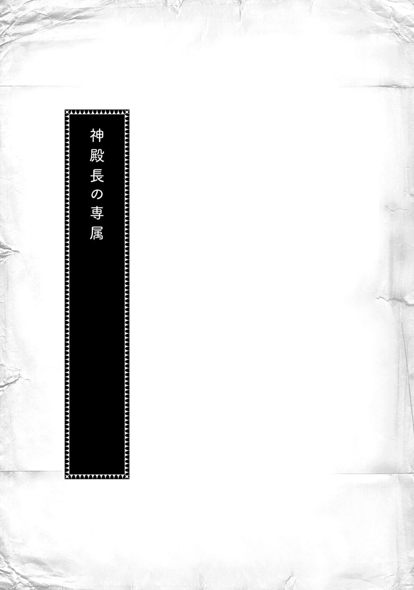
「......ってことで、ハッセに新しく作られた小神殿の内装や家具について、木工協会が責任をもって仕事を采配するように命じられた。できるだけ早く、一月 から二月 で完成させろという新しい神殿長の注文だそうだ。代理人は商業ギルドのギルド長グスタフとギルベルタ商会のベンノの二人。何しろ日がないから金に糸目はつけないらしい。建築協会にも声をかけているそうだが、家具や内装でこっちが負けるわけにはいかねぇ。各自全力で仕事に当たってくれ」
街にある全ての木工工房の親方が木工協会に集められた会議で、協会の者から話があった。やる気を見せた親方達が「おぅ！」と力強い返事をして立ち上がる中、俺は一人で呆然としていた。
......おいおい、どういうことだよ？
ハッセに新しく小神殿を造るなんて話も、そんな大規模な依頼を木工協会に出すなんて話も、神殿長の専属であるはずの俺は全く聞いていない。普通は神殿長から専属に話があって、専属から協会へ話を持っていくはずだ。どこの工房にどんな仕事を回すのか、どれだけの金が動く仕事なのかを考えながら専属が協会と一緒に采配を行う。それなのに、俺は工事が行われることさえ知らされていなかった。そのうえ、ギルド長とベンノが代理人に名を連ねているのに、専属の木工職人である俺の名前はない。
......俺は神殿長の専属じゃなかったのか？
ギルベルタ商会の専属ドスタル工房の親方から仕事を回されて、何度か神殿長の仕事を受けた。印刷機を作ってほしいとも言われたし、孤児院の冬の手仕事の用意はウチの工房で注文を受けている。仕事には満足していると仲介 役のギルベルタ商会から言われていたし、ドスタルの親方には「神殿長になるチビちゃんだってわかってたらインゴに回さなかったさ」と何度か言われていたくらいだから、俺は自分が神殿長の専属になったものだと考えていた。
......違ったのか？ それとも、何か不満があって専属から外されたのか？
冷たい水を頭から被せられたみたいに体中が冷たくなっていく。指先が震えているのがわかった。インゴ工房は木工協会の中で一番若い工房だ。領主の養女になった神殿長の専属かどうかというのは、協会内の立場を大きく変える。専属から外されたのであれば、工房の未来は非常に暗いものになるだろう。
「おい、インゴ。お前の工房の仕事だけど......」
協会の者に声をかけられて、仕事の割り振りを聞くために俺はのっそりと立ち上がった。新しい小神殿の窓枠を作るように言われた俺は頷いて了承すると、木工協会を出る。
空が明るく、太陽は眩しい。肌を焼く夏の日差しが差していた。木工協会の外には大きな仕事に興奮している工房の親方達がいる。ドスタル工房の親方が俺に気付いて手を振りながら近付いてくる。ガシと肩を組むようにして身を寄せ、小声で問いかけてきた。
「インゴ。お前さ、代理人にも名前がねぇし、采配も任されてねぇみたいだが、本当に神殿長の専属なのか？」
自分の胸に渦巻く不安をそのまま指摘され、俺はハッキリと即座に「専属に決まっているだろう。バカなことを言うな」とは返せなかった。明確に返事できなかったことが、返事になってしまったようだ。ドスタル工房の親方は「......そうか」と意味あり気に笑う。
「じゃあ、この仕事は狙い目だな」
まずい、と思った時にはもう遅かった。ドスタル工房の親方の目配 せだけで、「インゴ工房は神殿長が満足する仕事をできなかったため、専属を外された」と認識されたらしい。親方連中がこぞって神殿長の専属を狙い始めたのが嫌でもわかった。
「急ぎで、大規模な工事が始まることになった」
俺は工房へ戻って職人達に新しい神殿の仕事の話をした。神殿長が依頼する大規模工事ということで、二人のダプラが「やった！」と喜びの声を上げる。ウチの工房の躍進を信じている二人の笑顔に、俺は苦い思いを噛みしめながら軽く手を上げた。
「リヌス、ディモ。これは喜べることじゃねぇんだ。木工協会に依頼がされたんであって、俺は前もって神殿長から話を聞いていたわけでもなければ、神殿長の代理人に指名もされてない。......もしかしたらウチの工房は専属を外されたかもしれねぇんだ」
俺の言葉に二人は目を見開いて黙り込んだが、妻のアニカは俺の言葉を笑い飛ばした。
「暗い顔しなくても、神殿長から専属から外したって言われたわけじゃないんでしょ？」
「それはそうだが、神殿長にウチの工房をどう思っているのか尋ねるような機会や伝手はねぇからな。突然外されててもこっちにはわからねぇんだ」
アニカが言う通り、完全に決まったわけじゃないし、神殿長が平民なら直接訪ねることができた。本人に確認できれば一番確実だが、俺達みたいな職人がそう簡単に会える相手ではない。
「心配性ね。あんなに依頼があったんだからそんなに心配しなくても大丈夫よ。次の仕事が来るかどうかで専属と思われてるかどうかなんてすぐにわかるんだから、今回引き受けた仕事を確実にするのが一番大事じゃない。神殿長の専属だって胸を張って言えるように他の工房に負けないような仕事をしなきゃ」
どちらかというと小柄なアニカが俺の背中をバンバン叩きながら笑ってそう言った。アニカの体格には不似合いなくらいの勢いと元気で朗らかな笑顔に少し気分が上向いてくる。
「ちょっと楽天的すぎるんじゃねぇか？」
「そぉ？ 専属だって手を抜いた仕事をしたら外されるんだから、わたし達にできることなんて与えられた仕事を丁寧にしてお客に満足してもらうしかないでしょ？」
グレイの目がじっと俺を覗き込んでいる。アニカが不安を押し殺して俺を何とか元気づけようとしているのがよくわかった。アニカやダプラ達の前で背中を丸めているわけにはいかない。俺はぐいっと背中を反って体を伸ばす。
「アニカの言う通りだ。考え込んだところで何も変わらねぇ。......ウチの工房は新しい神殿に泊まり込みで仕事をすることになるそうだ。明日は商業ギルドで泊まり込みをする工房に対して説明会があるから行ってくる」
木工協会ではなく商業ギルドで説明が行われるのは、商業ギルド長が神殿長の代理人であるため、手付金が支払われるため、木工工房だけではなく建築工房の親方も参加するためらしい。
俺は商業ギルドの二階に集められている見慣れない顔を見回す。いくつもの工房の親方が集められていて、交代でハッセの小神殿へ泊まり込みで作業をしてほしいと言われた。奥さんなり、娘なり、下働きを雇うなりして家事をするための女手も連れていく必要があるそうだ。新しい神殿には工房の者が泊まり込むための部屋数は十分にあるが、扉や窓枠は最初に各自で付けなければならず、布団などの日用品も運び込む必要があるらしい。
......つまり、ドアと窓枠は工房で作って運び込まなきゃ寝泊まりもできねぇってことじゃねぇか？ 急ぎで作らなきゃ現地に行くこともできねぇな。
「小神殿へは荷車で生活用品を運び込むことになるし、長期間の親方の不在はどうしても負担になるため、泊まり込みは交代になる。今日集まっているのは最初に出発する工房だ。各協会から仕事の早い工房を選んでもらった。負担は大きいと思うが、よろしく頼む。当然だが、できた仕事の量や質によって報酬は異なる」
ギルド長が「其方等は出発を急かせることになるため支払いは弾む」と言いながら小金貨をちらつかせると、親方達はニッと笑う。
「お貴族様の白の建物は扉や窓の大きさが決まってるから、仕事はやりやすい。ハッセとこっちでガンガン作っていくぜ」
食料品はオトマール商会が食料品店に仕事を振り分け、神殿まで売りに行くそうだ。ハッセや周囲の農民からも買い取るようにも言われ、生活面についても注意を受けた。
「インゴ、お前は残ってくれ」
説明を受けた後、親方達が帰る中、俺はギルベルタ商会のベンノに呼ばれた。親方達の事情を探るような何とも言えない視線を受けながら、ベンノのところへ行く。
「インゴ、お前はローゼマイン様の専属だろう？ 最初から最後まで小神殿に泊まり込みで仕事をしてもらうことになる。準備はしっかりしておけ」
どこにどの工房の物を取り付けるのか、現地での指示役が必要になるらしい。その役目を俺に割り振るそうだ。ベンノからは専属だと思われていることに少し安堵しながら、俺は「......なぁ、ベンノの旦那。俺は神殿長の専属なのか？」と尋ねてみる。明確な答えを返してほしかったが、ベンノは曖昧 に首を捻っただけだった。
「グーテンベルクの数に入っていたと思うが、専属だと言われてないのか？ だったら、ドスタル工房の奴等にも色々と文句を言われたんだが、俺は言われ損じゃないか」
「そんなことはどうでもいいけどさ。俺が専属だとしたら、なんで俺には知らされてないんだよ。こんな大規模な工事、ずいぶん前から話があったはずだろ？」
一月 から二月 、と納期が短くて街にある木工工房や建築工房が総出で行う工事だ。事前に取り決めがなければ、とても皆を動かせないはずだ。そんな俺の言葉を聞いたベンノは、顔をしかめて首を横に振って指を三本立てた。
「いや、これが決まったのは三日前だ」
「はぁ!? 」
ベンノは軽く事情を話してくれた。神殿長、ギルベルタ商会、オトマール商会が一緒に出資したイタリアンレストランが完成し、開店前に領主様をお招きして食事会が行われたらしい。その席でこの街以外にも孤児院を作って工房を増やしたい、と願い出たそうだ。
「神殿長は孤児院が欲しいと前から言っていたんだが、その時点では白の建物にするつもりはなかった。建築工房に話をして、内装は木工工房に頼む下町のやり方で建てる計画だったんだ。他の土地に孤児院を建てる許可を得たら下町の職人に話をする予定で......」
「そりゃ、確かに上の許可もなく大っぴらに話はできねぇよな」
領主様の許可もなく、事業計画を進めることはできない。ベンノの話は普通に納得できた。だったら、どうしてこんなことになっているのか。俺が腕を組んで先を促すと、ベンノがその時の様子を思い出すように遠くを見つめて、視線を少し上向ける。
「許可を得るためにローゼマイン様が領主様に話したら、その日のうちに魔術であっという間に小神殿ができた。収穫祭までには孤児達の生活を安定させて、工房を使えるように整えろという命令付きでな」
「そんなむちゃくちゃな話が......」
「まかり通るのがお貴族様だ。俺とギルド長は出資者として同席していたから代理人にされただけだ。お前も代理人になりたいなら、ローゼマイン様に頼んでやるぞ」
「本当か!? 」
代理人として名を連ねることができれば、木工協会や親方連中の視線は一気に変わるだろう。俺が思わず身を乗り出すと、ベンノは笑顔で大きく頷いた。
「あぁ。木工協会や建築協会を動かすために前もって金を払ってくれる代理人は随時募集している。納期が短い分、払う金は莫大だからな」
「......悪い。無理だ」
冬支度に向けて金を貯めなきゃならない時に木工協会や建築協会へガンガン払っていく金なんてウチの工房にはない。オトマール商会やギルベルタ商会のような大店 とは資金力が違うのだ。インゴ工房が専属だと周囲に認めてもらえるもっとも簡単な方法は「金」だったが、これは諦めるしかなかった。
......仕事の出来 で認めてもらうしかねぇな。ひとまずハッセで泊まり込んで仕事をして、専属としてきっちり認めてもらわねぇと。
俺はアニカと一緒に建設中の神殿に泊まり込んで仕事に打ち込んだ。次から次へと職人が小神殿へやってくる。最初から最後まで新しい神殿にいた俺は、ここへやって来た職人を全員見たのだ。本当に大人数で、エーレンフェストの街にある工房を総動員し、ハッセや周辺の町や村にある木工工房からも人がやって来ていた。驚くような規模の工事だった。
一月 には少し間に合わなかったが、小神殿は無事に完成した。インゴ工房は他の奴等に「専属から外された」と言われないような仕事ができたと思う。
小神殿の仕事が終わると、冬の手仕事の準備がギルベルタ商会のダプラ見習いルッツから持ち込まれた。
「インゴ、小神殿の仕事が終わったばかりで悪いんだけど、次の仕事を頼んでいいか？」
神殿長からの恒例の依頼にアニカは得意そうに胸を張り、グレイの目を輝かせて笑う。
「ほら！ だから、言ったじゃない。大丈夫よ。インゴは専属を外されてなんてないから」
ダプラ達は安心して仕事に取り掛かれるようになったし、俺も神殿長から依頼が来たことにひとまず胸を撫で下ろした。そんな冬の手仕事の準備が完全に終わる前に、ルッツはまたもや神殿長からの依頼を持ち込んできた。今度は印刷機の改良らしい。
「孤児院の工房で、実際に仕事をしている神官達と話をしながら改良してほしいと頼まれた。俺は神殿長の専属で間違いない」
俺は神殿長からの依頼書を木工協会へ持ち込んで、そう主張した。だが、協会の男は神殿長からの依頼書を見ながら懐疑的な目を変えようとはしない。
「印刷機の改良ってことは、以前の依頼が不満足だったってことじゃないのか？」
「あれは、改良していくことを前提に最低限の仕様で作れって言われた物だったんだ」
小神殿と同じように、できるだけ早くという依頼だった。そう説明しても周囲の視線は変わらない。カッとして睨みつける俺と依頼書を見比べて、協会の男は軽く眉を上げる。
「口では何とでも言えるさ。でも、ここにあるのは改良依頼だ。今度は仕事が終わったら、インゴが専属だって一筆もらってこいよ。そうしたら、誰も文句なんか言えねぇから」
俺は唇を噛んで、それ以上の問答を避けた。ここで何を言っても無駄だ。仕事をして、専属として認めてもらえる何かをもらってくるしかない。このまま工房の評価が下がったままでは他の客からの依頼にも影響があるかもしれないのだ。
「なぁ、ルッツ。お前、ローゼマイン様は神殿長になって下町へ出ることができなくなったって、前に言ってたじゃねぇか」
「ん？ あぁ、そう。......もう気軽に出られる身分じゃなくなったんだ。ローゼマイン様も気の向くままに動けた頃を懐かしがってるよ」
ルッツに先導されて、俺はダプラのディモと一緒にギルベルタ商会から神殿へ向かって歩く。
「神殿内にある孤児院の工房なら、下町と違って神殿長がやってくることはできるのか？」
「うーん、そうだな。午後には時々様子を見に来ることもあるよ」
自分が欲しい物のために下町の工房へ自ら出向いていた神殿長ならば、どのような作業をしているのか確認に来る可能性も高いだろう。会える可能性は高そうだ。そう思いながら俺は自分の恰好を見下ろした。今日はいつも工房で着ている作業着だ。工房内で仕事をすることが決まっている以上、仕方がない。だが、この格好で神殿長に会えるだろうか。
......街の北側を歩くのも、工房の親方としてどうかと思うくらいだが......。
「インゴ、服を見下ろしてるけど、どうかしたのか？」
ルッツが不思議そうに俺を見上げた。どうやらルッツはインゴ工房の立場を知らないようだ。商人が向かう商業ギルドと俺達が使う木工工房は普段行き来がないのだから仕方がないかもしれない。
「何でもねぇよ。今回の仕事について考えてただけだ」
自分の不愉快な状況を知らない奴にまでわざわざ広げる必要はない。俺はそう思いながら神殿の門を見上げる。門のところには門番をしている灰色神官が見えた。ルッツは俺に「ふーん、そっか......」と相槌を打った後、門番に話しかける。
「ノルト、こちらは印刷機を改良するために招かれたグーテンベルクのインゴとその弟子のディモです。ローゼマイン様の許可は出ています」
「お疲れ様です、ルッツ。ギルからも話は聞いています。どうぞお通りください」
神事が行われる時と違って、人が通れるだけの通用口しか開けられていない。神殿の門をくぐり抜けて中に入ると、その途端に自分の周りをまとう空気が変わる。喧騒 が一気に遠くなり、足音がハッキリと聞こえる静けさに包まれた。口を利くのも躊躇われるくらいにシンとした中、俺達は工房のある男子棟へ向かって歩く。
「インゴ、今回の印刷機の改良ですが、ローゼマイン様は工房で働いている灰色神官達の意見を聞いて、彼等が使いやすいように改良してほしいそうです」
神殿へ入ると同時にルッツの言葉遣いや態度が一気に変わった。神殿にいる奴等と同じような感じになる。この切り替えを十歳にも満たない子供ができることに舌を巻いた。少しでも格上の客と取引できるように、俺も客の動きや言葉遣いを取り込もうと努力はしているつもりだ。だが、ダルア契約ばかりをして自分の腕前だけでベルーフの資格を得た俺は、ダルア時代の親方に取引の現場へ連れて行ってもらった経験がほとんどない。ギルベルタ商会の者達と神殿の工房へ初めての印刷機を納入した時に初めて、下町と貴族のいる神殿では彼等が完全に態度や言葉遣いを変えていることを知ったくらいだ。
......やっぱり貴族と取引のある大店の見習いは違うな。どんな教育されているんだか。
孤児院の男子棟の一階、神殿の奴等は地階と呼んでいるところにあるのが孤児院の工房だ。ディモは最初の印刷機を納入した時も立ち会っていたので、今回も一緒だ。ディモが緊張しているのが俺にも伝わってきた。
「では、これから印刷機について意見を述べてください。少しでも使いやすくして、少しでも速く、多くの印刷物ができることをローゼマイン様はお望みです」
工房の中を仕切っているのはギルという子供だ。ルッツと大して変わらない背丈なので、多分年も同じくらいだろう。子供だが、彼はローゼマイン様の側仕え見習いなので、この工房の中では一番偉いらしい。
ギルの言葉に頷いた灰色神官達が俺とディモの前にずらりと並んで、順番に、淀 みなく意見を述べ始める。
「組版を置きやすいように改良していただきたいです」
「インクの置き場はできるだけ印刷機に近い方がいいですね。少し離すと周囲の汚れがひどくなります。この辺りにインク関係の物を置く場所を作れませんか？」
孤児院の工房へ行くと、ボロをまとっている格好は同じなのに下町の職人達とは全く違う物腰 で神官達が次々と改良してほしいところを述べ始めた。
「ちょ、ちょっと待て。組版を置きやすいようにして、インク関係の置き場を付ける......」
「これだけの人数の意見を全て記憶するのは大変でしょう。記録すればいかがですか？」
失敗作の紙ですが、と灰色神官の一人が紙とペンを出してくれた。言っていることはもっともだと思うが、普段は木工協会へ提出する書類しか書かないし、計算をするのはアニカなので、仕事に使わない文字は苦手だ。どう書けばいいのかわからない。それでも、厚意 で出してくれたのはわかるし、全てを覚えきるのは無理だろう。俺はとりあえずペンを手に取った。
「......そこ、字を間違っています」
孤児のくせにやたらと教育されている灰色神官に指摘されて、俺はガシガシと頭を掻く。でも、神殿長の仕事をしているのに「できない」とは言えない。ペンを握って「うぐぐ......」と唸っていると、一人の灰色神官が口を開いた。
「ギル、インゴの代わりに書いてください。インゴには文字を書くより、実際に印刷機を触って、私達がどのように改良してほしいと思っているのか、どの辺りが不便なのか、実感していただいた方が良いと思います」
「フリッツの言う通り、木札とにらめっこするより先に一度印刷を体験してみてください」
ギルが俺を見てハッとしたようにそう言って、俺の手から紙とペンを取り上げる。フリッツという灰色神官が字を書けない俺を助けてくれたのはわかった。軽く手を上げて感謝の意を示しておく。穏やかな笑みで応えてくれたフリッツが、ギルに何か耳打ちした。
「バルツ、印刷機の準備をお願いします。ディモもインゴと一緒に印刷をしてください。意見を書くのはフリッツに頼みます」
「わかりました」
まだ子供のギルだけで工房が回せているわけではなく、大人の灰色神官達が支えているのがわかった。下町の工房では技術や経験を認められた者でなければ親方にはなれないので、経験が浅くて仕事の覚束 ない子供が偉い位置に就くことはない。だから、実力的にはずっと上の大人がギルやルッツに従っている孤児院の工房の在り方はとても奇妙に思えた。
......それが貴族社会ってもんらしいけど、変な感じだな。
「インゴ、ディモ。これが組版です。印刷はこうして行います」
バルツと呼ばれていた灰色神官が印刷の工程を教えてくれる。俺とディモは実際にやってみた。圧搾機を少しいじっただけなので、全てわかったわけではないが、印刷をするのは圧搾するのと同じような力仕事だ。今はインクや紙を置く場所は隣に台を準備しているけれど、印刷機に付けたいという気持ちはよくわかった。
「紙を置くとしたら、この辺りか？」
俺とディモが印刷機を触っていると、ルッツが横から印刷機の一部を指差した。
「いや、この辺りにこんな感じで少し斜めにした薄い箱を設置できませんか？ 紙の大きさはほぼ統一されているので、この大きさの紙が入るようにして......」
「ふーん、なるほど。そうしたら、この位置で印刷するなら使いやすいかもな」
ルッツの具体的な改良案に感心しながら、俺は紙を置く位置を確認したり、紙を出す仕草をしたりしてみる。
「インクを付ける道具はこの辺りに置く感じで......」
ルッツは次々と意見を出してくる。俺は感心しながら聞いていたが、だんだん不思議になってきた。具体的すぎる。俺はルッツが何を知っているのか訝 しく思いながら先を促す。神殿長に満足してもらわなければならないのだ。改良案は多い方が良いのは間違いない。
「版や紙を整えた台を押したり引いたりすることで、圧縮盤の下へ移動できるようになると作業がすごく楽になるらしいのですが......」
何かを思い出すように俯きながらルッツが話をしている。全く形にない台の押し引きという考え方、「楽になるらしい」という言葉から完成形を知っている誰かがいることがわかってカッとした。
「おい、ルッツ。詳しく知っている奴がいるだろう？」
俺はルッツとこの工房の責任者であるギルを睨んだ。
「もっと改良された印刷機を知っている奴がいるなら、灰色神官達の意見なんて必要ない。神殿長に満足してもらえる印刷機ができるはずだ」
「いや、それは......」
ルッツが周囲を気にしながら言葉を濁 した。何か隠しているようなその様子に俺は腹が立つ。木工協会で評価が低くなっている現状を覆 すには、仕事を成功させて神殿長に満足してもらうしかない。こちらは崖っぷちにいるのだ。
「改良するんだから、より良く完成された物を知っている者がいるんだったら意見を出させろ！ 俺達に無駄な試行錯誤 をさせる気か!? 」
思わず俺が怒鳴ると、灰色神官達がビクッとして後退した。大したことは言っていないが、明らかに雰囲気が変わった。先程までの和気藹々 とした空気は霧散 し、俺に対する警戒心が見て取れる。
......何だ？ 俺が怒鳴ったのはルッツに対してだぞ？
戸惑うように視線を交わし合う灰色神官達の様子に俺は思わず眉を寄せた。灰色神官達には何も言っていないのに、何だかおかしな空気になっている。ルッツが工房内を見回して、やれやれというように頭を掻いた。
「あ〜、インゴ。オレは下町育ちだから、このくらい怒鳴られるのは慣れてるし、普通だってわかるんだけどさ。神殿では暴力は禁止されていて、そんなふうに怒鳴ったり、凄んだりする奴がいないんだ。皆が怖がるから外へ出ないか？ 下町のやり方で話をした方がインゴにとってもいいだろ？」
......暴力が禁止されてる？ 怒鳴る奴がいない？ どんな環境だ、それは？
下町とは全く常識が違うことを実感した。ここでは俺達の方が異物なのだとルッツの視線や言葉でわかる。
「ギル。悪いけど、工房の意見をまとめてくれ。オレは外でインゴと話してくるから」
ルッツは俺に外へ出るように言った。俺はディモを残していこうとしたが、一緒に出るように言われる。
「この工房にグーテンベルクしか入れないのは、孤児達を守るためでもあるからな。今のインゴ達は置いておけない」
「......それは俺をグーテンベルクから外すってことか？」
「そんな権限、オレにはないよ」
ルッツはそう言いながら神殿の外へ出た。下町の喧騒の中に戻ってくる。自分の居場所に戻ってきた気分だ。ルッツは「話をするの、インゴの工房でいいか？」と言いながらスタスタと歩いていく。ギルベルタ商会の方が近いが、俺やディモの作業着は北の店に入れるような恰好ではない。俺は頷いて、ルッツを工房へ連れていった。
「インゴは完成形を知っている奴と話をさせろって言うけど、それ、ローゼマイン様なんだよ。もう下町の職人とは話せないんだ」
向き合って開口一番にルッツはそう言った。貴族として洗礼式を受けて神殿長になったため、神殿長はもう下町の者と気軽に話せなくなってしまったらしい。
「そんなはずねぇだろう!? 現にお前は神殿長と話をしているはずだ。工房へ来ることもあるって言ってたじゃねぇか！」
俺がドンとテーブルを叩くと、ルッツは軽く眉を上げる。
「嘘は言ってないさ。でも、貴族とも取引があって対応を心得ている御用商人のギルベルタ商会と、下町の職人が同じ扱いになるわけないだろ？ 何があって苛立ってんのか知らねぇけど、神殿は貴族がいる身分社会だ。神殿長の側仕えであるギルは、あの工房では神殿長の代理みたいな立場だから、下町の職人が理不尽 に怒鳴って良い相手じゃない。インゴは笑顔で全て呑み込んで、意見をまとめなきゃダメだったんだよ」
ルッツが溜息混じりに、神殿長がひどい貴族だったら代理に対する態度を責められて罰が与えられる可能性だってあると言った。
「気軽に出かけられないってだけじゃなくて、身分社会を知らない下町の職人が神殿長の周囲にいる貴族から不興を買わないために会わないようにしてるって一面もあるんだ。貴族の不興を買ったら、その場で切り殺されても文句なんて言えないんだぜ」
だから、俺が直接神殿長に会うのは諦めろ、とルッツは言った。その忠告に俺はぐっと奥歯を食いしばる。
「神殿でのやり方を知らない俺が失敗したのはわかった。だが、こちらもそう簡単には引き下がれない。工房のためには印刷機の改良を成功させなきゃいけねぇんだ」
俺はルッツに小神殿の大規模工事の受注から始まった工房の評価について話をした。
「商人には職人のやり方がわかるわけねぇけど、こっちはこっちで大変なんだ。......工房の将来に関わるんだ」
「いや、わかるさ。オレの父さんと上の兄貴は建築の、下の兄貴達は木工の職人だからな」
小神殿の工事では父親であるディードがハッセへ向かった、とルッツは何ということもない顔で言った。ディードは知っている。小神殿で一緒に仕事をしたのだ。ジークはドスタル工房のダルア見習いらしい。身近すぎる名前が次々と出てきて、俺は面食らった。
「......なんで大工の息子がギルベルタ商会のダプラ見習いで、神殿長のお気に入りのグーテンベルクなんだよ？」
大店の商人見習いを目指したところで伝手 も何もなさそうだ。わけがわからなくて目を瞬いている俺を見ても、ルッツは「色々あったんだよ」と言うだけで、詳しく語ろうとはしない。先を見る緑の目で俺を見た。
「工房にとって協会内での立場が重要なのはわかる。発端がローゼマイン様だってこともわかった。印刷機の改良が何より大事なことも理解した。一応旦那様に職人の常識を交えて報告して、会える状況が作れないかどうか尋ねてみるよ」
「助かる！」
ルッツを通してベンノと交渉した結果、インゴ工房の現状には同情してくれて神殿へ連れていってくれることになった。条件は三つ。ギルベルタ商会に仲介料を払うこと。それから、ベンノが許可を出すまで絶対に口を開かないこと。覚悟を決めること。
「仲介料が高すぎねぇか？ たった一回神殿へ行くだけで大銀貨三枚って、おい......」
俺が仲介料を値切ろうとした途端、ベンノの赤褐色の目がギラリと光った。
「ハァ？ こっちだって利益になる貴族街の挨拶回りや店での仕事を止めて神殿へ行くんだ。この仲介料が気に入らないなら、神殿へは同行せずに俺は俺の仕事をする。貴族に対する挨拶一つ満足にできねぇ職人が一人で神殿へ行けると本気で思うなら一人で行け」
「ぐっ......」
それは困る。俺には貴族のやり方が全くわからないのだ。
「わかった。払う。払うさ。......くそっ、これだから大店の旦那様は」
俺は高すぎる仲介料を払い、当日の服装から何から注意事項をもらうことができた。貴族と接する上での注意事項に関する情報料だと思えば、それほど高くはなかったかもしれない。覚悟を決めるというのがよくわからなかったが、神殿長と会える機会を得ることの方が大事だ。俺は「殺されるかもしれない」と覚悟を決めて神殿へ向かった。
◆
「ハァ、やっと終わった......」
騎士や神官達に一挙手一投足 を監視されていて、息の詰まるような空気が漂っている神殿から出てきた俺は、慣れた街の風景に息を吐いて凝り固まっていた体を解していく。小神殿の建設の頃から一番気になっていた専属の確約を得られたことに安堵した。
......早く帰ってアニカやディモ達に話してやらねぇと。
インゴ工房が神殿長の専属から外されたのではないか、と言われていた時、妻のアニカも工房のダプラ達も明るい笑顔を装っていたが、内心では自分と同じように不安だったはずだ。神殿長の新しい依頼は鍛冶職人から話を聞くという変わった物だったが、それは後で考えることにして、少しでも早く皆に教えてやって安心させてやりたい。
俺が解放感に包まれている隣で、神殿長との仲介をしてくれたギルベルタ商会の店主であるベンノがかっちりと固めてあった髪を崩しながら俺を睨んだ。
「阿呆 。何も終わってない。むしろ、厄介事が始まったじゃないか。異業種間での意見交換だと？ 意見の交換だけで終わるはずがない。このまま異業種で報酬を分けながらの仕事が始まるんだぞ」
「そんな一回こっきりのことで大袈裟な......」
職人の常識を知らないお貴族様の神殿長だからそんな突飛な思い付きが出ただけで、他にそんな面倒な仕事を言い出してくる客がいるわけがない。今回の依頼をやりきれば良いだけだ。そう言った俺をルッツがじとっとした目で見た。
「あのさ、ローゼマイン様が言い出したことが一回で終わるわけないだろ？ 一度やったら、次からも当たり前のように要求されるからな。これから先、ローゼマイン様からの依頼は異業種間の意見交換を基 に行うと考えておいた方がいいぜ」
ルッツが訳知り顔でそう言った。自分よりもずっとローゼマイン様を知っている奴の言葉だ。不意に不安が増してきた俺の肩をベンノが叩いた。
「でも、お前が引き受けた以上はやるしかない。目新しいことをする以上は商業ギルドと各協会、それから、ご指名のあったザックとヨハンの工房には挨拶と根回しが必要だな。明日は鍛冶工房へ挨拶に行くぞ。ギルド長への面会依頼は俺が出しておく。お前が出しても期日に間に合わねぇ」
「お、おぉ」
バババッとやることを並べられたが、商人間の根回しはよくわからない。俺が目を白黒させているのがわかったのだろう。ベンノが鋭い目で俺を睨んだ。
「ぼけっとするなよ、インゴ。今回渡された鍛冶職人達の招集 日までに全部済ませなきゃならねぇんだ。本来なら、俺じゃなくてお前がすることだぞ」
面倒なことになった、とベンノは腕を組んでそう言うが、俺にはまだ「面倒」が本当の意味では理解できていなかった。
俺がそれを実感するのは、各関係者への挨拶回りが始まってからのこと。
「ハッセの小神殿へエーレンフェスト中の木工工房や建築工房を動員するような大規模工事がやっと終わったと思えば、次は何をする気だ!? 異業種で協力して作り上げる印刷機だと？ 御大層な称号を持つ専門同士で何とかしろ。こっちに話を持ってくるな」
商業ギルド長に匙 を投げられたことで、俺はとんでもないことが始まってしまったのだと理解するしかなかった。
あとがき
お久しぶりですね、香月美夜です。
この度は『本好きの下剋上 〜司書になるためには手段を選んでいられません〜 第三部 領主の養女Ⅲ』をお手に取っていただき、ありがとうございます。
今回は印刷機の改良から始まります。ほとんど圧搾機そのままだった印刷機を使いやすいように改良していくことにしたのですが、下町の職人達の間では今までしていなかった異業種間の意見交換をしたり、設計図を買い取ったりすることになりました。間で調整するベンノやルッツはとても大変。自分の工房の将来を見据えるインゴの奮闘に関しては短編も併せてお楽しみくださいませ。
これまであまり活躍の場がなかった護衛騎士見習いアンゲリカのために「アンゲリカの成績を上げ隊」が結成されました。おかげで護衛騎士達の結束も強まります。ＷＥＢ版では「勉強をしたくないから騎士を選びました」というアンゲリカに共感してくださった読者の方が意外と多かったのですが、書籍版ではどうでしょう？
今巻の目玉はやはりファンタジーらしい素材採集でしょうか。前巻の最後にあったリュエルの採集に続いて、冬の主の討伐をしたり、ライレーネの蜜を採取したりしました。少し動けば倒れるローゼマインが自分の健康のためにアクションシーンをとても頑張ったと思います。もちろん本当に頑張っているのは護衛騎士やフェルディナンドなのですが。素材採集に関する地図を作ったので、ローゼマイン達がどの辺りでどんな物を採集したのか想像して楽しんでいただければ嬉しいです。
それから、なんと『本好きの下剋上』のドラマＣＤ化が決定しました。ローゼマインやフェルディナンドがどんな声でどんなふうに喋ってくれるのか、私はとても楽しみにしています。気になる方はぜひＴＯブックスのサイトをご覧くださいませ。
今回の表紙がライデンシャフトの槍を持った勇ましいローゼマイン、カラーイラストが不思議な夜を楽しむ女の子達と奥の方に焦っている男達で描かれています。どちらもイメージ通りで嬉しいです。椎名優様、ありがとうございました。
最後に、この本をお手に取ってくださった皆様に最上級の感謝を捧げます。
第三部Ⅳは夏の初めになる予定です。そちらでまたお会いいたしましょう。
二〇一七年一月 香月美夜
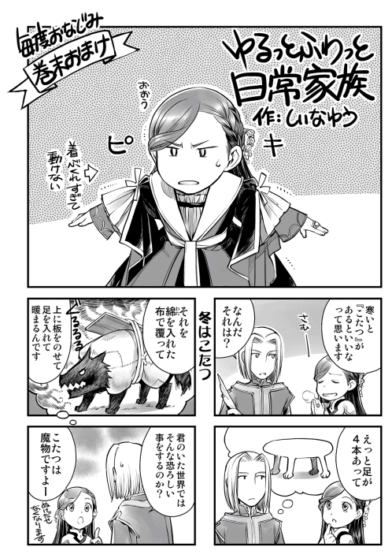
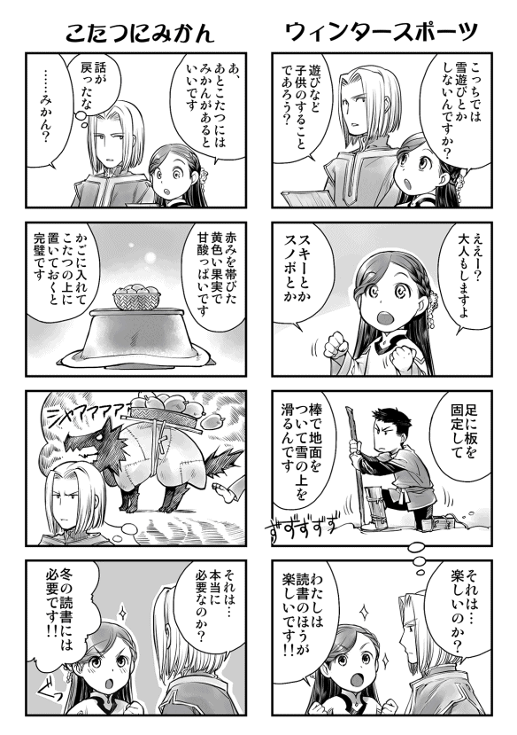
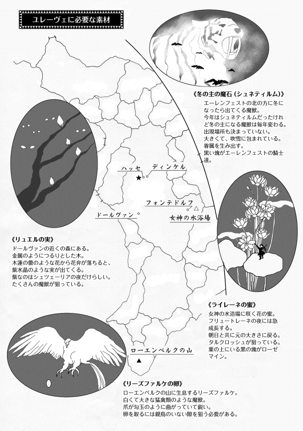
著者プロフィール
香月 美夜
Kazuki Miya
本作でデビュー。
『本好きの下剋上』のＷＥＢ版の完結が見えてきました。「完結したらあれもこれもしてみませんか？」。すでに仕事の予定がいっぱいです。
椎名 優
Shiina You
ローゼマインが転生してから何度目かの冬です。そして私もローゼマイン並みに重ね着をして着膨れてます。寒いのは苦手だなぁ。
本好きの下剋上
〜司書になるためには手段を選んでいられません〜
第三部 領主の養女III
2018年１月10日発行 ver.1.4
著 者 香月美夜
発行所 TOブックス
〒150-0045 東京都渋谷区神泉町18-８
松濤ハイツ２Ｆ
03-6452-5766（編集）
0120-933-772（営業フリーダイヤル）
Ⓒ2018 Miya Kazuki
※無断で複製・複写・データ配信などをすることは、かたくお断りいたします。
本電子書籍は下記にもとづいて制作しました
本好きの下剋上
〜司書になるためには手段を選んでいられません〜
第三部 領主の養女III
発行日 2018年１月10日 第２刷発行
本作品の全部または一部を無断で複製、転載、配信、送信したり、ホームぺージ上に転載することを禁止します。また、本作品の内容を無断で改変、改ざん等を行うことも禁止します。
本作品購入時にご承諾いただいた規約により、有償・無償にかかわらず本作品を第三者に譲渡することはできません。
本作品を示すサムネイルなどのイメージ画像は、再ダウンロード時に予告なく変更される場合があります。
本作品は縦書きでレイアウトされています。
また、ご覧になるリーディングシステムにより、表示の差が認められることがあります。